AI × Science 文献日报 2026/06/09
聚焦 AI × 物理 / 化学 / 材料交叉方向，自动过滤明显偏题的医学、教育与社会科学内容，并按主题重新排版，便于快速深读。
AI | 物理 | 化学 | 材料 | 交叉学科 | arXiv | 预印本追踪
原始候选 325 篇中，已剔除 0 篇明显偏离主线的内容，并从剩余 325 篇主线相关文献中精选 60 篇进入日报页，优先保留 AI × 物理 / 化学 / 材料交叉与关键计算方法工作。
核心关注（ML × ferro / 凝聚态）
8 篇今天的实质进展集中在缺陷/界面原子势、无序相搜索和实验表征语义化：MACE-MATPES-PBE-0、Orb-v3、SevenNet-0 被用于 Ti-23Nb-0.7Ta-2Zr gum metal 的 C/N/O/H 间隙能量筛选。Sb2Se3 带电点缺陷引入全局电荷嵌入的多保真 MLIP，Li/Ga 掺杂 LLZO 界面用矩张量势做有限温度 MLMD 电荷转移。PZT-5A 四臂压电收能与 DQN/PPO/SAC 耦合，把铁电压电器件从静态结构优化推到能量约束控制闭环。GNN/GCN 也进入 ADAPT-VQE 算符选择和高熵合金结构预测，说明图表示正成为凝聚态离散搜索的共用接口。
-
01四臂压电收能与强化学习无人机导航Four-Arm Piezoelectric Energy Harvesting with Optimised PZT-5A Placement Coupled with Deep Reinforcement Learning (DQN, PPO, SAC) for Energy-Aware Autonomous UAV Navigation
📄 摘要：面向 DJI F450 四旋翼，把单臂 PZT-5A 压电收能扩展到四臂结构，每臂考察 6 个贴片位置，并与 DQN、PPO、SAC 三类深度强化学习导航耦合。目标是在锂聚合物电池 15–25 分钟续航约束下，同时优化结构收能与能量感知自主飞行策略。
💡 亮点：四臂 PZT-5A 收能模型直接嵌入四旋翼导航决策，并比较 DQN、PPO、SAC。亮点在于把结构振动能量回收与路径规划放入同一物理耦合框架，适合低功耗自主机器人设计。
📐 方法要点：四臂PZT-5A贴片位置优化耦合DQN/PPO/SAC导航
🔗 相关工作关联：呼应压电能量收集、结构-控制协同优化、能量感知强化学习
💡 对你方向的启示：铁电压电器件可直接纳入控制策略训练，而非只做离线结构设计
-
02自适应 VQE 中 GNN 快速选算符Graph Neural Networks for Fast Operator Selection in Adaptive VQE
📄 摘要：针对 ADAPT-VQE 每轮扫描完整算符池导致的线性经典开销，把自适应算符选择重写为图决策问题。GNN 策略用于预测下一步纠缠算符，面向长程相互作用或大算符池体系，减少梯度式全池搜索瓶颈，同时保持定制化 ansatz 构建思想。
💡 亮点：GNN 将 ADAPT-VQE 的算符挑选从全池梯度扫描变为图上策略预测。对量子化学和强关联模型的变分量子算法，关键价值是降低大算符池下的经典预处理成本。
📐 方法要点：把ADAPT-VQE算符选择改写为GNN图决策
🔗 相关工作关联：呼应量子多体ansatz自适应构建、图策略搜索、长程相互作用模拟
💡 对你方向的启示：凝聚态量子算法的瓶颈可从全池梯度扫描转向学习式候选排序
-
03通用势揭示 gum metal 间隙能量Revealing interstitial energetics in Ti-23Nb-0.7Ta-2Zr gum metal base alloy via universal machine learning interatomic potentials
📄 摘要：在 Ti-23Nb-0.7Ta-2Zr 原子百分比 gum metal 基合金中，用 MACE-MATPES-PBE-0、Orb-v3、SevenNet-0 三种通用机器学习原子间势映射 C、N、O、H 间隙原子能量。相较 DFT，计算速度提高数个数量级，可处理多组元局域化学环境下轻元素间隙位点筛选。
💡 亮点：三种通用 MLIP 被用于 Ti-Nb-Ta-Zr gum metal 中 C/N/O/H 间隙能量图谱。该工作检验了基础势在复杂合金缺陷化学中的可用边界。
📐 方法要点：用MACE、Orb-v3、SevenNet筛选gum metal间隙能
🔗 相关工作关联：呼应通用MLIP、多组元合金局域化学、轻元素间隙缺陷热力学
💡 对你方向的启示：可先用通用势枚举复杂合金缺陷位点，再用DFT精修关键构型
-
04带电点缺陷的多保真机器学习势Multi-fidelity Machine Learning Interatomic Potentials for Charged Point Defects
📄 摘要：以半导体 Sb2Se3 带电点缺陷为对象，指出现有基础 MLIP 难以描述偏离完美晶体配位和电子数的缺陷物理。引入全局缺陷电荷嵌入，用于区分不同成键特征，并结合多保真机器学习势训练，面向能量、力、应力及缺陷局域环境的统一刻画。
💡 亮点：Sb2Se3 缺陷势函数中显式加入全局电荷嵌入，修正基础 MLIP 对带电缺陷的失效。它把电子数这一非局域信息引入原子势建模，是缺陷计算的关键方法改造。
📐 方法要点：全局缺陷电荷嵌入结合多保真MLIP
🔗 相关工作关联：呼应带电点缺陷、半导体缺陷物理、Δ-learning与主动学习势
💡 对你方向的启示：训练缺陷势时需显式编码电荷态，否则难区分同构型不同成键
-
05信息熵与 GCN 预测无序合金结构Information Entropy Based Crystal Structure Prediction of Chemically Disordered Alloys via Graph Convolutional Neural Networks
📄 摘要：面向化学无序合金和高熵合金的相预测，提出信息论度量来量化已探索的势能景观，并结合图卷积神经网络进行晶体结构预测。方法针对组合空间爆炸问题，试图在高通量成分搜索中更有效覆盖候选构型与相稳定性区域。
💡 亮点：信息熵被用作无序合金势能景观探索程度的度量，并与 GCN 相预测结合。该框架把“搜索是否充分”量化，对高熵合金高通量筛选更可控。
📐 方法要点：信息熵度量势能景观覆盖度并驱动GCN相预测
🔗 相关工作关联：呼应高熵合金、无序合金构型采样、图神经网络结构预测
💡 对你方向的启示：成分空间搜索可用熵指标监控采样盲区，减少重复探索
-
06上下文感知 STEM 缺陷分类Context-Aware Deep Learning for Defect Classification in Atomic-Resolution STEM
📄 摘要：针对原子分辨 STEM 中仅凭图像对比难以区分不同材料或成像条件造成的相似缺陷，构建融合图像对比与元数据的深度学习框架。元数据包括组成、电子束能量和探测器几何，目标是降低缺陷分类歧义，提高跨材料、跨实验设置的判别可靠性。
💡 亮点：STEM 缺陷识别不再只看像素，而是同时读取组成、束能和探测器几何。对原子尺度表征自动化而言，这是从图像分类走向实验上下文建模的直接升级。
📐 方法要点：STEM图像特征与组成、束能、探测器元数据融合
🔗 相关工作关联：呼应原子分辨显微AI、缺陷识别、跨材料域泛化与多模态学习
💡 对你方向的启示：缺陷分类模型应记录实验上下文，否则易把成像条件误判为缺陷类型
-
07神经网络预测分子材料物性Predicting Physical and Physical-Chemical Properties of Molecular-Based Materials Using Computational Neural Networks
📄 摘要：提出从有机分子化学结构直接生成数值向量的编码流程，并用反向传播神经网络关联结构与目标物性。测试对象包括烃、氢氟烃和冠醚，结果显示多类分子基材料的物理及物理化学性质可由简单结构/组成描述符进行快速预测。
💡 亮点：化学结构经简单算法编码后输入神经网络，可预测烃、氢氟烃和冠醚物性。尽管方法较早期风格明显，它体现了分子材料 QSPR 到神经网络建模的基本范式。
📐 方法要点：分子结构编码向量输入反向传播神经网络预测物性
🔗 相关工作关联：呼应分子描述符、QSPR、分子材料快速筛选与小模型回归
💡 对你方向的启示：简单描述符仍可作为基线，评估复杂GNN在小数据物性任务中的增益
-
08Li/掺 Ga LLZO 界面电荷转移 MLMDMachine learning assisted molecular dynamics of charge-transfer mechanisms at Li/Ga-doped Li₇La₃Zr₂O₁₂ (LLZO) interfaces
📄 摘要：围绕固态电解质与锂金属界面电荷转移，训练 t-LLZO、c-LLZO、Ga-LLZO 与 Li 金属的矩张量势。机器学习分子动力学用于模拟体相和 Li/固态电解质界面的 Li+ 扩散，弥补常规 DFT 与 NEB 对多体关联和有限温度效应处理不足的问题。
💡 亮点：MTP 支撑 Li/Ga 掺杂 LLZO 界面的有限温度 MLMD，直接追踪 Li+ 扩散与电荷转移相关过程。对固态电池界面失效机制，比静态 NEB 更接近真实热涨落环境。
📐 方法要点：矩张量势驱动Li/Ga-LLZO界面有限温度MLMD
🔗 相关工作关联：呼应固态电池界面、Li+扩散、MLIP替代DFT-MD与NEB
💡 对你方向的启示：界面电荷转移需采样多体关联和热涨落，静态NEB路径不足
今日摘要
总览：今日条目集中在机器学习势、图神经网络和物理信息神经网络对材料计算与表征流程的替代：通用原子间势解析钛二十三铌零点七钽二锆胶态金属间隙原子能量，多保真势处理带电点缺陷，主动学习信息匹配反设计原子间势，自动化并行势构建覆盖铜镍硅锰析出相与晶界形貌。磁性与量子材料方面，二维钒氧化物屈曲利布结构、纳米管手性角调控交错磁自旋劈裂、二硒化钌钼的对称性破缺自旋输运、铱酸锶反铁磁畴壁迁移、含多空穴费米口袋铜氧化物中高温超导与反铁磁共存，构成交错磁、轨道磁八极矩和强关联费米面重构的主线。实验数据智能化覆盖原子分辨透射电镜缺陷分类、低损失电子能量损失谱纳米光子共振表征、磁迷宫条纹分割、二维四氧化三铁单磁畴生长，以及紫外激光聚合物薄膜微加工、热扩散和海洋大气腐蚀的物理约束代理模型。
热点：机器学习原子间势规模化 → 用通用势、多保真带电缺陷势、信息匹配主动学习和自动并行构建降低第一性原理采样成本，并直接进入长时间分子动力学与析出相选择；典型工作是钛二十三铌零点七钽二锆间隙能量、锂镓掺杂锂镧锆氧界面电荷转移、铜镍硅锰析出相和自动势构建。交错磁与非常规反铁磁 → 从空间对称性破缺、手性角、轨道磁八极矩和非布洛赫边界谱出发解析自旋劈裂、磁光调控、畴壁时空迁移和边缘磁振子；典型工作是屈曲利布钒氧化物、交错磁纳米管、二硒化钌钼、铱酸锶和反铁磁链边界模。图学习与物理约束网络进入反问题 → 图卷积用于化学无序合金晶体结构预测和无机材料电响应学习，物理信息神经网络强化隐式几何边界、含噪高维热扩散、紫外激光微加工材料识别和碳钢腐蚀预测；典型工作是熵驱动合金结构预测、任意几何有限元网格图网络和隐式边界严格施加。实验表征自动化 → 以分割、分类和稀有事件发现替代人工判读，处理原子分辨透射电镜缺陷、低损失电子能量损失谱纳米光子共振、磁迷宫条纹演化和力谱不平衡数据；典型工作是上下文感知缺陷分类、低损失谱快速表征和单磁畴二维四氧化三铁生长控制。
今日文献
60 篇 · 20 含图深析-
01
📊 含图深析
📄 摘要：面向 DJI F450 四旋翼，把单臂 PZT-5A 压电收能扩展到四臂结构，每臂考察 6 个贴片位置，并与 DQN、PPO、SAC 三类深度强化学习导航耦合。目标是在锂聚合物电池 15–25 分钟续航约束下，同时优化结构收能与能量感知自主飞行策略。
💡 亮点：四臂 PZT-5A 收能模型直接嵌入四旋翼导航决策，并比较 DQN、PPO、SAC。亮点在于把结构振动能量回收与路径规划放入同一物理耦合框架，适合低功耗自主机器人设计。
📖 展开分析 + 配图
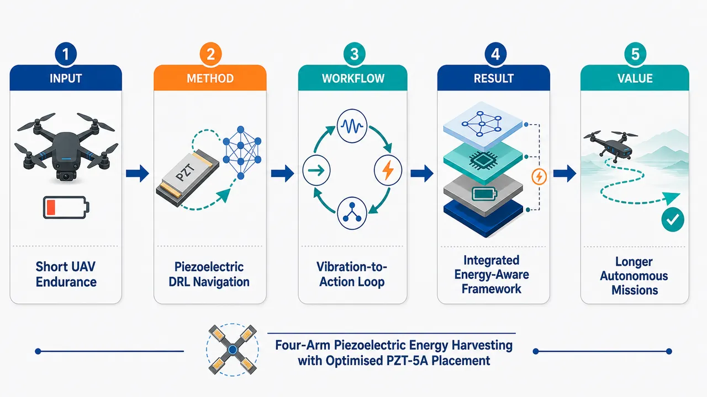
研究问题四旋翼无人机通常只能续航约 15–25 分钟，机臂振动中蕴含的机械能未被有效回收，导航路径也常忽略能耗；核心问题是如何把“机臂振动补能”和“低能耗自主导航”结合起来，延长无人机任务时间。创新方法在无人机四个机臂上优化布置 PZT-5A 压电片，把飞行振动转化为电能；同时引入 DQN、PPO、SAC 深度强化学习算法，让导航策略在选择路径时感知剩余能量、飞行代价与补能机会，形成“压电采能结构 + 能耗感知智能决策”的联合框架。工作流程输入四旋翼机臂振动与飞行状态信息，在四臂上放置优化后的 PZT-5A 压电采能模块，将结构振动转化为可用电能；系统把能量状态、位置状态和任务目标送入 DQN/PPO/SAC 强化学习导航器，输出兼顾路径、避障、能耗与补能的自主飞行动作。关键结果论文提出了一个系统级框架：四臂 PZT-5A 布置用于增强结构振动能量采集，DQN、PPO、SAC 用于学习能耗感知 UAV 导航策略；摘要未给出采集功率、续航提升百分比、路径效率或三种算法优劣的定量结果。应用价值该研究可用于长续航巡检、环境监测、灾害搜索等自主无人机任务，使无人机不仅依赖电池，还能从自身振动中回收能量，并通过智能路径规划减少无效耗电，提升任务持续性与自主性。核心概览
论文面向四旋翼续航瓶颈，结合四臂 PZT-5A 压电采能与深度强化学习，实现能量感知自主导航优化。
方法要点
- 在商用四旋翼无人机四臂结构上引入 PZT-5A 压电能量采集方案。
- 对压电片在机臂上的布置进行优化，以提升采能效果。
- 将压电采能模型/机制与无人机导航策略耦合。
- 使用深度强化学习算法 DQN、PPO、SAC 进行能量感知导航策略优化。
- 同时考虑“能量获取”和“飞行策略”两个层面的协同优化。
关键结果
- 摘要明确指出研究目标是缓解商用四旋翼约 15–25 分钟续航瓶颈。
- 摘要称实现了压电片布置优化和飞行策略优化。
- 摘要未详述具体续航提升幅度、采能功率、训练效果、对比基线或实验/仿真结果。
- 摘要未说明 DQN、PPO、SAC 中哪一种性能最好。
创新性判断
- 可能的新颖点在于将“四臂 PZT-5A 压电采能布局优化”与“深度强化学习能量感知导航”进行耦合，而非单独研究采能或路径规划。
- 同时比较或引入 DQN、PPO、SAC 三类强化学习方法用于 UAV 能量感知导航，可能体现方法层面的综合性；但摘要未说明是否系统对比。
- 相对传统无人机续航优化工作，该研究可能强调结构采能与智能决策的协同设计；这一判断基于摘要表述，具体创新强度需全文验证。
-
02
📊 含图深析
📄 摘要：研究 Bi 掺杂钇铁石榴石薄膜在磁场退火协议下的迷宫条纹演化。用含加性白高斯噪声和 Simplex 噪声合成退化训练的 U-Net 分割磁光图像，在噪声和遮挡下保持鲁棒，并进一步开展几何分析以量化无长程有序的条纹图案变化。
💡 亮点：噪声增强 U-Net 可靠分割 Bi:YIG 磁迷宫条纹，并支撑后续几何量化。该流程适合处理无长程有序磁畴图案的统计演化。
📖 展开分析 + 配图
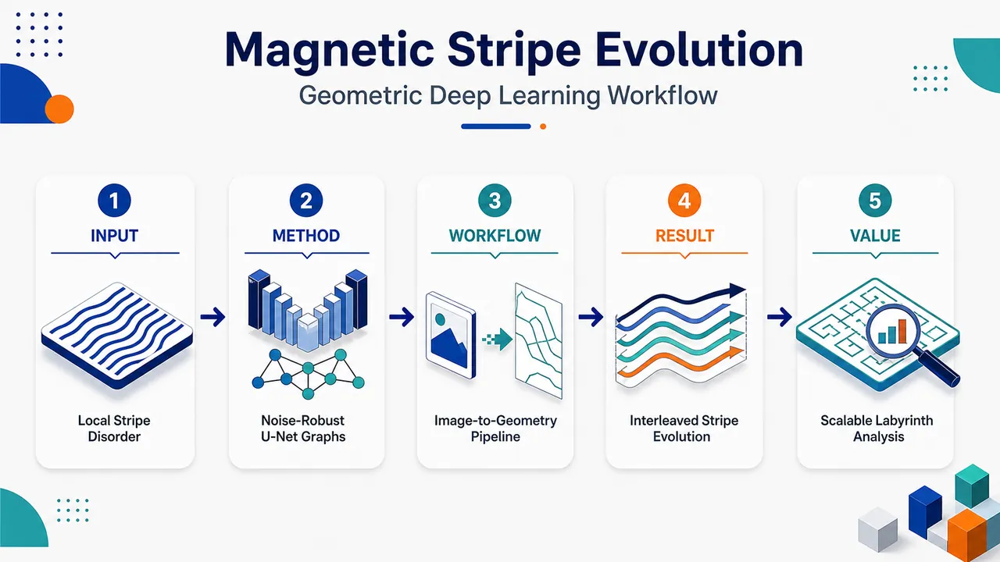
研究问题磁性迷宫条纹局部清晰但全局无序、缺陷密集，传统结构因子和全局无序指标只能给出整体相关性，难以直接看见和量化端点、交汇点之间条纹段的传播路径、长度变化、弯曲程度以及退火过程中的局部几何重排。创新方法将退化增强训练的 U-Net 分割与骨架化、缺陷图映射、样条拟合串联：用 AWGN 模拟传感器噪声，用 Simplex 噪声模拟污渍状遮挡，让模型在模糊、低对比和遮挡区域仍能分割明暗磁畴；再把条纹转化为由 terminals 和 junctions 组成的图，边代表缺陷间条纹段，并计算内部路径与边界路径的长度、曲率，实现从“缺陷计数”到“缺陷间几何演化”的表征。工作流程输入 444 张 Bi:YIG 薄膜磁光图像；从高对比区域提取 320×320 patch，用 Otsu 伪标签生成二值 mask；对输入加入亮度/gamma 扰动、AWGN 和 Simplex 噪声训练 U-Net；对整幅高分辨率图像进行明暗磁畴分割；提取暗区轮廓与中轴骨架，修剪伪分支；识别 terminals 与 junctions 并构建条纹图；将边界路径和内部路径进行样条拟合；输出每个条纹段的长度、曲率、边界路径、内部路径以及 Type A/Type B 退火演化统计。关键结果在低方差退化测试区域中，U-Net 达到 F1=0.953、IoU=0.910、ASSD=1.01 px，优于 Otsu 基线的 F1=0.948、IoU=0.901、ASSD=1.08 px；性能接近 SegFormer-B3，但处理 5200×3888 高分辨率图像更快、资源需求更低。几何分析揭示磁场极性交替导致 Type A/Type B 交错演化，并捕捉从 quenched state 到更平行、更连贯 annealed state 的局部条纹重排，以及 junction-junction 与 junction-terminal 段的几何差异。应用价值为磁畴迷宫条纹提供可扩展的自动图像分析工具，可在噪声、低照明、遮挡条件下稳定提取局部缺陷和条纹几何；有助于研究磁场退火、拓扑缺陷湮灭、无序到有序转变等物理过程，也可推广到生物图案、化学反应、晶体生长等复杂无序条纹系统的定量表征。第一部分：核心概览 (Overview)
磁性迷宫条纹缺乏长程有序，传统结构因子与全局无序函数难以捕捉局部缺陷与条纹传播几何。该研究以 Bi:YIG 薄膜在磁场退火协议下产生的 444 张高分辨率磁光图像为对象，结合经 AWGN 与 Simplex 噪声增强训练的 U-Net 分割、骨架化、图映射与样条拟合，量化条纹段的长度、曲率、边界路径与内部路径。其核心贡献在于把迷宫图案从“拓扑缺陷计数/相关”推进到“缺陷间局部几何演化”的可计算表征，并揭示与磁场极性相关的 Type A / Type B 交错演化模式，为复杂无序条纹系统提供通用图像分析工具。
---
第二部分：结构化快速回顾
《Geometric Analysis of Magnetic Labyrinthine Stripe Evolution via Deep Learning Segmentation》（None，）
背景
迷宫条纹图案广泛存在于生物、化学反应、晶体生长和磁有序系统中；其局部条纹清晰，但全局取向随机、缺陷丰富、缺乏长程有序。传统基于傅里叶结构因子或无序函数的全局指标难以捕捉局部缺陷、条纹段传播、几何约束等关键结构信息。
方法
以 Bi:YIG 薄膜磁光图像为实验对象，构建 U-Net 分割—轮廓提取—骨架化—图映射—样条拟合—长度/曲率测量流程。U-Net 使用高对比区域的 Otsu 伪标签训练，并通过亮度/gamma 扰动、AWGN、Simplex 噪声模拟退化、噪声与污渍状遮挡。
结果
数据集包含 12 个完整退火试验、444 张图像、5200 × 3888 像素。U-Net 在低方差退化区域测试中达到 F1 = 0.953、IoU = 0.910、ASSD = 1.01 px，显著优于 Otsu 基线；性能接近 SegFormer-B3，但资源需求更低、处理高分辨率图像更实用。
讨论
几何分析把条纹表示为由端点 terminals与交汇点 junctions构成的图结构，边对应缺陷间条纹段。内部路径和边界路径经样条拟合后可在实空间中计算长度与曲率，从而观察从 quenched state 到 annealed state 的局部结构重排。
局限
训练标签依赖高对比区域的 Otsu 伪标签，可能继承阈值法在复杂退化区域中的偏差；测试人工标注仅含 64 个 320 × 320 patches。已提供内容未呈现完整统计检验、P 值、置信区间或最终几何结果图表。
结论
深度学习分割结合骨架图建模能够在噪声和遮挡条件下稳定提取磁性迷宫条纹几何结构；该框架为磁畴条纹、拓扑缺陷、局部传播路径和场退火诱导结构演化提供了可量化、可扩展的分析范式。
---
第三部分：逐章节冷凝解析 (Section-by-Section Condensing)
Abstract
Labyrinthine stripe quantification is difficult because long-range order is absent
迷宫条纹图案常见于多种物理系统，但由于缺乏长程有序，定量描述并不直接。核心困难并非条纹不可见，而是局部条纹清晰、全局取向无序，导致传统序参量难以定义。原文指出：*"Labyrinthine stripe patterns are common in many physical systems, yet their lack of long-range order makes quantitative characterization challenging."*
Bi:YIG magnetic-field annealing provides an experimental platform for stripe evolution
实验系统为铋掺杂钇铁石榴石薄膜 Bi:YIG films，通过磁场退火协议 magnetic field annealing protocol诱导条纹结构从无序态向更有序态演化。研究对象不是静态图案，而是退火过程中的结构演变。原文写道：*"We investigate the evolution of such patterns in bismuth-doped yttrium iron garnet (Bi:YIG) films subjected to a magnetic field annealing protocol."*
Synthetic degradation enables robust U-Net segmentation
分割模型为 U-Net，训练时加入加性白高斯噪声 AWGN与 Simplex noise，用于模拟真实磁光图像中的噪声、遮挡和退化。关键创新在于将图像恢复式退化增强用于磁畴分割。原文表述为：*"A U-Net deep learning model, trained with synthetic degradations including additive white Gaussian and Simplex noise, enables robust segmentation of experimental magneto-optical images despite noise and occlusions."*
Geometric analysis pipeline connects segmentation to physical stripe propagation
分割结果进一步经过骨架化 skeletonization、图映射 graph mapping和样条拟合 spline fitting，以测量局部条纹的长度 length与曲率 curvature。这一流程将像素级分割转换为实空间几何量。原文指出：*"we develop a geometric analysis pipeline based on skeletonization, graph mapping, and spline fitting, which quantifies local stripe propagation through length and curvature measurements."*
Large dataset supports annealing transition analysis
数据规模为 444 张图像，来自 12 次退火协议试验。分析目标包括从 “quenched” state 到更平行、更连贯的 “annealed” state 的转变，并识别两类与磁场极性相关的演化模式。原文给出：*"Applying this framework to 444 images from 12 annealing protocol trials, we analyze the transition from the “quenched” state to a more parallel and coherent “annealed” state, and identify two distinct evolution modes (Type A and Type B) linked to field polarity."*
General relevance extends beyond magnetic films
结果不仅服务于 Bi:YIG 磁畴，也提供面向复杂迷宫系统的通用分析工具。原文概括为：*"establish a general tool for analyzing complex labyrinthine systems."*
---
1 Introduction
Labyrinthine patterns are generic nonlinear-system structures
迷宫图案 labyrinthine patterns由复杂条纹状特征构成，是非线性系统中的典型结构，跨越生物图案、化学反应、晶体生长和磁有序。原文开篇界定：*"Labyrinthine patterns, characterized by intricate stripe-like features, are hallmarks of non-linear systems that are ubiquitous in nature and appear in biological patterns, chemical reactions, crystal growth, and magnetic ordering."*
Local stripe definition coexists with global orientational disorder
这类图案具有局部清晰的条纹，但大范围取向随机，并被大量缺陷打断，因此没有长程有序。原文描述：*"These patterns consist of well-defined local stripes whose orientations vary randomly over large regions and are disrupted by numerous defects, resulting in the absence of long-range order."*
Conventional order parameters are inadequate
由于缺乏长程相关，常规相变理论中的序参量 order parameter难以定义，必须发展超越传统相描述的新表征方法。原文指出：*"Because of this lack of long-range correlation, defining a conventional order parameter to characterize their structure is challenging, so new methods of characterization beyond traditional phase descriptions are required."*
Global metrics such as structure factors and disorder functions miss local defects
既有方法包括结构因子 structure factors和无序函数 disorder functions，能够简化描述无序结构，但主要利用全局特征，可能忽略局部条纹缺陷。原文写道：*"These methods utilize the global features of labyrinthine patterns and have provided simple measures of disordered structures."* 但同时存在局限：*"they can potentially fail to capture the local structural properties such as the defects in local stripes despite their importance in disordered systems."*
Defects impose geometric constraints on stripe evolution
条纹形成中的缺陷与局部序参量的对称性破缺 symmetry breaking有关，其几何性质强烈约束图案演化。原文强调：*"defects generally exhibit unique geometrical properties associated with symmetry breaking of the local order parameter, and these properties impose strong geometrical constraints on the evolution of patterns."*
Junctions and terminals are the two crucial defect types
在迷宫图案中，两类关键拓扑缺陷为交汇点 junctions和端点 terminals。它们控制图案形成和演化。原文明确指出：*"two different types of defects called junctions and terminals are known to play crucial roles in their formation."*
Single defects cannot be removed continuously, but unlike defect pairs can annihilate
单个缺陷无法通过连续形变消除，而不同类型缺陷对可以发生成对湮灭 pair annihilation。这解释了无序结构为何在动力学上难以迅速重排。原文写道：*"A single defect cannot be removed by a continuous deformation of labyrinthine patterns, while pairs of different defects can be pair annihilated due to their geometrical properties."*
Kinetic suppression stabilizes disordered labyrinthine states
物理系统通常趋向低能、更有序构型，但缺陷必须成对湮灭才能降低无序度，因此全局结构重排受到动力学抑制 kinetically suppressed，使迷宫图案在缺陷丰富条件下仍可呈现静态稳定。原文指出：*"global structural reconfigurations become kinetically suppressed. This leads to stationary labyrinthine patterns, despite the presence of numerous defects and the absence of long-range order."*
Large-scale image analysis is necessary for unbiased characterization
由于迷宫图案本质无序，仅分析小区域不足以提取可靠特征，必须处理足够大区域并依赖统计分析。原文写道：*"Since labyrinthine patterns are inherently disordered, analyzing only a small portion of the pattern is insufficient to extract meaningful features."* 以及：*"It is necessary to examine sufficiently large regions for unbiased analysis, and thus large-scale image analysis becomes indispensable."*
Bi:YIG naturally forms magnetic labyrinthine stripes at zero field
Bi:YIG 薄膜即使在零磁场下也会自发形成迷宫条纹。磁光实验中，暗区与亮区代表内部磁矩相反极性的区域。原文指出：*"labyrinthine patterns are seen to arise spontaneously in films of bismuth-doped yttrium iron garnet (Bi:YIG), even under zero magnetic field."* 并说明：*"The patterns represent regions of internal magnetic moments of opposing polarity, distinguished as dark and bright regions in magneto-optics experiments."*
Annealing drives the system from quenched to annealed configurations
磁场退火过程使条纹从初始的 quenched state 演化到更紧凑、更空间相干的 annealed state。初态表现为条纹宽度变化大、传播方向不规则；退火后条纹更平行、连贯。原文描述：*"In the initial steps, referred to as the “quenched state,” the pattern exhibits a higher degree of spatial disorder, characterized by significant variations in stripe width and erratic propagation."* 以及：*"As the annealing protocol progresses, the stripe pattern moves towards a more compact and spatially coherent configuration referenced as “annealed state”."*
Previous TM-CNN work focused on topological defect identification
既有工作中，Okubo 等提出 TM-CNN，结合模板匹配与卷积神经网络，用于识别拓扑缺陷。原文写道：*"Okubo et al. developed TM-CNN, a technique that leverages template matching and CNN classification for accurate topological defect identification."*
Defect spatial correlations can track labyrinthine evolution
Shimizu 等进一步系统分析拓扑缺陷，证明其空间相关可作为捕捉迷宫图案空间演化的指标。原文指出：*"Shimizu et al. conducted a systematic analysis of the topological defects, demonstrating that their spatial correlations serve as an effective metric for capturing the spatial evolution of labyrinthine patterns."*
Geometric characterization extends beyond topological defect counting
该研究从拓扑缺陷转向缺陷间条纹段的几何特征 geometric features，重点分析条纹传播而非仅识别缺陷。原文给出核心定位：*"While previous studies emphasized the topological characterization of labyrinthine patterns, this work proposes a new framework for analyzing the geometric features of stripe propagation, with particular attention to the segments between topological defects."*
Dataset scale is 444 Bi:YIG images from 12 field annealing protocols
图像分析覆盖 444 张 Bi:YIG 薄膜图像，来自 12 个独立磁场退火协议。原文提供数据量：*"The analysis was performed in a large scale dataset containing 444 images of Bi:YIG films from 12 separate field annealing protocols."*
Length and curvature are chosen as local propagation descriptors
条纹段的长度 length与曲率 curvature用于描述迷宫条纹如何演化。原文表述为：*"Specifically, we evaluate segment length and curvature to describe how stripes evolve within the labyrinthine pattern."*
Segmentation is complicated by noise, blur, and occlusion
可靠识别条纹传播首先需要精确分割明暗区域，但真实图像存在噪声、模糊、遮挡等退化，会隐藏条纹形成细节。原文指出：*"Identifying stripe propagation requires precise segmentation between dark and light areas."* 同时：*"this segmentation is complicated by image degradations such as noise, blurred regions, and occlusions, which conceal important details in the formation of the stripes."*
Simplex noise is introduced to simulate smudge-like occlusions
常规图像恢复中常用 blur、rain、Gaussian noise；此处强调 Simplex noise 能模拟污渍状遮挡。原文写道：*"we demonstrate that Simplex noise can simulate smudge-like occlusions."*
Segmentations are converted into graphs that store defects and segment geometry
分割结果被映射为磁性图案的图表示，保存拓扑缺陷位置以及连接条纹段的长度与曲率。原文指出：*"The resulting segmentations were mapped into graph representations of the magnetic pattern, efficiently storing topological defect locations along with the length and curvature of the stripe segments connecting them."*
Key reported discoveries include interleaved behavior and segment-type differences
几何分析揭示退火协议导致的交错行为 interleaved behavior，捕捉 quenched-to-annealed 转变中的几何性质，并比较 junction-junction 与 junction-terminal 条纹段的差异。原文写道：*"we characterize an interleaved behavior resulting from the field annealing protocol, find particular geometric properties in the quenched to annealed transition, and identify geometric differences between junction-junction and junction-terminal stripe segments."*
---
2 Related works
Image segmentation is pixel-wise classification
图像分割的基本任务是对每个像素进行分类。原文定义简洁：*"Image segmentation is essentially classifying each pixel in an image."*
Fully convolutional networks enabled end-to-end segmentation
Long 等提出 Fully Convolutional Networks, FCN，以端到端训练实现语义分割，通过编码—解码结构从输入图像逐步产生高层特征。原文写道：*"Long et al. proposed Fully Convolutional Networks, a fully convolutional architecture with end-to-end training for image segmentation."* 并说明：*"It employs an encoder-decoder architecture, sequentially generating higher-level features from the input image until applying segmentation."*
U-Net combines low-level spatial detail with high-level semantic context
U-Net 使用 U 形编码器—解码器与跳跃连接，使低层空间细节和高层语义信息共同参与分割。原文指出：*"The U-Net model proposed by Ronneberger et al. introduced a U-shaped encoder-decoder CNN architecture for image segmentation."* 以及：*"Through the usage of concatenation bridges, the network can leverage jointly detailed spatial information from low-level features and semantic context from high-level features."*
U-Net is sample-efficient and memory-efficient
U-Net 的结构使其在样本数量有限时仍能有效训练，并相对于参数量保持较低内存占用。原文写道：*"This structure enables highly sample-efficient training while maintaining a low memory footprint relative to the number of parameters."*
Microscopy and medical imaging motivate U-Net selection
U-Net 在医学图像和显微图像分割中广泛应用，适合本文磁光显微图像场景。原文指出：*"It is particularly popular for medical image segmentation and has also demonstrated success in general microscopy image segmentation."*
Segmentation under occlusion remains less explored
多数图像分割研究聚焦清晰、界限明确的图像；噪声、模糊、雾、雨、低光已有部分研究，但视觉遮挡和遮蔽场景仍较少探索。原文写道：*"Still, most research on image segmentation has focused on clean and well-defined images."* 以及：*"image segmentation in settings with visual obstructions or occlusions remains relatively underexplored."*
Image restoration commonly uses synthetic degradations
图像恢复旨在从退化图像获得清晰图像，深度学习方法通常依赖合成退化构建 clean/degraded 图像对。原文说明：*"Degradations are more commonly tackled in the field of image restoration, which is dedicated in obtaining high-quality, clear images from degraded ones."* 以及：*"Most deep learning approaches rely on synthetic degradations to create clean and degraded image pairs for model training."*
Representative synthetic degradation remains a domain-specific challenge
合成退化不一定反映真实情况，因此构造代表真实退化的模拟过程仍是挑战。原文指出：*"These degradations do not necessarily reflect real-world conditions, so creating more representative degradations remains a challenge, motivating the development of many domain-specific approaches."*
AWGN filtering is a mature image-restoration problem
加性白高斯噪声 AWGN是图像恢复中的重要方向。早期 MLP 能在单一噪声水平下匹配旧方法，但难以处理可变噪声；CNN 后来成为主流。原文写道：*"Additive White Gaussian Noise (AWGN) filtering is a major area of interest in image restoration."* 以及：*"Early neural network-based approaches, such as Multi-Layer Perceptrons (MLPs), showed promise in noise filtering tasks by matching the performance of previous techniques at a single noise level, yet they struggled with variable noise levels."*
DnCNN and FFDNet exemplify CNN-based Gaussian denoising
DnCNN 通过残差图像提取去除高斯噪声；FFDNet 加入噪声水平图以适配图像内不同噪声强度。原文指出：*"Zhang et al. introduced DnCNN, a CNN model designed for Gaussian noise removal through residual image extraction."* 以及：*"FFDNet, which further improved Gaussian noise filtering by incorporating noise level maps as inputs, enabling better adaptability to varying noise levels across an image."*
Simplex and Perlin noises are less common but useful for structured synthetic artifacts
Simplex noise 和类似的 Perlin noise较少用于通用分割，但在 HRCT、胸片分类、去雾、裂缝分割和异常检测中有任务特定用途。原文概括：*"In contrast, Simplex and Simplex-like noises have been used more sporadically in task-specific settings."*
Transformer segmentation offers global context but needs data and compute
Transformer 模型在充足数据与计算资源下泛化强于 CNN；注意力机制允许输入 token 全局交互，而卷积具有局部平移不变感受野偏置。原文写道：*"Transformer-based models demonstrate superior generalization capabilities compared to CNNs when trained with sufficient data and computational resources."* 并对比：*"Transformers allow global interactions between input tokens through the attention mechanism, while convolution-based approaches are biased toward local patterns due to their translation-invariant receptive fields."*
Modern transformer segmentation architectures provide relevant baselines
相关架构包括 ViT、SETR、TransUNet、Segmenter、Swin-Unet、SegFormer。原文列举：*"Building on ViT, several transformer-based architectures have been proposed for segmentation."* 其中 SegFormer 被定义为：*"a hierarchical transformer-based model whose encoder produces multiscale features using overlapping patch embeddings, while a simple all-MLP decoder upsamples and fuses features into high-resolution segmentation maps without positional encodings."*
GANs and diffusion models are alternatives for image restoration
图像恢复还可使用 GAN 与扩散模型。pix2pix 是基于 GAN 的通用 image-to-image translation 框架，可用于恢复和分割；扩散模型也用于图像恢复。原文指出：*"Isola et al. introduced pix2pix, a framework based on Generative Adversarial Networks (GANs) for general image-to-image translation."* 以及：*"Diffusion models have also been studied for image restoration."*
Deocclusion often separates occlusion detection and inpainting
去遮挡通常与修复 inpainting 相关，许多单图像方法分两步：先定位遮挡，再修复被遮挡区域。原文写道：*"Deocclusion is a subfield within image restoration commonly associated with inpainting."* 以及：*"Many single-image deocclusion approaches rely on a two-step procedure: first identifying occlusion locations, then inpainting the affected areas."*
Unified deocclusion models motivate direct degraded-image segmentation
一些方法不显式分两步，而是用统一模型直接学习去遮挡，例如建筑现场去遮挡和人脸去遮挡。原文指出：*"Other approaches perform deocclusion in an unified model."* 这支持本文使用单个 U-Net 直接从退化输入恢复条纹分割，而不是先显式检测污渍遮挡。
---
3 Methodology
Pipeline integrates U-Net segmentation with geometric path extraction
整体流程包括 U-Net 分割、边界路径与内部路径提取、样条拟合和几何量测量。原文指出：*"To analyze the magnetic labyrinthine pattern, we developed a processing pipeline illustrated in Fig. 3."* 并说明：*"Segmentation of the light and dark regions is performed through a U-Net model."*
U-Net is selected because labyrinthine propagation and degradations are local
尽管 Transformer 能建模全局上下文，迷宫条纹传播主要由局部结构支配；噪声和遮挡也空间局域。因此 U-Net 的局部归纳偏置适合数据受限场景。原文写道：*"Although Transformer-based approaches have recently gained popularity due to their ability to model global context, the propagation of labyrinthine patterns is primarily governed by their local structure."* 以及：*"U-Net’s local inductive bias is thus a good match for this task, supporting strong generalization in this data-constrained setting."*
Two path classes define geometric observables
分析两类路径：边界路径 border paths沿明暗区域边界；内部路径 inner paths沿暗区中心线并由 junctions 与 terminals 分段。原文列出：*"Border paths, which follow the boundary between light and dark regions"*，以及：*"Inner paths, which traverse the center of the dark regions, divided by the pattern’s junctions and extending until its terminals."*
Spline fitting converts pixel paths into smooth real-space curves
样条拟合用于生成定义在 ℝ² 中的平滑曲线，从而测量长度和曲率。原文指出：*"Spline fitting is used to generate smooth curves defined in ℝ2 space following the extracted paths."* 并说明：*"Measurements of the length and curvature are then processed to characterize properties of the magnetic labyrinthine pattern."*
---
3.1 Dataset
Magnetic-domain images are acquired from Bi:YIG thin films under controlled field annealing
数据来自铋掺杂钇铁石榴石薄膜的迷宫磁畴图像，薄膜经历受控磁场退火。原文写道：*"Images of labyrinthine magnetic domains were acquired from thin films of bismuth‑doped yttrium iron garnet subjected to a controlled magnetic‑field annealing protocol."*
Each trial begins with out-of-plane magnetic saturation
每次退火试验开始于强外部面外磁场使薄膜磁化饱和，方向为 ±z。原文指出：*"Each annealing trial began by saturating the film’s magnetization with a strong external out‑of‑plane field (±z)."*
Zero-field relaxation lasts 10 seconds before imaging
饱和后磁场关闭并保持零场 10 s，使磁化弛豫到相反极性共存的畴结构。原文写道：*"The field was then switched off and held at zero for 10 s, allowing the magnetization to relax into a domain structure with opposing polarities."*
Polarized-light microscopy records the magnetic-domain pattern
弛豫后的磁畴图案通过偏振光显微镜 polarized-light microscopy成像。原文表述：*"The resulting domain pattern was captured using polarized‑light microscopy."*
One annealing step consists of field application, zeroing, and photography
实验把一次“step”定义为施加外场、设为零场、拍摄照片。原文给出：*"We define a step as applying the external field, setting it to zero, and taking a photograph."*
Each trial contains 37 exponentially decaying alternating-field steps
每次试验包含 37 个步骤；场幅度逐步指数衰减，极性交替。原文写道：*"Each trial consists of 37 steps: the field amplitude decays exponentially from step to step, and its polarity alternates."*
Positive and negative sequences differ by initial saturation direction
存在两类序列：正序列初始饱和场沿 +z，负序列初始饱和场沿 −z。原文指出：*"Two trial types were run. In the positive sequence, the initial saturating field pointed along +z, whereas in the negative sequence it pointed along −z."*
Type A and Type B are defined by the polarity of the immediately applied field
经过 +z 磁场后的图像标为 Type A；经过 −z 磁场后的图像标为 Type B。原文明确：*"Images taken after a +z field are labeled Type A."* 以及：*"Those taken after a −z field are labeled Type B."*
Type A and Type B are interleaved because field polarity alternates
由于磁场每一步交替方向，Type A 和 Type B 图像在序列中交错。原文指出：*"Because the applied field alternates directions every step, Type A and Type B images are interleaved."*
Positive sequence assigns Type A to even steps and Type B to odd steps
正序列中，Type A 对应偶数步 0, 2, 4, …；Type B 对应奇数步 1, 3, 5, …。原文写道：*"In the positive sequence, Type A images correspond to the even-numbered steps (0, 2, 4, …) and Type B images correspond to the odd-numbered steps (1, 3, 5, …)."*
Negative sequence reverses Type-step assignment
负序列中，Type A 对应奇数步，Type B 对应偶数步。原文说明：*"This assignment is reversed in the negative sequence: Type A images correspond to odd-numbered steps, and Type B images correspond to even-numbered steps."*
Dataset size is 12 trials and 444 images
每类序列重复 6 次，共 12 个完整试验；每个试验 37 张图像，总计 (6+6) × 37 = 444。原文给出：*"Each sequence type was repeated six times, yielding 12 complete trials and a total of 444 domain images."*
Image resolution and physical film size are high enough for large-scale geometry
每张图像分辨率为 5200 × 3888 px；薄膜尺寸为 2 mm × 1.8 mm；所有测量在室温下进行。原文写道：*"a total of 444 domain images with 5200 × 3888 resolution."* 以及：*"All measurements were performed at room temperature on a 2 mm × 1.8 mm film."*
Images are indexed by trial, sequence, and step
图像索引为 I ≡ (t, σ, s)，其中 t ∈ 1,…,6 为 trial，σ ∈ +,− 为正/负序列，s ∈ 0,…,36 为退火步。原文定义：*"Images can then be indexed by the tuple: I ≡ (t, σ, s)"*。
---
3.2 Segmentation
Local Otsu thresholding was tested before U-Net
分割最初尝试局部 Otsu 阈值法，通过最大化强度域之间的类间方差确定局部阈值。原文写道：*"Prior to U-Net-based segmentation, we attempted a simple local Otsu thresholding algorithm, which determines local thresholds by maximizing the inter-class variance between intensity domains."*
High-variance regions are well suited to threshold segmentation
局部强度方差高的区域，磁畴之间强度分离明显、双峰强度分布清晰，因此 Otsu 分割通常符合肉眼可见条纹形貌。原文指出：*"regions with high local intensity variance exhibit a greater intensity separation between domains and a clearer bimodal intensity distribution."* 以及：*"segmentation in such regions is generally consistent with the visually identifiable stripe morphology."*
Low illumination and contrast weaken threshold-based segmentation
低照明区域亮度和对比度下降，磁畴强度分布更难分离；传感器噪声相对影响增强，阈值分割受阻。原文写道：*"in regions with reduced illumination, brightness and contrast decrease, making the intensity distributions of magnetic domains less separable."* 以及：*"This reduced contrast amplifies the relative impact of sensor noise, hindering threshold-based segmentation."*
Structured occlusions introduce localized segmentation distortions
结构化遮挡会部分掩盖条纹图案，并在分割中引入局部畸变。遮挡常带有中间强度纹理，进一步降低局部方差。原文指出：*"structured occlusions partially mask the stripe pattern, introducing localized distortions in the segmentation."* 以及：*"they tend to introduce textures with intermediate intensities, reducing the local variance as well."*
U-Net training uses high-variance Otsu masks as pseudo-labels
U-Net 使用高方差、高可分区域训练；对应 Otsu 分割被用作伪标签，即 ground-truth proxies。原文写道：*"Training was performed using high-variance regions of the image with stronger domain separability, and the corresponding Otsu segmentations were used as pseudo-labels (“ground-truth proxies”)."*
Synthetic degradations are applied only to inputs while labels remain fixed
训练时输入图像被合成退化，伪标签保持不变，使模型学习在噪声和遮挡下恢复条纹结构，而不是直接复制阈值法在退化区域的失效。原文表述：*"Synthetic degradations were then applied to the input images while keeping the pseudo-labels fixed, so that the network could learn to recover the stripe structure under noise and occlusion without inheriting the limitations of threshold-based segmentation."*
---
3.2.1 Pre-processing
Training pairs consist of magnetic-stripe patches and corresponding segmentations
训练数据为磁性条纹 patch 与对应分割 mask 的图像对，来源于全部 444 张实验图像。原文指出：*"we first built a dataset of image pairs containing magnetic-stripe patches and their corresponding segmentations."* 以及：*"These patches were sourced from the 444 experimental images."*
Red channel is used for grayscale conversion
预处理时图像通过红色通道 red channel转为灰度。原文写道：*"As a pre-processing step, the images were converted to grayscale using the red channel."*
Patch size is 320 × 320 pixels
从高对比区域提取 320 × 320 px patch。原文表述：*"We then extracted 320 × 320 patches from the high-contrast regions."*
High-contrast regions are selected by sliding-window local variance
局部亮度方差通过 64 × 64 px 滑动窗口计算，步长为 32 px。低分辨率方差图随后通过双线性插值上采样到原始 5200 × 3888 分辨率。原文给出细节：*"we computed local brightness variance with a sliding window of 64 × 64 pixels, advancing in 32-pixel steps."* 以及：*"The resulting low-resolution variance map was upscaled to the original 5200 × 3888 resolution with bilinear interpolation."*
Patch sampling requires local variance above 80% of image-wide variance
训练 patch 只从局部方差高于整图方差 80% 的位置采样。原文指出：*"We sampled patches only where the local variance was above 80% of the image-wide variance."*
Low-noise regions are included and high-noise regions excluded
图 5 中黄色区域为训练使用的低噪声、条纹清晰区域；紫色区域为排除的高噪声区域。原文说明：*"yellow marks the low-noise regions used for training, while purple highlights the high-noise areas that were excluded."*
Photometric augmentation accounts for illumination and contrast variation
为了模拟采集图像中的不均匀照明和对比度变化，加入亮度扰动 brightness perturbations与 gamma perturbations。原文写道：*"To account for uneven illumination and contrast variations in the acquired images, we included photometric transformation augmentation consisting of brightness and gamma perturbations."*
AWGN models uncorrelated sensor noise
AWGN 用于模拟噪声退化，作为成像系统中常假设的非相关传感器噪声的简单表示。原文指出：*"AWGN was then used to model noise degradation, as a simple representation of uncorrelated sensor noise commonly assumed in imaging systems."*
Simplex noise models smooth, correlated, textured smudge-like occlusions
遮挡需具有平滑、空间相关、带纹理特征，类似真实污渍。Perlin noise 可产生自然纹理；实际采用 Simplex noise，因为计算成本更低且方向性伪影更少。原文写道：*"occlusions must be smooth, spatially correlated, and textured to resemble real smudge-like artifacts."* 以及：*"we employed Simplex noise, a derivative of the Perlin algorithm, to simulate occlusions due to its lower computational cost and reduced directionality artifacts."*
Noise parameters are randomly sampled during augmentation
为覆盖原图中的不同噪声强度和结构畸变，训练时随机采样噪声参数。原文指出：*"the noise parameters were randomly sampled as an augmentation step during training."* 并解释效果：*"This ensured that the network learned to segment images with different noise characteristics."*
---
3.2.2 Architecture
U-Net contains an encoder and a decoder
模型结构由编码器 encoder和解码器 decoder两部分组成。原文写道：*"The U-Net architecture employed in this study comprises two main components: an encoder and a decoder."*
Encoder extracts hierarchical features through convolution and max pooling
编码器通过卷积层和最大池化逐层抽取更抽象的特征，空间尺寸下降、通道深度增加。原文说明：*"The encoder systematically extracts increasingly abstract feature representations from the input image through a series of convolutional layers and max-pooling operations."* 以及：*"This process progressively reduces the spatial dimensions of the feature maps while simultaneously increasing their depth."*
Decoder upsamples features to reconstruct segmentation
解码器反向镜像编码器，逐步上采样以增加空间尺寸、减少特征深度，生成分割图。原文指出：*"The decoding process mirrors the encoder in reverse to generate the segmented image."* 以及：*"It progressively upsamples the feature maps to increase their spatial dimensions while decreasing their depth."*
Skip connections fuse high-resolution and abstract features
每个解码阶段通过跳跃连接 skip connections加入编码阶段对应嵌入，将高分辨率空间信息与抽象语义特征结合。原文写道：*"At each stage of decoding, we incorporate the corresponding embeddings from each step of the encoding process through skip connections."* 以及：*"This combines high-resolution information from the encoder with the decoder’s abstracted features."*
Final 1 × 1 convolution produces a single-channel logit map
最终使用 1 × 1 convolutional layer 将嵌入深度降为单维输出。推理时直接对 logits 以 threshold = 0 阈值化。原文指出：*"In the final step, a 1 × 1 convolutional layer reduces the depth of the embeddings to a single final dimension."* 以及：*"During inference, we apply thresholding directly after the 1 × 1 convolutional layer logits with threshold = 0."*
Architecture depth ranges from 64 to 1024 channels
表 3 显示编码器通道依次为 64、128、256、512、1024，每级使用 Conv2D + Batch Norm + ReLU，下采样为 MaxPooling2D(2)，上采样为 ×2 resolution。原文表格说明：*"Conv2D(64) + Batch Norm + ReLU"* 至 *"Conv2D(1024) + Batch Norm + ReLU"*，并定义：*"⇊ : MaxPooling2D(2), ⇈ : Upsampling (×2 resolution)."*
---
3.2.3 Training
U-Net reconstructs Otsu-thresholded masks from degraded 320 × 320 patches
训练目标是从合成退化 patch 重建 Otsu 阈值化二值 mask，patch 分辨率为 320 × 320。原文写道：*"The U-Net was trained to reconstruct Otsu-thresholded binary masks from clear patches with 320 × 320 resolution."* 以及：*"These patches were corrupted with synthetic noise to simulate degraded regions."*
Trials 1–4 provide 296 images for training and validation
训练/验证使用 t ∈ 1,2,3,4，共 296 张图像。原文给出：*"Trials t ∈ 1, 2, 3, 4, comprising 296 images, were used for training and validation."*
Trials 5–6 provide 148 held-out test images
测试集来自 t ∈ 5,6，共 148 张图像。原文写道：*"The remaining 148 images from trials t ∈ 5, 6 were reserved for the test set."*
Validation focuses on degraded low-variance areas
训练集来自高局部方差区域；验证集使用局部方差低于整图方差 70% 的区域，以保证多数 patch 存在显著退化。原文指出：*"The training set comprised patches from high-local-variance regions, while validation used areas with a local variance under 70% of the overall image variance, ensuring that most patches exhibited substantial degradation."*
Manual validation annotations contain 64 patches
验证性能基于人工标注的 64 个 320 × 320 patches，且计算指标时不使用增强。原文写道：*"We sampled and manually annotated 64 patches (320 × 320)."* 以及：*"Performance metrics were calculated without augmentation."*
Each epoch samples four patches per training image
每个训练 epoch 从每张训练图像的清晰区域随机采样 4 个 patch。原文表述：*"For each training epoch, four patches were randomly sampled from the well-defined region of each training image."*
Rotation augmentation uses four right-angle rotations
patch 额外随机旋转 0°、90°、180°、270°。原文指出：*"The patches were further augmented by applying random rotations of 0°, 90°, 180° or 270°."*
Training uses PyTorch, batch size 32, learning rate 10−3
网络用 Python/PyTorch 实现，batch size 为 32，学习率为 10⁻³。原文写道：*"The network was implemented in Python using the PyTorch framework."* 以及：*"It was trained with a batch size of 32 and a learning rate of 10−3."*
Loss function is BCEWithLogitsLoss
损失函数为 Binary Cross Entropy with Logits Loss (BCEWithLogitsLoss)，内部应用 sigmoid，允许分割目标位于 [0,1]。原文说明：*"The loss function was Binary Cross Entropy with Logits Loss (BCEWithLogitsLoss), which internally applies a sigmoid function, allowing for training with the segmentation targets in the [0, 1] range."*
Training lasts 30 epochs with Adam optimizer
模型使用 Adam optimizer 训练 30 epochs；选择验证 IoU 最佳的 epoch 进行测试评估。原文写道：*"The model was trained for a total of 30 epochs with the Adam optimizer."* 以及：*"The epoch with the best validation IoU was used for test evaluation."*
Training hardware is a single NVIDIA A100 on Google Colab
训练使用 Google Colab 环境中的单张 NVIDIA A100 GPU。原文指出：*"Training was conducted using a single NVIDIA A100 GPU in the Google Colab environment."*
---
3.2.4 Testing
Testing evaluates degraded regions in held-out trials
U-Net 在保留测试试验 t ∈ 5,6 的退化区域上评估。原文指出：*"The U-Net’s performance was tested for segmenting degraded regions using the held-out testing trials t ∈ 5, 6."*
Testing ground truth uses 64 manually segmented low-variance patches
测试流程与验证类似，从低方差区域随机采样 64 个 320 × 320 patches，并人工分割作为 ground truth。原文写道：*"64 patches of 320 × 320 pixels were randomly sampled from the low-variance areas of the images and manually segmented to serve as the ground truth for evaluation."*
SegFormer-B3 is fine-tuned as a transformer comparison
由于 Transformer 分割模型流行，额外微调了从 ImageNet-1k weights 初始化的 SegFormer-B3，并使用与 U-Net 相同的数据和噪声增强。原文指出：*"we also finetuned a SegFormer-B3 model initialized from ImageNet-1k weights."* 以及：*"The model was trained on the same dataset and noise augmentations as the U-Net model."*
Metrics include segmentation overlap, surface distance, and geometric deviation
评估指标包括 F1 score、IoU、ASSD in pixels、Δ Inner、Δ Border。其中 Δ Inner 和 Δ Border 直接关联后续几何测量误差。原文列出：*"we report the F1 score, Intersection over Union (IoU), Average Symmetric Surface Distance (ASSD) in pixels, and the percentage deviation in inner length (Δ Inner) and border length (Δ Border)."*
Otsu baseline is outperformed by both learned models
表 4 中 Otsu 得到 F1 = 0.948、IoU = 0.901、ASSD = 1.08、ΔInner = 1.38%、ΔBorder = 2.90%；U-Net 和 SegFormer-B3 均更优。原文总结：*"both the U-Net and the SegFormer-B3 model outperformed the Otsu baseline, achieving similar results in ASSD, F1-Score and IoU."*
SegFormer-B3 slightly improves border length deviation
SegFormer-B3 达到 F1 = 0.953、IoU = 0.911、ASSD = 1.01、ΔInner = −0.41%、ΔBorder = −0.05%，其中边界长度偏差优于 U-Net。原文指出：*"SegFormer-B3 achieved a better Δ Border."*
U-Net slightly improves inner length deviation
U-Net 达到 F1 = 0.953、IoU = 0.910、ASSD = 1.01、ΔInner = −0.15%、ΔBorder = 1.16%，其中内部路径长度偏差优于 SegFormer-B3。原文指出：*"U-Net achieved a slightly better Δ Inner."*
U-Net is chosen for practical high-resolution processing
尽管性能与 SegFormer-B3 接近，U-Net 处理高分辨率图像更快、资源需求更低，因此被采用。原文给出选择理由：*"We used U-Net, as its faster processing and lower resource requirements for high resolution segmentation provides a clear practical advantage without a meaningful sacrifice in performance."*
---
3.3 Border and inner paths
Segmented dark regions are converted into contour and skeleton images
分割图像进一步处理为包含暗区轮廓 contour和拓扑骨架 topological skeleton的新图像。原文写道：*"The segmented images were processed further to extract the border and the inner paths of the dark regions."* 以及：*"Specifically, we generated new images containing the contour and the topological skeleton respectively."*
Medial axis skeletonization represents centers equidistant from boundaries
拓扑骨架又称中轴 medial axis，使用 skimage 的 medial axis skeletonization 生成，基于欧氏距离变换表示到边界至少两点等距的点集。原文指出：*"The topological skeleton, also known as the medial axis, was generated using the skimage implementation of medial axis skeletonization."* 以及：*"It represents the set of points equidistant to at least two points on the boundary using the Euclidean distance transform."*
Skeleton traces stripe centers but contains spurious branches
在磁性条纹中，骨架形成沿暗区的中心轴；但边界形状的小变化会产生伪分支。原文写道：*"Within the magnetic stripes, it forms the central axis along the dark patterns, but includes spurious branches caused by minor variations in the border shape."*
Spurious branches are removed using TM-CNN defect terminals
为准确建模内部路径，使用 TM-CNN 检测的 terminals 与骨架 terminal points 匹配；未匹配的骨架端点若长度不超过 45 pixels，则修剪回 junction。原文说明：*"To accurately model the inner paths within the dark patterns, these spurious branches were removed."* 以及：*"This was done by matching the terminal points of the skeleton with the terminals detected by TM-CNN defect detection."* 关键阈值为：*"Terminals that did not match were trimmed back to a junction point, provided their length did not exceed 45 pixels."*
Boundary extraction uses OpenCV findContours with Suzuki-Abe algorithm
条纹边界通过 OpenCV 的 findContours 提取，该函数基于 Suzuki-Abe algorithm。原文写道：*"The boundary of the stripe patterns were produced through contour finding using OpenCV’s findContours, which is based on the Suzuki-Abe algorithm."*
---
3.4 Graph mapping
Stripe patterns are represented as graphs of defects and connecting segments
条纹图案被表示为图：节点为拓扑缺陷，即 terminals 和 junctions；边为连接这些缺陷的条纹段。原文定义：*"The stripe pattern is represented as a graph where nodes denote topological defects (terminals and junctions) and edges correspond to the stripe segments connecting them."*
Each graph edge stores the corresponding path
每条边保存其条纹段路径，为后续长度和曲率测量提供结构化数据。原文指出：*"Each edge stores its segment’s path, providing an intuitive structure for subsequent measurements."*
Paths are extracted from the trimmed skeleton
图路径提取不是从原始骨架，而是从经过伪分支修剪后的 skeleton 进行。原文写道：*"Paths are extracted from the trimmed skeleton."*
Terminal pixels are identified by a 3 × 3 convolution kernel
终端像素通过与 3 × 3 kernel 卷积识别；核中心权重为 10，邻居权重为 1。终端像素卷积和为 11。原文给出算法细节：*"Initially, terminal pixels are found by convolving the skeleton with a 3 × 3 kernel whose centre is 10 and neighbors are 1."* 以及：*"A terminal pixel produces a convolution sum of 11."*
Terminal pixels become initial graph nodes
识别出的 terminal pixels 被作为 terminal nodes。原文写道：*"These pixels become terminal nodes."*
Skeleton traversal uses a stack and 8-connectivity
处理骨架时，终端坐标先入栈；随后每个坐标作为起点，通过 8-connectivity 在临时图像副本中追踪修剪骨架。原文指出：*"terminal coordinates are initially pushed onto a stack."* 以及：*"We then use each coordinate as a starting point (kernel) to trace the trimmed skeleton using 8-connectivity on a temporary image copy."*
Visited pixels are marked 255 to prevent redundant tracing
遍历过程中，像素访问后标记为 255，避免重复处理。原文写道：*"Pixels are marked as 255 upon visitation to avoid redundant processing."*
Edges are created when tracing reaches another defect
当追踪到另一个缺陷时，检查其是否已有图节点表示；若有或新建后，创建连接起点与终点的边并保存路径。原文描述：*"If a trace reaches another defect, we verify its representation as a graph node and create an edge connecting it to the starting kernel node, saving the path taken."*
Junctions are treated as pixel clusters rather than single points
像素化骨架中的 junction 通常是像素簇，不是单个像素。因此每个 junction 组成像素都初始化为节点。原文指出：*"Because junctions in the pixelated skeleton consist of pixel clusters rather than single points, a node is initialized for each constituent pixel within the junction."*
Empty-path edges connect pixels inside the same junction
junction 内部节点通过空路径边连接，以表示单一拓扑结构并保持分支连通。原文写道：*"These nodes are connected to one another through edges with empty paths to represent a single topological structure."*
Only outgoing branch edges store segment paths
只有从 junction 连到外部分支的边保存真实条纹段路径。原文说明：*"Only the edges connecting the junction to outgoing branches store the corresponding segment path."*
This representation avoids ambiguity during path tracing
将 junction 像素簇表示为互联节点，既代表单个交汇缺陷，又避免追踪路径时对分支连接产生歧义。原文指出：*"In this way, the nodes represent a single junction, preserving branch connectivity while avoiding ambiguity during path tracing."*
Unvisited neighbors are pushed to the stack to ensure full branch coverage
遇到 junction 时，未访问邻居被压入栈，从而每个分支都被追踪。原文写道：*"The unvisited neighbors are then pushed onto the stack so that every branch can be traced."*
Dead-end traces are disambiguated using the original skeleton
若追踪在工作副本中没有邻居，则查询原始 skeleton：若原图中只有一个邻居，则为真实 terminal；若有两个或更多邻居，则是因闭环导致的已访问 junction。原文说明：*"If a trace ends with no neighbor in the working copy, we consult the original skeleton to disambiguate: with one original neighbor, the endpoint is a true terminal and we attach the edge to it; with two or more, the endpoint is a previously reached junction, which was reached due to a closed loop in the stripe pattern."*
Closed loops require hidden junction attachment
在闭合条纹环中，某些 junction 可能已经从其他路径到达；此时边连接到 hidden junction node。原文指出：*"In such case, we attach the edge to the hidden junction node."*
Algorithm 1 formalizes graph mapping
算法伪代码以 availableₚₐₜₕ ← copy(skeletonᵢₘₐge) 和 defect_coords ← pile(kernel_coords) 初始化，循环弹出 kernel_coord 并遍历 skeleton。原文算法开头为：*"availableₚₐₜₕ ← copy(skeletonᵢₘₐge)"*，*"defect_coords ← pile(kernel_coords)"*，并在每个 currentₚᵢₓₑₗ 处执行：*"availableₚₐₜₕ[currentₚᵢₓₑₗ] ← 255"*。
---
第四部分：深度理解与语言支持 (Understanding & Nuance)
1. 术语解析
Labyrinthine patterns
字面是“迷宫状图案”，学术上指局部呈条纹、全局方向随机且缺陷丰富的空间组织。重点不是“像迷宫”这一视觉比喻，而是局部有序与全局无序共存。在该研究中，Bi:YIG 中暗/亮磁畴构成 labyrinthine stripe pattern；其挑战来自缺乏长程相关，而非图像不可分辨。
Quenched state
Quenched 在凝聚态和材料语境中通常指快速冷却或快速从强外场撤除后形成的非平衡、缺陷丰富状态。这里不是热淬火，而是磁场退火协议初期的高度无序磁畴构型：条纹宽度变化大、传播方向不规则。它强调一种动力学冻结的高缺陷状态。
Annealed state
Annealed 指经过退火程序后更接近平衡或低能的状态。这里对应磁场幅度逐步衰减且极性交替后形成的更紧凑、更相干、更平行的条纹结构。它不是完全有序晶格，而是相对 quenched state 更少无序、更强局部一致性的磁畴图案。
Topological defects
拓扑缺陷不是普通图像噪点，而是条纹结构中不能通过连续形变单独消除的结构奇点。本文涉及两类：junctions 是条纹交汇/分叉结构，terminals 是条纹终止端。其重要性在于控制条纹能否通过成对湮灭实现结构重排。
Medial axis / skeletonization
中轴/骨架化把二维暗色磁畴区域压缩成沿其中心延伸的一像素宽路径。它保留拓扑连通关系和大致几何走向，方便将条纹段转化为图的边。但骨架对边界微小起伏敏感，容易产生 spurious branches，因此需要修剪。
---
2. 疑难查证
为什么全局结构因子不足以描述迷宫条纹？
结构因子本质上是图案的傅里叶谱，能告诉系统中是否存在主导波长、取向分布是否集中、整体周期性如何。但迷宫条纹的关键物理过程常发生在局部：某两个缺陷之间的条纹变长或变短，某个 junction-terminal 片段被拉直，两个不同类型缺陷发生湮灭。全局傅里叶谱可能在这些局部重排前后变化很小，因此难以解释具体拓扑事件和几何传播。
为什么缺陷必须成对湮灭会导致动力学抑制？
若单个 defect 不能连续消除，那么系统从高缺陷状态到低缺陷状态不能靠局部平滑变形完成。一个 terminal 或 junction 要消失，通常需要找到合适的异类缺陷并在空间上靠近、配对、湮灭。这个过程可能要求大范围条纹移动和重排，因此能垒高、动力学慢。结果是系统明明存在许多缺陷，却长期停留在 metastable labyrinthine state。
为什么 Simplex noise 适合模拟污渍状遮挡？
AWGN 是逐像素独立噪声，看起来像随机颗粒；真实显微图像中的污渍、遮挡、污染或局部成像不良往往是空间连续的、具有纹理的、强度缓慢变化的区域。Simplex noise 生成的是平滑相关噪声场，可产生团块状、云雾状、污渍状纹理，因此比 AWGN 更接近遮挡。将 Simplex noise 加到输入而保持标签不变，迫使 U-Net 学会“穿过污渍看见条纹”。
为什么 U-Net 可以优于 Transformer，尽管 Transformer 能建模全局上下文？
Transformer 的优势依赖大数据和高算力，并且适合需要全局关系建模的任务。磁性迷宫条纹的分割主要依赖局部边界、局部纹理、局部连通性；退化如噪声和污渍也多为空间局部现象。U-Net 的卷积归纳偏置天然关注局部结构，在仅有 444 张高分辨率图像、人工标注 patch 数有限的场景下更稳健、更高效。测试中 U-Net 与 SegFormer-B3 的 F1/ASSD 几乎相同，但计算资源更低。
为什么要把骨架映射成图？
像素骨架只是路径的栅格表示，不便于统计“从哪个缺陷到哪个缺陷”的条纹段属性。图结构将 terminals 和 junctions 作为节点，把缺陷间条纹段作为边，每条边储存路径坐标。这样可以自然区分 junction-junction、junction-terminal 等不同 segment 类型，并对每条边计算长度、曲率、连接关系和演化变化。
---
第五部分：创新评估与关联 (Synthesis & Novelty)
1. 创新性判断
From global disorder metrics to local geometric propagation
近年相关工作常集中在迷宫图案的全局统计描述，如结构因子、无序函数，或集中在拓扑缺陷检测与空间相关。该研究的新增点是把分析单位从“整张图”或“缺陷点集合”推进到缺陷之间的条纹段 segment，并计算其实空间长度与曲率。这直接刻画条纹如何传播、弯曲、拉直和连接。
From topological characterization to combined topological-geometric graph representation
此前 TM-CNN 能识别 junctions 和 terminals，Shimizu 等展示缺陷空间相关可表征演化。该研究进一步把缺陷作为图节点，把条纹段作为图边，并在边上保存路径几何。新颖性在于形成了拓扑—几何一体化表示：拓扑缺陷提供节点，骨架路径提供边，样条拟合提供连续几何量。
Robust segmentation under realistic microscopy degradation
传统阈值法在高对比区域有效，但在低照明、低对比、噪声和遮挡下不稳定。该研究使用高质量区域的 Otsu 结果作为伪标签，再对输入施加 AWGN 与 Simplex 噪声，使模型学习在退化条件下恢复条纹。这解决了磁畴图像中普遍存在但常被忽略的低质量区域分割问题。
Simplex noise as a task-specific model for smudge-like occlusion
过去图像恢复常用 Gaussian noise、blur、rain、haze 等退化；Perlin/Simplex noise 多见于少数任务增强。该研究明确将 Simplex noise 用于模拟磁光图像中的污渍状遮挡，并证明其对分割稳健性有实际意义。这是面向材料显微图像退化建模的一个具体方法创新。
High-resolution, repeated-protocol dataset enables statistical annealing analysis
数据规模为 12 个退火试验 × 37 步 = 444 张 5200 × 3888 图像，并包含正/负初始饱和序列、Type A/Type B 极性交错。这使得几何演化分析不局限于单张图或单次实验，而能比较磁场极性、退火步数和重复试验之间的结构趋势。
Practical comparison with SegFormer-B3 supports architecture choice
在 Transformer 分割模型流行背景下，该研究不仅采用 U-Net，还用 SegFormer-B3 做同数据、同增强的微调比较。结果显示二者性能接近：U-Net F1 = 0.953、IoU = 0.910、ASSD = 1.01，SegFormer-B3 F1 = 0.953、IoU = 0.911、ASSD = 1.01。U-Net 因高分辨率处理更快、资源需求更低而被选用，体现了面向科学图像分析的工程理性。
Problem solved relative to prior work
前人主要解决了“如何整体描述迷宫无序”或“如何识别拓扑缺陷”。尚未充分解决的问题是：在噪声和遮挡显著的真实磁光图像中，如何大规模、自动、稳定地提取每条缺陷间条纹段，并测量其局部几何演化。该研究给出了完整路径：稳健分割 → 骨架修剪 → 图映射 → 样条拟合 → 长度/曲率统计。
-
03
📄 摘要：针对 ADAPT-VQE 每轮扫描完整算符池导致的线性经典开销，把自适应算符选择重写为图决策问题。GNN 策略用于预测下一步纠缠算符，面向长程相互作用或大算符池体系，减少梯度式全池搜索瓶颈，同时保持定制化 ansatz 构建思想。
💡 亮点：GNN 将 ADAPT-VQE 的算符挑选从全池梯度扫描变为图上策略预测。对量子化学和强关联模型的变分量子算法，关键价值是降低大算符池下的经典预处理成本。
📖 展开分析 + 配图
研究问题ADAPT-VQE 每一轮都要像“探照灯扫完整个算子池”一样，对所有候选两体算子逐个计算交换子梯度，才能选出下一道纠缠门；当相互作用长程、候选边很多时，经典选择成本随线路深度和算子池大小线性膨胀，成为自适应量子线路构造的瓶颈。创新方法将“找最大梯度算子”改造成“图上边排序决策”：把量子自旋系统画成加权相互作用图，节点是自旋，边是候选纠缠算子；GNN 读取几何距离、耦合强度、局域磁化、两体关联和算子方差，通过 5 层 edge-conditioned message passing 一次性给所有候选边打分，直接预测下一条最有价值的纠缠边。Aha 点是：不再逐边计算真实梯度，而是学习梯度排序的结构规律，用一次图前向传播压缩全池扫描。工作流程输入无序长程自旋链或分子活性空间的候选算子图；为节点填入位置、局域耦合、磁化等特征，为边填入耦合、距离、两体关联、算子方差等特征；用精确模拟产生监督标签，即每条边的交换子梯度幅值 |i⟨ψ|[H,Pij]|ψ⟩|；训练 GNN 输出边分数分布；部署时 GNN 根据当前量子态观测量生成候选边排序，选择最高分边或少量短名单；追加对应纠缠门形成线路拓扑；最后用标准 VQE 全局优化所有角度并输出能量。关键结果GNN 在典型算子池 |E|≈20–30 时 top-1 验证准确率约 40%，远高于随机选择的几个百分点；真实 oracle 边的平均排名约为第 4，显示很强的短名单能力。能量 rollout 中，GNN 明显优于随机策略和最强耦合启发式，说明裸耦合强度不足以预测最佳算子；最终 VQE 重优化后，GNN-VQE 能接近梯度型 ADAPT-VQE 的能量精度，但仍与完整梯度 oracle 存在差距。在 LiH、BeH2 小活性空间中，GNN 作为候选短名单生成器，经少量精确重评分可恢复接近 oracle 的行为。应用价值该研究为自适应 VQE 提供一种“先由 GNN 缩小搜索，再精确优化”的低成本线路构造路径，可减少反复全池梯度评估，特别适合长程相互作用、大算子池和量子化学候选算子筛选场景。它证明自适应量子线路生长中存在可学习的图结构规律，有望降低近量子设备上变分算法的经典决策开销。第一部分：核心概览
提出一种将 ADAPT-VQE 算子选择重构为图上序贯决策问题的框架，用 GNN policy 直接从相互作用图、局域观测量与两体关联中预测下一步纠缠算子，减少每轮全算子池梯度扫描的经典开销。训练监督来自无序长程自旋链精确模拟中的交换子梯度幅值 (|iłangleψ|[H,Pᵢⱼ]|ψångle|)。模型在算子排序上显著优于随机选择和最强耦合启发式；在 VQE 工作流中能接近梯度型 ADAPT-VQE 的能量精度，并在 LiH、BeH(₂) 小活性空间中显示出作为候选短名单生成器的迁移潜力。核心地位在于把自适应量子线路构造中的高成本搜索转化为可学习的图结构策略。
---
第二部分：结构化快速回顾
《Graph Neural Networks for Fast Operator Selection in Adaptive VQE》（None，）
背景
VQE 依赖 ansatz 结构；ADAPT-VQE 通过每轮扫描全部候选算子并选择最大梯度算子来构造线路，但每轮成本随算子池大小线性增长，长程相互作用与大算子池中开销显著。
方法
将自旋系统表示为加权相互作用图：节点为自旋，边为候选两体纠缠生成元。节点特征包含几何、局域耦合、磁化强度；边特征包含耦合、距离、两体关联和算子方差。采用 5 层 edge-conditioned message-passing GNN，隐藏维度 (d=96)，输出候选边分数。
结果
GNN top-1 验证准确率约 40%，在典型算子池大小 (|E|sim20–30) 时显著高于随机选择；正确 oracle 算子的平均验证排名约 4。能量 rollout 中优于随机和最强耦合启发式，但仍落后精确梯度 oracle。
讨论
单步 imitation accuracy 与最终 VQE 表现并不完全等价；GNN 即使未完全复现最大梯度选择，仍可产生有竞争力的多步算子序列。状态依赖观测量与图结构信息是优于裸耦合启发式的关键。
局限
GNN 未完全重构完整梯度景观；相对于梯度 oracle 仍有性能差距。随机选择在小系统最终重优化后仍具竞争力，说明当前系统规模下 ansatz topology 优势尚未完全拉开。分子体系迁移主要体现为短名单生成，而非完全替代梯度 oracle。
结论
自适应线路构造含有可学习结构；GNN 能用一次前向传播替代或压缩全池梯度扫描，为降低自适应 VQE 经典选择成本提供了可行路径。
---
第三部分：逐章节冷凝解析
Abstract
Adaptive operator selection has a linear full-pool bottleneck
ADAPT-VQE 每轮通过全算子池扫描选择最大梯度算子，虽然能避免过大参数空间，但经典选择成本随算子池大小线性增长。摘要明确指出：*"it requires repeated scans over the full operator pool, so the classical cost of each iteration scales linearly with pool size."* 对长程相互作用或大算子集合，选择开销可能主导总运行时间：*"For systems with long-range interactions or large operator sets, this overhead can dominate the overall runtime."*
Graph-based decision formulation is the central methodological shift
自适应算子选择被重新表述为图上决策问题，并用 GNN policy 从相互作用图和状态依赖观测量中直接预测下一步纠缠算子。核心表述为：*"we reformulate adaptive operator selection as a graph-based decision problem and introduce a graph neural network (GNN) policy that predicts the next entangling operator directly from the interaction graph and state-dependent observables."*
Supervision comes from exact commutator-gradient labels
训练数据来自无序长程自旋链精确模拟，监督信号为梯度幅值
[
|iłangleψ|[H,Pᵢⱼ]|ψångle|.
]
摘要给出精确定义：*"Training data are generated from exact simulations of disordered long-range spin chains, using gradient magnitudes, (|iłangleψ|[H,Pᵢⱼ]|ψångle|), as supervision signals."*
Learned policy captures greedy gradient structure better than heuristics
GNN 学到的策略能复现贪婪梯度选择规则的主要结构，并显著优于仅基于相互作用强度的启发式。摘要中的证据为：*"The learned policy accurately reproduces the dominant structure of the greedy gradient-based selection rule and significantly outperforms heuristic baselines based only on interaction strength."*
GNN-VQE reduces selection scans while retaining competitive energy accuracy
集成到 VQE 后，GNN-VQE 能达到接近梯度型 ADAPT-VQE 的能量误差，同时减少重复全池梯度评估需求：*"Integrated into a variational quantum eigensolver workflow, the resulting GNN-VQE approach achieves energy errors close to those of gradient-based ADAPT-VQE while reducing the need for repeated full-pool gradient evaluations during operator selection."*
Molecular benchmarks show shortlist utility rather than full replacement
LiH 和 BeH(₂) 小活性空间测试显示，GNN 最有效的角色是短名单生成器：*"the learned GNN is most effective as a shortlist generator: exact rescoring over only a few GNN-proposed candidates recovers near-oracle or oracle-level rollout behavior while using only a small fraction of the full candidate search."*
---
I Introduction
VQE defines a hybrid ground-state optimization problem
VQE 用参数化量子线路制备试探态
[
|ψ(bmθ)ångle=U(bmθ)|0ångle
]
并通过经典优化最小化
[
E(bmθ)=łangleψ(bmθ)|H|ψ(bmθ)ångle.
]
关键原句为：*"In VQE a parametrized quantum circuit prepares a trial state (|ψ(bmθ)ångle=U(bmθ)|0ångle), and the parameters (bmθ) are optimized using classical routines in order to minimize the energy expectation value."*
Ansatz design is the central bottleneck
ansatz 表达能力取决于门结构，但过度表达会造成大参数空间和优化困难，包括 barren plateaus。原文明确：*"The expressive power of the variational state depends critically on the chosen gate structure, yet overly expressive circuits introduce large parameter spaces and optimization difficulties such as barren plateaus."*
ADAPT-VQE selects operators by full-pool commutator gradients
ADAPT-VQE 每轮对算子池中所有 (Oₖ) 计算
[
gₖ₌|łangleψ|[H,Oₖ]|ψångle|
]
并追加最大梯度算子。原文为：*"At each iteration the algorithm evaluates a gradient-like quantity (gₖ₌|łangleψ|[H,Oₖ]|ψångle|) for every operator (Oₖ) in the pool, and the operator with the largest gradient magnitude is appended to the circuit."*
Full-pool scans scale as (O(T|E|))
若候选算子数为 (|E|)，自适应线路深度为 (T)，需 (O(T|E|)) 次梯度评估。原文给出精确复杂度：*"If the operator pool contains (|E|) candidate operators and the adaptive circuit grows to depth (T), the algorithm requires (O(T|E|)) gradient evaluations."* 这正是 GNN 替代策略的计算动机。
Long-range disordered spin systems expose the cost sharply
长程耦合无序自旋系统中，候选两体算子多，重要性依赖无序 realization 和相互作用指数 (α)。原文指出：*"This challenge becomes particularly relevant in disordered quantum spin systems with long-range couplings."* 以及：*"the interaction graph contains many possible two-site operators whose importance depends sensitively on the disorder realization and the interaction-range exponent (α)."*
SDRG provides physical motivation for graph-structured selection
强无序体系有层级结构，SDRG 中最强局域相互作用决定纠缠簇形成和重整化流。这启发纠缠门选择可能遵循图依赖规则。原文表述：*"Strongly disordered spin systems exhibit hierarchical structures that are well captured by strong-disorder renormalization group (SDRG) approaches."* 以及：*"This suggests that the selection of entangling operations in a variational circuit may follow structured, graph-dependent decision rules."*
GNNs naturally encode local connectivity and global context
GNN 通过节点表示自旋、边表示相互作用强度和局域关联，用 message passing 同时捕捉局域连通性和全局上下文。原文为：*"By representing a quantum system as a graph whose nodes correspond to spins and whose edges encode interaction strengths and local correlations, message-passing architectures can learn representations that capture both local connectivity and global context."*
The learned-shortlisting idea broadens the scope beyond spin chains
自适应量子化学算法也面临从大候选池中识别少数相关算子的瓶颈，因此机器学习模型可不完全替代梯度 oracle，而是缩小搜索空间。原文直接说明：*"a machine-learning model does not necessarily replace the gradient oracle outright, but instead narrows the search to a tiny set of promising candidates before an exact local refinement step is applied."*
Training uses exact spin-chain simulations and graph-structured labels
训练标签为
[
gᵢⱼ=|łangleψ|[H,Pᵢⱼ]|ψångle|,
]
其中 (Pᵢⱼ) 为两点纠缠生成元。算子池天然对应图边。原文：*"Training data are generated from exact simulations of disordered long-range spin chains, where the optimal operator at each step is identified using the commutator-based gradient magnitude (gᵢⱼ=|łangleψ|[H,Pᵢⱼ]|ψångle|)."*
---
II Learning Operator Selection in Disordered Model
The learning target is adaptive operator selection in graph-structured disordered systems
该部分将无序长程自旋链中的算子选择定义为从图结构物理信息到下一条纠缠边的映射。核心任务与摘要一致：利用相互作用图、状态观测量与梯度监督学习 operator-ranking policy。章节标题本身界定范围为 *"Learning Operator Selection in Disordered Model"*，方法围绕无序模型中的选择规则学习展开。
---
II.1 Problem Setup and Variational Objective
Random spin positions generate broad disordered couplings
系统含 (N) 个 spin-(1/2)，随机分布在长度 (L) 的一维开边界区间。稀疏密度 (nłl1) 产生宽耦合分布和强键无序。原文：*"We consider disordered long-range quantum spin chains in which (N) spin-(1/2) degrees of freedom are distributed at random positions (rᵢᵢ₌₁N) along a one-dimensional segment of length (L) with open boundaries."* 以及：*"In the dilute regime (nłl1), the random spatial separations produce a broad distribution of couplings (Jᵢⱼ), resulting in strong bond disorder."*
Power-law interactions are controlled by (α)
相互作用为
[
Jᵢⱼ=J₀|rᵢ₋ᵣⱼ|⁻α,
]
其中 (α) 控制相互作用范围；小 (α) 长程，大 (α) 接近短程。原文：*"The interaction between spins (i) and (j) decays algebraically with distance, (Jᵢⱼ=J₀|rᵢ₋ᵣⱼ|⁻α), where the exponent (α) controls the effective range of interactions."*
The Hamiltonian is long-range XXZ
哈密顿量为
[
H=sumᵢ<ⱼJᵢⱼ(XᵢXⱼ₊YᵢYⱼ₊Δ ZᵢZⱼ₎,
]
(Δ=1) 时退化为 Heisenberg 模型。原文：*"The Hamiltonian is taken to be of XXZ form, (H=sumᵢ<ⱼJᵢⱼ(XᵢXⱼ₊YᵢYⱼ₊Δ ZᵢZⱼ₎), which reduces to the Heisenberg model when (Δ=1)."*
Fixed hardware-efficient entanglers are mismatched to strong disorder
强无序体系中耦合层级跨越多个能标，纠缠高度非均匀且尺度依赖，因此固定几何纠缠模式可能无法捕捉哈密顿量结构。原文：*"In strongly disordered systems, however, the hierarchy of couplings spans multiple energy scales, and entanglement develops in a highly inhomogeneous and scale-dependent manner."* 结论为：*"Fixed entangling patterns may therefore fail to fully capture the intrinsic structure of the Hamiltonian."*
Circuit growth selects entangling bonds adaptively
从乘积态 (|ψ₀ångle) 出发，逐步追加由图结构选择的两体纠缠门。深度 (T) 时
[
|ψ_T(bmθ)ångle=prodₜ₌₁^TUᵢ_ₜⱼ_ₜ(θₜ₎|ψ₀ångle.
]
原文：*"Starting from a product state (|ψ₀ångle), we iteratively append entangling operations selected adaptively based on the interaction graph."*
The variational objective is energy minimization after adaptive topology choice
目标为最小化
[
E(bmθ)=łangleψ_T(bmθ)|H|ψ_T(bmθ)ångle.
]
该节用问题句明确核心难题：*"Given an interaction graph and an evolving variational state, how can one efficiently select a sequence of entangling bonds ((iₜ,jₜ₎) that improves the variational energy?"*
---
II.2 Graph Neural Network for Variational Circuit Construction
Interaction graphs are sparsified by strongest incident couplings
每个哈密顿量实例表示为 (G=(V,E))，节点为自旋，边为有效耦合。为效率与物理保真，每个节点保留 (K) 个最强入射耦合。原文：*"we retain for each node the (K) strongest incident couplings, yielding a sparsified but physically faithful graph representation of the interaction structure."*
Node static features encode geometry and local coupling landscape
节点静态特征为
[
vᵢstatⁱc=(xᵢ,dᵢ,sᵢ,mᵢ₎,
]
其中 (xᵢ₌ᵣᵢ/L)，(dᵢ) 为最近邻间距，(sᵢ₌sumⱼJᵢⱼ)，(mᵢ₌maxⱼJᵢⱼ)。原文：*"Node features encode geometric and local interaction structure"*，并说明这些量 *"provide a compact summary of the local interaction landscape surrounding each spin."*
Edge static features encode logarithmic couplings, distances, and dominance
边静态特征为
[
eᵢⱼstatⁱc=(łog|Jᵢⱼ|,łog|rᵢ₋ᵣⱼ|,h̊oᵢⱼ),
]
其中
[
h̊oᵢⱼ=frac|Jᵢⱼ|maxₖ|Jᵢₖ|+frac|Jᵢⱼ|maxₖ|Jⱼₖ|.
]
采用对数参数化是为强无序数值稳定：*"The logarithmic parametrization improves numerical stability in the strong-disorder regime, where coupling strengths typically span multiple orders of magnitude."*
State-dependent node and edge features make the policy state-aware
节点加入 ((łangle Zᵢångleₜ,łangle Xᵢångleₜ₎)，边加入 ((łangle ZᵢZⱼångleₜ,łangle XᵢXⱼångleₜ,łangle YᵢYⱼångleₜ₎)。原文：*"These observables encode the evolving correlation structure of the wavefunction and allow the network to learn a state-aware policy."*
Operator variance estimates potential entangling effect
边特征还包括
[
øperatornameVarψ_ₜ(Pᵢⱼ)=łangle Pᵢⱼ²ångleₜ₋łangle Pᵢⱼångleₜ².
]
原文解释为：*"This quantity reflects the magnitude of quantum fluctuations associated with the operator (Pᵢⱼ) in the current state and provides information about its potential entangling effect."*
GNN architecture uses edge-conditioned message passing
节点与边先经 MLP 编码：
[
hᵢ⁽⁰⁾=φₙ₍ᵥᵢ₎,quad e'ᵢⱼ=φₑ₍ₑᵢⱼ).
]
消息为
[
mᵢⱼ⁽ell⁾=φₘ₍ₕᵢ⁽ell⁾,hⱼ⁽ell⁾,e'ᵢⱼ),
]
并用求和聚合：
[
mᵢ⁽ell⁾=sumⱼᵢₙN₍ᵢ₎mᵢⱼ⁽ell⁾.
]
原文强调：*"Information is then propagated through the graph using several edge-conditioned message-passing layers."*
Residual updates stabilize multi-layer propagation
节点更新为
[
tildehᵢ⁽ell⁺¹⁾=φᵤ₍ₕᵢ⁽ell⁾,mᵢ⁽ell⁾),
quad
hᵢ⁽ell⁺¹⁾=hᵢ⁽ell⁾+tildehᵢ⁽ell⁺¹⁾.
]
该残差结构使耦合、关联与几何信息跨图传播。原文：*"Several such message-passing iterations allow information about couplings, correlations, and geometry to propagate across the interaction graph."*
Edge scoring uses endpoint embeddings, difference, product, and edge attributes
候选边分数为
[
sᵢⱼ=φₛ₍ₕᵢ,hⱼ,hᵢ₋ₕⱼ,hᵢødothⱼ,e'ᵢⱼ).
]
原文说明：*"the edge-scoring head combines the final endpoint embeddings, their difference, their element-wise product, and the encoded edge feature to produce a scalar score for each candidate operator."*
Architecture hyperparameters are explicitly fixed
GNN 使用节点和边嵌入维度 (d=96)，包含 5 个 edge-conditioned message-passing layers。稀疏图保留强耦合数为：(N=8,10,12) 时分别用 (K=6,7,8)。原文：*"The graph neural network employs node and edge embeddings of dimension ((d=96)) and consists of five edge-conditioned message-passing layers."* 以及：*"we use (K=6,7,8) for system sizes (N=8,10,12), respectively."*
Dataset rollout uses fixed small rotation (θ₀₌₀.05)
数据生成阶段应用纠缠操作时使用固定小角度 (θ₀₌₀.05)。原文：*"During dataset generation, circuit construction proceeds using a small fixed rotation angle ((θ₀₌₀.05)) when applying entangling operations."*
Edges remain reusable, unlike SDRG decimation
每步选择最高分边
[
(iₜ,jₜ₎₌argmax₍ᵢ,ⱼ₎ᵢₙ Esᵢⱼ⁽t⁾
]
并追加
[
Uᵢ_ₜⱼ_ₜ(θₜ₎₌exp(-iθₜPᵢ_ₜⱼ_ₜ).
]
边不会被永久移除，可重复选择。原文强调：*"Unlike strong-disorder renormalization-group procedures that permanently remove bonds from the system, edges remain available throughout circuit construction and may be selected multiple times if beneficial for energy reduction."* 这样可形成环结构和长程关联：*"This allows the variational ansatz to incorporate loop structures and long-range correlations, rather than being restricted to tree-like growth patterns."*
Training labels are first-order energy-response gradients
监督信号为
[
gᵢⱼ⁽t⁾=|iłangleψₜ|[H,Pᵢⱼ]|ψₜångle|,
]
等于 (θ=0) 处能量导数幅值。原文：*"This quantity corresponds to the magnitude of the energy derivative (fracddθłangleψₜ₍θ)|H|ψₜ₍θ)ångle|θ₌₀), and therefore identifies the operator that produces the largest instantaneous change in energy when applied infinitesimally."*
Gradient rule is used only for supervision, not deployment
部署时 GNN 直接选择算子，不再全池计算梯度。原文：*"the gradient rule is used only during dataset generation to produce supervision signals, while operator selection at deployment time is performed directly by the learned GNN policy."*
Soft teacher distribution avoids unstable raw gradients
梯度先归一化：
[
tildegᵢⱼ⁽t⁾=fracgᵢⱼ⁽t⁾max₍ₖ,ₗ₎ᵢₙ Egₖₗ⁽t⁾+ϵ,
]
再通过温度 (τ) 形成 soft teacher：
[
qᵢⱼ⁽t⁾=fracexp(tildegᵢⱼ⁽t⁾/τ)sum₍ₖ,ₗ₎ᵢₙ Eexp(tildegₖₗ⁽t⁾/τ).
]
原文动机：*"To avoid numerical instabilities arising from large variations in gradient magnitude, the scores are normalized within each step."*
Loss is cross-entropy between teacher and student edge distributions
GNN logits 定义
[
pᵢⱼ⁽t⁾=fracexp(sᵢⱼ⁽t⁾)sum₍ₖ,ₗ₎ᵢₙ Eexp(sₖₗ⁽t⁾),
]
训练最小化
[
L=-frac1Tsumₜ₌₀T⁻¹sum₍ᵢ,ⱼ₎ᵢₙ Eqᵢⱼ⁽t⁾łog pᵢⱼ⁽t⁾.
]
原文：*"Training minimizes the cross-entropy between teacher and student distributions."*
Dataset splits prevent trajectory leakage
数据划分按 disorder realizations，而非按单步样本随机打散，以避免同一轨迹相关样本泄漏。原文：*"Dataset splits are performed at the level of disorder realizations in order to prevent leakage of correlated circuit-construction trajectories between training and evaluation sets."*
Dataset spans three system sizes and five interaction exponents
数据集系统大小为
[
(N,L)=(8,80),(10,100),(12,120),
]
固定密度 (n=0.1)。相互作用指数为
[
αin0.5,1.0,1.5,2.0,2.5.
]
原文：*"Datasets are generated for several system sizes ((N,L)=(8,80),(10,100),(12,120)), corresponding to a fixed disorder density (n=0.1)."*
Inference decouples topology prediction from final angle optimization
推理时 GNN 产生 bond-selection sequence，定义线路拓扑；随后用标准 VQE 优化所有纠缠角。原文：*"At inference time the trained graph neural network replaces the gradient evaluation procedure and produces a bond-selection sequence tailored to each disorder realization."* 以及：*"All entangling angles are subsequently optimized using standard variational quantum eigensolver (VQE) techniques."*
The policy interpolates between SDRG-like coupling ordering and state-aware selection
早期弱纠缠状态中，梯度常由 (Jᵢⱼ) 主导，近似选择最强相互作用；随着线路加深，梯度依赖多体期望值，选择规则偏离裸耦合。原文：*"In the early stages of circuit construction, when the state remains weakly entangled, the gradient magnitude (gᵢⱼ⁽t⁾) is typically dominated by the corresponding coupling strength (Jᵢⱼ)."* 以及：*"As the circuit deepens and correlations develop, however, the gradient signal becomes sensitive to many-body expectation values."*
---
III Numerical Results
Three evaluation targets separate imitation, rollout, and final ansatz quality
数值结果区分三类评价：复现梯度型排序规则、固定小角度 rollout 的线路生长质量、最终全参数重优化后的 ansatz 质量。原文：*"We distinguish between three complementary evaluation targets throughout this section."* 并明确三者：*"how accurately the GNN reproduces the gradient-based operator-ranking rule"*、*"the quality of the stepwise circuit-growth trajectories"*、*"the quality of the final compiled ansatz after full variational reoptimization."*
Energy errors are measured against exact diagonalization
所有能量误差均相对于精确基态能量，基态由 exact diagonalization 获得。原文：*"All energy errors are defined relative to the exact ground-state energy obtained by exact diagonalization."*
Results average over independent disorder realizations
除非特别说明，结果在固定密度 (n=0.1)、(αin0.5,1.0,1.5,2.0,2.5) 的长程无序自旋链独立 realization 上平均。原文：*"Unless stated otherwise, results are averaged over independent disorder realizations of long-range spin chains defined by Eq. (5), with fixed density (n=0.1) and interaction exponents (αin0.5,1.0,1.5,2.0,2.5)."*
---
III Numerical Results — Learning the gradient-based selection rule
Top-1 validation accuracy reaches approximately 40%
GNN 训练中 top-1 准确率从接近随机快速提升到约 40% validation accuracy；训练准确率更高，说明存在中等泛化差距。原文：*"The model rapidly improves from near-random performance to a validation accuracy of approximately (40%), while the training accuracy reaches higher values, indicating a moderate generalization gap."*
Random selection is only a few percent for (|E|sim20–30)
典型算子池大小为 (|E|sim20–30)，随机选择准确率只有几个百分点，因此 40% 表明模型捕捉到非平凡结构。原文：*"Given typical operator pool sizes (|E|sim20–30), random selection would yield accuracies of only a few percent, suggesting that the model captures nontrivial structure in the gradient-based selection rule."*
Mean rank of the oracle edge is approximately four
即使 top-1 错误，GNN 往往把 oracle 选择的边排在前列；验证集上正确算子平均排名约 4。原文：*"the trained model consistently assigns it a mean rank of approximately four on the validation set."* 该指标比 top-1 更能反映短名单潜力。
Strongest-coupling heuristic performs poorly
最强 (Jᵢⱼ) 启发式表现差，说明梯度标签并非仅由裸耦合强度决定。原文：*"The strongest-coupling heuristic performs poorly, indicating that the gradient-based operator label is not determined solely by the magnitude of the bare coupling ((Jᵢⱼ))."*
State-dependent and graph-structured information are essential
交换子信号依赖当前量子态和周围相互作用环境，而非单条边强度。原文：*"the commutator signal depends on the current quantum state and on the surrounding interaction environment, rather than only on the selected bond strength."* 因此，GNN 优势来自状态观测量与图结构整合：*"state-dependent observables and graph-structured information are essential for learning the operator-ranking rule."*
Accuracy decreases with larger (α) but remains above random
GNN 在更长程 regime 表现最好，随着体系更短程主导准确率逐渐下降，但所有 (α) 上仍显著高于随机。原文：*"The policy performs best in the more long-range regimes and gradually decreases in accuracy as the system becomes more short-range dominated."* 以及：*"the learned policy remains well above random selection across all values of ((α))."*
Imitation accuracy is not identical to downstream performance
单步 oracle 复现率不能完全决定最终 VQE 表现；偏离一阶贪婪选择也可能产生有竞争力的多步序列。原文：*"imitation accuracy alone does not fully determine downstream variational performance: a learned policy may deviate from the exact one-step ranking while still producing competitive or even favorable multi-step operator sequences."*
---
III Numerical Results — Energy reduction during circuit growth
Rollout comparison uses the same fixed small-angle update as training
Figure 3 比较固定小角度离散 rollout，而非最终重优化 ansatz。原文：*"the comparison is performed at the level of the discrete rollout trajectory itself: at each step, an operator is selected and applied using the same small fixed update rule as in dataset generation."*
Gradient oracle gives the strongest energy decrease
梯度 oracle 每步计算精确带符号交换子梯度
[
iłangleψ|[H,Pᵢⱼ]|ψångle
]
并执行 downhill update，因此作为完整局部梯度信息下的贪婪参考。原文：*"The gradient oracle, which evaluates the exact signed commutator gradient (iłangleψ|[H,Pᵢⱼ]|ψångle) at every step and applies the corresponding downhill update, provides a reference corresponding to greedy selection based on complete local gradient information."* 结果符合预期：*"this oracle achieves the largest energy reduction throughout the circuit-growth process."*
GNN improves over interaction-strength heuristics during rollout
学习策略在能量下降轨迹上持续优于仅基于相互作用强度的图启发式。原文：*"The learned GNN policy consistently improves upon the simple graph-based heuristics based solely on interaction strengths."*
A visible gap remains to the exact oracle
GNN 与精确梯度 oracle 之间仍有明显差距，说明其只部分捕捉了状态依赖信息。原文：*"However, a noticeable gap remains relative to the gradient oracle, indicating that the policy only partially captures the state-dependent information required to reproduce the exact ADAPT-VQE selection rule."*
Random and strongest-coupling policies produce nearly flat trajectories
随机策略和最强耦合策略能量下降很弱，说明裸相互作用强度并不能预测最大瞬时能量下降算子。原文：*"Both the random policy and the strongest-coupling heuristic produce nearly flat energy trajectories, showing that interaction strength alone is a poor predictor of the operator that yields the largest instantaneous energy decrease."*
Remaining gap motivates richer architectures and objectives
局部图特征难以完全重构完整梯度景观。原文：*"the remaining performance gap highlights the difficulty of reconstructing the full gradient landscape from local graph features alone and motivates future improvements in the policy architecture and training objective."*
---
III Numerical Results — Full variational optimization
Final evaluation optimizes all entangling angles globally after topology selection
完整算子序列确定后，对所有纠缠角做全局 VQE 优化。原文：*"To assess the quality of the operator sequences after full variational reoptimization of circuit parameters, we perform global VQE optimization over all entangling angles once the complete operator ordering has been determined."*
Figure 4 measures compiled ansatz topology rather than rollout quality
Figure 4 的能量误差
[
Δ E=E-E₀
]
随总线路深度 (T) 变化，评价的是选出的线路拓扑在重优化后的质量，而非 Figure 3 的中间 rollout。图注指出：*"This figure therefore probes the quality of the compiled ansatz topology induced by each selection strategy, rather than the quality of the intermediate rollout trajectory shown in Fig. 3."*
ADAPT-VQE remains the strongest energy baseline
Figure 4 图注给出结论：*"ADAPT-VQE achieves the lowest energy error by selecting operators using gradient information at each iteration."* 这表明全池梯度选择仍是当前最高精度参考。
GNN-VQE replaces gradient evaluation but has larger energy errors than ADAPT-VQE
GNN-VQE 用图结构特征学习策略替代每步梯度评估；重优化后能量误差仍高于 ADAPT-VQE。图注直接说明：*"The GNN-VQE approach replaces this gradient evaluation with a learned policy based on graph-structured features."* 以及：*"the resulting circuits exhibit larger energy errors than those obtained with ADAPT-VQE."*
GNN consistently improves over strongest-coupling heuristic, while random remains competitive at small sizes
图注指出：*"the learned policy consistently improves upon the strongest-coupling heuristic, although random operator selection remains competitive for the system sizes considered here."* 该现象说明：在 (N=8,10,12) 小系统中，最终参数重优化能部分弥补拓扑选择差异，随机 ansatz 仍可能达到可比能量。
---
第四部分：深度理解与语言支持
1. 术语解析
Adaptive variational quantum algorithms
指 ansatz 不预先固定，而是在优化过程中逐步增长的变分量子算法。这里的 “adaptive” 不是泛指调参自适应，而是指线路结构自适应：每轮从候选算子池中选一个新算子追加到线路。
Operator pool
候选算子集合。ADAPT-VQE 中每个候选算子都可能成为下一步线路生成元。该文中算子池对应图中的边，即每条候选边 ((i,j)) 对应两体生成元 (Pᵢⱼ)。微妙点在于：operator pool 不是简单的门库，而是与哈密顿量结构绑定的候选物理操作集合。
Gradient oracle
“oracle” 在机器学习/优化语境中表示拥有目标信息的理想参考程序。这里的 gradient oracle 每轮精确计算所有候选边的交换子梯度，并选择最大者。它不是实际黑箱神谕，而是高成本、精确、可作为 benchmark 的选择规则。
Shortlist generator
短名单生成器。含义不是直接输出最终最优算子，而是从大候选池中提出少量高可能候选，再由精确梯度或局部重评分选择最终算子。分子 benchmark 中 GNN 的最有效角色正是这一点：降低搜索范围，而非完全替代物理 oracle。
State-dependent observables
状态依赖观测量，如 (łangle Zᵢångleₜ)、(łangle XᵢXⱼångleₜ)、(øperatornameVarψ_ₜ(Pᵢⱼ))。关键含义是这些特征随当前 variational state 改变，因此能编码线路已产生的关联结构；区别于固定的几何距离和耦合强度。
---
2. 疑难查证
为什么最大 (Jᵢⱼ) 不等于最大梯度？
裸耦合 (Jᵢⱼ) 只描述哈密顿量中某条边的强度；交换子梯度
[
gᵢⱼ=|iłangleψ|[H,Pᵢⱼ]|ψångle|
]
描述的是“在当前态 (|ψångle) 上施加 (Pᵢⱼ) 会让能量一阶变化多少”。这个量同时依赖三类因素：
- (Pᵢⱼ) 与整个 (H) 的非对易结构；
- 当前态中的局域磁化与两体/多体关联；
- 周围边与候选边之间的竞争关系。
因此强耦合边在初期可能重要，但当相关已经建立后，继续选择同一强边可能一阶收益很小。
为什么 GNN 可以替代全池梯度扫描？
全池梯度扫描需要对每条候选边计算交换子期望值；GNN 则把已经可获得或较低成本估计的图特征、局域观测量和两体关联输入网络，通过一次 message passing 前向传播同时给所有边打分。它不计算真实梯度，而是学习梯度排序的统计规律。严格说，GNN 替代的是“选择阶段的完整梯度排序”，不是替代 VQE 的能量测量和参数优化。
为什么 imitation accuracy 不是最终能量的充分指标？
ADAPT-VQE 的最大梯度选择是局部一阶贪婪规则。某一步没选 oracle 最大梯度边，并不必然导致最终 ansatz 差，因为后续参数会全局重优化，多个不同拓扑可能张成相近的可达状态空间。反之，top-1 准确率高也不保证最终最优，因为一阶最大下降可能不是多步全局最优线路构造。
为什么随机策略在小系统最终重优化后仍可能竞争？
当 (N=8,10,12)、算子池 (|E|sim20–30)、线路深度不太浅时，随机选出的两体边也可能覆盖足够多纠缠结构；全局参数重优化会充分利用这些边。小系统 Hilbert space 与候选结构复杂度有限，使 topology 的差异在最终能量上不一定极端放大。
---
第五部分：创新评估与关联
1. 创新性判断
从“计算梯度”转向“学习排序”
过去 ADAPT-VQE 及其变体的核心瓶颈在于每轮对完整算子池计算梯度。该工作的新颖点是把最大梯度算子选择视为可学习的边排序问题，用 GNN 从图结构和状态观测量中近似 oracle 排序，从而降低重复全池梯度扫描需求。
把物理相互作用图直接作为 ansatz-growth 决策空间
GNN 不只是预测能量或物性，而是直接参与变分线路结构构造。节点为自旋、边为候选两体生成元，使算子池天然图化；message passing 则用于整合局域耦合、空间距离、相邻环境和状态关联。这比单纯基于 (Jᵢⱼ) 的启发式更接近真实交换子梯度。
引入状态依赖 observables 作为策略输入
创新不止在 GNN 架构，还在输入表示：(łangle Zᵢångleₜ)、(łangle Xᵢångleₜ)、(łangle ZᵢZⱼångleₜ)、(łangle XᵢXⱼångleₜ)、(łangle YᵢYⱼångleₜ)、(øperatornameVarψ_ₜ(Pᵢⱼ)) 让策略随当前线路状态改变。这解决了最强耦合启发式无法处理的核心问题：算子重要性不是静态属性。
短名单机制提供更现实的量子化学迁移路径
相对于声称完全替代 ADAPT-VQE 梯度 oracle，更稳健的新意是“GNN shortlist + exact rescoring”。在 LiH、BeH(₂) 小活性空间中，GNN 提供少数候选，再精确重评分，可接近 oracle rollout，同时只搜索完整候选池的一小部分。这种混合策略比端到端替代更容易被实际 VQE 工作流采用。
解决前人未充分解决的问题
近年工作已探索 adaptive ansatz、机器学习辅助量子控制、GNN 表示量子系统、SDRG 规则学习等，但自适应 VQE 中“每轮从大算子池选择下一算子”的经典瓶颈仍多依赖全池梯度。该框架直接针对这一瓶颈，提出可部署的图策略替代或压缩梯度扫描。其科学创新点在于证明：adaptive circuit construction contains learnable structure，并可被图神经网络用于降低变分量子算法的经典选择成本。
-
04
📄 摘要：利用物理信息神经网络评估等离子体鞘层模型层级。PINN 通过控制偏微分方程约束网络预测，无需实验或模拟数据训练，可识别鞘层参数化解；目标是处理鞘层区域物理复杂、传统通用描述难以建立的问题。
💡 亮点：等离子体鞘层被作为无数据 PINN 求解对象，网络由控制方程而非样本监督。该工作展示了 PINN 在复杂边界等离子体模型层级评估中的用途。
📖 展开分析 + 配图
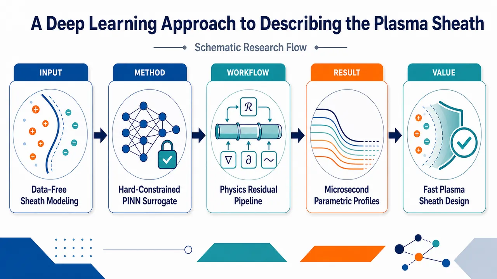
研究问题如何在缺乏实验数据和仿真数据的情况下，快速、稳定地描述一维等离子体鞘层在不同离子质量、温度比、碰撞性、源项强度、电子温度和中性气体密度下的电势、密度、速度与鞘层宽度剖面；同时避免传统 ODE 求解在中心速度零点和有限离子温度条件下出现的奇异性。创新方法将物理信息神经网络 PINN 设计成等离子体鞘层的参数化 surrogate model：不喂入任何实验或仿真标签数据，而是用 Poisson 方程、连续性方程、动量方程残差作为训练信号；通过 x² 输入变换硬编码电势和密度偶对称，通过 x/L 输出变换硬编码速度奇对称，通过 (L²−x²)/L² 输出变换强制壁面电势为零。Aha 点是：神经网络不是拟合数据，而是在整个参数空间中一次性学习满足物理方程和边界条件的鞘层解族，从局部积分器变成全局边值问题求解器，从而绕开 ODE 奇点。工作流程输入空间坐标 x 与物理参数组合，如 me/mi、Ti/Te、λDe/λin，或 Te、Ti/Te、S0、nn；神经网络输出电势 ϕ、离子密度 ni、电子速度 ue、壁面电子密度 nw 等鞘层变量；自动微分计算空间导数；将输出代入 Poisson、连续性、Boltzmann 电子关系、离子动量和电离源项方程，形成 ODE 残差损失；用硬约束自动满足中心对称性与壁面边界；先用 ADAM 粗训练，再用 SSBroyden 精调；训练完成后，对任意参数点以微秒级推理生成连续鞘层剖面和工程量，如电势降、hₗ 密度比、入口离子速度、鞘层宽度。关键结果常源项模型在 4 维输入空间中使用 200,000 个 Hammersley 采样点、4 层隐藏层、每层 32 个神经元，方程损失降至 5 × 10⁻¹³；PINN 预测与 RK45 在冷离子、无碰撞氢等离子体中高度一致，并在碰撞性扫描中精确复现电势降、密度比、入口速度和鞘层宽度趋势。模型自洽得到低碰撞极限 hₗ≈0.52，接近流体理论常用值；发现碰撞性升高会增加电势降、显著降低 hₗ、降低入口离子速度并缩窄鞘层；重离子会扩大电势降和鞘层宽度；有限离子温度会降低电势降、提高 hₗ 并拓宽鞘层。自洽电离模型进一步扩展到 5 维参数空间，使用 2,000,000 个 Sobol 点学习更复杂的氩等离子体源项模型。应用价值该方法可作为等离子体鞘层的快速物理约束替代求解器，用于聚变边界、电推进羽流、等离子体探针诊断和等离子体加工中的大规模参数扫描与工程设计；在数据稀缺条件下仍能生成物理一致的电势、密度和速度剖面；训练后可用微秒级推理替代重复 ODE/PDE 求解，快速评估 Bohm 判据、鞘层入口、壁面电势降、粒子通量和鞘层宽度，并为更真实的碰撞、电离、复合和化学反应鞘层模型提供可扩展建模框架。第一部分：核心概览
该研究将物理信息神经网络（PINN）用于一维等离子体鞘层流体模型的参数化求解，在无实验/仿真训练数据条件下，仅依靠ODE 残差、边界条件与对称性硬约束学习鞘层剖面。核心贡献在于把 PINN 从单点数值求解器扩展为覆盖质量比、温度比、碰撞性、源项强度、电子温度与中性气体密度等参数空间的快速 surrogate model，并验证其可复现 Runge–Kutta 解，同时绕开有限离子温度与中心速度零点导致的传统 ODE 奇异性。
---
第二部分：结构化快速回顾
《A Deep Learning Approach to Describing the Plasma Sheath》（None，）
背景
等离子体鞘层广泛存在于磁约束聚变、电推进、等离子体诊断和等离子体加工中，但其建模受限于碰撞、斜磁场、不稳定性等复杂物理。传统解析或 ODE/PDE 求解在某些鞘层模型中会遭遇奇异性、稳态收敛困难和参数扫描成本高等问题。
方法
采用物理信息神经网络（PINN），将鞘层流体方程写成残差形式并纳入损失函数；边界条件与奇偶对称性通过输入/输出变换硬编码。训练不依赖实验或仿真数据，使用 ADAM 初训、SSBroyden 精调，并构建多个物理复杂度递增的流体模型。
结果
在常源项模型中，PINN 在 4 维输入空间上训练，使用 200,000 个 Hammersley 采样点、4 层隐藏层、每层 32 个神经元，方程损失达到 5 × 10⁻¹³。PINN 解与 RK45 在冷离子、无碰撞氢等离子体中高度一致，并能快速扫描碰撞性、质量比和温度比对鞘层电势降、密度比、入口离子速度和鞘层宽度的影响。
讨论
PINN 的优势不在离线训练速度，而在训练完成后的微秒级推理和参数化解表示。硬约束对称性与壁面边界条件减少损失项、提高优化稳定性，并帮助避免传统 ODE 解法在中心点或有限离子温度下的奇异性。
局限
当前模型基于一维流体近似，部分电子动力学以 Boltzmann 关系处理；常源项模型简化了源项结构，自洽电离模型仍假设恒温并忽略辐射复合与三体复合。提供文本中自洽电离模型结果部分未完整呈现。
结论
PINN 可作为等离子体鞘层的高效物理约束 surrogate，适合在大参数空间内研究 Bohm 判据、鞘层宽度、电势降和密度比等关键量，并为更复杂鞘层模型提供数据稀缺条件下的数值建模路径。
---
第三部分：逐章节冷凝解析
Abstract
PINN provides a data-free route to sheath modeling
等离子体鞘层虽然普遍存在，但其丰富物理阻碍了通用描述的发展；研究采用 PINN 评估不同物理保真度的鞘层模型层级。核心表述为 *"Despite their ubiquity, the rich physics present in a plasma sheath has inhibited the development of a generally applicable description of this critical region."* 该问题被定位为经典但仍未完全解决的鞘层描述问题。
Governing PDEs replace training data
区别于传统深度学习，PINN 通过控制方程约束网络预测，不需要实验或仿真数据训练；原文明确给出 *"PINNs use the governing PDEs to constrain the predictions of a neural network, and thus do not require any experimental or simulation data to train."* 训练目标不是拟合数据，而是最小化物理残差。
Parametric surrogate is the main computational payoff
PINN 离线训练通常比传统求解器更慢，但训练后可在宽参数范围内高效预测鞘层剖面，形成 surrogate；证据为 *"once trained, the PINN is able to efficiently predict the sheath profiles across a broad range of parameter regimes, thus yielding an effective surrogate of the plasma sheath."*
---
I Introduction
Sheath physics controls multiple plasma applications
plasma-sheath transition 对磁聚变、电推进、诊断和加工均具有关键影响，应用范围由 *"magnetic fusion"*, *"electric propulsion"*, *"plasma diagnostics"*, and *"plasma processing"* 覆盖。鞘层不是边缘细节，而是决定壁面通量、能量沉积和探针解释的核心区域。
Bohm criterion is sensitive to multiple physical effects
Bohm criterion 等基本量会受到碰撞、斜入射磁场和不稳定性影响；原文列举 *"collisions"*, *"an oblique-angle magnetic field"*, and *"plasma instabilities"*。这意味着单一理想无碰撞 Bohm 条件难以覆盖实际鞘层。
Physics-constrained machine learning is framed as a new path
研究目标是展示物理约束机器学习处理经典鞘层问题的潜力，核心句为 *"provide a novel path through which this classic problem can be treated."* 方法不是替代物理，而是将物理方程嵌入神经网络训练。
A hierarchy of fluid sheath models tests increasing physics fidelity
采用不同物理保真度的流体模型层级，并证明 PINN 可在广泛等离子体条件下求解鞘层剖面；原文为 *"considering a hierarchy of fluid models of the plasma sheath"* 和 *"provide an accurate solution of the sheath profile across a broad range of plasma conditions."*
PINNs are distinguished from common ML in low-temperature plasma
多数低温等离子体 ML 技术偏数据驱动，而 PINN 将物理约束嵌入训练；关键对比为 *"unlike the majority of machine learning (ML) techniques that have, to date, been applied to low-temperature plasmas"*，PINN *"embed physical constraints into the training of a neural network."*
Physical constraints serve three roles
物理约束具有三种功能：稀疏数据下正则化、完全物理给定时作为 ODE/PDE 求解器、物理不完整但数据充分时用于反问题/物理发现。原文分别强调 *"regularize predictions"*, *"fully constrain the system even in the absence of data"*, and *"solve an inverse problem"*。
This study chooses the no-data ODE-solving limit
研究明确处于无合成/实验数据极限，发展 PINN 求解一维鞘层 ODE 系统；直接证据为 *"we will assume the limit of no synthetic or experimental data, and develop a series of PINNs that solve the system of ODEs characterizing a one-dimensional sheath."*
PINN optimization minimizes ODE residuals and boundary-condition losses
PINN 被表述为优化问题，通过最小化 ODE 残差和边界条件损失得到鞘层剖面；原文为 *"PINNs solve an optimization problem"*，目标是 *"minimize the loss associated with the residuals of a system of ODEs together with boundary conditions."*
Surrogate value comes from learning parametric solutions
PINN 的区分性特征是可学习参数化解；原文为 *"a single PINN is able to learn the parametric solution to the ODE or PDE system of interest."* 推理时间通常为微秒量级，*"online inference time of a PINN is typically on the order of microseconds per prediction."*
Target sheath quantities include Bohm criterion, width, and potential drop
训练出的三个 surrogate 用于研究 Bohm criterion、sheath width、potential drop 对 ion-neutral mean-free-path、ion-electron temperature ratio、ion mass 的依赖；原文列为 *"fundamental quantities such as the Bohm criterion, sheath width, and potential drop"*。
---
II Physics-Constrained Machine Learning
Data scarcity motivates physics-constrained learning
常规数据驱动 NN 需要足够数据才能良好收敛，但鞘层数据难以获得；原文指出 *"When data is scarce or expensive to obtain, a data-driven approach becomes prohibitive."* 因此选择 physics-constrained approaches 以克服 *"relative scarcity of data."*
PINN loss combines data and ODE residual terms
PINN 损失函数被写为
Loss = LData + LODE，其中
LData = 1/NData Σ[ϕ(xi; ai) − ϕi]²，
LODE = wODE/NODE Σ R²(xi; ai)。
原文解释 *"the residuals, which is simply an ODE or PDE rearranged to equal zero"* 被纳入损失函数。变量包括 ϕ 场、空间坐标 xᵢ、物理参数 a、残差 R 和权重 wODE。
Boundary and initial conditions can be hard constrained
除软约束损失外，PINN 框架允许通过额外层精确施加边界/初始条件；原文为 *"boundary and initial conditions can be exactly enforced as hard constraints."* 好处有两点：*“it removes terms from the loss function”*，并且 *“the boundary and initial conditions are precisely satisfied.”*
Potential wall boundary and even parity are enforced by transforms
对于壁面 x = ±L，电势通过输出变换
ϕ = [(L − x)(L + x)/L²]ϕNN = [(L² − x²)/L²]ϕNN
强制为零。偶对称通过输入变换 ϕNN = ϕNN(x²) 实现，从而自动满足 ϕ(−x)=ϕ(x)。原文说明 *"the electrostatic potential ϕ can be forced to vanish at walls located at x = ±L"*。
Odd variables use an odd output transform
对速度等奇对称变量，采用
u = uNN(x²) x/L，同时在 x=0 强制 Dirichlet 条件并保留奇对称；原文为 *"the output transform for velocity has a form like: u = uNN(x²)x/L"*，并说明其 *"preserves the expected odd symmetry of the flow."*
Symmetry allows solving only half the domain
通过硬编码奇偶性，即使显式求解 x ∈ (0, L)，也能得到全域鞘层解；证据为 *"capture the sheath solution across the entire domain even when only explicitly solving one side."*
PINNs are continuous and differentiable surrogates
神经网络不需要空间离散，因为连续激活函数下 NN 本身连续可微；原文为 *"no spatial discretization is required"*。PDE/ODE 导数通过 automatic differentiation 计算，且预测可在训练域内任意点进行，*“predictions can be made at an arbitrary point within the trained domain.”*
Optimizer choice is crucial
训练采用 ADAM 初始优化与 SSBroyden 精调。原文说明二阶方法如 SSBroyden 相比 ADAM 有显著改进，*“offer significant improvement over first order optimizers such as ADAM”*，且 SSBroyden 在第二阶段通常使损失 *“dropping by orders of magnitude.”*
---
III Fluid Models
Three sheath models increase physical complexity
该部分定义三个物理保真度递增的多流体鞘层模型，用于展示 PINN 灵活性；原文为 *"The three models of the sheath considered incorporate an increasingly complex set of physics and are meant to demonstrate the flexibility of PINNs for treating the plasma sheath."*
All models use one-dimensional absorbing-wall geometry
所有模型采用 1D geometry，等离子体由 x = ±L 处吸收壁限制；原文为 *"we will consider 1D geometry, with a plasma bounded by absorbing walls at x ± L."*
Steady state is maintained by volumetric particle sources
每个流体系统通过体积粒子源平衡壁损失，从而获得稳态；原文为 *"particle balance will be achieved by the introduction of a volumetric particle source which balances losses to the absorbing boundaries."*
---
III.1 Constant Source
III.1.1 Model
Minimal sheath model uses constant uniform ion-electron source
最简一致模型在整个等离子体体积内加入常数均匀源 S₀，同时产生离子和电子以平衡壁面损失；原文为 *"introducing a constant uniform source of ions and electrons throughout the plasma volume to balance losses to the surrounding walls."*
Ion and electron temperatures are fixed
离子和电子温度保持常数，假设热导足够强以形成近似恒温剖面；原文为 *"The temperature is held constant for ions and electrons"*，其依据是 *"the heat conductivity is sufficient to force a nearly constant temperature profile."*
Plasma consists of ions, electrons, and stationary neutral background
模型包含离子、电子与静止恒定中性背景；离子-中性碰撞通过拖曳项处理，强度由 ion-neutral mean-free-path λin 控制。原文为 *"composed of ions and electrons together with a stationary and constant neutral background"*，并引入 *"ion-neutral drag whose strength is set by the ion-neutral mean-free-path λin."*
Governing equations include Poisson, continuity, electron momentum, and ion momentum
方程组包括：
Poisson 方程：ε₀ ∂²ϕ/∂x² = −e(ni − ne)；
离子连续性：∂(niui)/∂x = S₀；
电子连续性：∂(neue)/∂x = S₀；
无电子惯性动量方程：Te ∂ne/∂x = e ne ∂ϕ/∂x；
离子动量方程：含电场力、压强梯度、源项动量损失与碰撞拖曳。原文说明 *"we took the ions to be singly ionized"* 且 *"neglected electron inertia in the electron momentum equation."*
Continuity equations integrate to flux proportional to position
连续性方程可解析积分为 ns us = x S₀；原文为 *"the continuity equations can be analytically integrated, yielding nsus = xS0."* 归一化后离子速度为 ui = x/(L ni)。
Electron momentum gives Boltzmann electrons
电子动量方程积分得到 ne = nw exp(eϕ/Te)；原文为 *"the electron momentum equation can be integrated, giving Boltzmann electrons."* 壁面电子密度 nw 由单边 Maxwellian 通量确定。
Wall electron flux fixes normalized wall density
壁面电子一维粒子通量为 Γw = 1/4 nw ce，其中 ce = [8Te/(πme)]¹ᐟ²。由 Γw = S₀Lx 得
nw = S₀Lx√(2πme/Te)。归一化后 Γw = 1，nw = √(2πme/mi)。原文引用 *"taking the electron velocity distribution at the wall to be a one-sided Maxwellian."*
Normalization uses Debye length, sound speed, and source-defined density
归一化为
x → x/λDe, ϕ → eϕ/Te, us → us/Cs, ns → ns/n0，其中
λDe = √[ε₀Te/(n0e²)]，n0 = S₀Lx/Cs，Cs = √(Te/mi)。原文定义 *"λDe is the Debye length"* and *"Cs is the sound speed."*
Residual equations reduce to two dependent outputs
归一化残差为：
0 = nw eϕ − ni − ∂²ϕ/∂x²；
0 = −ni ∂ϕ/∂x − (Ti/Te)∂ni/∂x − ui/L − niui(λDe/λin) − niui∂ui/∂x。
模型输出为 ϕ 和 ni，速度由 ui = x/(Lni) 给定。原文明确 *"ϕ and ni are the dependent variables, or outputs of the model."*
Collisionality is encoded as λDe/λin
离子-中性拖曳项归一化为 ni ui(λDe/λin)，其中 λDe/λin 表征碰撞性；原文为 *"The ratio, λDe/λin, indicates the collisionality of the plasma."*
Symmetry halves the computational domain
利用 x = 0 对称性，仅求解 x = 0 到 x = L 的正半域。边界条件为 ui = ue = 0 和 ∂ni/∂x = ∂ne/∂x = ∂ϕ/∂x = 0 at x=0；同时通过输出变换在 x = ±L 强制 ϕ = 0。原文为 *"Applying symmetry about x = 0 to the domain allows us to only solve for one side of the domain."*
Traditional ODE solvers face finite-ion-temperature singularity
传统 ODE 积分在有限离子温度下存在奇异性，解在 (ui/Cs)² = Ti/Te 附近不连续；原文为 *"a singularity exists for a finite ion temperature, where the solution is discontinuous about (ui/Cs)² = Ti/Te."*
PINN avoids singularities through parity and far-wall constraints
传统方法需时间依赖稳态收敛、Taylor 展开或避开中心点；PINN 通过密度和电势偶对称、远壁边界条件强制非平凡解，并规避有限离子温度奇异性。原文为 *"The PINN deals with these singularities by enforcing even parity on density and potential"*，且 *"Specifying boundary conditions at the far wall forces a non-trivial solution and negates the finite ion temperature singularity."*
---
III.1.2 Results
The constant-source PINN learns a four-dimensional domain
自由参数为 me/mi、Ti/Te、λDe/λin，加上空间坐标形成 4 维域。训练范围包括：质量比从氢到氩、温度比 0 到 1、碰撞性 0 到 0.3；系统半长固定为 Lx = 50 λDe。原文为 *"With the addition of space, this becomes a 4 dimensional domain."*
Training architecture is small but highly sampled
网络为全连接前馈 NN，使用 200,000 training points，Hammersley distribution，4 inputs，4 hidden layers，每层 32 neurons，2 outputs，并含输入/输出变换。实现采用 DeepXDE 与 PyTorch backend。原文为 *"four hidden layers, each with 32 neurons, and two outputs."*
Optimization reaches extremely low residual loss
训练使用 ADAM 前 5000 iterations，之后用 SSBroyden。各方程损失达到 5 × 10⁻¹³；原文为 *"the loss for each equation reaches 5 × 10−13, suggesting that the system is satisfied precisely."*
Independent test points verify off-training accuracy
除训练点外，独立测试点用于验证训练点外准确性；原文为 *"an independent set of test points ... are used to verify accuracy away from training points."*
RK45 validation confirms PINN accuracy
独立实现 Runge–Kutta solver 直接求解 Eq. (7)，并与 PINN 对比；原文为 *"the sheath solution found from a Runge-Kutta solver ... is in excellent agreement with the prediction of the PINN."* 在 x=0 附近密度存在小差异，原因是 RK 求解器受中心奇异性影响，*“struggling with the singularity located at x = 0.”*
Sheath entrance is defined by fractional charge separation, not ion speed
为避免用 Bohm 速度本身定义入口，采用 ρ = (ni − ne)/ne 作为 sheath entrance 标准。选择冷离子、无碰撞氢等离子体中 ui = Cs 时的值，得到 ρ = 0.0685。原文为 *"we choose the value when the ion flow equals the sound speed for a cold, collisionless hydrogen plasma. We find a value of ρ = 0.0685."*
PINN and RK45 agree across collisionality scans
Figure 4 含 200 PINN predictions 与 50 RK45 predictions，扫描碰撞性对电势降、中心到入口密度比、入口离子速度和鞘层宽度的影响。原文为 *"These figures represent 200 predictions from the PINN and 50 from the RK45 method."* 两者 *"agree precisely across the range of collisionalities."*
Collisions increase sheath potential drop
碰撞性增强时，鞘层电势降增加，因为碰撞拖曳抵抗电势力；原文为 *"As the plasma becomes more collisional, the potential drop increases. Collisions act as a drag opposing the potential force."*
Finite ion temperature reduces required potential force
较高离子温度增加中心压力，降低抵抗拖曳所需电势力；原文为 *"higher ion temperature increases the pressure at the center, which reduces the potential force necessary to oppose the drag force."*
Ion species significantly affects potential drop through inertia
离子种类对电势降影响大，重离子惯性更强，抵抗电势力和压力力；原文为 *"the heavier species’ inertia resists the potential and pressure forces."*
The hₗ factor is solved self-consistently
密度比 hl = nedge/ncenter 不被预设，而由 PINN 自洽求解。低碰撞极限常取 0.5，PIC 数据约 0.55；该流体 PINN 得 0.52。原文为 *"We find a value of 0.52, which agrees well with other fluid models, but not as well as a kinetic model."*
Collisionality reduces hₗ strongly, ion temperature increases it modestly
Figure 4(b) 显示碰撞性显著降低 hl，有限离子温度使其略增，离子种类影响很小；原文为 *"increasing collisionality dramatically reduces the density ratio, while increasing ion temperature produces a modest increase."*
Sheath entrance ion speed decreases with collisionality
入口离子速度随离子温度增加而增加，但随碰撞性增加而降低；原文为 *"At larger ion temperatures, the ion speed at the sheath entrance increases. As the plasma becomes more collisional, the ion speed decreases."*
Sheath width depends strongly on ion species
重离子需要更大电势，导致鞘层变宽；原文为 *"the ion species plays a significant role in determining the width of the sheath. Heavier species require a larger potential, which causes the sheath to widen."*
Finite ion temperature widens the sheath
有限离子温度使电荷分离位置离壁更远，因为高能离子靠近壁面时保持更高密度；原文为 *"Finite ion temperature further increases the sheath width as the fractional separation of ions and electrons occurs further from the wall."*
Collisionality narrows the sheath
碰撞性增加时鞘层宽度降低，原因是碰撞抑制离子向壁传播；原文为 *"the sheath width decreases with increasing collisionality, which is a consequence of the collisions inhibiting the ions from traveling to the wall."*
Finite-temperature scans expose PINN advantage over RK45
由于数值 ODE 方法在有限离子温度下奇异，Figure 5 仅用 Ti = 0 的 RK45 “x” 点作参考，而 PINN 连续给出 Ti/Te 变化趋势。原文为 *"Because the numerical approach is singular for finite ion temperature, Figure 5 demonstrates how the ion temperature affects the integrated quantities according to the PINN."*
Increasing ion temperature lowers potential drop and center density
离子温度增加时，离子压力将离子推向壁面，所需电势力减弱，电势降降低；同时中心密度降低，入口/中心密度比增加。原文为 *"the potential drop decreases as the energetic ions have a larger pressure force pushing them towards the wall"*，以及 *"Increasing ion temperature reduces the center density."*
---
III.2 Self-Consistent Ionization Source
III.2.1 Model
Self-consistent ionization increases sheath model fidelity
更完整模型加入自洽碰撞电离与复合源项；原文为 *"A more complete description of the plasma-sheath transition region can be achieved by including self-consistent collisional ionization and recombination sources."*
Radiative and three-body recombination are considered but neglected
考虑两种复合：radiative recombination 与 three-body recombination。在 1 eV 到 20 eV 温度范围内，电离和复合相对于常源项通常可忽略；高温时碰撞电离可与常源项相当，而两类复合仍可忽略。因此保留电离、忽略复合。原文为 *"we will neglect both kinds of recombination, though we will include collisional ionization."*
Ionization source prevents analytical integration of continuity equations
源项显式依赖等离子体密度与电子温度，使连续性方程无法像常源项模型那样解析积分；原文为 *"We will no longer be able to analytically integrate the continuity equations"*，并称其为 *"a substantially more complex set of equations."*
Model geometry and species are fixed to argon plasma
模型仍采用对称区域 x=0 到 Lx=50λDe，包含氩中性背景、电子与单电离氩离子，均按流体处理；原文为 *"a symmetric plasma that contains a neutral background of argon and two charged species: electrons and singly ionized argon."*
Temperatures remain constant but are model inputs
电子和离子温度恒定，但其数值作为输入参数，在宽温度范围内学习解；原文为 *"These species are considered at constant temperature, though the magnitude of the electron and ion temperatures are inputs into the model."*
Governing equations include ionization in continuity and ion momentum
方程为 Poisson、离子连续性、电子连续性与离子动量；源项变为 S₀ + Sion。动量方程中源项动量损失为 −mi ui(S₀ + Sion)。原文写明 *"∂/∂x(niui)=S0+Sion"* 和 *"−miui(S0+Sion)."*
Ionization source uses NRL formulary fit
电离源为 Sion = nn ne Sionize，其中
Sionize = 10⁻¹¹ [(Te/Ez)¹ᐟ²]/[(Ez)³ᐟ²(6.0 + Te/Ez)] exp(−Ez/Te) [m³/sec]。该形式来自 NRL Formulary，原文为 *"represents fits to cross section data and is taken from the NRL Formulary."*
Boltzmann electrons and ambipolarity reduce equation count
电子动量仍积分为 Boltzmann 电子；并用 ambipolarity condition niui = neue 消去一个连续性方程，使 ui = neue/ni。原文为 *"the electron momentum equation can still be integrated to give Boltzmann electrons"*，以及 *"make use of the ambipolarity condition niui = neue."*
Normalized residual system has three main equations
归一化残差为：
0 = (ne − ni) − ∂²ϕ/∂x²；
0 = 1/L + nn ne S̄ionize S̄0 − ∂(neue)/∂x；
0 = −ni∂ϕ/∂x − ui(1/L + nn ne S̄ionize S̄0) − nnniuiσin − niui∂ui/∂x − (Ti/Te)∂ni/∂x。
原文指出电子密度仍由 Boltzmann 关系定义，*"with the electron density taken to be Boltzmann."*
Ion-neutral cross section is energy-dependent and taken from LXCat
氩离子-氩中性碰撞截面假定各向同性，在声速能量处评估，能量为 E = 0.5 Te(1 + Ti/Te)，适用到 10 keV；原文为 *"The singly ionized Argon to neutral Argon collisional cross-section is taken to be isotropic"*，并说明拟合来自 *"the Phelps database provided by LXCat."*
Collisionality is no longer an independent scan parameter
与常源项模型不同，离子-中性碰撞性不再直接扫描；控制量变为中性密度和电子温度。原文为 *"the ion neutral collisionality is no longer a parameter that is scanned over: the inputs controlling the collisionality are the neutral density and the electron temperature."*
Wall electron density becomes trainable
由于连续性方程无法解析积分，壁面电子密度 nw 未知，被作为可训练变量加入输出，与 ϕ、ni、ue 一起求解；原文为 *"We allow the network to solve for nw as a trainable variable, thus adding nw to the other outputs."*
Ionization importance scales with system size and source strength
大系统中归一化常源项 1/L 变小，电离相对更重要；常源强度 S₀ 增加时，因电离随密度平方增长，电离也更重要。原文为 *"For larger systems, the constant source term ... decreases in magnitude relative to collisional ionization"*，以及 *"ionization scales with the square of density."*
The model introduces four physical free parameters
自由参数包括 electron temperature、Ti/Te、constant source strength S̄0 / S₀、neutral density nn。原文为 *"We will scan over a range of electron temperatures, as well as ion to electron temperature ratios"*，并说明 *"the last free parameter is the neutral density."*
Boundary conditions preserve symmetry and wall floating
中心边界仍为 ui = ue = 0，且 ∂ni/∂x = ∂ne/∂x = ∂ϕ/∂x = 0 at x=0；两壁强制 ϕ = 0，中心电势可浮动。原文为 *"we enforce ϕ = 0 at both walls, allowing the potential to float in the center of the domain."*
Wall electron velocity is fixed by Maxwellian flux condition
归一化壁面电子速度为
ue,wall = √[mi Te / (2π me(Te + Ti))] at x=L，在 x=−L 取负以保持奇对称。原文为 *"we require that the electron velocity at the walls to be ... ue,wall"*，并说明反向壁面为 *"−ue,wall to preserve proper parity."*
---
III.2.2 Results
The self-consistent ionization model is five-dimensional
该模型包含 1 个空间维度与 4 个物理参数，即 Te、Ti/Te、S₀、nn；原文为 *"The model is five dimensional with one spatial dimension and four physical parameters."*
Parameter ranges cover low-temperature argon sheath regimes
电子温度 Te 在 1 eV 到 20 eV 之间变化；Ti/Te 在 0 到 1 之间变化；常源项 S₀ 在 10²⁸ 到 10²⁹ m⁻³ s⁻¹ 之间变化；中性密度在 0 到 5 之间变化。原文为 *"The electron temperature is varied between 1 eV and 20 eV"*，以及 *"S0 is varied between 10²⁸ and 10²⁹ m−3 s−1."*
Dimensional source rate is used as input for convenience
由于所选归一化随输入源项变化，直接使用有量纲源率作为输入更方便；原文为 *"We find it convenient to use the dimensional source rate as an input since the normalizations we chose are allowed to vary with the input source."*
SSBroyden is robust for this more complex model
该模型训练中 SSBroyden 提供稳健优化；原文为 *"we found that SSBroyden provided a robust optimization algorithm for training."*
Network and sampling scale are substantially larger
网络含 5 hidden layers，每层 32 neurons，使用 two million training points，采样为 Sobol distribution。原文为 *"The network consisted of 5 hidden layers, each with 32 neurons and two million training points distributed according to a Sobol distribution."*
---
第四部分：深度理解与语言支持
1. 术语解析
#### Physics-informed neural network / physics-constrained machine learning
PINN 不是普通监督学习模型，而是把控制方程残差放进损失函数，要求网络输出满足物理方程。文中表达 *"embed physical constraints into the training of a neural network"* 强调“物理约束内嵌训练过程”，不是事后筛选结果。
#### Residual
Residual 指将 ODE/PDE 移项为零后，网络预测代入方程所得的非零误差。例如 0 = nw eϕ − ni − ∂²ϕ/∂x² 中右侧若不为零，就是 Poisson 方程残差。文中定义为 *"an ODE or PDE rearranged to equal zero."*
#### Hard constraints vs soft constraints
Soft constraints 是通过损失函数惩罚违反边界条件或方程；hard constraints 是通过网络结构或变换使条件自动满足。文中 ϕ = [(L²−x²)/L²]ϕNN 就是硬约束，因为无论 ϕNN 输出为何，x=±L 时 ϕ=0 恒成立。
#### Parametric solution
Parametric solution 指网络不是只求一个固定参数下的剖面，而是学习 x 与物理参数共同输入到鞘层解的映射。例如常源项模型输入包括 x、me/mi、Ti/Te、λDe/λin，训练后可快速预测任意训练范围内参数组合的鞘层剖面。
#### Surrogate model
Surrogate 是高成本物理求解器的快速替代模型。这里 PINN 离线训练较慢，但在线推理为微秒级，可替代重复 ODE/PDE 求解用于参数扫描、优化或多尺度耦合。
---
2. 疑难查证
#### 为什么传统 ODE 在有限离子温度下会奇异，而 PINN 可以绕开？
常源项模型中，连续性给出 ui = x/(Lni)。离子动量方程中速度、密度、电势梯度耦合；若将方程改写为一阶 ODE 显式推进，某些分母会在 (ui/Cs)² = Ti/Te 附近趋零，导致导数发散或解分支不连续。这不是简单数值误差，而是 ODE 重排形式中的结构性奇点。
PINN 不沿空间方向逐点积分，因此不必从中心点跨越奇点推进。它在整个域上同时优化连续函数，使残差整体最小，并通过 偶对称密度/电势、奇对称速度和壁面边界条件排除平凡解。因此 PINN 更像“全局边值问题求解器”，不是“初值积分器”。
#### 为什么用 ρ = (ni − ne)/ne 定义 sheath entrance 更适合这里？
若用 ui = Cs 定义鞘层入口，就无法独立研究“入口处离子速度如何随碰撞性、温度比、质量变化”。因为定义已经把速度固定了。采用电荷分离比例 ρ 作为入口标准，可以让 ui 成为待测结果。文中选择冷离子、无碰撞氢等离子体中 ui=Cs 对应的 ρ=0.0685，相当于把经典 Bohm 情况校准为参考，再观察其他物理条件偏离该参考时的入口速度。
#### 为什么常源项强度增加会让自洽电离更重要？
直觉上常源项越强，电离似乎越不重要；但文中指出相反趋势，因为电离源 Sion = nn ne Sionize，电子密度 ne 随总体粒子源增强而上升。若中性比例固定，电离贡献随密度非线性增加，近似表现为密度平方效应。因此常源项增强不仅增加直接粒子生成，也提高了电离反应的底物密度。
---
第五部分：创新评估与关联
1. 创新性判断
#### 从单参数数值求解转向高维参数化鞘层 surrogate
过去 2–5 年内，PINN 在等离子体与流体问题中已被用于 PDE 求解、反问题和物理发现，但针对等离子体鞘层的工作多依赖传统 ODE/PDE 求解、PIC/流体仿真或经验闭合。该研究的新颖性在于直接学习鞘层流体方程的参数化解族，而不是为每组参数单独求解。常源项模型一次覆盖 me/mi、Ti/Te、λDe/λin、x，自洽电离模型覆盖 Te、Ti/Te、S₀、nn、x。
#### 无数据 PINN 用于经典鞘层边值问题
许多 ML 等离子体研究依赖仿真数据或实验数据训练 surrogate；该研究明确处于 no synthetic or experimental data 极限，仅用方程残差和边界条件训练。创新点不在“用神经网络拟合鞘层数据”，而在“用神经网络作为物理约束边值问题求解器”。
#### 硬编码奇偶性和壁面条件解决鞘层 ODE 奇异难题
传统 ODE 方法在中心速度为零和有限离子温度处会出现奇异或平凡解问题。该研究通过输入变换 x²、输出变换 (L²−x²)/L² 和 x/L 将偶/奇对称性与壁面条件硬编码，使 PINN 避免从奇点局部积分。这是针对鞘层几何和物理结构的定制化 PINN 设计。
#### 把 hₗ、sheath width、potential drop 等工程量自洽输出
低温等离子体建模中 hₗ factor 常被取经验值，如低碰撞极限约 0.5；该研究让 PINN 在整个参数空间中自洽求得 hₗ，并得到低碰撞流体值 0.52。这使 surrogate 不只是剖面求解器，也能快速生成全局闭合量。
#### 从常源项扩展到自洽电离源，展示物理复杂度可扩展性
常源项模型中连续性可解析积分；自洽电离模型中源项依赖 nn、ne、Te，连续性无法解析积分，且 nw 需作为 trainable variable 求解。PINN 仍可处理该更复杂系统，说明方法可向更真实的鞘层化学、碰撞和源项模型扩展。
#### 解决的前人问题
- 避免为每组参数重复运行 ODE/PDE 求解器的高成本参数扫描。
- 绕开有限离子温度鞘层 ODE 积分奇异性。
- 在缺乏实验或 PIC 数据条件下仍可构建物理一致 surrogate。
- 将边界条件、几何对称性和控制方程统一进同一神经网络求解框架。
- 为 Bohm 判据、鞘层宽度、电势降和密度比的系统参数依赖提供快速评估工具。
-
05
📊 含图深析
📄 摘要：报道机器学习引导的超薄二维 Fe3O4 生长，目标产物为单磁畴薄层。论文发表于 Advanced Functional Materials，主题连接二维氧化物外延/制备优化与磁畴控制，重点在于用机器学习辅助寻找能产生单磁畴 Fe3O4 的生长条件。
💡 亮点：机器学习被用于优化超薄二维 Fe3O4 的生长窗口，并瞄准单磁畴磁性状态。对自旋电子学薄膜制备，核心在于把磁畴质量纳入数据驱动生长控制。
📖 展开分析 + 配图
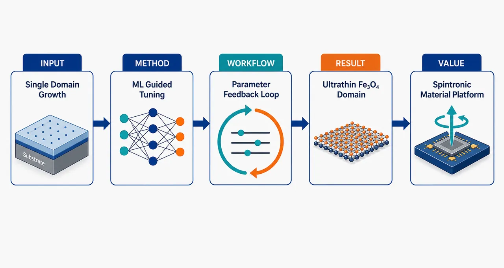
研究问题如何摆脱传统经验式反复试错，在众多薄膜生长参数中快速找到最优条件，生长出超薄二维 Fe₃O₄，并将其磁畴结构调控到“单磁畴”状态。创新方法把机器学习引入超薄二维 Fe₃O₄ 磁性薄膜生长过程，以“单磁畴”为明确优化目标，让算法根据生长条件与薄膜磁畴结果之间的关系，指导下一轮实验参数选择，而不是依赖人工经验调参。工作流程输入候选生长参数与已有实验表征数据；机器学习模型学习参数—结构—磁畴之间的关联；算法推荐更优生长条件；实验制备超薄二维 Fe₃O₄ 薄膜；通过磁性/结构表征确认磁畴状态；反馈结果继续优化，最终获得单磁畴薄膜。关键结果研究实现或指向实现了具有单磁畴特征的超薄二维 Fe₃O₄ 薄膜生长，证明机器学习可用于指导磁性氧化物二维薄膜的生长条件优化；具体厚度、磁畴尺寸、性能提升幅度与模型细节在所给内容中未披露。应用价值为二维磁性氧化物、磁存储器件和自旋电子学材料提供一种数据驱动的生长优化路径，可减少试错成本，并帮助制备磁畴更可控、结构更均一的超薄磁性薄膜。核心概览
该论文属于机器学习辅助材料生长与二维磁性薄膜方向，利用机器学习优化超薄二维 Fe₃O₄ 生长条件，以获得单磁畴薄膜。
方法要点
- 将机器学习引入超薄二维 Fe₃O₄ 薄膜的生长条件优化流程。
- 研究目标是调控薄膜生长以实现单磁畴特征。
- 具体机器学习模型、输入特征、优化策略、实验平台与表征方法摘要未详述。
关键结果
- 摘要明确指出，机器学习被用于指导超薄二维 Fe₃O₄ 的生长条件优化。
- 研究目标或结果指向获得具有单磁畴特征的超薄二维 Fe₃O₄ 薄膜。
- 是否已稳定实现单磁畴、薄膜厚度范围、磁畴尺寸、性能指标等具体结果摘要未详述。
创新性判断
- 可能的新颖点在于将机器学习用于二维 Fe₃O₄ 超薄磁性薄膜的生长优化，而非完全依赖传统试错式实验；但具体相对已有工作的提升幅度摘要未详述。
- 若论文确实实现了超薄二维 Fe₃O₄ 的单磁畴可控制备，则其创新性可能体现在“机器学习指导生长—磁畴结构调控”的结合；但摘要未提供足够信息判断其是否为首次实现。
- 相比常规材料生长研究，该工作可能强调数据驱动优化在磁性氧化物二维薄膜制备中的应用价值；具体算法创新或实验创新摘要未详述。
-
06
📊 含图深析
📄 摘要：面向化学无序合金和高熵合金的相预测，提出信息论度量来量化已探索的势能景观，并结合图卷积神经网络进行晶体结构预测。方法针对组合空间爆炸问题，试图在高通量成分搜索中更有效覆盖候选构型与相稳定性区域。
💡 亮点：信息熵被用作无序合金势能景观探索程度的度量，并与 GCN 相预测结合。该框架把“搜索是否充分”量化，对高熵合金高通量筛选更可控。
📖 展开分析 + 配图
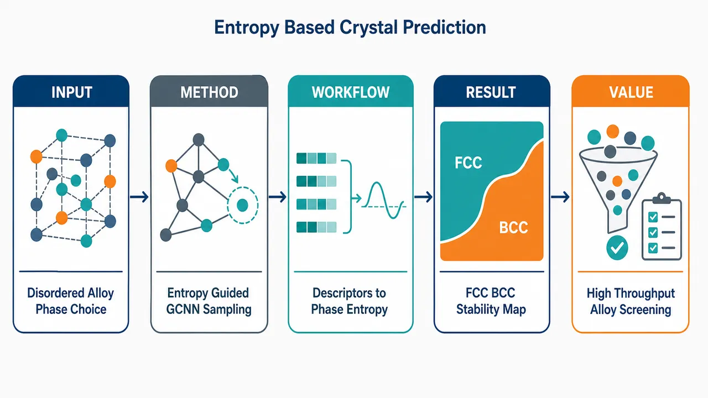
研究问题化学无序合金/高熵合金的元素占位组合爆炸，传统DFT或CALPHAD难以高通量判断BCC、FCC等候选晶体结构哪一个更稳定；核心问题是如何在巨大构型空间中快速采样低能微态，并用一个可比较的指标从“势能景观分布”预测合金相。创新方法提出“信息熵相预测”框架：用GAASP/Alchemical Monte Carlo在候选晶格中交换原子并采样低能构型，用GCNN快速预测每个构型势能，再把采样能量转成Boltzmann-like概率分布，计算Shannon entropy/KL divergence差异来判断相稳定性。Aha点是把相预测从“比较单个最低能量”转化为“比较候选晶体结构能量分布的信息对齐程度”；同时提出低成本BDV描述符，用第一配位壳键类型相对随机合金的富集/贫化表示化学短程有序，并用TF-IDF突出稀有但关键的局域配位模式。工作流程输入二元到五元无序合金及候选BCC/FCC晶体结构；为每个原子构建SOAP或BDV局域环境描述符；用TF-IDF对描述符加权，突出少见配位环境；将构型表示为原子节点、近邻边和节点能量标签的图；训练两层GraphConv GCNN预测节点/构型势能；在GAASP采样中执行10–30%原子的alchemical swaps，并用Metropolis准则接受低能或少量升能构型；GCNN替代昂贵能量计算，得到每个候选晶体结构的低能势能分布；将能量分布转换为概率，计算Shannon entropy，熵更高/信息损失更小的候选结构被判为更稳定相。关键结果SOAP在二元合金中能更准确捕捉局域几何与物种差异，BDV在二元体系中容易退化为预测原子种类平均能量；但从三元、四元到五元合金，BDV性能逐渐接近SOAP，显示低维键统计在复杂多组元势能景观中已能抓住主要化学信号。信息熵判据在300 K下预测CoNi、FeNi、CoCrNi、CrFeNi、CoCrFeNi为FCC更稳定，预测MoW、TaW为BCC更稳定；对Alₓ(CoCrFeNi)₁₋ₓ中x=0.05、0.1、0.2的相趋势也与已有文献一致。BDV训练更平滑、成本更低，SOAP精度更强但高维特征导致损失曲面更复杂、振荡更明显。应用价值该框架为高熵合金和化学无序合金提供低成本相筛选工具，可在不知道真实平衡结构、无法进行大规模DFT自由能采样的情况下，快速比较候选BCC/FCC等结构稳定性。BDV可作为复杂多组元合金高通量筛选中的轻量化、可解释描述符，SOAP适合二元或需要高几何精度的体系；整体方法可扩展到从头算数据库或机器学习势能数据库，用于新合金成分设计、相稳定性预筛选和复杂势能景观探索。第一部分：核心概览 (Overview)
提出一种面向化学无序合金/高熵合金相预测的信息论框架：以GAASP/Alchemical Monte Carlo在候选晶体结构中采样低能构型，以GCNN快速预测构型势能，再以采样势能景观上的Shannon entropy / KL divergence作为相稳定性判据。核心贡献在于把相预测转化为候选结构能量分布的信息对齐问题，并提出低成本Bond Disproportion Vector (BDV) 描述符，与SOAP基准比较。结果覆盖二元、三元、四元和五元合金，显示BDV在复杂多组元合金中可接近SOAP表现，而SOAP在二元体系中优势明显。该工作位于机器学习势能预测、无序合金构型采样与信息熵相稳定性评估的交叉前沿。
---
第二部分：结构化快速回顾
《Information Entropy Based Crystal Structure Prediction of Chemically Disordered Alloys via Graph Convolutional Neural Networks》（None，）
背景
化学无序合金，尤其是高熵合金，具有巨大的组分与构型空间，传统第一性原理和CALPHAD方法难以支撑高通量相预测。关键瓶颈是：既要高效探索复杂势能景观，又要定义一种可比较不同候选晶体结构采样质量与稳定性的指标。
方法
构建由原子环境描述符 + TF-IDF featurisation + GCNN能量回归 + GAASP采样 + Shannon entropy相判据组成的流程。描述符包括高表达力的SOAP和低维、物理可解释的BDV。GCNN使用两层GraphConv，隐藏维度为[16, 32]，AdamW优化器，学习率10⁻²，MSE损失，训练/验证/测试划分为60%/20%/20%。
结果
SOAP在二元合金中更准确，BDV容易预测到物种平均能量；但随着体系从三元到五元复杂化，BDV性能逐渐接近SOAP。信息熵指标在CoNi、FeNi、CoCrNi、CrFeNi、CoCrFeNi中预测FCC更稳定，在MoW、TaW中预测BCC更稳定；对Alₓ(CoCrFeNi)₁₋ₓ, x = 0.05, 0.1, 0.2的相趋势也与文献一致。
讨论
BDV虽然不含键长和键角信息，但在复杂合金中通过捕捉第一配位壳键统计偏离，可作为高通量筛选中的低成本替代描述符。SOAP表达能力更强，但高维特征导致优化损失曲面更复杂，训练过程中出现振荡。
局限
数据库为概念验证规模，仅包含20 atomic configurations (Ng = 20)，且能量标签来自EAM/MEAM经典势，并非DFT。KL与Shannon entropy判据不能在数学上严格保证等价于真实平衡相，只能作为高效近似指标。
结论
GCNN + alchemical Monte Carlo + information entropy可用于化学无序合金候选相筛选。描述符选择应与材料复杂度匹配：简单二元体系更适合SOAP，复杂多组元体系中BDV可提供成本更低且性能可比的方案。
---
第三部分：逐章节冷凝解析 (Section-by-Section Condensing)
Abstract
Computational bottleneck in chemically disordered alloy phase prediction
化学无序合金的相预测受到组合复杂度限制，高通量探索需要避免对全部构型逐一进行昂贵能量计算。摘要明确指出核心难题是 *"The phase prediction of chemically disordered alloys poses a significant computational challenge due to the combinatorial complexity of such materials."* 这说明问题本质不是单个构型求能，而是构型空间爆炸导致势能景观难以充分探索。
Information-theoretic phase prediction framework
提出以信息论方式处理相预测，将候选结构采样得到的势能分布与参考/平衡分布之间的差异转化为信息熵问题。关键表述为 *"We propose an information-theoretic approach to phase prediction in chemically disordered alloys in the present work."* 该贡献将相稳定性问题从传统自由能计算转向能量分布的信息熵比较。
GCNN-enabled alchemical Monte Carlo sampling
通过Graph Convolutional Neural Network快速预测构型势能，使alchemical Monte Carlo sampling能够在大构型空间中迭代筛选低能结构。摘要中给出直接证据：*"We demonstrate the applicability of alchemical Monte Carlo sampling using an efficient Graph Convolutional Neural Network-Based machine learning model."*
BDV descriptor benchmarked against SOAP
提出并测试低计算成本的Bond Disproportion Vector (BDV)，并与当前常用的Smooth Overlap of Atomic Positions (SOAP)比较。摘要指出 *"We additionally demonstrate the applicability and limitations of the Bond Disproportion Vector (BDV) as a low-computational-cost descriptor and benchmark it against the state-of-the-art Smooth Overlap of Atomic Positions (SOAP) descriptor."* 这说明BDV不是单独提出，而是在与SOAP基准对照中定位其适用边界。
Broad alloy coverage from binary to quinary systems
应用对象覆盖二元 CoNi、MoW、FeNi、TaW，三元 CoCrNi、CrFeNi，四元 CoCrFeNi，以及五元 Alₓ(CoCrFeNi)₁₋ₓ合金。摘要给出体系范围：*"binary (CoNi, MoW, FeNi and TaW), ternary (CoCrNi, CrFeNi), quaternary (CoCrFeNi) and quinary (Alx(CoCrFeNi)1−x) alloys."*
---
1 Introduction
High-entropy alloys create a vast design space but extreme configurational complexity
高熵合金和多组元复杂合金具有巨大的成分设计空间，但由于chemical disorder导致构型数量极大，传统第一性原理难以支撑高通量探索。引言开宗明义指出 *"High-entropy alloys (HEA) and other chemically complex, multicomponent alloys offer a vast compositional design space but pose a fundamental challenge for predicting crystal structures."* 关键矛盾是材料设计空间大，但可计算性不足。
First-principles and CALPHAD limitations motivate data-driven methods
传统first-principles methods计算成本过高，CALPHAD-based approaches对未知候选成分和结构适用性有限。相关原文为 *"conventional first-principles methods too costly for the high-throughput exploration"* 以及 *"The thermodynamic CALPHAD-based approaches have limited applicability for the unknown candidate compositions and structures."* 这为机器学习势能预测提供必要性。
Crystal structure selection controls structural and functional properties
相稳定性和晶体结构选择直接影响材料结构与功能性能，因此可靠预测工具是合金发现和优化的核心。引文为 *"phase stability and crystal structure selection are central to determining the structural and functional properties of these materials."*
Graph neural networks are suitable for disordered atomistic structures
GNN/GCNN能够将原子结构表示为图，原子为节点，近邻或键为边，从而处理非网格化原子数据。引言中明确说明 *"Graph convolutional neural networks (GCNN) treat atomistic structures as graphs, with atoms as nodes and bonds or near-neighbour relations as edges."* 这使其比传统CNN更适合原子结构。
Framework integrates sampling, GCNN energy prediction, BDV/SOAP descriptors, and information entropy
整体框架由alchemical Monte Carlo-style atomistic sampling、GCNN-based energy prediction、BDV/SOAP descriptor和Kullback-Leibler divergence-based information entropy metric组成。原文概括为 *"combines alchemical Monte Carlo-style atomistic sampling, GCNN-based energy prediction, and a new Bond Disproportion Vector (BDV) descriptor, benchmarked against the Smooth Overlap of Atomic Positions (SOAP) descriptor."*
BDV encodes deviation from random alloy bond statistics
BDV面向化学无序环境，表达第一配位壳中键类型相对于完全随机合金的偏离。关键句为 *"The BDV encodes deviations of first-shell bond statistics from a fully random alloy as a compact vector."* 其优势是低维、可解释、适合复杂无序合金高通量处理。
TF-IDF weighting emphasizes rare but important coordination motifs
引入自然语言处理中的TF-IDF，用于突出稀有但能量重要的局域配位模式。原文为 *"These descriptors are featurised using a Term Frequency-Inverse Document Frequency (TF-IDF) weighting scheme adopted from information retrieval to emphasise rare but energetically important coordination motifs."* 这是一项跨领域特征工程创新。
---
2 Method
Methodological architecture connects descriptors, featurisation, GCNN, sampling, and entropy
方法部分建立端到端流程：先构造atomic descriptors，再用TF-IDF特征化，随后训练GCNN预测节点级能量，最后用GAASP alchemical Monte Carlo采样候选晶体结构势能景观。该结构为后续信息熵相预测提供能量分布基础。
---
2.1 Descriptor for atomic environment
Atomic descriptors must capture chemically disordered local variations
化学无序合金中局域环境统计波动显著，因此描述符必须捕捉这种波动及其对势能的影响。原文指出 *"the local atomic configuration shows significant statistical variation; hence, the developed descriptor should account for this variation and its effect on the potential energy of an atom."*
SOAP represents local environments as smooth atomic density fields
SOAP把邻近原子表示为平滑密度场，核心公式为
[
h̊oᵢ₍ᵣ₎₌sumⱼ fcᵤₜ(rᵢⱼ)expłeft(frac-(r-rᵢⱼ)²2σ²i̊ght)
]
原文说明 *"The Smooth Overlap of Atomic Positions (SOAP) represents the atomic environment as a smooth density field."* 其中rij为原子i与邻居j距离，σ为高斯宽度，fcut在截断半径处趋零。
SOAP decomposes density into radial and angular basis functions
SOAP将密度展开为径向函数和球谐函数：
[
h̊o(r)approxsumₙ,ₗ,ₘcₙₗₘgₙ₍ᵣ₎Yₗₘ(hat r)
]
原文解释 *"The radial functions provide information about the variation of the atomic density with distance"*，而 *"The spherical harmonics describe the directionality of the density."* 因此SOAP同时编码配位壳距离信息与键角/局域几何信息。
SOAP power spectrum gives rotationally invariant local structural signatures
展开系数进一步转换为功率谱：
[
pₙₙ'ₗ=sumₘ₌₋ₗlcₙₗₘcₙₙ'ₗ*
]
论文强调该功率谱提供 *"radial (coordination shell) and angular (bond geometry) information, which is rotationally invariant."* 因而SOAP具有旋转不变性和较高表达能力。
BDV defines excess or deficiency of bond types relative to random alloy statistics
Bond Disproportion Vector基于第一配位壳键类型计数，衡量实际键数相对完全随机合金期望键数的偏离。定义为：
[
Dᵢⱼ=fracNᵢⱼ-NᵢⱼraⁿdNᵢⱼraⁿd
]
原文给出定义：*"We introduce bond disproportion as a quantitative measure of the excess or deficiency of a given bond type relative to its expected occurrence in a completely random alloy."*
Positive and negative BDV components have direct physical meaning
BDV中正值表示某类键富集，负值表示该类键贫化。原文为 *"A positive Dij indicates enrichment of the i–j bond relative to the random state, whereas a negative value indicates depletion."* 这使BDV相对SOAP具有更直接的化学短程有序解释。
BDV intentionally omits geometry to reduce computational cost
BDV只保留键计数统计，不包含键长和键角。原文明确限定：*"The BDV encodes only the statistical disproportion of bond counts and does not include geometrical information such as bond lengths or bond angles."* 因此其劣势是表达力不足，优势是低维低成本。
Descriptor dimensionality scaling favors BDV for multicomponent alloys
补充信息Figure 1显示，随合金元素数增加，SOAP向量尺寸增长显著快于BDV。原文指出 *"as the number of alloy elements increases, the SOAP descriptor vector size increases significantly more than in BDV."* 对高通量计算而言，单原子描述符维度是关键成本来源。
---
2.2 Featurisation of the atomic descriptors
TF-IDF is transferred from information retrieval to atomistic descriptors
TF-IDF原本用于衡量词在语料库中的重要性，此处被用于原子描述符特征化。原文为 *"Term Frequency-Inverse Document Frequency (TF-IDF) weighting is employed in Natural Language Processing and information retrieval to measure the importance of a word within a corpus."*
TF-IDF is suitable when rare coordination environments matter energetically
化学无序合金中，常见配位模式未必最能区分能量，稀有局域环境可能具有较大能量贡献。原文说明 *"TF-IDF is useful when the feature importance depends on the variety, which is the case for chemically disordered alloys."*
Common atomic patterns are downweighted and critical rare components highlighted
TF-IDF的功能是降低普遍模式权重，突出重要但稀有的组成。原文为 *"common patterns need to be downweighted, while critical components with significant effect need to be highlighted."*
Words are replaced by descriptor values in BDV or SOAP
TF-IDF公式中的“词”被替换为原子描述符向量中的值：BDV中是bond disproportion，SOAP中是power spectrum amplitude。原文说明 *"we replace the words with the value in the atomic descriptor vector (i.e., bond disproportion in BDV or value of amplitude in the power spectrum in case of SOAP)."*
TF-IDF formula defines feature weights
公式为：
[
TF=fracn_Wt_W,quad IDF=łogłeft(fract_DtDW+1i̊ght)
]
最终特征为TF·IDF。其中nW是词/特征出现次数，tW是文档总词数，tD是文档总数，tDW是包含该词/特征的文档数。
---
2.3 Graph Convolutional Neural Network (GCN) for Potential Energy Prediction
Potential energy prediction is node-sensitive in chemically disordered alloys
每个原子的局域环境变化都会改变其势能，构型总势能需要由节点级能量累加。原文指出 *"A change in the atomic environment can alter an atom’s potential energy."* 以及 *"The energy of each atom needs to be learned, which is further added to deduce the potential energy of the configuration."*
ANN and conventional CNN are structurally mismatched to atomistic graphs
原子构型不具有规则网格结构，ANN难以处理高维多结构特征，CNN适合图像式规则网格但不适合非结构化原子图。原文为 *"The conventional CNN... is better suited to regular-grid-like data"*，而 *"the atomistic configuration as a graph is inherently unstructured."*
GCNN is selected because atomistic configurations are graph-structured
GCNN更适合处理原子作为节点、邻接关系作为边的结构。原文直接给出结论：*"Hence, the Graph Convolutional Neural Network (GCNN) is better suited to the problem of predicting the potential energy of an atomistic structure."*
---
2.4 Graph Dataset Description
Training dataset contains 20 atomic configurations
监督训练数据集规模为20个原子构型，即 *"A dataset comprising 20 atomic configurations ((Ng=20)) was used for supervised training of the GCNN."* 这是一个小规模概念验证数据集，而非大规模训练集。
Energy database generated using EAM and MEAM classical potentials
能量数据来自Embedded Atom Method (EAM)和Modified EAM (MEAM)，用于概念验证。原文限定为 *"as proof-of-concept, we have employed the classical interatomic potentials (Embedded Atom Method (EAM) and Modified EAM (MEAM)) for the database generation."* 同时强调框架可扩展到从头算与机器学习势：*"extendible to the database generated from ab initio calculations and to machine-learned interatomic potentials."*
Each graph contains feature matrix, adjacency matrix, and node-level energy targets
每个构型被表示为图，特征矩阵为
[
Xᵢᵢₙ RNᵥ× F
]
邻接矩阵为
[
Aᵢᵢₙ RNᵥ× Nᵥ
]
节点目标向量为
[
yᵢᵢₙ RNᵥ
]
原文指出 *"Each graph, therefore, represents a single atomic configuration encoded as an undirected, weighted graph Gi=(Vi,Ei)."*
Dataset split is 60% training, 20% validation, 20% testing
数据划分明确为 *"The complete dataset was partitioned into training (60%), validation (20%), and testing (20%) subsets."* 在Ng = 20时，近似对应12个训练构型、4个验证构型、4个测试构型。
GCNN uses GraphConv with two hidden layers [16, 32]
模型为节点级回归GNN，使用GraphConv算子，两层图卷积隐藏维度为[16, 32]。原文为 *"Two graph convolutional layers with hidden dimensions [16, 32] were employed."*
Activation, dropout, and output design support signed energy regression
激活函数为LeakyReLU，负斜率0.05；最终生产模型dropout设为0；最后线性层不加激活，以允许正负能量输出。原文为 *"LeakyReLU activation function with a negative slope of 0.05"*，以及 *"No activation was applied to the final layer, enabling the model to capture both positive and negative regression targets."*
Optimization uses AdamW, learning rate 10⁻², zero weight decay, MSE loss
优化器与超参数明确：*"Model optimisation was performed using the AdamW optimiser with a learning rate of 10−2 and zero weight decay."* 损失函数为MSE：
[
LMSE=frac1Nsumᵢ₌₁N(hat yᵢ₋yᵢ₎²
]
Gradient clipping improves stability
训练过程中使用最大范数1.0的梯度裁剪。原文为 *"gradient clipping with a maximum norm of 1.0 was applied to enhance training stability."*
Implementation uses Python 3.10, PyTorch Geometric v2.x, CUDA hardware
计算环境为 *"Python 3.10 using PyTorch Geometric (v2.x) on NVIDIA CUDA-enabled hardware."* 图批处理使用 *"Batch.from_dataₗᵢₛₜ₍₎ utility provided by PyTorch Geometric."*
Architecture is modular and extensible
卷积算子可替换为GCNConv、SAGEConv、GATConv，也可通过globalₘₑₐₙₚₒₒₗ/globalₐddₚₒₒₗ扩展到图级预测。原文为 *"The presented framework is fully modular and easily extensible."*
SOAP training loss oscillates more than BDV because of high-dimensional correlated features
CoCrNi的BCC/FCC损失曲线显示，SOAP初始下降快，但有明显振荡；BDV下降更平滑。原文描述 *"For the SOAP descriptor, the loss initially decreases rapidly and then exhibits pronounced oscillations"*，而 *"the BDV descriptor shows a smoother and more monotonic decline."*
SOAP reaches lower error but BDV has smoother optimization
BDV最终平台误差略高于SOAP，但训练更稳定。原文为 *"eventually approaching a stable plateau at a slightly higher error than that obtained with SOAP."* 说明BDV牺牲部分精度换取低维与稳定优化。
Close training and validation curves suggest limited overfitting
论文指出 *"the training and validation curves remain close throughout the optimization process, suggesting that overfitting is limited."* 在小数据集Ng = 20背景下，这一点很重要，但仍不能完全排除小样本泛化风险。
Loss landscape explanation uses Hessian eigenvalue spectrum
BDV低维、弱相关特征对应较窄Hessian特征值谱；SOAP高维径向/角向基函数导致更宽谱和更大曲率变化。原文为 *"the eigenvalue spectrum of the Hessian is narrow"* 对BDV成立，而SOAP *"leading to stronger feature correlations and a broader Hessian eigenvalue spectrum."*
---
2.5 Alchemical Monte Carlo based Sampling
GAASP performs biased configurational sampling via alchemical swaps and Metropolis acceptance
候选晶体结构中的组合采样使用Genetic Algorithm-based Atomistic Sampling Protocol (GAASP)。原文为 *"The GAASP approach employs the alchemical swap with Metropolis acceptance criteria to perform biased sampling."*
Sampling targets low-energy thermodynamically relevant configurations
目标不是均匀遍历所有构型，而是寻找热力学相关低能构型。原文指出 *"we explored the low-energy thermodynamically relevant atomistic configurations of alloys in the candidate crystal structures."*
Algorithm initializes N random configurations and iterates over G GA cycles
算法输入包括含NA atoms的超胞、种群大小N、GA循环数G、父代数X、温度T。输出为 *"Sampled atomistic configurations representing the energy landscape."*
Alchemical swaps affect 10–30% of atoms per child generation
交换次数Q满足
[
Qin[0.1N_A,0.3N_A]
]
原文算法写明 *"Repeat swaps Q times where Q ∈ [0.1NA,0.3NA]."* 这控制构型扰动幅度，既避免变化过小，也避免完全随机化。
Metropolis acceptance permits uphill moves with Boltzmann probability
若能量上升ΔE > 0，以
[
P=exp(-Δ E/k_BT)
]
接受。原文为 *"Accept children with probability (P) using the Metropolis criterion (if ΔE>0)."* 这有助于跳出局部极小值。
GCNN replaces expensive energy calls during sampling
在采样中，原子位置交换后由GCNN预测构型势能。原文为 *"the alchemical Monte Carlo swaps atomic positions, while the GCNN-based model predicts the configuration’s potential energy."* 这是高通量可行性的关键。
Al₀.₀₅(CoCrFeNi)₀.₉₅ example shows energy distributions shift downward with GA cycles
Figure 6展示Al₀.₀₅(CoCrFeNi)₀.₉₅在BCC和FCC结构中的均值能量与能量分布随GA循环演化。原文指出早期 *"the population exhibits a broad distribution of relatively high-energy configurations"*，随后 *"shifting the distribution toward the lower-energy region."*
BCC converges to stable basin faster than FCC in the illustrated case
对该五元合金样例，BCC种群快速集中到稳定低能盆地，而FCC中间阶段分布更宽，存在多个竞争局部极小。原文为 *"For the BCC environment, the population rapidly concentrates around a stable basin"*，以及 *"the FCC case exhibits a broader and more structured distribution during intermediate cycles."*
---
3 Results and discussions
Results connect descriptor performance and entropy-based phase prediction
结果部分分为两条主线：第一，比较BDV与SOAP在多复杂度合金中的GCNN能量预测能力；第二，利用采样势能分布上的信息熵进行候选晶体结构相预测。
---
3.1 Comparison of BDV and SOAP descriptors for predicting the potential energy of binary, ternary, quaternary and quinary alloys
Benchmark spans binary, ternary, quaternary, and quinary alloys in BCC and FCC
比较对象包括CoNi、MoW、FeNi、TaW二元，CoCrNi、CrFeNi三元，CoCrFeNi四元，以及Alₓ(CoCrFeNi)₁₋ₓ, x = 0.05, 0.1, 0.2五元体系。原文为 *"binary (CoNi, MoW, FeNi, and TaW), ternary (CoCrNi and CrFeNi), quaternary (CoCrFeNi) and quinary (Alx(CoCrFeNi)1−x with x = 0.05, 0.1 and 0.2), respectively in BCC and FCC crystal structures."*
BDV struggles in binary alloys because low-information features predict species mean energies
二元合金中真实逐原子能量按原子种类分成两条带，BDV-GCNN倾向预测两个原子类型的平均能量，属于低信息描述符典型问题。原文为 *"the real per-atom energies are segregated into two bands for each atomic species, and the GCNN model with BDV descriptors tends to predict the mean energies for both atom types."*
SOAP avoids the binary mean-energy collapse
SOAP包含键长、角度和高阶局域几何信息，因此未表现出BDV在二元体系中的同类限制。原文直接对照指出 *"the SOAP-based GCNN ML model does not exhibit such a limitation."*
BDV becomes comparable to SOAP as compositional complexity increases
从三元到五元，势能景观更弥散，BDV表现逐渐接近SOAP。原文为 *"As the compositional complexity of the alloy increases... the energy landscape becomes more diffuse, and the performance of the BDV descriptor becomes interestingly comparable to that of SOAP."*
MSE and R² comparisons support descriptor-complexity matching
Figure 5给出BDV与SOAP在所有合金中的test MSE和R² score比较。由于提供文本未列出具体数值，不能精确复现MSE/R²数值；但趋势性结论明确：*"A trend of the simple descriptor (i.e., BDV) is exhibiting comparable performance to the complex descriptor (i.e., SOAP) for the complex alloys."*
Descriptor choice should depend on potential energy landscape complexity
观察结果说明描述符设计不是越复杂越好，而应由材料体系和能量景观决定。原文强调 *"Such an observation is crucial for the descriptor design, as the potential energy landscape of the materials needs to be explored to inform better decisions."*
---
3.2 Information entropy and its application for the prediction of phases among the candidate crystal structures
Information entropy originates from Shannon theory and connects conceptually to thermodynamic entropy
信息熵最初由Claude Shannon提出，用于信息交换中的噪声与不确定性，后与热力学熵形成概念类比。原文为 *"The concept of information entropy was originally developed by Claude Shannon in the context of information theory."* 以及 *"The quintessential noise in the information exchange exhibited a conceptual analogy to thermodynamic entropy."*
Information entropy has precedent in materials, molecular complexity, nucleation, and HEA lattice occupancy
信息熵已用于分子复杂度、晶体成核、分子共晶和高熵合金占位问题。原文列举 *"studying the complexity of molecules"*、*"nucleation of molecular crystals"*、*"molecular cocrystals"* 和 *"Sudoku-inspired lattice occupancy of high-entropy alloys."*
KL divergence quantifies information loss between sampled and equilibrium energy distributions
候选结构采样能量分布P与参考平衡分布Eq之间的差异由Kullback-Leibler divergence表示：
[
DKL(Pₓ||Eqₓ₎₌₋sumₓᵢₙḩᵢPₓłogłeft(fracEqₓPₓi̊ght)
]
原文说明 *"The difference between the reference (Eq) and the sampled energy distribution (P) can be mathematically expressed as the Kullback-Leibler (KL) divergence."*
Higher KL divergence means greater information loss
Figure 7(b)图示说明D_KL越大，候选分布与参考分布越不一致。原文为 *"the higher value of the DKL corresponds to the higher information loss and vice-versa."*
Direct comparison to equilibrium distribution is impractical because equilibrium structure is unknown
若使用核方法或直接计算与平衡分布的相似度，需要先知道平衡晶体结构，这与相预测目标矛盾。原文指出 *"this would require sampling the equilibrium distribution, which implies knowledge of the equilibrium crystal structure (which is not known beforehand)."*
Ab initio equilibrium sampling is chemically accurate but computationally prohibitive
原则上可用从头算Metropolis Monte Carlo获得平衡分布，化学精度可达10⁻³ eV/atom，但成本过高。原文为 *"ab initio methods exhibiting chemical accuracy (i.e., 10−3 eV/atom) with the Metropolis Monte Carlo method"*，同时指出 *"prohibitively computationally expensive."*
Phase prediction is reformulated as information alignment among candidate structures
不直接计算候选结构与未知Eq的绝对KL，而是比较候选结构之间相对KL差异。原文为 *"we propose predicting the phase from candidate crystal structures by biased sampling of thermodynamically relevant low-energy states, treating this as an information alignment problem."*
KL difference reduces to Shannon entropy difference under the proposed derivation
候选结构P和Q相对于Eq的KL差满足：
[
DKL(P||Eq)-DKL(Q||Eq)=H(Q)-H(P)
]
原文给出 *"The DKL difference between the candidate crystal structure, P and Q, may be represented as... DKL(P||Eq)-DKL(Q||Eq)=H(Q)-H(P)."* 这使相比较可通过候选分布自身的Shannon entropy完成。
Microstate probability uses shifted Boltzmann-like weights based on sampled energies
微态概率定义为：
[
pᵢ₌fracexp(-(Eᵢ₋Eₘᵢₙ))sumᵢexp(-(Eᵢ₋Eₘᵢₙ))
]
其中Ei为微态势能，Emin为采样得到的最小能量。原文解释 *"Ei and Emin are the potential energy of the microstate... and minimum energy as determined from the atomistic sampling."*
Boltzmann distribution maximizes entropy under constraints and minimizes free energy
Eq在此语境中为Boltzmann分布，满足最大熵和最小自由能条件。原文为 *"Eq distribution in the present context is the Boltzmann distribution, which maximises the entropy... and minimises the internal energy, thus minimising the free energy function as a whole."*
Mathematical exactness is not guaranteed, so Shannon entropy is proposed as a practical metric
尽管低D_KL候选结构应对应平衡结构，但不能严格数学保证。原文谨慎指出 *"However, this cannot be assured with mathematical accuracy."* 因此采用 *"the Shannon Entropy difference as a metric of the phase prediction."*
Entropy parameter predicts FCC stability for CoNi, FeNi, CoCrNi, CrFeNi, and CoCrFeNi at 300 K
Figure 8(a)显示，在300 K，FCC相具有更高Shannon entropy，适用于CoNi、FeNi、CoCrNi、CrFeNi、CoCrFeNi。原文为 *"at 300K, FCC phase is shown to have higher Shannon entropy for CoNi, FeNi, CoCrNi, CrFeNi, and CoCrFeNi."*
Entropy parameter predicts BCC stability for MoW and TaW at 300 K
同一图中，MoW和TaW在300 K下BCC熵更高。原文为 *"the BCC phase has higher Shannon entropy for MoW and TaW alloys."*
BDV and SOAP give qualitatively similar phase predictions
在相预测层面，两种描述符对应的GCNN模型给出相似定性结论。原文为 *"The GCNN model with both BDV and SOAP descriptors shows similar qualitative performance in phase prediction."*
Alₓ(CoCrFeNi)₁₋ₓ composition trend agrees with published reports
进一步研究x = 0.05, 0.1, 0.2时Al含量对相稳定性的影响，预测趋势与已有报道一致。原文为 *"We further explored the effect of the composition on the phase stability of Alx(CoCrFeNi)1−x with x = 0.05, 0.1, and 0.2"*，并指出 *"Our predictions are in line with the published reports."*
---
4 Conclusions
GAASP-GCNN-entropy pipeline enables efficient PEL exploration and phase prediction
结论确认该框架将Alchemical Monte Carlo / GAASP、GCNN势能预测和PEL上的Shannon entropy计算连接起来。原文为 *"demonstrates the applicability of the Alchemical Monte Carlo (or GAASP) computational framework, combined with a Graph Convolutional Neural Network, for atomistic sampling, efficient potential-energy calculation, and exploration of the thermodynamically relevant potential-energy landscape."*
Descriptor design depends on material complexity
描述符选择取决于材料复杂度。原文结论为 *"The atomistic descriptor design for efficient machine learning (ML) is dependent on the complexity of the material being studied."*
BDV is competitive for ternary, quaternary, and quinary alloys, but SOAP is better for binary alloys
结论明确区分适用场景：*"The simpler Bond Disproportion Vector (BDV) shows the comparative performance... for chemically disordered ternary, quaternary, and quinary alloys, while the SOAP descriptor performs well for the binary chemically disordered alloys."*
A simple two-hidden-layer GCNN is sufficient for complex PEL prediction in this proof-of-concept
GCNN结构相对简单，仅两层隐藏层，配合SOAP/BDV和TF-IDF即可预测复杂势能景观。原文为 *"Comparatively simple Graph Convolution Neural Network (GCNN) with two hidden layers, shows the predictive capability of a complex potential energy landscape."*
Information entropy on GCNN-sampled PEL can serve as an efficient phase prediction metric
最终结论为 *"The Information entropy defined on the PEL as deduced from the evolutionary Monte Carlo with GCNN ML model can be employed for the efficient phase prediction of chemically disordered alloys, including high-entropy alloys."*
---
5 Acknowledgments
Computational resources came from PARAM Shivay under India’s National Supercomputing Mission
计算支持来自印度国家超级计算任务下IIT Varanasi的PARAM Shivay设施。原文为 *"The support and the resources provided by PARAM Shivay Facility under the National Supercomputing Mission, Government of India, at the Indian Institute of Technology, Varanasi, are gratefully acknowledged."*
Scientific discussion support is acknowledged
GA感谢P. D. Gujrati教授的讨论帮助。原文为 *"GA is thankful to Prof P. D. Gujrati for the helpful discussions."*
---
6 Code Availability
GAASP sampling code is publicly available
GAASP代码开放于GitHub。原文为 *"The GAASP code for the alchemical Monte Carlo sampling is available at https://github.com/ganand1990/GAASP."*
GCNN scripts are publicly available
GCNN脚本也开放于GitHub。原文为 *"the scripts for the Graph Convolutional Network are available at https://github.com/ganand1990/GCNN."*
---
References
Cited literature positions the work across HEA design, SOAP descriptors, GNN materials modeling, GAASP, and information entropy
参考文献覆盖高熵合金计算设计、SOAP原始描述符、图神经网络材料性质预测、GAASP采样协议、Shannon信息论和材料信息熵应用。例如SOAP来源为Bartók等人的 *"On representing chemical environments"*，GAASP来源为Anand的 *"GAASP: genetic algorithm-based atomistic sampling protocol for high-entropy materials."*
---
第四部分：深度理解与语言支持 (Understanding & Nuance)
1. 术语解析
Chemically disordered alloys
指不同化学元素在晶格位点上以无序或近随机方式占据的合金。它不等同于“结构无序”或非晶；晶体骨架可以是BCC/FCC，但元素占位是无序的。文中语境强调的是成分-构型组合复杂度，例如同一个FCC超胞中Co、Cr、Fe、Ni、Al可以有大量不同排列。
Alchemical Monte Carlo
“Alchemical”在这里不是化学反应，而是指在固定晶格/超胞中交换原子种类或位置，使构型从一种元素排列“变换”为另一种排列。它常用于探索多组元合金的占位构型空间。文中具体表现为alchemical swaps加Metropolis acceptance criterion。
Potential energy landscape (PEL)
势能景观不是单个能量值，而是所有可能构型对应能量所形成的高维地形。低谷对应低能稳定或亚稳构型，高峰对应不利构型。相预测中关键不是找到一个最低能点，而是比较候选晶体结构在低能区域的能量分布形态与可访问低能态数量。
Information alignment problem
将候选结构的相稳定性比较转化为能量分布与平衡分布之间的信息一致性问题。若某候选结构采样得到的低能态分布更接近平衡Boltzmann分布，则其信息损失更小，可能更接近平衡相。该表达比“直接算自由能”更弱，但计算上更可行。
Bond Disproportion Vector (BDV)
BDV表示某类键相对于完全随机合金期望值的富集或贫化。例如在CoCrNi中，如果Co–Cr键比随机预期更多，则DCoCr为正。它捕捉的是化学短程有序统计，不是几何结构。与SOAP相比，它低维、可解释、便宜，但缺少键长/角度信息。
---
2. 疑难查证
为什么BDV在二元合金差，但在复杂合金中接近SOAP？
二元合金的局域化学环境类型少，能量可能强烈依赖细微几何差异和具体原子种类。BDV只知道某类键“多了还是少了”，不知道键长、键角、局域畸变，因此容易把同一元素的不同局域环境平均化，出现“预测均值”的现象。
多组元合金中，局域环境组合急剧增加，势能分布变得更弥散。此时大量能量差异来自键类型统计变化，BDV虽然粗糙，但能抓住主要化学统计信号；SOAP的几何表达优势仍在，但相对收益下降。因此BDV在三元、四元、五元中表现接近SOAP。
为什么Shannon entropy能用于相预测？
传统相稳定性由自由能决定：
[
F = U - TS
]
其中U是内能，S是熵。严格计算自由能需要充分采样平衡态，成本极高。这里换一种近似思路：对每个候选晶体结构，用GAASP找到热力学相关低能构型，得到一个能量分布；再把这些能量转成Boltzmann-like概率，计算Shannon entropy。
若某结构拥有更多可访问的低能微态，能量分布更符合热力学平衡特征，则其entropy指标更高，可能具有更优稳定性。该方法不是严格自由能计算，但能作为高通量候选相筛选指标。
KL divergence与Shannon entropy差值公式的关键假设是什么？
公式：
[
DKL(P||Eq)-DKL(Q||Eq)=H(Q)-H(P)
]
只有在参考分布项对两个候选结构的贡献可抵消或被共同近似处理时才成立。直觉上，它把“谁更接近平衡分布”的问题转化为“谁的采样分布熵更大/更合适”的问题。论文也承认这种判据 *"cannot be assured with mathematical accuracy"*，因此其地位是实用相预测指标，不是严格热力学定理。
为什么使用TF-IDF处理原子描述符？
普通机器学习特征可能被大量常见环境主导。例如在随机合金中，某些键或配位模式非常普遍，但它们未必最能解释能量差异。TF-IDF会降低普遍项权重，提高稀有但有区分度项权重。对应到原子结构中，就是让模型更关注可能导致能量显著变化的少见局域化学环境。
---
第五部分：创新评估与关联 (Synthesis & Novelty)
1. 创新性判断
从“能量最低点比较”转向“能量分布信息熵比较”
过去2–5年高熵合金相预测大量依赖DFT、CALPHAD、机器学习形成焓、混合焓、规则化特征或代理势能模型。该工作更突出的新颖性是：不只预测单个构型能量，而是通过GAASP采样候选晶体结构的低能势能景观，并在该分布上计算Shannon entropy。相预测因此从“找最低能构型”转向“比较候选结构低能态分布的信息特征”。
将KL divergence作为相预测问题的理论桥梁
KL divergence通常用于概率分布差异、机器学习和统计物理，但在化学无序合金候选晶体结构预测中，将采样PEL与平衡分布差异解释为information loss，再推导到候选结构Shannon entropy差异，是该工作的概念创新。它提供了绕开昂贵平衡自由能采样的替代路径。
BDV作为低成本、可解释、面向化学无序的描述符
SOAP表达力强但高维，随着元素数增加成本上升。BDV直接编码第一配位壳键统计相对随机合金的偏离，能够反映化学短程有序倾向。新颖点不在于“数键”本身，而在于将其系统化为Bond Disproportion Vector，并与SOAP在二元到五元复杂度梯度上比较，揭示“复杂材料中简单描述符反而可足够有效”的规律。
TF-IDF引入原子环境特征加权
将自然语言处理中强调稀有词重要性的TF-IDF迁移到原子环境描述符，使稀有但能量相关的配位模式获得更高权重。这比常规标准化/归一化更具任务导向，尤其适用于无序合金中大量重复局域环境与少量关键局域环境并存的情形。
GCNN与GAASP耦合实现采样中快速能量评估
GAASP负责构型空间探索，GCNN负责快速能量预测，二者耦合解决了无序合金中“采样多但算能贵”的核心矛盾。相较单纯训练能量模型，该工作强调模型嵌入采样循环，使其直接服务于相预测。
解决的前人未充分解决问题
- 未知复杂合金缺乏可靠CALPHAD数据：该方法不依赖完整热力学数据库。
- DFT难以采样大量无序构型：GCNN代理能量显著降低采样成本。
- 高维SOAP在多组元体系成本上升：BDV提供低维替代。
- 单构型能量不足以代表无序合金稳定性：信息熵指标利用能量分布而非孤立能量点。
- 候选结构平衡分布未知：通过候选结构间Shannon entropy差异近似规避直接采样Eq分布的需求。
-
07
📊 含图深析
📄 摘要：提出从有机分子化学结构直接生成数值向量的编码流程，并用反向传播神经网络关联结构与目标物性。测试对象包括烃、氢氟烃和冠醚，结果显示多类分子基材料的物理及物理化学性质可由简单结构/组成描述符进行快速预测。
💡 亮点：化学结构经简单算法编码后输入神经网络，可预测烃、氢氟烃和冠醚物性。尽管方法较早期风格明显，它体现了分子材料 QSPR 到神经网络建模的基本范式。
📖 展开分析 + 配图
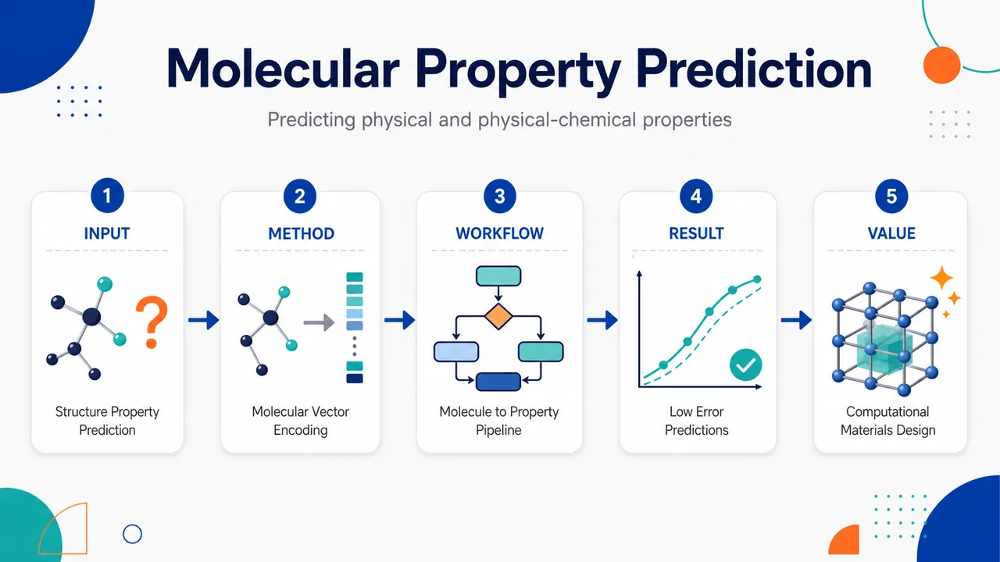
研究问题如何不依赖大量实验测量，直接从有机分子的化学结构与组成出发，预测分子基材料的热力学、物理和物理化学性质；画面可表现为“分子结构图”指向“材料性质仪表盘”，中间标注传统实验筛选成本高、经验回归泛化弱。创新方法论文的 Aha 点是把分子结构和元素/基团组成用简单算法直接编码成数值向量，再输入反向传播神经网络，学习非线性定量结构–性质关系；画面可表现为“苯环、碳链、含氟基团、冠醚环”被压缩成一排数字条码，随后进入神经网络节点层，输出沸点、密度、折射率等性质。工作流程输入烃、氢氟烃、冠醚和聚合物等有机分子结构；通过结构编码算法提取组成与连接信息，生成数值向量；将向量送入反向传播神经网络训练；模型建立结构到目标性质的映射；最终输出热容、焓、蒸发热、沸点、密度、折射率、稳定常数及聚合物物理/机械性质预测，并与回归分析对比。关键结果在烃、氢氟烃、冠醚等体系上，神经网络预测多个材料性质的平均误差为 0.2–8.1%，最大偏差为 16–20%；结果显示简单结构编码加神经网络能够捕捉跨分子类别的非线性结构–性质关系，整体预测趋势较好，但部分离群样本仍存在明显偏差。应用价值该研究展示了早期材料信息学路线：用计算模型代替部分实验筛选，在计算空间中快速评估候选分子材料；其提出的 computational synthesis 可用于先生成或枚举候选结构，再预测性质并筛选目标材料，为现代虚拟筛选、逆向材料设计和机器学习辅助材料发现提供概念雏形。第一部分：核心概览
该研究把神经网络用于从有机分子化学结构直接预测分子基材料性质，核心贡献是用简单结构编码算法将分子组成转为数值向量，再训练反向传播神经网络建立定量结构–性质关系。覆盖烃、氢氟烃、冠醚及聚合物，预测误差平均为 0.2–8.1%，最大偏差 16–20%。在1998年语境下，该工作属于早期材料信息学与机器学习辅助材料设计的代表性探索，并提出“computational synthesis”作为材料设计策略。
---
第二部分：结构化快速回顾
《Predicting Physical and Physical-Chemical Properties of Molecular-Based Materials Using Computational Neural Networks》（None，）
背景
分子基材料的热力学性质、物理性质与物理化学性质通常依赖实验测量或经验回归。研究目标是从化学结构本身出发，构建可预测材料性质的计算模型，减少对实验筛选的依赖。
方法
采用一组简单算法将有机分子的结构与组成编码为数值向量，再把这些向量输入反向传播型神经网络，训练结构输入与目标性质之间的映射关系。
结果
在烃、氢氟烃、冠醚等体系上，多个性质预测达到平均误差 0.2–8.1%，最大偏差 16–20%。预测性质包括热容、焓、蒸发热、沸点、密度、折射率、稳定常数等。
讨论
神经网络能够从结构编码中学习非线性定量结构–性质关系，并可用于比传统回归更灵活的性质预测。聚合物材料的若干物理与机械性质也被估计，并与回归分析结果比较。
局限
摘要未给出训练集/测试集大小、网络层数、隐藏节点数、激活函数、损失函数、交叉验证方式、统计显著性、外推测试或不确定性估计。预测误差最大可达 16–20%，说明模型在部分样本或性质上仍有明显偏差。
结论
该研究展示了用计算神经网络从分子结构预测材料性质的可行性，并提出基于神经网络能力的computational synthesis，即通过计算预测来辅助材料设计。
---
第三部分：逐章节冷凝解析
Abstract
- Structure-to-property prediction scheme
研究建立了一个从化学结构预测分子基材料性质的计算方案，核心是把分子结构转化为可由神经网络处理的数值输入。摘要明确给出方法定位：*"A computational scheme, which utilizes neural networks, was developed to predict properties of molecular-based materials from chemical structures."* 该表述中的关键点有三层：第一，目标对象是molecular-based materials；第二，输入来源是chemical structures；第三，预测工具是neural networks。这使该研究从传统经验公式或单变量回归转向了结构驱动的多变量非线性建模。
- Direct molecular encoding into numerical vectors
分子信息不是通过量子化学全计算或实验描述符获得，而是通过“简单算法”直接编码为数值向量：*"The method uses a set of simple algorithms to encode the structure and composition of organic molecules directly into numerical vectors, which is used as input for neural networks."* 这里的structure and composition意味着编码同时包含结构连接关系与元素/基团组成信息；directly into numerical vectors说明模型输入是定长或可处理的数值表示，为后续神经网络训练提供标准化输入空间。
- Backpropagation neural networks as nonlinear QSPR models
建模采用反向传播型神经网络，目标是学习输入向量与目标性质之间的映射：*"Backpropagation type neural networks are then used to correlate these numeric inputs with a set of desired properties."* 这里的correlate不是简单线性相关，而是在神经网络语境中表示通过训练参数拟合复杂函数关系；desired properties说明框架具有多性质适配能力，可根据任务更换输出变量。
- Chemical domains tested
验证体系包括三类典型分子或分子材料：hydrocarbons、hydrofluorocarbons、crown ethers。摘要给出：*"Calculated results for a series of hydrocarbons, hydrofluorocarbons, and crown ethers demonstrate average accuracies of 0.2-8.1% with maximum deviations of 16-20%..."* 这些体系覆盖非极性有机物、含氟有机物与具有配位能力的大环醚，显示方法并非只针对单一化学族。
- Reported prediction accuracy
性能指标以平均误差和最大偏差报告，平均精度范围为 0.2–8.1%，最大偏差为 16–20%：*"demonstrate average accuracies of 0.2-8.1% with maximum deviations of 16-20%"*。该数值表明，在部分性质或数据集上模型接近高精度预测，但最差样本仍可出现约五分之一量级的偏差。摘要未报告 n 值、标准差、置信区间、P 值、训练/测试划分，因此无法判断统计稳健性与泛化误差来源。
- Breadth of predicted properties
预测对象覆盖多种热力学、物理、物理化学性质，包括：heat capacity、enthalpy、heat of evaporation、boiling point、density、refractive index、stability constants。摘要原文列举：*"for a broad range of thermodynamic, physical, and physical-chemical characteristics (heat capacity, enthalpy, heat of evaporation, boiling point, density, refractive index, stability constants, etc.)."* 这一范围显示模型不仅处理标量物性如密度和折射率，也涉及热力学函数和配位相关稳定常数，具有跨性质建模意图。
- Extension to polymeric materials
方法进一步扩展到聚合物材料的物理和机械性质估计，并与传统回归分析比较：*"In addition, a number of physical and mechanical properties were estimated for polymeric materials and compared with regression analysis."* 这表明研究不仅处理小分子，也尝试进入高分子材料领域；同时以regression analysis作为比较基线，体现早期机器学习方法相对于传统统计建模的性能检验意识。
- Computational synthesis as materials design strategy
基于神经网络形成定量结构–性质关系的能力，提出了computational synthesis概念：*"Based on the neural network capabilities of formulating accurate quantitative structure property relationships, a technique called computational synthesis is suggested for performing materials design."* 该概念的核心是把模型从“预测器”推进为“设计器”：先在计算空间中枚举或生成候选结构，再预测性质，从而筛选材料。这一思想与现代inverse design、virtual screening、materials informatics高度同构。
- Publication and bibliographic context
记录显示该论文提交至 arXiv 的时间为 2026年6月8日，但期刊出处为 International Journal of Smart Engineering System Design, 1, 255–272 (1998)。页面信息给出：*"Journal reference: International Journal of Smart Engineering System Design, 1, 255-272 (1998)"*，并标注：*"Submitted on 8 Jun 2026"*。因此，该研究的学术语境应按1998年的方法发展水平理解，而非按2026年新作理解。
- Document extent and figures
arXiv条目给出文档规模为 31 pages, 9 figures：*"Comments: 31 pages, 9 figures"*。摘要之外未提供章节标题、表格内容、图注、网络结构细节或数据集划分信息，因此不能可靠复原各章节完整论证链条。
---
第四部分：深度理解与语言支持
1. 术语解析
- Computational neural networks
这里指用于数值计算和性质预测的人工神经网络，不是生物神经网络。语境中强调“computational”是为了突出材料设计中的计算工具属性。与现代常说的 deep learning 不完全等价；1998年材料领域常用的神经网络多为浅层前馈网络和反向传播训练。
- Molecular-based materials
指性质由分子结构、分子组成、分子间相互作用显著决定的材料，包括小分子有机物、冠醚体系、聚合物等。该表达比 molecules 更宽，强调目标不是孤立分子本身，而是由分子单元构成并表现宏观或介观性质的材料。
- Quantitative structure property relationships / QSPR
QSPR 指用分子结构描述符定量预测物性。它类似药物化学中的 QSAR，但 QSAR 预测生物活性，QSPR 预测物理或化学性质。摘要中的 *"formulating accurate quantitative structure property relationships"* 表示神经网络被用来学习结构变量与性质变量之间的数值函数关系。
- Backpropagation type neural networks
指通过误差反向传播算法训练的前馈神经网络。输出误差从输出层向前传播至隐藏层和输入相关权重，用梯度下降或类似优化方法更新参数。该术语在早期神经网络文献中常用于区别专家系统、遗传算法、Hopfield网络等其他计算智能方法。
- Computational synthesis
字面上是“计算合成”，但并不必然表示真实化学反应的自动规划。该研究语境中更接近“在计算机中构造候选材料结构并预测其性质”，再用模型筛选设计目标。与现代术语 inverse materials design、virtual screening、generative materials design 有概念连续性。
2. 疑难查证
#### 为什么简单结构编码可以预测复杂材料性质？
分子性质并不完全随机，而与结构模式高度相关。例如碳链长度会影响沸点，极性基团会影响密度和折射率，大环结构会影响离子结合稳定常数。结构编码把这些模式转化为数值特征，神经网络再学习特征组合与性质之间的非线性关系。
关键难点在于：如果编码太粗，会丢失构象、电子效应、空间位阻等信息；如果编码太复杂，又需要大量训练数据。该研究强调“simple algorithms”，说明其策略更像早期经验描述符学习，而非现代图神经网络或量子化学增强模型。
#### 平均误差0.2–8.1%与最大偏差16–20%如何同时理解？
平均误差低说明整体预测趋势较好；最大偏差高说明存在离群样本、稀有结构或难预测性质。以材料设计角度看，平均误差可用于初筛，但最大偏差决定了高风险决策边界。若目标性质对应用性能高度敏感，例如稳定常数或玻璃化温度，16–20%偏差可能导致候选材料排序发生显著变化。
#### 神经网络与回归分析的差别在哪里？
传统回归通常要求预设函数形式，例如线性、多项式或少量交互项。神经网络不需要显式指定每个变量如何组合，而是通过隐藏层自动学习非线性映射。优势是表达能力强；劣势是可解释性弱、需要更多数据、容易过拟合。摘要中聚合物性质“compared with regression analysis”意味着回归被用作基线，用来判断神经网络是否提供额外预测能力。
---
第五部分：创新评估与关联
1. 创新性判断
#### 相对于1990年代传统QSPR和回归模型的新颖性
该研究的新颖性主要体现在三个方面：
- 从分子结构直接到神经网络输入
采用算法把有机分子的结构与组成直接编码为数值向量，减少人工选择少量经验描述符的依赖。
- 跨材料类别预测
同一框架覆盖烃、氢氟烃、冠醚、聚合物，而不是只针对单一物性或单一化学族。
- 从性质预测推进到材料设计
提出 computational synthesis，把神经网络QSPR用于候选材料筛选和设计，而不仅是回归拟合。
#### 相对于近2–5年相关工作的关系
按现代材料信息学标准，该研究的方法已不具备技术前沿性：近年主流方法包括图神经网络、消息传递神经网络、Transformer分子模型、预训练分子表征、多任务学习、主动学习、贝叶斯优化、生成模型和不确定性量化。现代模型通常能直接处理分子图、SMILES、晶体图或三维结构，并通过大规模数据集预训练获得更强泛化能力。
但该研究在概念上具有先驱意义：
- 结构编码 → 神经网络 → 性质预测 的流程与现代分子机器学习主线一致；
- QSPR驱动材料设计 与现代虚拟筛选、逆向设计思想一致；
- 多性质预测 与现代多任务材料模型目标一致；
- 与回归分析比较 对应现代机器学习论文中与传统基线模型比较的评估范式。
#### 解决了前人未充分解决的问题
在其历史语境下，该研究试图解决的问题是：如何把分子结构以可计算形式输入模型，并用神经网络建立跨性质、跨化学类别的预测关系。传统经验模型往往依赖人工假设和特定物性公式；该框架提供了更通用的非线性映射方式，使材料性质预测从“单性质经验估计”走向“可扩展的结构–性质学习”。
-
08
📊 含图深析
📄 摘要：针对单分子力谱中数千条力-伸长轨迹的人工筛查瓶颈，提出系统无关且可解释的深度学习框架。方法把一维曲线转为二维栅格化几何矩阵，并面向极端类别不平衡自动筛选稀有分子解结合事件，用于从噪声主导曲线中分离有效轨迹。
💡 亮点：单分子力谱曲线被栅格化为二维几何输入，以深度学习处理极端稀有解结合事件。该策略直接替代人工审阅，适合高通量分子力学实验。
📖 展开分析 + 配图
研究问题高通量单分子力谱实验会产生数千至数万条力-伸长曲线，其中90%–99%是非特异黏附、仪器伪影或基线噪声；真正有价值的稀有解结合事件可能只占约1.34%。核心问题是在极端类别失衡下，如何像专家目检一样从海量噪声曲线中自动发现稀有分子事件，同时避免漏检并减少人工筛查负担。创新方法将一维力-伸长轨迹转化为224×224二维几何栅格图，让改造版ResNet18像“专家眼睛”一样识别曲线形态；用非对称Focal Loss（γ=2.0，α=[0.3,0.7]）压低大量易分类噪声的训练权重、提高漏检稀有事件的代价；再用双阈值triage把预测结果分成自动丢弃、人工复核、自动接受三队列，并用Grad-CAM热图证明模型关注真实解结合区和断裂垂直下降，而非背景伪影。工作流程输入公开SMFS力-伸长曲线数据，将曲线表示为224×224二维矩阵；分层划分训练集、验证集和极端失衡测试集；冻结ResNet18早期层，仅训练layer3、layer4和含256节点线性层、ReLU、40% Dropout、2节点输出的分类头；用非对称Focal Loss训练模型；输出每条曲线为目标事件的概率；按0.50和0.80双阈值路由为自动丢弃噪声、人工复核边界曲线、自动接受高置信事件；最后叠加Grad-CAM热图检查模型注意力是否落在物理解结合区域。关键结果在970条测试曲线中只有13条真阳性目标事件、阳性比例仅1.34%的条件下，模型识别出12/13个稀有事件，召回率达到0.9231；正确排除880/957条背景噪声曲线，准确率为0.9196。双阈值triage使研究人员不再需要检查全部970条曲线，只需复核89条候选曲线，人工筛查量减少超过90%，同时保留92.31%的稀有事件。最佳模型来自第40轮训练，验证F1为78.57%。应用价值该研究把深度学习从单纯曲线分类器转化为可部署的SMFS实验室筛查工具，可在高噪声、高通量数据中优先保留稀有分子解结合事件，大幅减少专家目检时间。其开源、云端可运行、可解释的设计降低了生物物理实验室使用门槛，有助于加速蛋白质折叠、受体-配体结合、细胞黏附等单分子机制发现。第一部分：核心概览 (Overview)
该研究提出面向单分子力谱（SMFS）稀有事件发现的系统无关深度学习流程，将224×224 二维栅格化力-伸长曲线输入改造版 ResNet18，以非对称 Focal Loss处理 1.34% 极端类别失衡，并用 Grad-CAM验证物理可解释性。在 970 条测试曲线中仅 13 条真阳性的条件下，召回率达 0.9231，自动丢弃 880 条噪声曲线，使人工筛查量减少 >90%。其领域地位在于将深度学习从单纯分类扩展为可部署、可解释、面向实验室日常高通量筛查的自动化 triage 工具。
---
第二部分：结构化快速回顾
《Automating the Expert Eye: A System-Agnostic Deep Learning Framework for Rare Event Discovery in Imbalanced Force Spectroscopy》（None，）
背景
单分子力谱可解析蛋白质折叠、受体-配体结合和细胞黏附等生物力学过程，但高通量 AFM-SMFS 会产生数千至数万条力-伸长曲线，其中 90%–99% 常为非特异黏附、仪器伪影或基线噪声。传统人工目检不可扩展，WLC 曲线拟合在多结构域、多状态展开路径中容易失效。
方法
流程使用 Doffini et al. 2023 已公开的 R. champanellensis XMod-Doc/Coh 数据集，将预栅格化的 224×224 二维矩阵输入改造版 ResNet18。训练中冻结早期特征层，仅更新 layer3、layer4 与自定义分类头；分类头包含 256 节点线性层、ReLU、40% Dropout、2 节点输出层。损失函数采用 Focal Loss，参数为 γ = 2.0、α = [0.3, 0.7]。
结果
训练集 1,785 条、验证集 105 条、测试集 970 条。测试集中目标事件仅 13 条，占 1.34%。模型准确率 0.9196，召回率 0.9231，识别 12/13 个真阳性事件，并正确排除 880/957 个背景噪声。最佳模型来自 Epoch 40，验证 F1 为 78.57%。
讨论
双阈值 triage 将概率输出分为自动丢弃、人工复核、自动接受三队列；低阈值 0.50 用于最大化发现率，高阈值 0.80 用于确保自动接受队列零假阳性。实际测试中，人工只需检查 89/970 条曲线，显著缓解人工筛查瓶颈。
局限
验证集中高阈值 0.80 虽实现零假阳性，但假阴性升至 16；测试集中的人工复核队列仍包含 77 个假阳性。模型只在一个公开多结构域体系上完成证明性验证，跨仪器、跨实验室、跨分子体系的泛化仍需更大规模外部验证。
结论
结合二维几何表示、非对称 Focal Loss、双阈值 triage 与 Grad-CAM，可在极端类别失衡下保留稀有单分子事件并大幅减少人工工作量。该流程强调开源、云端可执行和可解释性，适合作为高通量 SMFS 数据筛查的实验室工具。
---
第三部分：逐章节冷凝解析 (Section-by-Section Condensing)
Abstract
- Severe curation bottleneck in SMFS
SMFS 能提供生物分子力学的高分辨信息，但高通量实验产生大量力-伸长轨迹，稀有解结合事件需要从噪声主导数据中筛出。摘要明确将核心问题定义为数据筛查瓶颈：*"Single-Molecule Force Spectroscopy (SMFS) provides unprecedented insights into biomolecular mechanics, yet the high-throughput generation of force-extension trajectories creates a severe data curation bottleneck."* 传统方法依赖人工审阅，且不可扩展：*"Identifying rare molecular unbinding events within thousands of noise-dominated curves traditionally relies on tedious, non-scalable manual auditing."*
- System-agnostic deep learning framework for imbalance
核心技术组合为系统无关、可解释、深度学习、极端类别失衡处理。摘要给出整体定位：*"we present a system-agnostic, interpretable deep learning framework tailored to overcome extreme class imbalance in automated SMFS triage."* 输入表示采用 1D-to-2D rasterized geometric matrices，网络为改造版 ResNet18，目标函数为非对称 Focal Loss：*"Utilizing 1D-to-2D rasterized geometric matrices, we deployed a modified ResNet18 architecture governed by an asymmetric Focal Loss objective function."*
- Hyper-imbalanced test performance
评价对象为 R. champanellensis cellulosome 的复杂机械展开路径。测试条件极端失衡：目标交互仅占 1.34%，即 970 条轨迹中只有 13 个真事件。性能达到 accuracy = 0.9196、recall = 0.9231：*"Under hyper-imbalanced test conditions where the target interaction constituted only 1.34% of the dataset (13 true events out of 970 traces), the model achieved an overall accuracy of 0.9196 and a remarkable True Positive Rate (Recall) of 0.9231."*
- Dual-threshold triage reduces workload
双阈值 triage 自动丢弃 880 条明确背景噪声曲线，使人工工作量下降 >90%，同时保留高价值稀有数据：*"By implementing an empirically calibrated dual-threshold triage system, the pipeline automatically discarded 880 unambiguous background noise traces, reducing the manual curation workload by over 90% while safely preserving high-value rare data."*
- Grad-CAM mitigates black-box skepticism
Grad-CAM 热图用于验证网络关注区域是否落在真正的结构解结合区域，而非背景噪声。摘要强调：*"Gradient-weighted Class Activation Mapping (Grad-CAM) visually validated that the network’s decisions are firmly anchored in the relevant geometric features of the force curves, specifically localizing on the structural unbinding regions, effectively mitigating ’black-box’ skepticism."*
- Open-source and cloud-accessible design
工具以免费云端执行为目标，降低生物物理实验室使用门槛：*"Built for free cloud-based execution, this open-source tool democratizes scalable, highly precise molecular discovery across the biophysics community."*
---
1 Introduction
- SMFS as a transformative biophysical method
AFM-SMFS 可在接近生理条件下操控单个生物分子复合物，支撑细胞黏附、蛋白质折叠与受体-配体研究。章节开头指出：*"The mechanical characterization of single-molecule interactions has fundamentally reshaped modern biophysics, offering unprecedented insights into cellular adhesion networks, protein folding mechanics, and receptor-ligand landscapes."* 技术优势来自 AFM 对个体分子复合物的机械操控能力：*"Single-Molecule Force Spectroscopy (SMFS) via the Atomic Force Microscope (AFM), which permits the mechanical manipulation of individual biomolecular complexes under physiological conditions."*
- Data curation crisis caused by high throughput and rarity
标准 SMFS 工作流的系统瓶颈是数据筛查危机。为获取稀有分子相互作用的统计显著性，高通量 SMFS 常产生数万条未整理轨迹：*"modern high-throughput SMFS protocols routinely generate uncurated datasets containing tens of thousands of individual force-extension trajectories."* 由于单分子表面连接具有随机性，大多数数据是无效或非目标信号：*"the vast majority (frequently 90% to 99%) of these data streams consist entirely of non-specific surface adhesion, instrumentation artifacts, tip-ringing, or baseline noise."*
- Manual auditing is non-scalable and biased
从海量数据中识别真实生物相关解结合表型仍依赖人工，效率低且存在认知偏差。章节明确指出：*"Extracting genuine, biologically relevant unbinding phenotypes from these massive datasets remains a tedious, manual process."* 随着高速和多路复用力谱提高采集率，人工目检越来越不可扩展：*"the reliance on manual visual auditing by experienced researchers becomes increasingly non-scalable and highly susceptible to cognitive bias."*
- Deterministic WLC fitting fails in complex systems
早期自动筛选依赖确定性数学过滤，例如基于 Worm-Like Chain（WLC） 熵弹性模型的多峰拟合。其适用于简单孤立蛋白，但在噪声重叠或多结构域复合物中易失败：*"standard WLC fitting routinely breaks down when encountering overlapping non-specific noise or multi-domain complexes with highly complex, multi-state unfolding topologies."* 因此领域需要开放、标准化分析工具：*"urgent need for standardized, open-source data analysis frameworks capable of handling complex mechanical data."*
- 2D rasterization enables expert-eye-like computer vision
Doffini et al. 2023 的关键范式转变是将 1D 力-伸长曲线栅格化为二维图像矩阵，使 CNN 可像人类专家一样观察整体几何形态：*"By rasterizing 1D force-extension trajectories into square 2D image matrices, the authors demonstrated that force spectroscopy curves could be evaluated as geometric figures."* 该方法模拟人工验证中的整体视觉判断：*"allowing deep convolutional neural networks to replicate the holistic 'expert eye glimpse' that human researchers use during manual verification."*
- FUSION as prior computational foundation
前人 FUSION 框架使用 DenseNet121 与 triplet-loss embedding layer 对不同单分子展开路径进行映射和聚类：*"Their pioneering FUSION framework coupled a DenseNet121 architecture with a triplet-loss embedding layer to map and cluster distinct single-molecule unfolding pathways."* 当前工作没有重新发明图像转换，而是在既有二维表示之上处理真实部署中的失衡与可解释性问题。
- Extreme class imbalance remains unresolved
真实实验中某一目标构象、稀有中间态或低产率突变路径可能低于总数据的 2%：*"a specific target conformation, a rare intermediate state, or a low-yield mutant pathway might constitute less than 2% of the entire uncurated data stream."* 标准交叉熵分类网络会被多数类噪声主导，导致灾难性假阴性：*"Standard deep classification networks utilizing traditional cross-entropy loss functions completely fail under these conditions; their optimization parameters are overwhelmed by the massive majority class (noise), leading to catastrophic false-negative rates."*
- Black-box skepticism blocks adoption
深度学习在生物物理中的部署受限于缺乏内部物理解释。章节指出：*"Standard deep learning implementations rarely offer internal physical justification for their predictions."* 如果没有空间反馈证明模型为何把某个几何形状判为有效分子相互作用，研究人员不愿让软件自动丢弃大量实验数据：*"Without verifiable spatial feedback demonstrating why a neural network classified a specific geometric shape as a valid molecular interaction, biophysicists remain rightfully hesitant to trust automated software to discard large chunks of experimental data."*
- End-to-end system-agnostic workflow
目标是构建端到端、系统无关、面向极端失衡场景的自动化力曲线 triage 和稀有事件发现流程：*"this work introduces an end-to-end, system-agnostic computer vision workflow engineered explicitly for automated force-extension curve triage and rare event discovery in hyper-imbalanced scenarios."* 关键设计是沿用已发表二维矩阵格式以隔离模型性能差异：*"our framework explicitly leverages the established, peer-reviewed 2D image representation matrix format used in recent literature."*
- Three core pillars of the workflow
第一支柱是 Focal Loss optimization engine，用改造版 ResNet18 和自适应 Focal Loss 降低易分类噪声权重：*"dynamically down-weights the loss contributions of ubiquitous, easy-to-classify noise traces."* 第二支柱是 Grad-CAM，将空间注意力热图叠加到曲线上，证明判断基于 WLC 拉伸区等物理标志：*"proving that the network’s decisions are mathematically anchored to true physical landmarks."* 第三支柱是双阈值路由，自动丢弃噪声、自动归档高置信交互、标记边界曲线供人工复核：*"automatically discards obvious noise, automatically archives high-confidence interactions, and flags ambiguous, borderline traces for manual review."*
- R. champanellensis XMod-Doc/Coh as stress test
验证体系为 Ruminococcus champanellensis 的多结构域 XModule-Dockerin/Cohesin（XMod-Doc/Coh） 复合物公开数据集。该体系因双结构解结合路径复杂且非专家难以区分，被视为严苛测试场景：*"This multi-domain system is widely recognized as an ideal stress test due to its complex mechanical fingerprints, featuring dual structural unbinding pathways that are highly ambiguous to non-experts."* 评价集目标类比例仅 1.34%：*"a severe target class prevalence of just 1.34%."*
- Open-source cloud deployment goal
流程被包装为可在免费云 GPU 上运行的开源工具：*"this framework is packaged as an open-source workflow optimized to run on free, cloud-based GPU infrastructure."* 目标是让全球生物物理实验室都能使用高级机器学习 triage：*"democratizing advanced machine learning triage for biophysics laboratories worldwide."*
---
2 Materials and Methods
2.1 Dataset Origin and Biomolecular System
- Public benchmark dataset for direct evaluation
数据来自 Doffini et al. 2023 编译并描述的公开 Ruminococcus champanellensis XMod-Doc/Coh 单分子力谱数据集，用于与既有基准无混杂比较：*"this study utilizes the public single-molecule force spectroscopy dataset of the Ruminococcus champanellensis XModule-Dockerin/Cohesin (XMod-Doc/Coh) multi-domain complex."* 选择该体系的原因是结构歧义与多状态路径复杂：*"The mechanical unbinding profiles of this complex serve as an ideal stress test due to their structural ambiguity and multi-state pathways."*
- Three mechanical phenotypes
数据集包含三类主要机械表型。P1 是无 XModule 预展开的直接高力复合物断裂：*"Pathway 1 (P1): A direct, high-force complex rupture event that occurs without the preliminary unfolding of the adjacent mechanostable Ig-like XModule domain."* P2 是 XMod 先发生机械转变再复合物解离，并具有 ΔLc ≈ 29–32 nm 的内部物理指纹：*"yielding a measurable contour length increment (ΔLc ≈ 29–32 nm) that acts as an internal physical fingerprint."* P3 是低力解结合，形态类似 P1 但力阈值显著降低，易与噪声混淆：*"A low-force unbinding profile that structurally mimics P1 but dissociates at a drastically reduced mechanical threshold."*
2.2 1D-to-2D Data Representation and Ingestion
- Use of pre-rasterized 2D matrices
为保证可比性并保留 WLC 曲线、结构断裂垂直下降等空间几何，直接使用 Doffini et al. 2023 的预栅格化二维实验数据：*"this study leverages the pre-rasterized 2D experimental dataset established by Doffini et al. (2023)."* 数据源为 Zenodo：*"the dataset was sourced directly from the publicly available Zenodo repository: https://zenodo.org/records/8224237"*
- 224×224 pixel mapping
归一化伸长坐标和力测量值被映射到 224×224 方形像素矩阵：*"the normalized extension coordinates (x-axis) and force measurements (y-axis) are already mapped into 224 × 224 pixel square matrices."* 这种二维表示让 CNN 可直接处理力曲线几何形态。
- Direct NumPy ingestion
输入文件为 x₂Dₚᵣₒcessed.npy 和 yᵣₐw.npy，分别对应二维表示矩阵和交互标签：*"The data was ingested directly into the training pipeline as standard NumPy objects: the 2D representation matrices (x₂Dₚᵣₒcessed.npy) and their corresponding interaction labels (yᵣₐw.npy)."* 直接使用预处理数组可避免冗余图像转换，并保证输入与基准文献一致：*"guarantees that the input features fed into our convolutional backbone remain mathematically identical to the benchmark literature."*
2.3 Dataset Partitioning and Stratification
- Independent split to prevent leakage
数据严格划分为训练、验证和测试子集，以防止数据泄漏：*"the rasterized dataset was strictly partitioned into independent training, validation, and testing subsets."* 由于目标事件极少，采用分层划分保证稀有 P1 在各阶段都有代表：*"stratified splitting was employed to guarantee that the rare P1 interactions were adequately represented across all phases of model development."*
- Training set composition
训练集用于参数优化，共 1,785 条轨迹，其中 1,683 条阴性、102 条阳性目标交互：*"Training Set: Utilized for model parameter optimization, comprising 1,785 trajectories (1,683 negative traces and 102 positive target interactions)."*
- Validation set composition
验证集用于超参数调节、Focal Loss 权重调整和 triage 边界校准，共 105 条轨迹，其中 82 条阴性、23 条阳性：*"Validation Set: Utilized for hyperparameter tuning, Focal Loss weight adjustment, and triage boundary calibration, comprising 105 trajectories (82 negative, 23 positive)."*
- Hyper-imbalanced test set
测试集为隔离评估集，共 970 条轨迹，只有 13 条真阳性目标交互，目标类比例 1.34%：*"Test Set: A sequestered evaluation set comprising 970 trajectories. To rigorously stress-test the framework, only 13 curves represented true positive target interactions."* 这种配置故意惩罚默认多数类预测的标准分类网络：*"deliberately penalizing standard classification networks that default to majority-class prediction."*
2.4 Network Architecture and Focal Loss Objective
- Modified ResNet18 for accessible computation
网络采用改造版 ResNet18，目标是在标准云计算环境如 Google Colab 中实现高通量分类，而不依赖本地高端集群：*"we implemented a modified ResNet18 architecture."* 章节强调计算可及性：*"without necessitating high-end local computing clusters."*
- Partial transfer learning and trainable blocks
为降低计算开销，冻结初始特征提取块，只更新 layer3、layer4 和自定义分类头：*"transfer learning was applied by freezing the initial feature-extraction blocks."* 梯度更新范围严格限制：*"Gradient updates were strictly localized to the terminal convolutional blocks (layer3 and layer4) and the custom classification head."*
- Custom classification head
最终全连接层替换为 256-node linear layer + ReLU + 40% Dropout + two-node output：*"The final fully connected layer was replaced with a bespoke sequence comprising a 256-node linear layer, a ReLU activation, a 40% Dropout regularization layer, and a two-node linear output."*
- Focal Loss formula and purpose
为处理 1.34% 类别失衡，标准交叉熵被替换为端到端 Focal Loss：*"To counteract the 1.34% class imbalance, standard cross-entropy was replaced with an end-to-end Focal Loss objective function."* 数学形式为
FL(pt) = −αt(1 − pt)^γ log(pt)，其中 γ = 2.0：*"The focusing parameter γ was set to 2.0, dynamically driving the loss contribution of easily classified baseline noise to near zero."*
- Asymmetric class weighting
类别权重张量为 α = [0.3, 0.7]，显式增加稀有目标类假阴性的惩罚：*"an asymmetric weighting tensor (α = [0.3, 0.7]) was passed to the loss function to explicitly heavily penalize false negatives in the rare target class."* 目的在于迫使 ResNet18 活跃权重隔离真实分子断裂的稀疏视觉模式：*"forcing the active ResNet18 weights to isolate the sparse visual motifs of genuine molecular ruptures."*
2.5 Interpretability via Gradient-Weighted Class Activation Mapping (Grad-CAM)
- Grad-CAM for physical soundness
Grad-CAM 被集成以确认分类逻辑具有物理合理性：*"To ensure the network’s classification logic was physically sound, we integrated Grad-CAM."* 其输出为空间注意力热图：*"to provide spatial attention heatmaps."*
- Layer4 gradient localization
Grad-CAM 计算目标类别分数相对于 ResNet18 最终卷积块 layer4 特征图的梯度：*"Grad-CAM computes the gradient of the target class score with respect to the feature maps of the final convolutional block (specifically, layer4)."* 通过全局平均池化获得通道权重：*"By performing global average pooling on these gradients, we derive the critical channel weights."*
- Attention map overlay on original matrices
生成的二维注意力图被上采样并叠加到原始 224×224 几何矩阵：*"The resulting 2D attention maps were upsampled and superimposed onto the original 224 × 224 geometric matrices from the NumPy dataset."* 其作用是证明模型聚焦于合法热力学拉伸几何，而非图像伪影：*"visual proof that the model successfully isolates legitimate thermodynamic stretching geometries rather than keying in on secondary image artifacts."*
2.6 Dual-Threshold Triage and Workflow Execution
- Dual-threshold routing instead of rigid binary classification
为适配高通量实验室场景，输出概率不使用固定 p ≥ 0.5 二分类，而采用双阈值机制：*"Rather than enforcing a rigid binary split (e.g., p ≥ 0.5 equals positive), this system utilizes user-defined boundary parameters."* 连续概率被分成三个处理队列：*"to stratify the continuous probability predictions into three distinct processing queues."*
- Auto-discard queue
Auto-Discard Queue 对应置信度低于低阈值的明确噪声和空基线轨迹，永久丢弃以减少数据量：*"Unambiguous noise and empty baseline traces are permanently discarded, drastically reducing data volume."*
- Manual review queue
Manual Review Queue 对应低阈值和高阈值之间的边界样本，包括边缘、复杂或高度非典型曲线，作为防假阴性的安全缓冲：*"Marginal, complex, or highly atypical curves are isolated for human verification, acting as a safety buffer against false negatives."*
- Auto-accept queue
Auto-Accept Queue 对应置信度高于高阈值的理想结构几何曲线，被自动归档为真阳性交互：*"Traces exhibiting ideal structural geometries are automatically archived as true positive interactions."*
- Unified Python and Google Colab workflow
从数据导入、训练、自动 triage 到热图生成均整合到统一 Python 框架：*"The entire computational pipeline—from data ingestion and model training to automated triage and heatmap generation—was consolidated into a unified Python framework."* 工作流在 Google Colab 环境中设计和验证，形成零安装部署模式：*"designed and validated within a Google Colab environment, establishing a highly accessible, zero-installation paradigm."*
2.7 Computational Hardware and Implementation
- Local workstation execution
计算任务在标准实验室工作站本地执行：*"All computational tasks were executed locally on a standard laboratory workstation."* 硬件配置为 Intel Core Ultra 5 CPU、32 GB RAM、NVIDIA RTX 2000 Ada Generation GPU、16 GB VRAM：*"The system was equipped with an Intel Core Ultra 5 CPU, 32 GB of random-access memory (RAM), and a dedicated NVIDIA RTX 2000 Ada Generation graphics processing unit (GPU) with 16 GB of VRAM."*
---
3 Results and Discussion
3.1 Model Optimization and Computational Efficiency
- Training schedule and validation monitoring
模型在训练集 1,785 条轨迹上训练 50 epochs，每轮后用独立验证集 105 条轨迹监控性能：*"the network parameters were optimized over 50 epochs using the training dataset (1,785 trajectories)."* 防过拟合策略为持续验证：*"model performance was continuously monitored against the independent validation set (105 trajectories) after each epoch."*
- F1 score as selection metric
目标是在保留稀有生物事件的召回率和积极消除噪声的精确率之间平衡，因此选择 F1 score 作为主要模型选择指标：*"we utilized the F1 score as our primary selection metric."* 早期召回率可达 100%，但假阳性很高：*"While the model maintained a perfect Recall of 100% during the early epochs, this came at the cost of high False Positives."*
- Epoch 40 as optimal checkpoint
随训练推进，Focal Loss 促使网络识别困难边界样本：*"the Focal Loss engine successfully forced the network to discern harder, borderline cases."* 最优权重来自 Epoch 40，验证 F1 全局最高 78.57%：*"The optimal network weights were extracted from Epoch 40, where the model achieved its global maximum validation F1 score (78.57%)."* 图注进一步给出该点假阳性 11、召回率 95.65%：*"This precise model selection minimized False Positives to 11 while maintaining an exceptional 95.65% Recall."*
- Fast training time
完整训练仅耗时 294.62 秒，支持该二维栅格化管线的计算效率：*"The complete training phase executed rapidly in just 294.62 seconds."*
- Validation-based dual-threshold calibration
验证集包含 82 条阴性和 23 条阳性，用于校准 triage 边界：*"the validation subset (82 negative traces, 23 positive traces) was utilized to empirically calibrate the boundaries."* 单一二值阈值不足以满足操作需求：*"a single, rigid binary cutoff is operationally insufficient."*
- Threshold trade-off table
阈值扫描显示：p = 0.30 时假阳性 32、假阴性 0；p = 0.50 时假阳性 11、假阴性 1；p = 0.80 时假阳性 0、假阴性 16；p = 0.98 时假阳性 0、假阴性 23。校准结论是低阈值 0.50 保护发现率，高阈值 0.80 保证自动归档精确性：*"The low threshold (0.50) was selected to maximize biological discovery, minimizing False Negatives to just 1. The high threshold (0.80) was strictly enforced to guarantee absolute precision, yielding zero False Positives."*
3.2 Classification Performance under Hyper-Imbalance
- Extreme test configuration
核心挑战是防止模型在稀有事件条件下默认预测多数类。测试集为隔离的 GTₚₐₜₕway1 集合，共 970 条力-伸长轨迹，其中目标路径 P1 仅 13 条，占 1.34%，负类 957 条：*"the target unbinding pathway (P1) constituted only 1.34% of the data (13 true positive events against 957 negative traces)."*
- Cross-entropy baselines expected to fail
标准交叉熵 CNN 在该基准上通常对目标类召回率接近零：*"Traditional convolutional architectures relying on standard cross-entropy loss systematically fail on this benchmark, typically yielding near-zero recall for the target class."* 非对称 Focal Loss 被描述为成功反转多数类偏置：*"our integration of the asymmetric Focal Loss engine (α = [0.3, 0.7]) successfully inverted this bias."*
- Rare event detection performance
模型达到 True Positive Rate / Recall = 92.31%，成功识别 12/13 个稀有生物解结合事件：*"The network achieved an exceptional True Positive Rate (Recall) of 92.31%, successfully identifying 12 out of the 13 rare biological unbinding events."* 同时正确识别 880 个真阴性：*"Furthermore, the model accurately identified 880 True Negatives."*
- Confusion matrix details
混淆矩阵为：真 GOOD 中预测 GOOD 12、预测 BAD 1；真 BAD 中预测 GOOD 77、预测 BAD 880。表注明确：*"The model successfully identified 12 out of 13 rare target events."* 这对应假阴性 1、假阳性 77、真阴性 880、真阳性 12。
- Interpretation of bias control
结果说明模型参数被迫优先处理复杂稀疏几何而非普遍背景噪声：*"the framework effectively forces the network parameters to prioritize complex, sparse visual geometries over ubiquitous background noise."* 目的在于保存否则会被自动过滤丢失的高价值实验数据：*"securing high-value experimental data that would otherwise be lost to automated filtering."*
3.3 Operationalizing the Dual-Threshold Triage
- Laboratory reality requires triage not just classification
标准二分类指标有基准价值，但不能完全反映高通量生物物理实验室操作现实：*"standard binary classification metrics are valuable for theoretical benchmarking, they do not reflect the operational reality of high-throughput biophysics laboratories."* 单阈值会强迫边界曲线进入确定类别，从而可能丢失异常构象或污染最终数据集：*"A rigid single threshold forces ambiguous, borderline traces into definitive categories."*
- Empirical thresholds from validation
验证日志显示 0.50 阈值只漏掉 1 个目标，0.80 阈值完全消除假阳性：*"a threshold of 0.50 minimized false negatives (missing only 1 target), while a threshold of 0.80 entirely eliminated false positives (0 false positives)."* 因此操作边界设为 thresholdₗₒw = 0.5 与 thresholdₕᵢgh = 0.8：*"the operational boundaries were established at thresholdₗₒw = 0.5 and thresholdₕᵢgh = 0.8."*
- Auto-discard queue performance
在测试集中，p < 0.5 的自动丢弃队列正确分类 880 条负轨迹，直接去除超过 90% 基线噪声：*"The model correctly classified 880 negative traces with confidence scores below 0.5."* 其操作意义是无需人工干预即可大量减少无效数据：*"These traces were safely discarded, immediately eliminating over 90% of the baseline noise without any human intervention."*
- Auto-accept queue role
p > 0.8 的自动接受队列用于高保真 P1 断裂曲线，具有经典分子相互作用轮廓和极高预测概率：*"High-fidelity P1 ruptures displaying classic molecular interaction profiles with extremely high predicted probabilities were securely archived as definitive true positives."*
- Manual review queue composition
0.5 ≤ p ≤ 0.8 的人工复核队列隔离小部分模糊曲线；测试集中该队列捕获 12 个真阳性和 77 个假阳性：*"In the test set evaluation, this queue captured the 12 true positive events alongside 77 false positives."* 虽然假阳性仍需人工检查，但相对于 970 条全量曲线，工作量大幅降低。
- >90% workload reduction
操作上，研究人员无需目检 970 条轨迹，只需复核中间和高置信队列中的 89 条：*"Rather than manually visually auditing 970 trajectories, a researcher is only required to review the 89 traces flagged in the intermediate and high-confidence queues."* 这代表 >90% 的人工筛查量减少，同时保留 92.31% 稀有事件：*"This represents a >90% reduction in manual curation workload while safely preserving 92.31% of the rare events."*
3.4 Biophysical Validation via Grad-CAM Attention
- Black-box concern in mechanobiology
深度学习在机械生物学中采用的持久障碍是黑箱性：*"A persistent barrier to the adoption of deep learning in mechanobiology is the 'black-box' nature of neural networks."* 建立信任需要验证预测基于力曲线相关结构特征：*"researchers must verify that the model’s predictive decisions are anchored in the relevant structural features of the force trajectories."*
- Attention localization on unbinding events
对真阳性交互，Grad-CAM 激活稳定定位到解结合事件相关几何区域：*"For true positive interactions, the Grad-CAM activations consistently localized to the precise geometric regions associated with the unbinding event."* 网络重点关注特征性拉伸曲线和最终复合物断裂对应的锐利垂直坐标下降：*"the network focused heavily on the characteristic stretching curves and the sharp, vertical coordinate drops corresponding to the final complex rupture."*
- Figure 2 validation
图 2 包含原始 1D 力-伸长轨迹和叠加热图的栅格化轨迹。示例为真阳性目标解结合事件，模型预测为 Pred: 1：*"The model successfully classified the trace as a high-confidence target event (Pred: 1)."* 热图确认关注区域正确：*"The Grad-CAM activations visually confirm that the network’s attention tackles the appropriate region of interest."*
- Attention avoids arbitrary background
注意力图的功能是证明模型关注目标解结合和终端断裂，而非任意背景像素或空白区域：*"the primary activations consistently overlay the target unbinding event and terminal rupture."* 这确保分类由力-伸长轨迹相关片段驱动：*"rather than arbitrary background pixels or empty spatial regions."*
---
4 Conclusion
- SMFS utility limited by non-specific data
高通量 SMFS 能探测机械生物学，但长期受非特异数据和仪器噪声限制：*"High-throughput SMFS is a powerful tool for probing mechanobiology, but its utility has been historically limited by the overwhelming prevalence of non-specific data and instrumentation noise."*
- 2D representation plus imbalance-aware architecture resolves curation bottleneck
将既有二维力曲线表示与失衡感知深度学习结构结合，被定位为对数据筛查危机的解决方案：*"combining established 2D force-curve representations with an imbalance-aware deep learning architecture fundamentally resolves the SMFS data curation crisis."*
- Focal Loss enables rare P1 isolation
通过用 Focal Loss 取代标准交叉熵，在目标类比例仅 1.34% 时成功分离稀有 P1 解结合轨迹：*"By replacing standard cross-entropy with a Focal Loss optimization engine, our framework successfully isolated rare P1 unbinding trajectories despite an extreme target class prevalence of just 1.34%."*
- Final quantitative performance
隔离测试集上达到 Accuracy = 0.9196、True Positive Rate = 0.9231，并正确识别 880/957 个背景噪声曲线：*"achieving an Accuracy of 0.9196, a True Positive Rate of 0.9231, and correctly identifying 880 out of 957 background noise curves."*
- Attention maps support physical validity
注意力图显示网络主动忽略次级视觉伪影，并基于力-伸长曲线相关形态特征分类：*"the attention maps demonstrated that the network actively ignored secondary visual artifacts."* 结论进一步强调 Focal Loss 引导模型避免虚假空间相关：*"guided the model to base its classifications on the relevant morphological features of the force-extension curves, rather than spurious spatial correlations."*
- Accessible daily utility for bench biophysicists
流程被定位为从专业计算演示转向实验生物物理学家日常可用工具：*"transitions deep learning from a specialized computational exercise into an accessible, daily utility for bench biophysicists."* 目标是加速单分子发现：*"accelerating the pace of single-molecule discovery worldwide."*
---
Acknowledgements
- Scientific discussions and AI-assisted formatting disclosure
F. Rico 的讨论被致谢为对智识方向有帮助：*"The author thanks F. Rico for fruitful discussions that helped shape the intellectual direction of this work."* Google Gemini 仅作为对话助手用于润色句子结构和 LaTeX 格式：*"the use of Google Gemini (Google LLC) strictly as a conversational assistant to refine sentence structure and format LaTeX code."*
- Responsibility for analysis and accuracy
数据生成、主要分析和科学准确性责任归属于研究者本人：*"The author independently generated all data, conducted the primary analysis, and takes full responsibility for the scientific accuracy and final content."*
---
第四部分：深度理解与语言支持 (Understanding & Nuance)
1. 术语解析
System-agnostic
System-agnostic 字面是“不依赖特定系统”。在此语境中，它不是指模型完全不需要训练数据，而是指流程不绑定某个特定分子、仪器或曲线类型；只要力曲线能被转成统一二维几何矩阵，理论上即可迁移。其微妙含义是方法论通用性，但并不等同于已经完成跨体系泛化验证。
Triage
Triage 原本来自医学分诊，在这里表示把大量 SMFS 曲线按处理优先级分流：自动丢弃、人工复核、自动接受。它比 classification 更偏操作流程，强调“如何减少实验人员工作量并控制风险”，而不只是给每条曲线贴标签。
Hyper-imbalanced
Hyper-imbalanced 指类别比例极端不均衡。普通 imbalanced 可能是 1:10 或 1:20；这里测试集阳性为 13/970 = 1.34%，约为 1:74。此时准确率很容易虚高：若全部预测为阴性，准确率仍可达 98.66%，但召回率为 0。因此召回率、F1 和 triage 安全性比总体准确率更关键。
Focal Loss
Focal Loss 是用于处理难易样本不均和类别不均衡的损失函数。普通交叉熵会让海量易分类噪声样本主导梯度；Focal Loss 中的 (1 − pt)^γ 会降低易样本贡献，使模型更关注难样本。这里 γ = 2.0，并用 α = [0.3, 0.7] 增加阳性类权重，实质是在训练中提高漏检稀有事件的代价。
Grad-CAM
Grad-CAM 是一种卷积神经网络可解释性方法，用目标类别分数对最后卷积层特征图的梯度生成热图。此处关键不是“热图好看”，而是验证模型是否关注力曲线的真实解结合区域，例如 WLC 拉伸段和断裂垂直下降，而不是空白区域、边框或栅格化伪影。
---
2. 疑难查证
为什么 0.9196 accuracy 并不是最重要的结果？
在 1.34% 阳性比例下，准确率会严重误导。测试集中共有 970 条曲线，阴性 957 条。如果模型把所有曲线都判为阴性，准确率为 957/970 = 98.66%，看似极高，但会漏掉所有稀有事件。该研究的核心价值不在总体准确率，而在于识别 12/13 个稀有事件，即 Recall = 92.31%。因此，准确率 0.9196 甚至低于“全阴性模型”的 0.9866，但生物学价值远高于后者。
为什么假阳性 77 个仍可接受？
在稀有事件发现中，漏掉真阳性通常比多看一些假阳性更严重。测试集中模型将人工复核范围从 970 条缩小到 89 条，其中包含 12 个真阳性和 77 个假阳性。虽然复核队列纯度不高，但目标是保留稀有事件并减少工作量，不是完全替代人类专家。实验人员检查 89 条曲线即可找回 92.31% 的目标事件，工作量降低超过 90%。
为什么双阈值比单阈值更科学？
单阈值二分类会把边界样本强行归为阳性或阴性。对于 SMFS，这很危险：边界样本可能是罕见构象、低力真实事件、仪器伪影或非特异黏附。双阈值把低置信阴性自动丢弃，把高置信阳性自动接受，把中间不确定区域交给专家。这样把深度学习定位为风险控制型筛查器，而不是绝对裁判。
为什么 Grad-CAM 能缓解但不能完全消除黑箱问题？
Grad-CAM 可显示网络最终卷积层对分类贡献最大的空间区域。如果热图覆盖真实解结合段和终端断裂，说明模型至少在该样本上使用了合理几何信息。但 Grad-CAM 分辨率有限，且不是因果证明；它不能完全证明模型不会在其他样本中利用数据集偏差。因此它是可解释性证据，不是完整的物理机制证明。
---
第五部分：创新评估与关联 (Synthesis & Novelty)
1. 创新性判断
From curve discovery to operational rare-event triage
近 2–5 年内，SMFS 深度学习的重要进展之一是 Doffini et al. 2023 的 FUSION，其通过 1D-to-2D rasterization + DenseNet121 + triplet loss 对单分子展开轨迹进行分类、聚类和发现。当前研究的新颖性不在二维表示本身，而在将该表示推进到真实实验数据筛查中的三个操作难题：极端类别失衡、自动化工作量缩减、可解释性信任。
Imbalance-aware learning under 1.34% prevalence
目标类仅 1.34% 的测试设计比常规平衡或轻度失衡分类更接近真实高通量 SMFS 场景。以 Focal Loss γ = 2.0、α = [0.3, 0.7] 替代交叉熵，直接针对“多数类噪声淹没稀有事件”的训练失败模式。核心创新是把稀有事件漏检视为优化目标中的主要风险，而不是后处理时才修正。
Dual-threshold triage as laboratory workflow innovation
双阈值 0.5 / 0.8 的设计将模型输出转化为实验室可执行队列：自动丢弃、人工复核、自动接受。这解决了前人深度学习分类器常见的问题：即使有预测概率，也缺乏面向实验台的风险分流机制。工作量从 970 条降至 89 条，同时保留 92.31% 目标事件，体现的是人机协同筛查而非全自动替代。
Explainable AI tied to biophysical landmarks
通过 Grad-CAM 验证注意力落在 WLC 拉伸段、结构解结合区和终端断裂区域，回应了深度学习在力谱领域的“黑箱不可信”问题。相较于只报告分类指标，这种将模型注意力与物理几何标志对齐的做法更符合生物物理实验人员对证据的要求。
Computational accessibility
改造版 ResNet18、冻结早期层、仅训练 layer3/layer4 + classification head，并在普通工作站或 Google Colab 级别环境运行，降低了方法部署门槛。训练耗时 294.62 秒，说明该流程并非仅适合高性能计算环境。
Remaining novelty boundary
严格意义上的基础算法创新有限：ResNet18、Focal Loss、Grad-CAM、双阈值策略均为已有方法。真正的新颖性在于组合与应用场景：将这些成熟组件系统性适配到极端失衡 SMFS 稀有事件发现，并以公开复杂多结构域体系展示端到端可行性。前人尚未充分解决的问题包括：在目标类低于 2% 时保留稀有事件、让自动筛查具备人工可审计性、把分类模型转化为实验室实际减负工具。
-
09
📊 含图深析
📄 摘要：围绕固态电解质与锂金属界面电荷转移，训练 t-LLZO、c-LLZO、Ga-LLZO 与 Li 金属的矩张量势。机器学习分子动力学用于模拟体相和 Li/固态电解质界面的 Li+ 扩散，弥补常规 DFT 与 NEB 对多体关联和有限温度效应处理不足的问题。
💡 亮点：MTP 支撑 Li/Ga 掺杂 LLZO 界面的有限温度 MLMD，直接追踪 Li+ 扩散与电荷转移相关过程。对固态电池界面失效机制，比静态 NEB 更接近真实热涨落环境。
📖 展开分析 + 配图
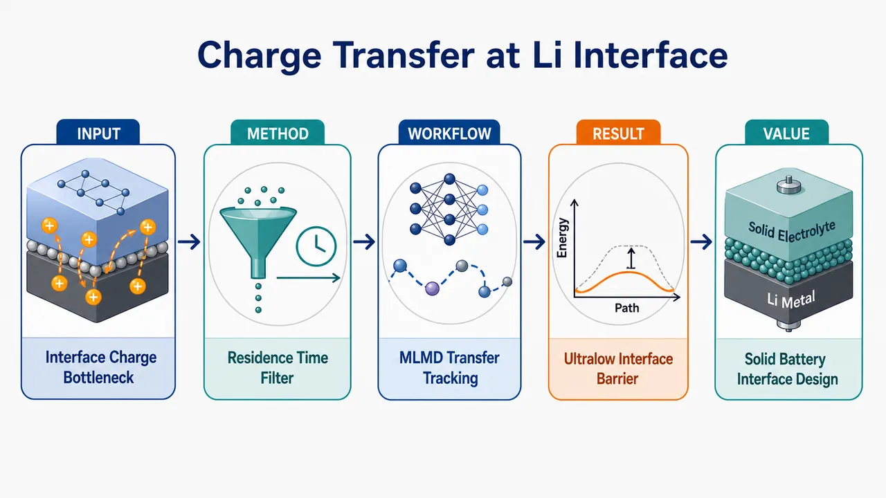
研究问题全固态锂电池中，Li 金属与 Ga 掺杂 LLZO 固态电解质接触界面是否存在缓慢的本征电荷转移瓶颈；传统 DFT/NEB 静态势垒是否因忽略多体协同运动和有限温度热涨落而误判 Li⁺ 跨界面迁移难度。创新方法用 moment tensor potentials 机器学习势替代昂贵 DFT，覆盖 t-LLZO、c-LLZO、Ga-LLZO 与 Li 金属，开展有限温度 MLMD；核心 Aha 点是提出 residence-time window method：像给 Li⁺ 轨迹加“驻留时间滤镜”，剔除界面附近来回抖动的假穿越，只统计在新区域稳定停留的真实电荷转移事件。工作流程输入 LLZO 多相结构、Ga 掺杂 LLZO、Li 金属与 Li/LLZO 界面模型；训练 MTP 机器学习势；运行 MLMD 获取体相和界面 Li⁺ 运动轨迹；用驻留时间窗口从轨迹中区分局域 rattling 与真实跨界面转移；统计转移频率并提取活化能；换算界面阻抗并判断限速环节。关键结果Li/Ga-LLZO 界面电荷转移活化能仅 167 meV，低于 Ga-LLZO 体相 Li⁺ 扩散活化能 200 meV；推得界面阻抗约 10⁻⁵ Ω cm²，显示理想 Li/Ga-LLZO 界面上的本征电荷转移动力学很快，不像主要速率限制步骤。应用价值为 LLZO 基全固态电池界面设计提供判断方向：若实验中出现高界面阻抗，更应优先关注污染层、孔隙、接触不良、机械脱粘、副反应产物等外在界面问题，而不是把本征 Li⁺ 跨界面电荷转移视为主要瓶颈；该 MLMD 加驻留时间分析框架也可推广到其他固态电解质/锂金属界面筛选。第一部分：核心概览 (Overview)
该研究面向全固态锂电池中 Li 金属/LLZO 固态电解质界面电荷转移 的动力学瓶颈问题，构建 moment tensor potentials, MTPs 以开展机器学习分子动力学模拟，并提出 residence-time window method 区分真实跨界面迁移与局域振动。核心结论是 Li/Ga-LLZO 界面本征电荷转移势垒仅 167 meV，对应界面阻抗约 10⁻⁵ Ω cm²，说明该界面本征电荷转移并非限速步骤。
---
第二部分：结构化快速回顾
《Machine learning assisted molecular dynamics of charge-transfer mechanisms at Li/Ga-doped Li₇La₃Zr₂O₁₂ (LLZO) interfaces》（None，）
背景
全固态电池中，固态电解质/锂金属界面电荷转移 是影响性能的关键因素。传统 DFT 与 nudged elastic band, NEB 计算通常忽略 多体关联 与 有限温度效应，可能导致迁移势垒估计不准。
方法
训练用于 LLZO 石榴石体系 与 Li 金属 的 moment tensor potentials, MTPs，覆盖 t-LLZO、c-LLZO、Ga-LLZO。基于这些机器学习势开展 machine-learning molecular dynamics, MLMD，模拟体相与界面处 Li⁺ 扩散。提出 residence-time window method，过滤离子 rattling，识别真实电荷转移事件。
结果
得到较低电荷转移活化能：Li/Ga-LLZO 界面为 167 meV，Ga-LLZO 体相为 200 meV。对应界面阻抗约 10⁻⁵ Ω cm²。
讨论
低势垒与低阻抗表明 Li/Ga-LLZO 界面的本征电荷转移动力学很快，界面电荷转移本身不应是 LLZO 基全固态电池的主要速率限制来源。
局限
可用材料未给出训练集规模、DFT 设置、MTP 超参数、MD 温度范围、模拟时间尺度、统计误差、界面构型数量、置信区间或实验验证细节，因此无法评估模型泛化误差与统计稳健性。
结论
机器学习势结合有限温度分子动力学可用于解析 LLZO/Li 界面电荷转移。residence-time window method 为区分真实迁移与局域振动提供了方法学贡献，结论支持 Li/Ga-LLZO 界面本征电荷转移不是限速步骤。
---
第三部分：逐章节冷凝解析 (Section-by-Section Condensing)
可用材料包含 arXiv 条目、题名、作者、摘要、学科分类、引用信息与提交历史；未包含完整 PDF 正文章节。因此以下严格依据可见原文标题与条目结构解析，不补造未提供章节、实验表格、图号或统计值。
---
Title
#### Machine learning and interface charge transfer are the central focus
题名明确聚焦 机器学习辅助分子动力学 与 Li/Ga 掺杂 LLZO 界面电荷转移机制，研究对象是 Li 金属/石榴石型 LLZO 固态电解质界面。题名原文为 *"Machine learning assisted molecular dynamics of charge-transfer mechanisms at Li/Ga-doped Li₇La₃Zr₂O₁₂ (LLZO) interfaces"*。核心科学问题并非单纯体相扩散，而是 charge-transfer mechanisms at interfaces，即跨越 Li 金属与固态电解质边界的离子/电荷转移动力学。
#### Ga-doped LLZO is treated as the practically relevant interface
题名中的 Ga-doped Li₇La₃Zr₂O₁₂ 表明研究关注稳定化或高导电 LLZO 变体。Ga 掺杂 LLZO 常用于获得立方相或改善 Li⁺ 传输，题名直接将其置于 Li/Ga-doped LLZO interface 语境下，显示界面材料并非理想未掺杂模型，而是更接近实际固态电池材料。原文题名使用 *"Li/Ga-doped Li₇La₃Zr₂O₁₂ (LLZO) interfaces"*，其中 Li/Ga-doped 指向 Li 金属与 Ga 掺杂 LLZO 的复合界面问题。
---
Authors
#### The study is attributed to three researchers
署名包含 Arseniy S. Burov、Artem M. Abakumov、Dmitry A. Aksyonov。可见条目写明 *"Authors: Arseniy S. Burov , Artem M. Abakumov , Dmitry A. Aksyonov"*。研究团队规模为 3 名作者，但可见材料未提供机构、贡献声明或通讯作者信息。
---
Abstract
#### Interfacial charge transfer is identified as a key performance-limiting factor
研究动机来自全固态电池中 固态电解质/锂金属界面电荷转移 对性能的限制。摘要开篇指出 *"Interfacial charge transfer between solid electrolytes (SEs) and Li metal is a key factor limiting all-solid-state battery performance."* 这里的 key factor limiting 强调界面电荷转移可能构成宏观电池倍率性能、极化与界面阻抗的关键瓶颈。
#### Conventional DFT and NEB may misestimate activation barriers
传统 density functional theory, DFT 与 nudged elastic band, NEB 被指出存在方法学不足，因为它们往往不能充分纳入 many-body correlations 与 finite-temperature effects。摘要明确写道 *"Conventional density functional theory and nudged elastic band calculations neglect many-body correlations and finite-temperature effects, which can lead to inaccurate activation barriers."* 关键含义是：静态或准静态最小能量路径不一定代表真实有限温度界面迁移过程，尤其在复杂固态电解质界面中，局部结构涨落、协同运动、缺陷重排会改变有效势垒。
#### Moment tensor potentials were trained for several LLZO phases and Li metal
方法核心是训练 moment tensor potentials, MTPs，覆盖 t-LLZO、c-LLZO、Ga-LLZO 与 Li metal。摘要写道 *"Here, we trained moment tensor potentials (MTPs) for garnet LLZO systems (t-LLZO, c-LLZO, and Ga-LLZO) and Li metal"*。其中 t-LLZO 通常指 tetragonal LLZO，c-LLZO 通常指 cubic LLZO，Ga-LLZO 指 Ga 掺杂 LLZO。该覆盖范围说明势函数不仅服务于单一界面模型，还针对 LLZO 多种结构状态与 Li 金属端进行了参数化。
#### Machine-learning molecular dynamics enables finite-temperature Li⁺ diffusion simulations
MTP 的用途是开展 machine-learning molecular dynamics, MLMD，从而模拟体相与界面处的 Li⁺ diffusion。摘要表述为 *"enabling machine-learning molecular dynamics (MLMD) simulations of Li⁺ diffusion in the bulk and at Li/SE interfaces."* 该策略用机器学习势替代昂贵的直接 DFT-MD，使更长时间尺度、更大体系尺寸或更多温度点的动力学采样成为可能。
#### A residence-time window method separates true charge transfer from ion rattling
方法学创新之一是 residence-time window method，其目标是过滤局域振动或短暂越界造成的伪事件。摘要写道 *"We also introduce a residence-time window method that filters out ion rattling and isolates genuine charge-transfer events."* 这里 ion rattling 指离子在局部势阱附近的快速往返振动或短程摆动，不等同于完成从一侧界面环境到另一侧环境的净转移。genuine charge-transfer events 则要求离子在新区域保持足够长驻留时间，体现真实状态转换。
#### The Li/Ga-LLZO interface has a low charge-transfer activation energy
关键定量结果为 Li/Ga-LLZO 界面电荷转移活化能 167 meV。摘要写道 *"The resulting charge-transfer activation energies are low: 167 meV at the Li/Ga-LLZO interface and 200 meV in Ga-LLZO"*。167 meV 对应约 0.167 eV，属于较低迁移势垒，意味着室温附近热激发即可支持较快跨界面 Li⁺ 转移。
#### Ga-LLZO bulk activation energy is 200 meV
同一句摘要给出 Ga-LLZO 体相活化能 200 meV：*"167 meV at the Li/Ga-LLZO interface and 200 meV in Ga-LLZO"*。界面势垒低于体相势垒，至少在该模型与分析方法下，界面转移不比体相扩散更慢，这对判断限速环节非常关键。
#### The inferred interfacial resistance is extremely low
活化能进一步换算或关联到界面阻抗，数值为 约 10⁻⁵ Ω cm²。摘要写道 *"corresponding to resistances of sim , 10⁻⁵ , Ømega ,cm²."* 该量级远低于许多实验报道的实际界面阻抗，暗示真实电池中的高阻抗更可能来自外在因素，例如污染层、孔隙、接触不良、空间电荷层、机械失配或副反应产物，而非理想 Li/Ga-LLZO 本征电荷转移。
#### Intrinsic Li/Ga-LLZO charge transfer is not rate-limiting
主要物理结论是 本征 Li/Ga-LLZO 电荷转移并非限速步骤。摘要直接写道 *"These results indicate that intrinsic Li/Ga-LLZO charge transfer is not rate-limiting."* 这里 intrinsic 是限定词，意味着结论只针对理想或模型化的材料本征界面；并不自动否定实际电池中由外在界面缺陷导致的高阻抗。
#### The methodology is positioned as a tool for interface optimization
摘要结尾强调方法可推广到固态电池界面优化。原文为 *"Overall, our findings clarify the fast interfacial kinetics in Li/LLZO systems, and the proposed methodology can aid further interface optimization in solid-state batteries."* 贡献包含两层：一是澄清 Li/LLZO systems 中界面动力学较快；二是提供可用于其他固态电解质/金属锂界面的 MLMD + residence-time window 分析框架。
---
Subjects
#### The disciplinary classification is materials science
arXiv 分类为 Condensed Matter > Materials Science，条目写明 *"Subjects: Materials Science (cond-mat.mtrl-sci)"*。该分类反映研究属于凝聚态材料科学，具体交叉 固态电池材料、界面物理、计算材料学、机器学习势函数、离子传输动力学。
---
Cite as
#### The preprint identifier is arXiv:2606.07772
引用信息为 arXiv:2606.07772 [cond-mat.mtrl-sci]。条目写明 *"Cite as: arXiv:2606.07772 [cond-mat.mtrl-sci]"*，并补充版本引用为 *"or arXiv:2606.07772v1 [cond-mat.mtrl-sci] for this version"*。这说明当前可见版本为 v1。
#### A DOI is listed through arXiv DataCite but pending registration
条目给出 DOI 链接 https://doi.org/10.48550/arXiv.2606.07772，并标注 *"arXiv-issued DOI via DataCite (pending registration)"*。这表示 DOI 已按 arXiv DataCite 机制显示，但登记状态仍为 pending。
---
Submission history
#### The first version was submitted on 5 June 2026
提交历史显示该稿件为 v1，提交时间为 Fri, 5 Jun 2026 18:29:55 UTC。原文写道 *"[v1] Fri, 5 Jun 2026 18:29:55 UTC"*。该日期说明研究属于 2026 年较新的预印本，尚需关注后续版本、同行评议结果或修订。
#### The visible entry provides no peer-review status
可见材料包含 arXiv 条目与 PDF/TeX 链接，但没有期刊接收、同行评议信息或正式出版信息。条目仅显示 *"[Submitted on 5 Jun 2026]"*，因此当前状态应视为预印本提交，而非已发表期刊论文。
---
Full-text links
#### PDF and TeX source are available as arXiv access options
条目显示可访问 PDF 与 TeX 源文件，例如 *"View a PDF of the paper titled..."* 与 *"TeX Source"*。这表明完整论文理论上可通过 arXiv 下载，但当前输入材料未包含 PDF 正文内容，因此无法依据原始章节、图表、补充信息进行逐节验证。
---
第四部分：深度理解与语言支持 (Understanding & Nuance)
1. 术语解析
#### Interfacial charge transfer
Interfacial charge transfer 指发生在 Li 金属/固态电解质界面 的电荷补偿与离子跨界面转移过程。语境中并不是单纯电子从一侧跳到另一侧，而是与 Li ⇌ Li⁺ + e⁻、Li⁺ 进入/离开固态电解质、界面局部配位变化相关的整体动力学。摘要中的 *"Interfacial charge transfer between solid electrolytes (SEs) and Li metal"* 强调其位置在界面，功能上影响全固态电池性能。
#### Activation barriers
Activation barriers 是从初态到过渡态所需克服的能量障碍，常用 eV 或 meV 表示。摘要中的 *"inaccurate activation barriers"* 暗示传统 DFT/NEB 可能低估或高估真实有限温度下的有效势垒。167 meV 与 200 meV 是动力学快慢的核心量化指标。
#### Many-body correlations
Many-body correlations 指多个原子/离子之间协同运动造成的相关性，不可简单分解为单个 Li⁺ 沿固定路径跳跃。LLZO 中 Li⁺ 迁移常涉及相邻 Li 位点占据、空位分布、局部晶格畸变和掺杂原子电荷补偿。摘要说传统方法 *"neglect many-body correlations"*，意味着静态 NEB 可能没有捕捉真实集体迁移通道。
#### Finite-temperature effects
Finite-temperature effects 指真实温度下的热振动、结构涨落、动态无序和熵贡献。NEB 通常给出 0 K 或近似静态能量路径；MLMD 则能显式采样温度驱动的构型变化。摘要中 *"finite-temperature effects"* 是方法转向 MD 的关键理由。
#### Ion rattling
Ion rattling 是离子在局部势阱或相邻位置之间快速小幅振动，并未形成长期净迁移。中文可译为 离子 rattling、局域抖动、笼内振动。摘要中的 *"filters out ion rattling and isolates genuine charge-transfer events"* 表明研究特别注意避免把短暂越界误判为真正电荷转移。
---
2. 疑难查证
#### 为什么 DFT/NEB 可能不适合直接判断界面电荷转移速率？
NEB 的基本思想是给定初态和末态，寻找最低能量路径，再从路径最高点估计势垒。这对简单晶体中的单离子跳跃很有效，但 Li/LLZO 界面更复杂：
- 界面不是单一静态结构：Li 金属表面、LLZO 表面、掺杂 Ga 附近局域环境会随温度波动。
- Li⁺ 迁移可能是集体事件：一个 Li⁺ 跨界面时，附近 Li⁺、空位、氧框架、界面 Li 原子可能同时重排。
- 真实反应坐标不明显：从 Li 金属到 LLZO 的转移不一定沿着人工选定的直线路径或单一 NEB 路径。
- 熵会改变有效势垒：有限温度下，很多近似等价路径共同贡献速率，静态能垒不能完全代表自由能垒。
因此，MLMD 的优势在于让体系在有限温度下自然演化，再从轨迹中统计真实发生的转移事件。
#### residence-time window method 的逻辑是什么？
界面附近的 Li 可能频繁短暂穿过人为定义的界面分界面。如果只要坐标越过边界就算“转移”，会把大量热振动误判为电荷转移。residence-time window method 的逻辑是设置一个时间窗口：只有当 Li 在新区域停留超过一定时间，才计为真实转移事件。
可以把它理解为区分两种情况：
- 伪转移：Li 短暂进入 LLZO 一侧，随后立即回到 Li 金属一侧；这属于 rattling。
- 真转移：Li 进入 LLZO 一侧后，在该侧稳定驻留，参与后续扩散；这属于 genuine charge-transfer event。
这种筛选能显著影响统计到的转移频率与活化能，因此是界面动力学分析中的关键细节。
#### “本征界面不限速”不等于“实际电池界面一定没有问题”
摘要结论为 *"intrinsic Li/Ga-LLZO charge transfer is not rate-limiting"*。这里的 intrinsic 非常重要。它意味着在模型化、理想或干净的 Li/Ga-LLZO 接触中，电荷转移本身很快。但实验电池中的高界面阻抗可能来自：
- LLZO 表面 Li₂CO₃、LiOH 污染层；
- Li 与 LLZO 接触不充分；
- 界面孔隙与机械脱粘；
- 局部化学副反应；
- 枝晶/裂纹诱导非均匀电流；
- 空间电荷层或缺陷分布变化。
因此，该研究更像是在排除一个“本征动力学瓶颈”假设，而不是否认所有界面工程问题。
---
第五部分：创新评估与关联 (Synthesis & Novelty)
1. 创新性判断
#### From static barriers to finite-temperature interface kinetics
过去 2–5 年内，LLZO/Li 界面研究大量依赖 DFT、NEB、AIMD、经验势或连续介质界面阻抗模型。这些方法要么计算成本高、时间尺度短，要么缺乏量子精度，要么难以区分真实转移和热振动。该研究的新颖性在于使用 MTP-based MLMD 直接模拟有限温度下的 Li⁺ bulk diffusion and Li/SE interfacial transfer，从而把问题从静态势垒估计推进到动力学事件统计。
#### A residence-time criterion addresses event-identification ambiguity
界面电荷转移的难点不只是“算轨迹”，还包括“什么算一次真正转移”。residence-time window method 针对 ion rattling 与 genuine charge-transfer events 的区分提供了操作性定义。相比单纯统计穿越界面次数，该方法更适合处理高频热振动导致的误判问题。
#### The study quantitatively challenges the intrinsic charge-transfer bottleneck hypothesis
得到 167 meV 的 Li/Ga-LLZO 界面活化能与约 10⁻⁵ Ω cm² 的阻抗后，结论指向：理想 Li/Ga-LLZO 的本征电荷转移非常快。该结果挑战了“LLZO/Li 高阻抗主要来自本征跨界面电荷转移慢”的解释，将研究重心推向 外在界面层、接触力学、表面污染、微结构缺陷与电化学副反应。
#### The methodological contribution is transferable
MTP 训练对象覆盖 t-LLZO、c-LLZO、Ga-LLZO 与 Li metal，说明框架可扩展到不同 LLZO 相、掺杂状态和界面构型。若后续结合更多掺杂元素、表面终止、缺陷化学与污染层模型，该方法可用于筛选固态电池界面优化策略。
#### Unresolved issues remain due to missing visible details
可见材料未提供训练数据库、误差指标、MD 采样长度、温度点、界面晶面、Ga 含量、界面构型、转移事件数量、Arrhenius 拟合误差和阻抗换算公式。因此，创新性强弱最终仍依赖完整论文中这些技术细节是否充分、统计是否稳健、模型是否经 DFT 或实验基准验证。
-
10
📊 含图深析
📄 摘要：在 Ti-23Nb-0.7Ta-2Zr 原子百分比 gum metal 基合金中，用 MACE-MATPES-PBE-0、Orb-v3、SevenNet-0 三种通用机器学习原子间势映射 C、N、O、H 间隙原子能量。相较 DFT，计算速度提高数个数量级，可处理多组元局域化学环境下轻元素间隙位点筛选。
💡 亮点：三种通用 MLIP 被用于 Ti-Nb-Ta-Zr gum metal 中 C/N/O/H 间隙能量图谱。该工作检验了基础势在复杂合金缺陷化学中的可用边界。
📖 展开分析 + 配图
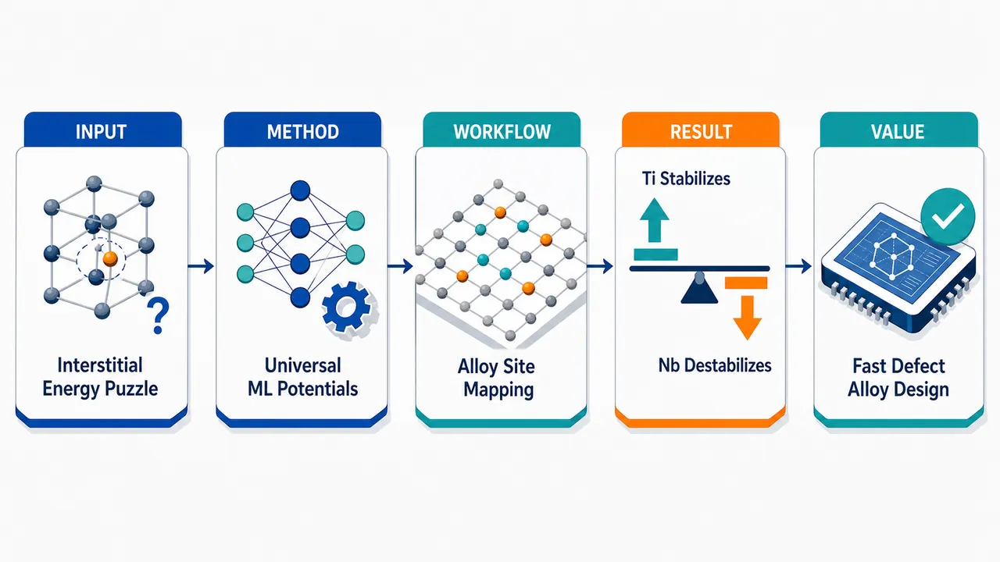
研究问题在 Ti-23Nb-0.7Ta-2Zr gum metal 多组元无序合金中，C、N、O、H 轻元素间隙原子的稳定性如何受局域 Ti/Nb/Ta/Zr 化学环境和四面体/八面体位点影响；如何避免 DFT 难以覆盖大量随机构型的高计算成本。创新方法使用三种通用机器学习原子间势 MACE-MATPES-PBE-0、Orb-v3、SevenNet-0 替代大规模 DFT 扫描，快速绘制 C/N/O/H 间隙原子在无序 bcc gum metal 中的能量分布、位点偏好和局域化学相关性；Aha 点是把少量 DFT 单点缺陷计算转化为“全局能量景观地图”，并用 DFT 对 O 与 H 的关键构型进行可靠性校准。工作流程输入 Ti-23Nb-0.7Ta-2Zr 无序 bcc 合金结构与 C、N、O、H 间隙原子候选位点；分别将间隙原子放入四面体和八面体局域环境；用 MACE、Orb、SevenNet 进行结构弛豫和能量计算；统计不同位点和近邻元素组成下的能量分布；分析 Ti-rich、Nb-near、Zr/Ta-near 环境与稳定性的相关性；最后用代表性 O 构型和 H 四面体/八面体构型进行 DFT 基准验证。关键结果所有 uMLIPs 均给出约 1–3 eV 的宽能量分布，显示间隙稳定性强烈依赖局域化学环境；MACE-MATPES-PBE-0 与 Orb-v3 正确复现 bcc 中 C/N/O 偏好八面体位点、H 偏好四面体位点；SevenNet-0 错误预测 H 在八面体配位更稳定；相关性显示 Ti-rich 环境显著稳定间隙原子，Nb 近邻使其去稳定，Zr 和 Ta 因低浓度未表现出统计显著影响。应用价值为 gum metal 钛合金中氧、氮、碳固溶效应和氢相关损伤提供快速缺陷能量图谱；可用于筛选可靠 uMLIP 模型、预测间隙原子偏聚与扩散倾向、指导 Ti/Nb 局域化学调控，并以远低于 DFT 的成本支持多组元合金缺陷设计。第一部分：核心概览（Overview）
Ti-23Nb-0.7Ta-2Zr gum metal 基体合金中 C、N、O、H 间隙原子的局域能量学可由三类 universal machine-learning interatomic potentials（uMLIPs）高效解析。MACE-MATPES-PBE-0 与 Orb-v3 能较好复现 bcc 结构中 C/N/O 偏好八面体位、H 偏好四面体位的规律；SevenNet-0 对 H 位点偏好失准。核心贡献在于以远低于 DFT 的成本，实现无序多元合金中间隙缺陷能量分布、位点偏好与局域化学环境效应的统计化映射。
---
第二部分：结构化快速回顾
《Revealing interstitial energetics in Ti-23Nb-0.7Ta-2Zr gum metal base alloy via universal machine learning interatomic potentials》（None，）
背景
多组元合金中的轻元素间隙行为难以预测，根源在于 local chemical environments 高度复杂，且 first-principles calculations / DFT 计算成本高。Ti-23Nb-0.7Ta-2Zr gum metal 基体合金含 Ti、Nb、Ta、Zr 多种金属元素，局域邻近元素组成会显著改变 C、N、O、H 的稳定性。
方法
三种 universal machine-learning interatomic potentials 被用于计算间隙原子能量：MACE-MATPES-PBE-0、Orb-v3、SevenNet-0。研究对象为 C、N、O、H 四类轻间隙元素，目标是映射其在 Ti-23Nb-0.7Ta-2Zr（at.%）合金中的能量分布、位点偏好和局域化学相关性。代表性 O 间隙构型与 H 间隙四面体/八面体位点经过 DFT 基准验证。
结果
三种 uMLIPs 均预测 C、N、O、H 的能量分布较宽，约 1–3 eV，说明间隙稳定性对局域化学环境高度敏感。MACE-MATPES-PBE-0 与 Orb-v3 复现 bcc 结构预期位点偏好：C、N、O 稳定于八面体位点，H 稳定于四面体位点。SevenNet-0 错误预测 H 更稳定于八面体配位，暴露模型局限。
讨论
相关性分析显示两条主导化学趋势：Ti-rich environments strongly stabilize interstitials，而 close proximity to Nb is destabilizing。Zr 与 Ta 对间隙稳定性的统计影响不显著，可能源于其低浓度。DFT 对代表性 O 构型的验证表明 uMLIPs 能合理复现不同化学环境的相对能量排序；H 的 DFT 验证进一步确认四面体位点比八面体位点更有利。
局限
SevenNet-0 在 H 间隙位点偏好上出现系统性错误。Zr、Ta 的影响未显示统计显著性，但这可能更多反映 low concentrations 下采样与统计能力不足，而不一定代表物理效应完全不存在。DFT 验证集中于代表性构型，并非对全部构型空间进行穷尽验证。
结论
uMLIPs 能以比 DFT 快数个数量级的效率，对 Ti-23Nb-0.7Ta-2Zr gum metal 基体合金中轻元素间隙缺陷进行统计广泛的能量学表征。局域 Ti 富集稳定间隙原子，Nb 邻近削弱稳定性；MACE-MATPES-PBE-0 与 Orb-v3 在位点偏好和能量排序方面表现更可靠，SevenNet-0 对 H 的预测需谨慎使用。
---
第三部分：逐章节冷凝解析（Section-by-Section Condensing）
可用正文材料仅包含题录、摘要与 arXiv 页面元数据；未提供 Introduction、Methods、Results、Discussion、Conclusion 等完整章节正文。以下严格依据可见原始内容解析，不补写不存在的章节细节，不伪造模型参数、样本量、P 值或未给出的实验数据。
---
Abstract
#### Problem setting: Light interstitials in multicomponent alloys are computationally difficult
多组元合金中 C、N、O、H 等轻间隙元素的行为难以直接预测，核心障碍来自两个层面：一是 local chemical environments 的组合复杂性，二是 DFT / first-principles calculations 对大量无序构型逐一计算时代价过高。原文明确指出：*"Understanding the behavior of light interstitial elements in multicomponent alloys remains challenging due to the complexity of local chemical environments and the high computational cost of first-principles calculations."*
这一问题定义直接限定了研究对象：不是单一纯金属中的标准间隙位点，而是 Ti-Nb-Ta-Zr 多组元无序合金中局域化学环境导致的间隙能量分散。
#### Model strategy: Three universal ML interatomic potentials map C, N, O, and H energetics
三种 uMLIPs 被用于替代或辅助高成本 DFT，具体模型为 MACE-MATPES-PBE-0、Orb-v3、SevenNet-0；研究的间隙元素为 C、N、O、H；基体合金成分为 Ti-23Nb-0.7Ta-2Zr (at.%)。原文给出完整方法框架：*"Here we demonstrate that three universal machine-learning interatomic potentials (uMLIPs) - MACE-MATPES-PBE-0, Orb-v3, and SevenNet-0 can efficiently map the energetics of C, N, O, and H interstitials in a Ti-23Nb-0.7Ta-2Zr (at.%) gum metal base alloy while being several orders of magnitude faster than density functional theory (DFT)."*
关键点在于 universal：这些势函数不是专门为该合金-间隙体系重新训练的定制势，而是可迁移的通用机器学习原子间势。
#### Energy distributions: Interstitial energies span approximately 1–3 eV
三种 uMLIPs 均预测四种间隙元素在不同局域环境中的能量分布很宽，范围约 1–3 eV。原文表述为：*"All uMLIPs predict broad energy distributions (~1-3 eV) across the four interstitial elements, reflecting their strong sensitivity to local lattice chemistry."*
这一结果说明 间隙稳定性不是单一元素-位点属性，而是由周围 Ti、Nb、Ta、Zr 的局域排列共同决定。约 1–3 eV 的能量宽度对于缺陷热力学非常大，足以显著影响室温或高温下的占位概率、扩散路径与偏聚趋势。
#### Site preference: MACE and Orb recover expected bcc behavior
MACE-MATPES-PBE-0 与 Orb-v3 能复现 bcc 晶格的基本间隙位点规律：C、N、O 弛豫到 octahedral sites，而 H 稳定在 tetrahedral positions。原文为：*"Despite alloy disorder, MACE-MATPES-PBE-0 and Orb-v3 reproduce the expected site preferences of the bcc structure: C, N, and O relax into octahedral sites, whereas H stabilizes in tetrahedral positions."*
这一点具有模型可靠性意义：在无序合金中，局域化学会强烈扰动能量，但可靠模型仍应保留 bcc 基体中轻元素间隙位点偏好的基本物理规律。
#### Model limitation: SevenNet-0 incorrectly favors octahedral H
SevenNet-0 对 H interstitial 的位点偏好预测与 bcc 体系预期及 DFT 验证不一致，预测 H 在 octahedral coordination 中最稳定。原文明确指出：*"In contrast, SevenNet-0 predicts H to be most stable in octahedral coordination, indicating a limitation of this model."*
该失准不是微小数值偏差，而是 位点类型排序错误：H 的稳定位置从四面体位点被错误翻转为八面体配位。对涉及氢脆、氢扩散、氢陷阱的应用而言，这类错误会直接影响扩散机制和陷阱能判断。
#### Chemical trend: Ti-rich environments stabilize interstitials
相关性分析揭示第一条主导化学趋势：Ti-rich environments 会显著稳定间隙原子。原文为：*"Correlation analysis reveals two dominant chemical trends: Ti-rich environments strongly stabilize interstitials, whereas close proximity to Nb is destabilizing."*
这一结论意味着 Ti 邻近数量或 Ti 富集局域环境与较低间隙形成/插入能相关。对于 Ti-23Nb-0.7Ta-2Zr，Ti 是主基体元素，Ti-rich 局域环境的统计占比高，因而会主导间隙能量分布的低能端。
#### Chemical trend: Nb proximity destabilizes interstitials
第二条主导化学趋势是 Nb 邻近导致间隙不稳定化。相同原文指出：*"Ti-rich environments strongly stabilize interstitials, whereas close proximity to Nb is destabilizing."*
由于合金含 23 at.% Nb，Nb 不是痕量元素；其空间分布会显著改变间隙原子局部能量。这里的 close proximity 表示不是整体 Nb 含量的平均效应，而是间隙位点周围近邻壳层中的 Nb 原子对能量的直接影响。
#### Zr and Ta influence: No statistically significant effect detected
Zr 与 Ta 未显示统计显著影响，原因很可能是二者浓度低，尤其 Ta 仅 0.7 at.%，Zr 为 2 at.%。原文写道：*"Zr and Ta show no statistically significant influence, likely due to their low concentrations."*
这里的重点是 统计显著性缺失不等于物理效应不存在。低浓度元素在随机无序超胞中出现频率较低，包含特定 Zr/Ta 邻近构型的样本数量可能不足，从而降低相关性检验的统计功效。
#### DFT validation: Representative O configurations preserve energetic ordering
代表性 O interstitial configurations 经 DFT 基准测试，结果显示 uMLIPs 能合理复现化学环境差异导致的能量排序。原文为：*"Benchmarking representative O interstitial configurations against DFT confirms that the uMLIPs reasonably reproduce the energetic ordering of chemically distinct environments."*
该验证关注的是 energetic ordering，即不同局域化学构型之间谁更稳定，而不一定意味着所有绝对能量均与 DFT 完全一致。对于高通量筛选和缺陷统计，排序可靠性通常比单点绝对误差更关键。
#### DFT validation for H: Tetrahedral H is more stable than octahedral H
DFT 验证确认 H interstitials 在四面体构型中比八面体位点更稳定，从而进一步证明 SevenNet-0 的 H 位点预测存在局限。原文为：*"DFT validation confirms that tetrahedral configurations are energetically more favorable than octahedral sites for H interstitials, further illustrating the SevenNet-0 limitation."*
这一验证为 H 的位点偏好提供了第一性原理支撑，也将 MACE-MATPES-PBE-0、Orb-v3 与 SevenNet-0 在 H 问题上的可靠性区分开来。
#### Overall contribution: Efficient statistical characterization of defect energetics
整体贡献是展示 uMLIPs 可用于 Ti-23Nb-0.7Ta-2Zr gum metal 基体合金中缺陷能量学的 computationally efficient, statistically broad characterization。原文总结为：*"Overall, we demonstrated that uMLIPs enable computationally efficient, statistically broad characterization of defect energetics in Ti-23Nb-0.7Ta-2Zr gum metal base alloy and provide insight into how local chemical environments govern interstitial stability."*
核心价值不只是“算得快”，而是能够在无序多元合金中覆盖大量局域构型，从统计层面揭示 local chemical environments govern interstitial stability 的规律。
---
Bibliographic and publication metadata
#### Version and submission history: arXiv v3 and journal publication
该工作在 arXiv 上的编号为 arXiv:2512.05568 [cond-mat.mtrl-sci]，首次提交时间为 5 Dec 2025，当前版本为 v3，修订时间为 6 Jun 2026。页面给出：*"Submitted on 5 Dec 2025 ( v1 ), last revised 6 Jun 2026 (this version, v3)"*。
期刊信息为 Journal of Materials Research and Technology 41, 6766–6774 (2026)，页面列出：*"Journal reference: Journal of Materials Research and Technology 41, 6766-6774 (2026)"*。
这表明该研究不只是预印本版本，还对应正式期刊发表版本。
#### Disciplinary classification: Condensed matter materials science
学科归类为 Condensed Matter > Materials Science，arXiv 页面标注：*"Subjects: Materials Science (cond-mat.mtrl-sci)"*。
研究定位属于计算材料科学、机器学习势函数、缺陷能量学与多组元钛合金方向的交叉区域。
---
第四部分：深度理解与语言支持（Understanding & Nuance）
1. 术语解析
#### Universal machine-learning interatomic potentials（uMLIPs）
uMLIPs 指具有跨元素、跨结构、跨材料体系泛化能力的机器学习原子间势。与传统经验势不同，uMLIPs 通常从大规模 DFT 数据集中训练，目标是在接近 DFT 精度的同时以经典势函数级别的速度计算能量、力和应力。
语境中的 universal 不表示“对所有体系都绝对可靠”，而表示无需为 Ti-23Nb-0.7Ta-2Zr-C/N/O/H 体系专门重新训练即可直接使用。SevenNet-0 对 H 位点偏好的失败正说明 universal 模型仍需体系级验证。
#### Interstitial energetics
Interstitial energetics 指间隙原子进入晶格间隙位点后的能量行为，包括形成能、相对稳定性、不同位点能量排序、局域化学环境引起的能量分布等。
该表达不只等同于“间隙形成能”一个数值，而强调整个能量景观：不同元素、不同位点、不同近邻化学组成下的能量变化。
#### Local chemical environments
Local chemical environments 指间隙原子周围若干近邻壳层中金属元素的种类、数量与空间排列。在 Ti-23Nb-0.7Ta-2Zr 中，同一个八面体或四面体几何位点，若周围 Ti 多、Nb 多、Zr/Ta 邻近不同，其能量可显著不同。
微妙之处在于它不是宏观成分，而是局部构型。两个合金样品整体成分相同，局部间隙环境仍可截然不同。
#### Energetic ordering
Energetic ordering 指多个构型之间的相对能量排序。例如构型 A 比构型 B 稳定，B 比 C 稳定。
在机器学习势验证中，绝对能量误差可能存在，但如果排序正确，仍可用于筛选低能构型、判断稳定性趋势和构建统计分布。摘要中 DFT 对 O 构型的验证强调的是排序合理，而非声明每个绝对能量都高精度一致。
#### Octahedral sites vs tetrahedral positions
在 bcc 晶格中，octahedral site 和 tetrahedral position 是两类典型间隙位点。名称来自周围金属原子的几何配位近似。
C、N、O 等较强成键、尺寸和电子结构不同的轻元素常表现出与 H 不同的位点偏好。H 在 bcc 金属中常偏好四面体位点；因此 SevenNet-0 预测 H 稳定于八面体配位是明显需要警惕的物理错误。
---
2. 疑难查证：复杂概念解释
#### 为什么无序合金中的间隙能量会出现 1–3 eV 的宽分布？
在纯 bcc 金属中，同类间隙位点通常等价或近似等价；但在 Ti-23Nb-0.7Ta-2Zr 这种多组元合金中，每个间隙位点周围的近邻原子组合不同。一个 H 或 O 原子可能处在 Ti-rich 环境，也可能靠近多个 Nb 原子，还可能偶然接近 Zr 或 Ta。
间隙原子的稳定性由局部弹性畸变、化学键合、电荷重排和原子尺寸失配共同决定。Ti 邻近可能提供更有利的化学/弹性环境，Nb 邻近可能提高局部能量。因此同一种间隙元素在不同位点间出现 eV 量级能量差并不意外。
#### 为什么 H 的四面体/八面体位点错误很严重？
H 原子很轻、扩散快，其扩散路径通常由相邻稳定间隙位点之间的跳跃构成。如果模型把稳定基态位点从四面体误判为八面体，那么后续所有与 H 有关的推断都会被系统性扭曲，包括扩散势垒、陷阱位置、氢聚集倾向、氢脆敏感性等。
SevenNet-0 的问题不是“误差稍大”，而是基本物理图像被翻转：DFT 支持四面体更稳定，而 SevenNet-0 给出八面体更稳定。
#### 为什么 Zr 和 Ta 没有统计显著影响不能简单理解为“无作用”？
Ti-23Nb-0.7Ta-2Zr 中 Ta 只有 0.7 at.%，Zr 只有 2 at.%。在随机合金模型中，间隙位点近邻壳层碰到 Ta 或 Zr 的概率远低于 Ti 和 Nb。
统计相关性分析需要足够多的样本来区分真实效应与随机波动。低浓度元素即便有局部强效应，也可能因为出现次数太少而无法达到统计显著。更稳妥的表述是：在当前统计采样与成分条件下，Zr/Ta 影响未被可靠检出。
---
第五部分：创新评估与关联（Synthesis & Novelty）
1. 创新性判断
#### 从单点 DFT 缺陷计算转向统计化局域环境映射
过去多元合金缺陷研究常受限于 DFT 成本，只能计算少量代表性构型。该工作将三种 universal ML interatomic potentials 用于 Ti-23Nb-0.7Ta-2Zr gum metal 基体合金，使 C、N、O、H 间隙能量可在大量局域环境中统计化扫描。创新点在于从“少数构型验证”推进到“能量分布与化学相关性映射”。
#### 在真实 gum metal 基体成分上同时比较 C、N、O、H 四类轻元素
研究对象不是理想二元合金或纯 Ti/Nb，而是接近 gum metal 基体的 Ti-23Nb-0.7Ta-2Zr (at.%)。同时覆盖 C、N、O、H，使结果能区分不同轻元素的位点偏好与局域环境敏感性。这对理解氧、氮、碳固溶强化以及氢相关损伤具有直接材料意义。
#### 对多个 uMLIP 进行物理可靠性辨别，而非默认机器学习势正确
三种模型并列比较后，MACE-MATPES-PBE-0 与 Orb-v3 能复现 bcc 位点偏好，而 SevenNet-0 对 H 给出错误稳定配位。该结果的价值在于揭示 uMLIPs 的可用性边界：通用势函数可以大幅加速缺陷研究，但必须用 DFT 检查关键物理结论，尤其是轻元素 H 的位点稳定性。
#### 明确量化局域化学趋势：Ti 稳定、Nb 去稳定
相关性分析提炼出两条主导规律：Ti-rich 环境稳定间隙原子，Nb 近邻使其去稳定。这超越了简单的平均合金成分描述，把缺陷稳定性与局部原子环境直接联系起来。对于后续合金设计，这意味着可通过调控 Ti/Nb 局域分布影响间隙元素偏聚和扩散行为。
#### 解决的前人难点
主要解决三类此前难点：
- DFT 难以覆盖大规模无序构型空间：uMLIPs 提供数个数量级加速。
- 多组元局域环境效应难以系统分离：相关性分析识别 Ti、Nb、Zr、Ta 的不同影响。
- 通用机器学习势在复杂缺陷问题中的可靠性未知：通过 O 和 H 的 DFT 验证区分可信模型与失效模型。
-
11
📊 含图深析
📄 摘要：针对原子分辨 STEM 中仅凭图像对比难以区分不同材料或成像条件造成的相似缺陷，构建融合图像对比与元数据的深度学习框架。元数据包括组成、电子束能量和探测器几何，目标是降低缺陷分类歧义，提高跨材料、跨实验设置的判别可靠性。
💡 亮点：STEM 缺陷识别不再只看像素，而是同时读取组成、束能和探测器几何。对原子尺度表征自动化而言，这是从图像分类走向实验上下文建模的直接升级。
📖 展开分析 + 配图
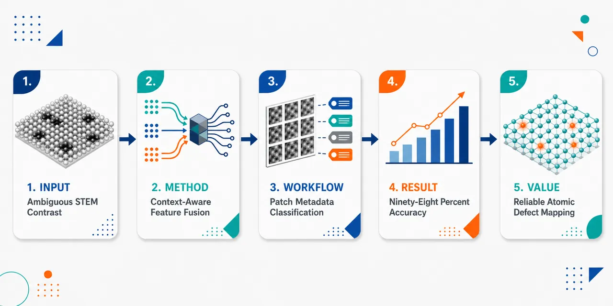
研究问题原子分辨 STEM 图像中，相似局部对比度可能由不同材料组成、缺陷类型、电子束能量或探测器几何共同产生，导致仅凭图像 patch 进行缺陷分类成为“多种物理情景映射到同一图像”的病态问题；核心问题是如何让模型在跨材料、跨成像条件下可靠区分 X₂、单空位、双空位、金属位和掺杂位。创新方法提出上下文感知深度学习框架，把局部 STEM patch 的 Zernike 对比度特征、位点对称性特征，与化学组成、掺杂元素、电子束能量、HAADF/MAADF 探测器几何组成的 23 维物理上下文向量拼接为 31 维输入；Aha 点是将分类从单纯 f(x)→y 改写为受物理条件约束的 f(x,c)→y，使“看起来一样”的图像在不同上下文中获得不同解释，而不是依赖更复杂网络硬猜。工作流程输入为模拟或实验 STEM 局部原子 patch 及其元数据；先围绕中心原子柱和三个近邻裁剪 patch，提取旋转不变 Zernike 矩形成 6 维对比度向量，再加入 2 维金属/硫族位点对称性标记；同时将 MX₂ 化学式、掺杂元素电子壳层、探测器类型和束能编码为 23 维上下文；三类特征融合成 31 维向量，送入 MLP 或 feature–feature attention 分类器，输出五类原子局部结构标签及概率分布。关键结果无上下文模型准确率停留在约 73.2%，类别簇在特征空间中明显重叠；加入上下文后，简单 MLP 与 attention 模型测试准确率均达到 98.36%–98.71%，后验熵从 0.628 nats 降至平均 0.0375 nats，不确定性降低约 94%；在 Ti、V、Mn、Co 掺杂 WSe₂ 实验 HAADF/MAADF 图像上，模型与专家共识 Cohen’s κ 约 0.988–0.995，接近人类专家一致性。应用价值该研究为自动化原子尺度材料表征提供可泛化、低不确定性、物理一致的 AI 范式，可用于在不同材料、束能和探测器条件下自动识别空位、掺杂和原子位点；它强调显式编码实验与化学上下文，能减少显微图像误判，提升高通量缺陷分析、掺杂材料筛选和实验 STEM 数据解释的可靠性。第一部分：核心概览
该研究提出面向原子分辨 STEM 缺陷分类的上下文感知深度学习框架，将局部图像对比度与化学组成、电子束能量、探测器几何联合建模，把仅由图像推断缺陷类别的病态问题转化为物理约束明确的分类问题。基于约 5500 万模拟 patch、576 个成像上下文、96 种掺杂单层 TMD 体系，模型在模拟数据上达到 98%+ 准确率，并在实验 WSe₂ 多掺杂数据上接近专家一致性，后验熵降低 94%。核心地位在于：强调问题表述与上下文编码比模型复杂度更关键，为电子显微学中的多模态、可泛化、物理一致 AI 提供了范式。
---
第二部分：结构化快速回顾
《Context-Aware Deep Learning for Defect Classification in Atomic-Resolution STEM》（None，）
背景
原子分辨 STEM 缺陷识别长期依赖图像对比度，但相同图像强度可能来自不同材料、缺陷或成像条件。HAADF、MAADF、束能、探测器角度、元素 Z 值共同决定图像信号，因此单纯学习 f(x) → y 容易产生不可消解的歧义。
方法
构建上下文感知框架，将 STEM patch 的 Zernike 矩特征、位点对称性特征与 23 维化学/实验上下文向量拼接成 31 维输入。比较无上下文 MLP、上下文 MLP 与 feature–feature attention 模型，分类对象为 X₂、单空位、双空位、金属位、掺杂位五类。
结果
无上下文模型训练/测试准确率约 73.2%；加入上下文后，各模型测试准确率达到 98.36%–98.71%。后验熵从 0.628 nats 降至平均 0.0375 nats，信息增益约 94%。实验数据上 Cohen’s κ 约 0.988–0.995，接近专家共识。
讨论
性能提升主要来自上下文条件化，而非更复杂网络结构。简单 MLP 与 attention 模型在加入上下文后表现接近，说明正确的物理变量输入能显著压缩假设空间。attention 图进一步显示模型会全局关注关键上下文特征。
局限
训练主体为理想化局部结构的 multislice 模拟数据，仍存在模拟—实验域差距。真实样品中的局部弛豫、厚度变化、污染、漂移、复杂缺陷组合未被完全覆盖。实验验证集中在 WSe₂ 多掺杂体系，外推到更复杂材料仍需更多实测数据。
结论
显式纳入化学与实验上下文，可将 STEM 缺陷分类从图像歧义问题转化为物理可约束问题，实现高准确率、低不确定性、较好实验迁移和可解释特征关注，为自动化材料表征中的多模态 AI 奠定基础。
---
第三部分：逐章节冷凝解析
Abstract
Context resolves image-only ambiguity
图像对比度单独不足以唯一决定缺陷类型，因为材料组成与成像条件会共同塑造 STEM 信号。摘要明确指出，传统电子显微 AI 多数只依赖图像强度，忽略决定图像生成机制的上下文变量：*"most applications in electron microscopy rely solely on image contrast, overlooking the chemical and experimental context that shapes those images."* 这导致缺陷分类具有内在歧义，尤其当不同材料或成像参数产生相似对比度时，单图像分类无法保证物理唯一性：*"similar contrasts can arise from different materials or imaging conditions."*
A multimodal context-aware framework
核心方法是将图像来源的 contrast 特征与元数据上下文共同输入模型，元数据包括composition、beam energy、detector geometry。摘要将框架定义为：*"a context-aware learning framework that integrates image-derived contrast with metadata describing composition, beam energy, and detector geometry."* 该设计不是单纯增加网络层数，而是改变学习任务的条件变量，使模型在已知物理上下文下解释图像信号。
Massive simulated dataset across chemically diverse TMDs
数据规模极大，覆盖 约 5500 万 simulated patches、576 simulated cases、96 doped monolayer transition-metal dichalcogenides。摘要给出关键规模：*"~55 million simulated patches spanning 576 simulated cases across 96 doped monolayer transition-metal dichalcogenides."* 这种系统构造的数据集用于检验模型能否跨材料、跨束能、跨探测器设置泛化。
Ill-posed classification becomes physically grounded
显式条件化使缺陷分类从ill-posed image-only task转化为well-posed, physically grounded problem。摘要直接给出结论：*"conditioning on contextual variables transforms defect classification from an ill-posed image-only task into a well-posed, physically grounded problem."* 这里的创新重点在于问题定义，而非单纯模型架构。
High accuracy and strong uncertainty reduction
模拟数据上分类准确率超过 98%，实验数据达到接近人类专家一致性，并且后验熵降低 94%。摘要报告：*"The framework achieves over 98% accuracy on simulations and near-human agreement on experimental data, with a 94% reduction in posterior entropy."* 后验熵降低意味着预测类别概率分布更集中，模型不确定性显著减少。
---
1 Introduction
Materials interpretation requires signal and context
材料表征中，可靠解释不只依赖测量信号，还需要样品化学组成与实验条件。开篇强调：*"reliable interpretation of instrumental data depends not only on measured signals but also on contextual information about the sample’s chemical composition and experimental conditions."* 这为后续上下文感知学习提供物理和认识论基础。
STEM modalities provide complementary atomic-scale information
不同 STEM 模态具有互补功能。HAADF 通过 Z-contrast 显示原子结构，重元素更亮：*"High-angle annular dark-field (HAADF) imaging uses Z-contrast to visualize atomic structures, where heavier elements appear brighter."* ABF 更适合轻元素，例如氢和氧：*"annular bright-field (ABF) imaging is more effective for detecting lighter elements, such as hydrogen and oxygen."* EELS/EDS 提供化学组成、键合环境和氧化态信息；4D-STEM 可研究应变、晶相和对称性。
Current AI microscopy remains mostly single-modality
尽管实验显微学具有多模态特征，AI 应用仍主要集中在单模态任务，例如原子分辨图像缺陷分类或 4D-STEM 流形学习。关键批评是：*"most artificial intelligence (AI) applications in electron microscopy remain focused on single-modality tasks."* 这种窄化处理与人类显微学家综合多源信息的方式不一致：*"human microscopists... synthesize information across multiple modalities when analyzing and interpreting data."*
Neglecting context makes inference ill-posed
无上下文推断可能在数学上变成病态问题，因为不同物理条件能生成相似观测。形式化表达为单模态模型学习 f(x) → y，其中 x 是图像对比度，y 是标签：*"single-modality models attempt to learn an ambiguous mapping f(x) → y."* 加入辅助变量 c 后，任务变为 f(x|c) → y：*"By conditioning on auxiliary information c—such as chemical composition, beam energy, or detector configuration—the task becomes learning f(x|c) → y."*
Ambiguity is a general scientific AI problem
这种歧义不仅存在于电子显微学，也存在于医学影像、天气预测和自动驾驶。三个类比被列出：*"medical diagnosis from X-rays without patient history, weather prediction from satellite images without atmospheric profiles, and autonomous driving from cameras without LiDAR."* 共同逻辑是：辅助信息限制可能解空间，提升推断可识别性：*"Conditioning on auxiliary information constrains the solution space."*
Monolayer defect classification is an ideal test case
单层材料缺陷分类适合作为测试场景，因为单层材料维度降低，单个原子柱可直接被 STEM 观察；同时缺陷结构、类型与分布决定局域材料性质。原文指出：*"Atomic defect classification in monolayer materials provides a natural test case for this principle."* 单层 TMD 中，缺陷对电子、光学与催化性质通常具有显著影响。
Same contrast can arise from different materials or detectors
具体物理例子揭示图像对比度歧义：在 80 keV 下，单层 WTe₂ 与 NbSe₂ 的 HAADF 模拟图像几乎相同；在 TaSe₂ 中，Ta 与 Se₂ 原子柱亮度在 HAADF 与 MAADF 模式下会反转。原文给出：*"simulated HAADF images of monolayer WTe2 and NbSe2 show nearly identical contrast at 80 keV"*，以及 *"the apparent brightness of Ta and Se2 columns in monolayer TaSe2 reverses between HAADF and medium-angle annular dark-field (MAADF) modes."*
Context-aware learning aims for cross-material generalization
目标是建立通用框架，在训练与推理时共同使用图像和上下文元数据。核心陈述为：*"we establish a general framework for context-aware learning in electron microscopy, in which both image contrast and contextual metadata are jointly used during model training and inference."* 该框架强调contextual grounding，使模型跨材料和成像设置泛化，同时降低后验熵、提高信息增益与解释性。
---
2 A Framework for Context-Aware Defect Classification
Conventional supervised models learn under implicit fixed context
传统监督模型只接收图像输入，学习数据集 𝒳 到标签 𝒴 的映射；实验上下文通常固定且隐式，包括材料、束能、探测器配置。原文指出：*"the mapping between image dataset 𝒳 and defect label 𝒴 is learned under a fixed and often implicit experimental context."* 这种模型可以在内部测试集表现一致，却难以迁移：*"Such models achieve internal consistency but do not transfer reliably across different imaging conditions or materials."*
Context-aware models explicitly condition fθ(x|c)
上下文感知方法将图像数据和元数据同时作为输入，学习 fθ(x|c)，其中 θ 是可训练参数。原文定义：*"both image data and contextual metadata are provided as inputs to the learned model fθ(x|c)."* 这种条件化使图像对比度到缺陷身份的映射更符合物理条件：*"the mapping from image contrast to defect identity becomes physically grounded and generalizable across materials and imaging setups."*
The learning pipeline contains encoding, fusion, and classification
总体框架有三个阶段：encoding、fusion、classification。原文概括：*"The framework consists of three key stages: encoding, fusion, and classification."* 图像编码器提取空间对比特征，上下文编码器把化学和实验描述符转成数值嵌入，融合后输入分类器，例如 MLP 或 transformer。
Encoders handle heterogeneous data types
上下文信息和图像数据本质不同，必须通过编码器转为可融合的 latent representation。原文说明：*"Encoders are essential because of the heterogeneous nature of the inputs."* 样品化学式、束能、探测器几何不同于二维空间图像，因此不能直接与像素矩阵混合。
Pre-designed physical features improve interpretability
端到端训练虽然常见，但 latent vectors 通常难解释且需要大量数据：*"end-to-end training of encoders and classifiers is common, it often yields latent vectors that are hard to interpret and require large datasets."* 对已经有明确定义的科学变量，预设特征足够有效：*"For scientific variables that are already well defined and physically interpretable, pre-designed features often suffice."* 因此使用预定义化学和实验编码以增强解释性、减少可训练参数、降低数据需求。
Context integration improves accuracy and entropy across architectures
无论是 MLP 还是 attention 模型，只要上下文正确整合，都能获得高准确率、低后验熵和高信息增益。原文总结：*"combining these encoders with multiple supervised architectures, including MLP and attention models, yields high accuracy, lower posterior entropy, and higher information gain once contextual information is properly integrated."* 这直接支持“上下文编码比架构复杂性更关键”的结论。
---
3 Contextual and Local Image Patch Encoding
MX₂ + D systems define the model material platform
模型体系选择为带替位掺杂的单层过渡金属二硫族化物 MX₂ + D。核心问题是：在图像对比度不足时，区分材料需要哪些最小上下文信息。原文提出：*"What minimal contextual information is needed to distinguish materials when image contrast alone is insufficient?"*
Multislice simulation metadata define the essential fingerprint
用于复现实验 STEM 图像的 multislice simulation 元数据被视为必要上下文指纹。原文给出原则：*"the metadata required by multislice simulations to reproduce experimental STEM images defines this essential fingerprint."* 对 MX₂ + D，这个指纹包含四部分：MX₂ chemical formula、dopant identity、detector configuration、electron-beam energy。
Context vector has 23 dimensions
上下文描述符被编码为一个 23 维 context vector：*"These descriptors are encoded into a single 23-dimensional context vector."* 其中化学指纹占 18 维，探测器类型占 2 维，电子束能量占 3 维。
Chemical encoding uses normalized electron shell configuration
以 Cr 掺杂 WSe₂ 为例，化学指纹 WSe₂ + Cr 用长度 18 的向量表示，由 W、Se、Cr 三个长度 6 的归一化电子壳层配置组成。原文给出 W 的具体配置：*"the configuration for W is denoted as 2, 8, 18, 32, 18, 8 and normalized by its atomic number, yielding 0.027, 0.108, 0.243, 0.432, 0.108, 0.027."* 这种编码把元素身份转成具有物理含义的连续数值特征。
Detector and beam energy are one-hot-like vectors
探测器类型 HAADF / MAADF 编码为 2 元素向量：*"Detector types—HAADF and MAADF—are represented by a 2-element vector."* 电子束能量 60 keV、80 keV、100 keV 编码为 3 元素向量：*"Electron beam energies (60 keV, 80 keV, 100 keV) are encoded as a 3-element vector."*
Local patches avoid petabyte-scale full-field simulations
图像编码器使用小型局部 patch，而非完整视野图像。原因是全场 multislice 模拟在方向、尺度、噪声、缺陷密度充分采样时计算和存储不可承受：*"Full-field multislice simulations are computationally impractical and would require petabyte-scale storage."* 局部 patch 策略避免组合爆炸，使训练流程高效可扩展：*"Restricting the input to local patches avoids this combinatorial explosion and keeps the training pipeline efficient and scalable."*
Zernike encoding reduces data requirement by six orders of magnitude
patch 策略结合 Zernike encoding，数据需求降低 六个数量级：*"Combining this patch-based strategy with Zernike encoding reduces data requirements by six orders of magnitude."* Zernike 描述符可构造成旋转不变形式，从而减少方向增强需求：*"The Zernike descriptors can be reformulated to be rotationally invariant."*
Patch-based design mitigates class imbalance
全视野 STEM 图像中点缺陷只占少数，容易导致学习偏置。局部 patch 可以主动围绕缺陷位和基体原子采样，保证类别均衡。原文指出：*"point defects often make up only a small fraction in the image, leading to biased learning."* 解决方案是：*"simulating patches centered on both defect sites and pristine matrix atoms, ensuring a well-balanced representation of all atomic species."*
Zernike contrast vector has 6 dimensions
每个 patch 以一个中心原子柱和三个近邻原子柱为中心提取特征。计算旋转不变 Zernike moments 后，仅保留 azimuthal index m = 0 且 radial index n ≤ 10 的项，得到 6 维特征向量。原文给出：*"keep only those with azimuthal index m = 0 and radial index n ≤ 10, yielding a 6-dimensional feature vector."*
Site-symmetry descriptor sharpens class separation
噪声会模糊不同原子种类的强度边界，因此加入 2 维 site-symmetry descriptor，标记 patch 属于金属中心位还是硫族中心位。原文解释：*"we add a two-dimensional site-symmetry descriptor that identifies the nominal sublattice of each patch."* 理想 1H MX₂ 中，金属中心局部对称性为 D₃h，硫族中心局部对称性为 C₃v。
Complete feature vector has 31 dimensions
最终将 23 维上下文向量、6 维 Zernike 特征、2 维位点对称性特征拼接，形成 31 维输入。原文总结：*"The combined context and contrast features yield a fixed 31-dimensional representation for downstream model training."*
---
4 Dataset Preparation
Dataset covers 1H monolayer TMDs with transition-metal dopants
数据集由 1H 相单层 MX₂ 与多种过渡金属掺杂组成，用于评估上下文变量对跨材料、跨成像条件泛化的影响。原文描述：*"We curated an extensive dataset of 1H-phase monolayer transition-metal dichalcogenides (MX2) doped with a variety of transition-metal species (D)."*
13 experimentally realized hosts and 10 dopants yield 96 combinations
从 Materials Project 中筛选出 13 种已实验实现的 1H 单层 TMD，再选取 10 种候选掺杂元素，组合得到 96 个唯一 MX₂ + D 体系。原文给出：*"identified 13 experimentally realized 1H monolayer transition metal dichalcogenides"*，以及 *"selected 10 candidate dopants, resulting in 96 unique MX2 +D combinations."*
Low-contrast host–dopant pairs are excluded
如果宿主金属和掺杂原子处在周期表同一行，原子序数接近，Z-contrast 难以区分，因此被排除。具体例子是 MoS₂ 中 Nb 掺杂：Nb 的 Z = 41，Mo 的 Z = 42，暗场 STEM 中几乎不可分辨。原文说明：*"Nb (Z = 41) in MoS2 (Z = 42 for Mo) would be nearly indistinguishable in a dark-field STEM image especially under noisy conditions."*
Five local atomic classes are defined
每个 MX₂ + D 体系定义五类中心原子柱局部结构：X₂、VacX、VacX2、M、D，标签为 0–4。原文列出：*"dichalcogen center (X2), single X vacancy (VacX), double X vacancy (VacX2), metal center (M), and dopant center (D), assigned class labels 0 through 4 respectively."*
34 unique local environments per system
在每个类别内部固定中心原子柱，同时系统改变邻居，得到 34 个唯一局部环境。原文给出：*"Within each class, we hold the central column fixed and systematically vary its neighbors, yielding 34 unique local environments."* 每个局部排列生成 CIF 文件供 multislice simulation 使用。
Idealized motifs isolate chemistry and imaging context
局部结构采用理想晶格位置，以形成可控 benchmark，分离化学身份和成像条件对 STEM 对比度的影响。原文写明：*"We use idealized local motifs with fixed lattice positions to provide a controlled benchmark."* 真实结构偏离，包括局部弛豫，通过实验验证检验鲁棒性：*"robustness to real structural deviations, including local relaxations, is assessed through experimental validation."*
576 contextual cases arise from materials, energies, and detectors
对每个 MX₂ + D 系统，在 3 种电子束能量和 2 种探测器几何下模拟，覆盖一系列成像条件。总上下文案例数为 576。原文给出：*"simulations are conducted at three electron-beam energies and two detector geometries... resulting in a total of 576 distinct contextual cases."*
Noise and distortion emulate experimental variation
每张图进一步加入与探针尺寸相关的 Gaussian blur、Poisson noise、scan distortion。原文说明：*"each image is further augmented with probe-size–dependent Gaussian blur, Poisson noise, and scan distortion."* 这些扰动旨在减少纯模拟图与实验图之间的分布差异。
Patch extraction includes central column and three nearest neighbors
按照固定流程裁剪模拟图像，确保 patch 包含中心原子柱及其三个最近邻。原文表述：*"ensuring that it includes the central atomic column and its three nearest neighbors."* 随后每个 patch 转为 contrast vector，元数据转为 context vector。
Training pairs are X and Y with five labels
拼接后的特征组成 X，五类结构标签组成 Y ∈ 0,1,2,3,4。原文给出：*"We concatenate these vectors into our feature set X, while the five structure labels... form the targets Y ∈ 0,1,2,3,4."*
Final dataset is 6.8 GB rather than petabyte-scale
最终数据集约 6.8 GB，而如果为所有 MX₂ + D 配置训练 image-to-image translation 模型，数据量约 6 PB。原文对比：*"The final dataset occupies approximately 6.8 gigabytes"*，以及 *"would require a dataset on the order of 6 petabytes."* 这凸显 patch-based 特征工程的效率。
Zernike representation helps mitigate domain gap
尽管加入多种噪声，模拟—实验域差距仍存在。Zernike 矩因对噪声和成像像差鲁棒，有助于缓解该问题。原文指出：*"a domain gap still exists"*，并补充：*"Zernike moments are inherently robust to noise and imaging aberrations."*
---
5 Model Training
Six classifiers are trained
共训练 六个分类器：三个 attention 模型 attn-4k、attn-200k、attn-400k，batch size 分别为 4,096、204,800、409,600；三个 MLP 基线为 MLP-NoContext、MLP-Simple、MLP-Deep。原文给出：*"Three attention-based models... were trained with batch sizes of 4,096, 204,800, and 409,600."* 以及 *"Three MLP baselines... MLP-NoContext... MLP-Simple... and MLP-Deep."*
Only MLP-NoContext lacks contextual information
除 MLP-NoContext 外，其余模型使用相同上下文特征并执行相同五分类任务。原文说明：*"Except for MLP-NoContext, all models were trained on the same dataset with identical contextual features and evaluated on the same five-class classification task."* 这使无上下文与有上下文的性能差异可直接解释为上下文贡献。
Attention model uses 31-dimensional input
attention 架构输入为 31 维，由上下文和对比度编码特征构成。原文表述：*"takes a 31-dimensional input consisting of encoded context and contrast features."* 输入先经过 batch normalization，再经过三层相同 attention layer。
Attention layers use batch normalization rather than layer normalization
不同于原始 Transformer 使用 layer normalization，该模型采用 batch normalization，原因是输入是独立特征向量而不是相关 token 序列。原文指出：*"Unlike the original Transformer, which employs layer normalization, we adopt batch normalization, as our inputs consist of independent feature vectors rather than correlated token sequences."*
Feature–feature attention replaces token–token attention
模型关注的是特征维度之间的相关性，而非样本或 token 序列之间的关系。原文明确：*"we implemented feature–feature attention instead of the conventional token–token mechanism."* 输入 X ∈ ℝⁿˣᵈᵐ 被投影为 Q、K、V，计算 QᵀK ∈ ℝᵈᵐˣᵈᵐ，编码列特征间两两相关性：*"QTK ∈ ℝdm×dm encodes pairwise correlations between column features."*
Attention equation is scaled dot-product over feature correlations
attention 计算为
Attention(Q,K,V) = V softmax(QᵀK / √dm)。原文给出：*"Scaled dot-product attention is then computed as Attention(Q,K,V)=V softmax(QTK/√dm)."* 该形式使每个特征可根据全局特征相关性重新加权。
MLP-Simple and MLP-Deep define architecture baselines
MLP-Simple 由三组 linear–ReLU–dropout 层组成，隐藏维度依次为 64、32、16、8，最终 linear + softmax 输出五类。原文说明：*"MLP-Simple consists of three sequential blocks of linear–ReLU–dropout layers, with hidden dimensions 64, 32, 16, and 8."* MLP-Deep 是更深版本，在分类头前包含 12 个类似 block：*"MLP-Deep is a deeper variant with 12 such blocks before the classification head."*
No-context model saturates at about 73% accuracy
MLP-NoContext 的训练和测试准确率均停留在约 73%，显示图像特征空间存在显著重叠。原文报告：*"MLP-NoContext plateaued at both training and test accuracies of approximately 73%."* UMAP 可视化进一步显示输入特征与 logits 难以分离。
Context-aware models reach 98.36–98.71% test accuracy
加入上下文后，各模型测试准确率稳定在 98.36%–98.71%。具体数值为：attn-4k 98.71%、attn-200k 98.53%、attn-400k 98.36%、MLP-Simple 98.59%、MLP-Deep 98.59%。原文给出：*"test accuracies ranging from 98.36% to 98.71%."*
UMAP shows well-separated learned class clusters
上下文模型的 learned feature spaces 呈现清晰类别分离，而无上下文模型存在重叠。原文描述：*"context-aware models... produce well-separated class clusters with minimal ambiguity, in contrast to the no-context baseline."* 这从几何结构上支持上下文变量压缩歧义空间。
Posterior entropy drops from 0.628 to 0.0375 nats
后验熵量化上下文带来的信息增益。无上下文模型熵为 0.628 nats；上下文模型平均熵为 0.0375 nats。原文报告：*"The context-free model... yields an entropy of 0.628 nats, whereas context-aware models exhibit an average entropy of 0.0375 nats."* 信息增益约 94%：*"This corresponds to an information gain of approximately 94%."*
Context-aware entropy is only 2.3% of five-class maximum
五分类理论最大熵为 1.61 nats，上下文模型只达到其 2.3%。原文指出：*"For a five-class problem, the theoretical maximum entropy is 1.61 nats; context-aware models operate at only 2.3% of this maximum."* 这表示类别概率高度集中，歧义大幅消除。
Calibration remains reliable
使用 Expected Calibration Error, ECE 评估校准。上下文和无上下文模型 ECE 都较低，说明置信度估计可靠。原文说明：*"Both context-free and context-aware models exhibit low ECE values, indicating reliable confidence estimates."* 上下文不仅提升准确率，还使置信度分布向接近 1.0 的高确定性集中：*"shifts the confidence distribution toward high certainty."*
Attention maps reveal global contextual modulation
attention 图显示第三层存在明显垂直条纹，表示某些 Key 特征被几乎所有 Query 特征关注。原文描述：*"The third-layer attention maps display pronounced vertical stripes."* 这些全局影响特征作为高级上下文调制局部对比度解释：*"specific Key features are attended to by nearly all Query features"*，并且 *"contextual information acts as a shared reference for feature interactions."*
---
6 Model Performance on Experimental Data
Experimental validation uses doped WSe₂ HAADF and MAADF images
实验数据包括 Ti、V、Mn、Co 掺杂 WSe₂ 的 HAADF 和 MAADF STEM 图像。原文给出：*"we collected HAADF and MAADF STEM images of WSe2 doped with Ti, V, Mn and Co respectively."* 这检验模型从模拟到真实显微图像的迁移能力。
Three experts independently label image patches
每个图像 patch 由三名专家独立标注。五类标签为 W atom、Se₂ atoms、Se single-vacancy、Se double-vacancy、dopant。原文说明：*"three experts independently label each image patch"*，以及 *"Each atomic site... was assigned one of five possible class labels."* 最终参考标签由多数投票获得：*"Final reference labels were determined via majority voting across annotators."*
Cohen’s κ measures chance-corrected agreement
模型与专家共识的一致性使用 Cohen’s κ，该统计量校正随机一致性。原文说明：*"Cohen’s κ, a statistic that corrects for agreement expected by chance."* 因五个标签是无内在顺序的名义类别，因此使用 unweighted κ：*"we used the unweighted version of Cohen’s κ."*
All context-aware models show near-human agreement
Table 1 中，实验 Cohen’s κ 极高。
HAADF：MLP-Simple 0.995，MLP-Deep 0.992，attn-4k 0.988，attn-200k 0.992，attn-400k 0.995。
MAADF：MLP-Simple 0.995，MLP-Deep 0.994，attn-4k 0.993，attn-200k 0.993，attn-400k 0.994。
原文概括：*"Models with κ close to 1 indicate strong alignment with the expert consensus."*
Defect-specific evaluation collapses labels into binary classes
由于缺陷稀少但重要，五分类标签被重构为二分类：defect = classes 1, 2, 4，即 Se 单空位、Se 双空位、掺杂；non-defect = classes 0, 3，即 W 和 Se₂。原文写明：*"defect (classes 1, 2, 4: Se single-vacancy, Se double-vacancy, Ti dopant) and non-defect (classes 0, 3: W and Se2 atoms)."* 这样避免多数正常晶格位点主导指标。
F1 score balances precision and recall
对二分类缺陷任务计算 precision、recall，并合成 F₁ score。原文解释：*"Precision represents the conditional probability that a site predicted as defective by the model was also labeled as defective by the human experts"*；recall 表示专家标记缺陷被模型正确找出的条件概率；F₁ 是二者调和平均：*"the harmonic mean of precision and recall."*
Vacancy detection is consistently strong
单空位和双空位的 F₁ 通常超过 0.85。原文总结：*"F1 scores show strong and consistent performance for single and double vacancies across all models, with values typically above 0.85 for both HAADF and MAADF inputs."* Table 1 中，attn-400k 在 HAADF 双空位上达到 0.987，MAADF 双空位 0.976。
Dopant recognition varies more strongly across models
掺杂类别变化更大。MLP-Simple、MLP-Deep、attn-400k 多数接近或等于 1.0，但 attn-4k 在 HAADF 掺杂识别中显著下降至 0.326。原文指出：*"The dopant class, however, displays greater variability"*，以及 *"attn-4k exhibits a pronounced decrease under HAADF imaging."*
attn-400k gives the most balanced attention-model performance
在 attention 模型中，attn-400k 在缺陷类型和成像模式之间最稳定。Table 1 中 attn-400k 的 F₁ 为：HAADF 单空位 0.901、MAADF 单空位 0.929、HAADF 双空位 0.987、MAADF 双空位 0.976、HAADF 掺杂 0.966、MAADF 掺杂 1.00。原文总结：*"attn-400k provides the most balanced performance across defect types and imaging modes."*
Larger batch sizes improve simulation-to-experiment transfer
所有模型从模拟转移到实验时性能下降，但大 batch 模型下降较小。原文指出：*"All models experience performance degradation when transferred from simulated to experimental images, but the magnitude varies systematically with batch size."* 解释是大 batch 提供更稳定梯度估计，减少对模拟伪影的过拟合：*"larger-batch models exhibit smaller performance drops"*，并且 *"more stable gradient estimates from larger batches may encourage learning of features that are less specific to simulation artifacts."*
---
7 Discussion and Conclusion
Context fundamentally changes the classification problem
化学组成、束能、探测器几何的整合从根本上改变了原子分辨 STEM 缺陷分类。仅有图像对比度时，模型面对 ill-posed learning problem：*"distinct physical scenarios can produce similar image signatures."* 显式上下文条件化将 f(x) → y 转化为 f(x,c) → y，由相关物理条件引导唯一解：*"relevant physical conditions guide the model toward unique solutions."*
Uncertainty reduction quantitatively supports ambiguity collapse
后验熵从 0.628 nats 降至 0.0375 nats，分类不确定性降低 94%。原文给出：*"posterior entropy drops from 0.628 nats... to 0.0375 nats... representing a 94% reduction in classification uncertainty."* 五分类理论最大熵下，上下文模型只占 2.3%：*"operate at only 2.3% of the theoretical maximum entropy."*
Accuracy improves from 73% to over 98%
上下文带来的不确定性降低直接转化为准确率提升：*"classification accuracy improving from 73% to over 98%."* 同时模型保持良好校准，并在实验数据上达到接近人类专家一致性：*"maintain excellent calibration and achieve near-human agreement on experimental data (Cohen’s κ ≈ 0.99)."*
Information encoding matters more than architecture complexity
性能提升并非主要来自复杂架构。简单 MLP 和 attention 模型在上下文输入下表现相近，说明正确问题表述比模型深度或复杂性更关键。原文明确：*"these improvements arise not from architectural sophistication but from how information is encoded and presented to the model."* 以及 *"robust generalization emerges primarily from proper problem formulation rather than model complexity."*
Attention adds interpretability beyond accuracy
虽然 MLP 和 attention 准确率相近，attention 提供额外科学价值：可显示模型强调哪些上下文和 contrast 特征。原文指出：*"the attention architecture offers additional scientific value through interpretability."* 第三层 attention 的垂直条纹表示上下文 key features 被全局关注：*"Third-layer attention maps display pronounced vertical stripes."*
The model learns domain-relevant structure
attention 模式说明模型不是简单记忆统计相关，而是学习到符合物理直觉的层级表示：上下文作为共享参考框架调制局部 contrast 解释。原文总结：*"the model has internalized domain-relevant structure rather than merely memorizing statistical correlations."*
Experimental transfer reveals domain shift but also robustness trends
多掺杂 WSe₂ 实验验证显示，模拟到真实数据存在性能下降，但下降幅度与 batch size 相关。原文指出：*"All models experience performance degradation during this domain shift, but the magnitude varies with training batch size."* 大 batch attention 模型，尤其 attn-400k，表现出更强迁移鲁棒性。
---
第四部分：深度理解与语言支持
1. 术语解析
Ill-posed problem
学术含义：解不唯一、不稳定或对输入扰动极敏感的问题。在这里，同一 STEM 图像 contrast 可能对应多个缺陷/材料/成像条件组合，所以从 x 到 y 的映射不是唯一函数。
语境细微差别：不是说模型训练失败，而是说信息论上缺少必要条件；即使网络更大，也无法从图像本身恢复被省略的物理变量。
Contextual grounding
学术含义：用真实物理上下文约束模型推断，使模型输出与生成图像的实验和化学条件一致。
微妙差别：grounding 不等于普通 metadata 拼接；重点在于元数据能改变图像 contrast 的物理解释。例如同样亮度在 WSe₂ 和 NbSe₂ 中对应的元素/缺陷可能不同。
Posterior entropy
学术含义：分类模型输出概率分布的不确定性。若五类概率接近均匀，熵高；若某一类概率接近 1，熵低。
语境细微差别：准确率只看最终预测是否正确，posterior entropy 衡量模型是否“犹豫”。该研究中从 0.628 nats 到 0.0375 nats 表明上下文显著减少类别歧义。
Feature–feature attention
学术含义：不同于 Transformer 中 token 与 token 之间的 attention，这里 attention 发生在输入特征维度之间，例如束能、探测器、元素壳层特征、Zernike 分量之间。
微妙差别：它不是处理序列语言，而是在学习物理变量之间的相互调制关系。
Domain shift
学术含义：训练数据和测试数据来自不同分布。这里训练主要来自 multislice 模拟，测试包含真实 STEM 图像。
微妙差别：即使模拟加入 Poisson noise、Gaussian blur、scan distortion，真实实验仍可能包含未知像差、污染、局部弛豫、厚度变化和仪器漂移，因此仍存在模拟—实验分布差异。
---
2. 疑难查证
为什么图像相似会导致不可解，而不只是“更难”？
如果两个物理系统在某个成像设置下产生几乎相同的局部强度分布，那么图像 x 中没有足够信息区分它们。此时无论使用 MLP、CNN、Transformer，只要输入仍是同一个 x，模型都只能学习训练集中最常见的统计对应关系。
加入上下文 c 后，输入变成 (x,c)。即使 x 相同，不同 c 会把它们放入不同物理条件中，映射变得可区分。数学上相当于从一个多对一投影恢复为条件化的一对一或近似一对一映射。
为什么 Zernike moments 适合 STEM patch？
Zernike moments 是定义在圆形区域上的正交矩特征，可描述图像的径向和角向结构。原子柱 patch 通常局部近似圆形或具有旋转相关对称性，Zernike 特征能紧凑捕捉强度分布。
保留 m = 0 项会得到旋转不变描述，意味着同一个局部结构旋转后特征不变。这样不需要大量旋转增强，显著降低数据需求。
为什么简单 MLP 和 attention 加上下文后都能达到 98%+？
核心分类边界在加入上下文后已经变得清晰：化学组成、束能、探测器给出了图像 contrast 的解释框架，Zernike 和位点对称性提供局部强度与几何信息。
因此任务不再需要复杂网络从图像中“猜测”隐藏变量。简单 MLP 已足以拟合这个清晰边界。attention 的优势不主要是准确率，而是能显示特征间依赖和模型关注的上下文变量。
---
第五部分：创新评估与关联
1. 创新性判断
从单模态图像分类转向物理上下文条件化
过去电子显微 AI 常将缺陷分类视为图像识别任务，输入主要是像素或图像特征。该研究的关键创新是把缺陷分类重新定义为 f(x|c) → y 或 f(x,c) → y，使材料组成、束能和探测器成为模型推断的必要条件，而不是实验记录中的附属信息。
解决了相似 contrast 下的不可辨识问题
前人模型在固定材料和固定成像条件下可能表现良好，但难以处理跨材料、跨 detector、跨 beam energy 的 contrast 退化或反转。该框架解决的核心问题是：相同或近似相同图像强度可对应不同物理类别。上下文变量把这些类别重新分开，使问题从病态变成物理约束明确。
证明“上下文编码”比“架构复杂度”更关键
过去 2–5 年材料显微 AI 中常见趋势是引入更复杂网络结构，如深层 CNN、Transformer、自监督或生成模型。这里的结果显示：无上下文模型约 73%，有上下文简单 MLP 即可达到 98.59%，attention 最高 98.71%。创新性在于把性能来源定位于信息组织与物理条件化，而不是网络规模。
构建了系统化、跨上下文的大规模模拟 benchmark
数据集覆盖 96 种 MX₂ + D 体系、576 个上下文案例、约 5500 万 patch，并通过 patch + Zernike 将潜在 PB 级数据压缩到约 6.8 GB。这种设计提供了一个可控平台，用于定量研究上下文变量如何影响显微图像 AI 的泛化能力。
将不确定性降低作为核心证据
不仅报告准确率，还通过 posterior entropy 证明上下文带来约 94% 信息增益。这个证据比单一 accuracy 更强，因为它显示模型不只是预测对了，而是类别后验分布真的从模糊变得集中，说明上下文消除了分类歧义。
实验验证连接模拟训练与真实显微数据
在 Ti、V、Mn、Co 掺杂 WSe₂ 的 HAADF/MAADF 实验图像上达到 Cohen’s κ 约 0.99，并对缺陷类 F₁ 进行专门评估。该验证说明框架不只是模拟集上的闭环表现，而具备一定模拟到实验迁移能力，同时揭示 batch size 对 domain shift 鲁棒性的影响。
-
12
📊 含图深析
📄 摘要：面向大尺度原子模拟中势函数训练数据选择、模型不确定性和表达能力问题，提出基于信息匹配的主动学习。不同于只降低参数不确定性的策略，该方法显式考虑待预测材料性质，把训练构型选择与目标物性的信息需求对齐，用于构建定制化原子间势。
💡 亮点：信息匹配主动学习按目标材料性质反向选择势函数训练数据，而非盲目压低全局不确定性。它使原子势从“通用拟合”转向“面向预测任务的定制设计”。
📖 展开分析 + 配图
研究问题如何在钽金属塑性强度预测这种需要超大规模分子动力学、难以直接用 DFT 验证的场景中，不再依赖庞大冗余训练集，而是反向设计只服务于特定强度预测任务的定制原子间势函数，并明确控制目标性质的预测不确定性。创新方法提出基于 information-matching 的主动学习框架：用 Fisher 信息矩阵把“候选原子环境提供的参数信息”和“目标性质所需的参数信息”做矩阵级方向匹配；不盲目降低所有参数不确定性，而只选择能约束目标 QoI 敏感参数方向的最小数据子集。Aha 点是用廉价 indicator properties——晶格常数、内聚能、c11、c12、c44——间接约束昂贵的塑性强度预测。工作流程输入为 3300 万原子 Ta 塑性 MD 快照中抽取的 2000 个多样局域原子环境、EAM 势函数形式和 5 个 indicator properties 的目标不确定性；先计算每个候选中心原子力对 7 个 EAM 主参数的 Fisher 信息矩阵，再计算 indicator properties 的目标信息需求；通过非负权重的 l1 最小化选择少量非零权重环境；生成或读取这些环境的 proxy/DFT ground truth 力数据；用带权损失重新训练 EAM 参数；迭代更新权重与参数，直到收敛；最终输出面向 Ta 强度预测的 bespoke EAM 势函数及 QoI 不确定性。关键结果在 EAM-proxy 和 SNAP-proxy 两个验证场景中，从 2000 个候选局域环境里仅需约 0.5–1.0%，即约 10–20 个关键环境，就能满足 Fisher 信息匹配约束，并达到 5 个 indicator properties 的目标预测精度；结果展示了训练数据可被压缩到极小、信息高度定向的子集，同时揭示最终可靠性仍受 EAM 模型形式误差限制。应用价值为高成本材料性质模拟提供一种“少数据、目标导向、可量化不确定性”的势函数开发路线，可用于塑性强度、缺陷动力学等无法直接进行大规模第一性原理验证的问题；它能减少 ground truth 计算、避免冗余训练、指导实验或计算数据采集精度，并帮助工程模拟在已知不确定性下做可靠性评估。第一部分：核心概览
该研究把information-matching（IM）主动学习推进到金属塑性强度预测这一高成本、多尺度场景，目标不是构建通用势函数，而是反向设计面向特定任务的bespoke interatomic potentials。核心贡献在于：用Fisher information matrix把训练数据选择、参数不确定性与目标性质精度直接耦合，并用廉价的indicator properties间接约束昂贵的塑性强度预测。其领域地位在于连接了最优实验设计、主动学习、势函数开发和材料强度模拟，突出展示了不确定性感知主动学习的潜力与模型误差瓶颈。
---
第二部分：结构化快速回顾
《Inverse design of bespoke interatomic potentials via active learning by information-matching》（None，）
背景
Interatomic potentials（IPs）能把原子模拟扩展到第一性原理方法无法达到的尺度，但预测可靠性强烈依赖训练数据选择、模型表达能力和不确定性量化。传统主动学习多关注降低参数不确定性，而非面向特定材料性质的预测精度。
方法
采用embedded-atom method（EAM）形式构建钽（Ta）势函数，只优化 7 个主参数。通过information-matching（IM）选择最小训练数据子集，使训练数据提供的参数空间信息不少于目标性质所需信息。由于塑性强度直接计算过于昂贵，采用晶格常数、内聚能和 3 个弹性常数作为低成本indicator properties。
结果
在 proxy ground truth 测试中，从 2,000 个候选局域原子环境中，仅约 0.5–1.0% 的环境即可满足信息约束，并达到 5 个 indicator properties 的目标预测精度。proxy 数据分别来自已有 EAM 和 SNAP 钽势函数，用于验证 ALIM 工作流。
讨论
IM 的优势在于把训练集压缩为任务相关的最小信息集合，并避免对全部参数进行无差别过度约束。预测不确定性可在无法直接 DFT 验证塑性强度时作为误差代理，但其有效性依赖模型误差是否可控。
局限
主要限制来自model error：即使参数不确定性被精确约束，EAM 函数形式仍可能无法表达真实物理。indicator properties 与 BCC Ta 塑性强度之间的协方差未知，目标不确定性只能用 OpenKIM 中 Ta 势函数集成预测方差近似。
结论
ALIM 能以极少训练数据构建面向特定目标性质的势函数，并为复杂材料性质预测提供不确定性约束框架；但对塑性强度这类集体缺陷动力学性质，模型形式误差仍是决定可靠性的关键瓶颈。
---
第三部分：逐章节冷凝解析
> 可解析内容止于 Section 3.1 中未完成句子 *“Interestingly, the optimal envi…”*；后续章节、图表完整结果、讨论和结论未包含在给定文本中，因此不能进行证据化扩展。
---
Abstract
Task-specific interatomic potentials target large-scale atomistic simulations
Interatomic potentials（IPs）被定位为突破第一性原理计算尺度限制的工具，但可靠性取决于训练数据、模型表达能力和不确定性量化。摘要明确指出：*"Interatomic potentials (IPs) enable large-scale atomistic simulations beyond the reach of first-principles methods, but their predictive reliability depends critically on the selection of training data, quantified uncertainty, and model expressiveness."* 这一表述把 IP 的核心问题从单纯拟合精度提升到数据选择—不确定性—模型能力三者共同决定的可靠性问题。
Information-matching shifts active learning from parameter uncertainty to QoI uncertainty
传统active learning（AL）多以降低参数不确定性为目标，但 IM 直接面向目标性质的预测精度。摘要给出核心区别：*"most strategies reduce parameter uncertainty without explicitly accounting for the specific material properties being predicted."* IM 的定义是训练数据必须提供足够参数空间信息，以达到给定 QoI 不确定性目标：*"requiring that the selected training data provide at least as much parameter space information as needed to achieve prescribed uncertainty targets for selected quantities of interest (QoIs)."*
Plastic strength prediction is addressed indirectly through cheaper correlated properties
塑性强度模拟代价极高，因此采用间接策略，通过廉价的中间性质约束势函数。摘要明确：*"Due to the high computational cost of simulating plastic strength, we employ an indirect IM strategy that targets inexpensive intermediate QoIs that correlate with strength."* 这里的创新点不是直接优化强度，而是通过与强度相关的低成本性质进行information proxy design。
Minimal data can constrain parameters, but model error remains limiting
IM 能用少量训练数据实现精确参数约束，并改善 indicator QoIs 与塑性强度预测精度：*"The IM method enables precise parameter constraints with minimal training data, yielding precise predictions for both the intermediate QoIs and plastic strength."* 但摘要同时强调模型误差是核心瓶颈：*"Yet, model error remains a key limitation, and a post hoc uncertainty inflation correction provides a viable means to mitigate this limitation."*
---
1 Introduction
Atomistic simulations expose mechanisms inaccessible to experiments
原子模拟被用于解析缺陷形成、塑性变形和相变等机制，尤其适用于实验难以达到的长度和时间尺度。原文表述为：*"Atomistic simulations provide a powerful framework for probing the fundamental mechanisms that govern material behavior."* 具体对象包括：*"defect formation, plastic deformation, and phase transitions"*，这些过程在相应尺度上 *"are difficult to access experimentally at the relevant length and time scales."*
Interatomic potentials bridge DFT accuracy and large-scale simulation feasibility
DFT 准确但昂贵，IP 则提供可模拟百万原子体系的替代方案。原文指出：*"first-principles approaches, such as density functional theory (DFT), offer high accuracy, their computational cost is prohibitive for the large systems and long timescales required to study the mechanical response of materials."* 相比之下，IP 能 *"enable simulations of millions of atoms and bridging the gap toward experimentally relevant conditions."*
IP development faces a transferability–accuracy–efficiency trilemma
势函数开发必须在三个相互冲突目标间取舍：transferability、accuracy 和 computational efficiency。原文直接称为 *"the trilemma of mutually conflicting requirements"*，并列出：*"model transferability across different material systems and properties of interest"*、*"model accuracy"*、*"model computational efficiency"*。
Bespoke IPs sacrifice broad transferability for task-specific accuracy and efficiency
研究路线明确选择bespoke / à la carte IPs，而不是 universal 或 foundation IPs。原文对比指出：*"One approach that has gained popularity in recent years is the construction of universal or foundation IPs designed to work across a wide range of materials and conditions"*；另一种路线则是：*"generate bespoke or à la carte IPs, that sacrifice broad transferability in favor of greater accuracy and efficiency for a specific targeted application."*
Large arbitrary datasets can be expensive, redundant, and biased
训练数据质量和多样性决定 IP 预测性能；简单堆叠大规模 GT 数据既昂贵又可能冗余。原文强调：*"predictive accuracy of an IP is strongly dependent on the quality and diversity of the training data."* 但 *"a large ground truth (GT) training dataset"* 会因 GT 获取成本而昂贵，并且 *"high degrees of redundancy in arbitrary large datasets often lead to training bias and less accurate IPs."*
Active learning reduces expensive GT calculations by selecting informative configurations
AL 被用于识别最具信息量的数据点，减少 GT 计算量。原文定义为：*"Active learning (AL) addresses this challenge by iteratively identifying and selecting the most informative data points for training."* 在原子模拟中常与 on-the-fly learning 结合：*"GT data are selected and generated dynamically during simulations."* 其效果是：*"the number of GT calculations can be reduced substantially."*
Prediction uncertainty differs from prediction error and can guide reliability
Error 衡量与 GT 的偏差，uncertainty 衡量模型对预测的置信度。原文清晰区分：*"While error measures accuracy with respect to GT, uncertainty characterizes the model’s confidence in its predictions."* 对塑性强度等无法直接 GT 验证的问题，预测不确定性可作为误差代理：*"prediction uncertainty has been suggested to serve as a practical proxy for prediction error."*
Known uncertainty can be more useful than hidden uncertainty
在工程决策中，可量化的大不确定性优于未知不确定性。原文指出：*"having a large but known prediction uncertainty may be more useful than having unrecognized or unknown uncertainty"*，因为它能支持 *"informed assessment of model reliability"* 和 *"uncertainty-aware decision making."*
Information-matching avoids indiscriminate parameter uncertainty reduction
IM 的核心不是无差别降低所有参数不确定性，而是约束与目标 QoI 相关的参数方向。原文说：*"rather than aiming to minimize parameter uncertainty indiscriminately and irrespective of the IP’s intended use, IM selects training data by requiring that the information supplied by the data is sufficient to achieve prescribed uncertainty targets for specific quantities of interest."* 因此 IM 能 *"avoid unnecessary overspecification of the IP parameters."*
Plastic strength is far more demanding than simple material properties
过去 IM 已用于较简单的材料 QoIs，可通过 DFT 验证；当前目标是金属塑性强度。原文指出强度来自扩展缺陷集体动力学：*"plastic strength emerges from the collective dynamics of extended defects such as dislocations and deformation twins."* 需要极端规模 MD：*"on the order of 10⁸ atoms and 10⁶ integration time steps"*，远超 DFT 直接验证能力。
Indirect IM tests whether indicator properties can constrain strength predictions
面对无法直接验证强度的问题，研究采用低成本 indicator properties。原文提出核心问题：*"whether constraining IP model parameters through these indicator properties delivers sufficiently confident predictions not only for the indicator properties themselves, but also for the ultimate target QoI, strength."* 这也是整项工作的关键科学假设。
---
2 Methods
Goal is bespoke EAM potentials for Ta plastic strength
目标材料为钽（Ta），目标性质为plastic strength。方法部分开宗明义：*"Our goal in this work is to develop bespoke IPs optimized for predicting plastic strength of the metal tantalum (Ta) using an AL framework based on the IM method."*
IM workflow requires three ingredients
ALIM 工作流从三个定义开始：IP 函数形式、候选数据池、目标 QoIs 及不确定性边界。原文列为：*"three key ingredients: (1) an IP functional form, (2) a pool of candidate data points to be subsampled for IP training, and (3) one or more target QoIs along with their desired uncertainty bounds."*
Iterative ALIM seeks minimal training data under uncertainty constraints
目标不是拟合全部数据，而是找最小训练集以满足 QoI 预测不确定性要求。原文总结为：*"Using an iterative AL workflow with IM, we determine a minimal set of training data required to sufficiently constrain the IP parameters and to ensure that prediction uncertainties of the target QoIs remain within the prescribed bounds."*
---
2.1 EAM potential
EAM is selected for plasticity relevance, speed, and low parameter count
采用 Zhou 等人的 EAM potential 作为 trial IP。选择原因有三点：EAM 在金属塑性 MD 中成功、计算效率高、参数少。原文列出：*"the demonstrated success of EAM potentials in molecular dynamics (MD) simulations of plastic deformation in metals"*，*"the computational efficiency of EAM potentials"*，以及 *"the relatively small number of fitting parameters—specifically, 20 parameters in the EAM implementation proposed by Zhou et al."*
Total EAM energy combines pair interaction and embedding energy
EAM 总能量为成对势能与嵌入能之和：
[
E=sumᵢ,ⱼ₌₁,ⱼ>ᵢNφ(rᵢⱼ)+sumᵢ₌₁NF(h̊oᵢ₎
]
原文解释：*"(φ(rᵢⱼ)) is the energy of interaction between a pair of atoms"*，而 *"(F(h̊oᵢ₎) is the energy produced by embedding atom (i) into the local electron density."*
Local electron density is a sum over neighbor contributions
电子密度定义为：
[
h̊oᵢ₌sumⱼ₌₁,ⱼ≠ ᵢNf(rᵢⱼ)
]
其中 *"(f(rᵢⱼ)) represents the contribution to the electron density from atom (j) at distance (rᵢⱼ)."* 这体现 EAM 对金属多体环境的近似：局域电子密度由邻居原子叠加贡献。
Pair potential contains repulsive and attractive exponential terms
Zhou 形式的 pair potential 为双指数形式，第一项排斥、第二项吸引。原文明确：*"The first term represents pairwise repulsion and the second term accounts for pairwise attraction."* 参数包括 (A,α,rₑ,κ,B,β,łambda)，并带有高次 ((ḑot)²⁰) 截断调节。
Embedding function is piecewise and constrained by density regimes
嵌入函数 (F(h̊o)) 分为三段：低密度 (h̊o<h̊oₙ)、中密度 (h̊oₙłe h̊o<h̊o₀)、高密度 (h̊o₀łeh̊o)。具体阈值为 (h̊oₙ₌₀.85h̊oₑ)，(h̊o₀₌₁.15h̊oₑ)。原文给出完整分段式，并说明采用 Zhou et al. 形式：*"Here we adopt the formulation proposed by Zhou et al."*
Only seven master parameters are varied
虽然 EAM 形式总共含 20 个数值参数，优化中只允许 7 个 master parameters 变化：(rₑ,β,A,B,κ,η,Fₑ)。原文精确说明：*"we allow variations only in a subset of seven parameters: (rₑ), (β), (A), (B), (κ), (η), and (Fₑ)."*
Gauge invariance and phase-stability considerations fix additional parameters
(h̊oₛ,α,łambda) 被固定以处理 EAM gauge invariance，(h̊oₑ) 被固定，因为其变化对塑性强度无明显影响或导致不相关伪相变。原文说明：*"Three additional parameters ((h̊oₛ), (α), (łambda)) are fixed to account for gauge invariance in the EAM formalism"*；另一个参数 *"(h̊oₑ) is fixed because its variation either does not measurably affect simulated plastic strength or induces spurious phase transformations irrelevant to this study."*
Remaining parameters enforce smoothness up to second derivatives
除 7 个主参数和固定参数外，其余参数随主参数调整，以保证函数连续性。原文表述：*"the remaining parameters are adjusted in response to any variations of the seven master parameters to ensure continuity up to the second derivatives of the pair, embedding, and electron density functions."* 这对 MD 稳定性关键，因为力和刚度依赖能量一阶、二阶导数。
Log-parameterization improves conditioning and enforces positivity
7 个主参数均需非负，分别对应距离尺度、衰减率、能量尺度、截断参数和高密度嵌入函数指数。原文列举：*"(rₑ) is a distance scaling factor"*，*"(β) defines the decay rate"*，*"(A), (B), and (Fₑ) are energy scaling factors"*，*"(κ) is a dimensionless interaction cutoff parameter"*，*"(η) is an exponent."* 因单位和量级不同，采用对数重参数化：*"we reparameterize the three functions defining the total energy in terms of logarithms of their parameters."*
---
2.2 Loss function
Training minimizes data loss plus regularization
势函数训练目标为：
[
L(θ)=Ldₐₜₐ(θ)+γ Lᵣₑg(θ)
]
其中 (θ) 是 7 个可调参数的对数。原文说明：*"the hyperparameter (γ) defines a balance between closely fitting the reference data ... and regularization penalty."*
Regularization prevents overfitting and unphysical parameter drift
正则化尤其在小数据训练时重要。原文指出：*"the regularization penalty helps to mitigate data overfitting, especially dangerous when the model is fitted to a small dataset."* 同时防止参数漂移到非物理值：*"prevents the model parameters from drifting toward unphysical values (e.g., diverging to infinity)."*
Data loss can include configuration energies and atomic forces
数据项为能量残差与力残差的加权平方和。原文说明训练 IP 常用：*"total energies and forces on atoms computed over many atomic configurations."* 损失函数中，(m) 标记构型，(nₘ) 标记构型中的原子，(i=1,2,3) 标记力的笛卡尔分量；GT 值用上标 *“GT”* 表示。
Weights determine whether energies, forces, configurations, or atoms contribute
权重 (wₘ^E) 和 (wₙ_ₘ^F) 控制不同数据点贡献。可以只用力：*"setting (wₘ^E=0) for all configurations"*；也可以只用能量：*"setting all force weights (wₙ_ₘ^F=0)."* 力权重还能按原子甚至分量分配：*"forces are naturally partitioned by atom, permitting more flexible weighting."*
IM replaces intuition-driven weighting with optimal information weights
传统可人工给重要数据更高权重，但 IM 通过信息约束自动选择权重。原文强调：*"our IM method largely removes intuition from IP fitting by selecting (compressively) a minimal subset of reference data needed to constrain prediction uncertainty of the target QoIs and assigning non-arbitrary optimal weights for each retained data entry."*
---
2.3 Dataset
Three candidate datasets progressively increase realism and difficulty
训练使用三个候选数据集：MD–EAM-proxy、MD–SNAP-proxy、DFT-reference。原文说明这些数据集 *"differ in the origin and number of included atomic configurations and/or in the method used to compute the reference training data."* 其用途是 *"step-by-step analysis of the utility and performance of the IM method."*
Proxy datasets come from a 33-million-atom Ta plasticity MD snapshot
MD–EAM-proxy 与 MD–SNAP-proxy 都来自 Ta 晶体塑性 MD 单个快照。原文给出规模：*"Given the large number of atoms in the snapshot—around 33 million"*。为控制 IM 成本，从全部局域环境中保留 2,000 个：*"retained 2,000 of them, selected for maximal diversity while also making sure that the selected subset is representative."*
QUESTS descriptors and farthest-point sampling select diverse environments
所有环境映射到 QUESTS descriptor space，并用 farthest-point sampling（FPS） 抽样。原文说明：*"we mapped all the environments onto the QUESTS descriptor space and used farthest-point sampling (FPS)."* 为避免计算 3,300 万环境的全距离矩阵，将表示分成约 3,300 个 chunks，每个 10,000 个环境：*"split the 33 million vector representations into approximately 3,300 chunks of 10,000."*
Six iterative chunk-sampling passes produce final 2,000 environments
每个 chunk 中抽取 2,000 个，再合并、重新分块、重复。最终 2,000 个环境经过 6 次迭代 得到：*"The final 2,000 atomic environments were obtained after six iterations of this loop."*
Only central atom forces are used for truncated local environments
proxy 数据是局域截断环境，不是完整构型，因此只使用中心原子力作为 GT。原文说明：*"only the central atom force is used as GT data."* 其他原子力和总能量不用，因为它们受截断外部原子影响：*"depend on interactions with atoms outside the local environment and are therefore not well defined for the truncated configuration."*
Proxy GT enables direct workflow validation impossible with DFT strength data
两个 proxy 数据集的中心原子力分别由已有 Ta EAM 和 SNAP 势函数生成。原文指出：*"using these two computationally efficient IPs as proxy sources of GT data permits direct validation of our AL workflow."* 验证方式是比较新拟合势函数与 proxy 势函数本身预测的 Ta 强度：*"compare Ta strength predicted using an IP fitted to proxy GT data to strength predicted by the proxy potentials themselves."* DFT 强度直接验证则 *"far beyond reach."*
DFT-reference dataset contains 136 Ta configurations of 51–1,280 atoms
DFT-reference 来自 Sharma 等用于 W–Ta 势函数开发的 DFT 训练集，仅取 Ta 构型。原文给出：*"resulting in 136 atomic configurations ranging in size from 51 to 1,280 atoms."* 构型覆盖：*"strained bulk crystals, point defects, grain boundaries, dislocations, surfaces, stacking faults, void-like structures, and high-temperature solid and liquid configurations."*
Five DFT weighting subcases test energy-force data choices
DFT-reference 下探索 5 种训练数据组合：
- DFT-E：只用构型能量；
- DFT-F：只用原子力，构型内所有原子同权；
- DFT-F atom：只用原子力，按原子赋权；
- DFT-E+F：能量和力都按构型赋权；
- DFT-E+F atom：能量按构型赋权，力按原子赋权。
原文称这些子情形 *"form a useful testbed to examine how different combinations of training data influence the resulting potential."*
Centrosymmetric zero-force environments are excluded from force loss
EAM 函数形式对中心反演对称环境预测中心原子力为零。DFT-reference 的 136 个构型中约一半具有这种性质：*"Such is the case for all atoms in half of the 136 configurations in the DFT-reference dataset."* 这些零力不含参数信息，因此不纳入力损失：*"Since such zero forces contain no information about the parameters of our trial potential, forces from these centrosymmetric configurations are not included in the loss function."*
---
2.4 Information-matching method
Fisher information matrix quantifies parameter information in data
IM 的核心是 Fisher information matrix（FIM）。原文定义：*"the Fisher information matrix (FIM), which quantifies the amount of information that observed data provides about the parameters of a parametric statistical model."* FIM 逆矩阵给出无偏估计参数协方差的理论下界，即 Cramér–Rao bound：*"The inverse of the FIM provides a theoretical lower bound on the covariance of an unbiased estimator."*
Total FIM is additive over independent data points
对多个独立数据点，整体 FIM 是每个数据点 FIM 的加权和：
[
I(θ)=sumₘ₌₁MwₘIₘ₍θ)
]
其中 (wₘ₌₁/σₘ²)。原文强调：*"the information contributed by each data point accumulates additively to yield the total expected information."*
FIM can be computed before GT acquisition
FIM 不依赖实际 GT 值，因此可用于实验/数据采集前规划。原文指出：*"the FIM is independent of the exact GT and can be computed prior to data acquisition."* 这一性质允许在 GT 成本高昂时预先判断哪些数据最能降低参数不确定性：*"planning which data points would most effectively reduce parameter uncertainty."*
IM targets QoI prediction uncertainty rather than global parameter uncertainty
IM 直接关注目标性质预测不确定性。原文说明：*"The IM method exploits both consequences of the GT-independent nature of the FIM and focuss specifically on prediction uncertainty of one or more QoIs, rather than on global parameter uncertainty."* 这使其适合构建任务定制势函数：*"bespoke IPs tailored for accurately predicting metal strength in atomistic simulations."*
Information matching is formulated as a matrix inequality
IM 要求训练数据 FIM 不小于 QoI 所需 FIM：
[
sumₘᵢₙdₐₜₐwₘIₘ₍θ)succeqJ(θ)
]
其中
[
J(θ)=sumₙᵢₙQₒIfrac1δₙ²Jₙ₍θ)
]
原文解释矩阵不等式：*"the difference between the left-hand side and the right-hand side is positive semi-definite."* 这比 D-optimality 等标量准则更精细，因为它考虑参数空间中信息方向的几何对齐：*"accounts for the geometric alignment between two FIMs in parameter space."*
Data selection is solved by ℓ1-norm minimization over nonnegative weights
在数据不确定性未知时，采用权重的 (ell₁)-norm 最小化：
[
min sumₘ₌₁Mwₘ
]
约束 (wₘge0) 且满足 FIM 矩阵不等式。原文说明：*"we follow the IM approach ... and assume that data uncertainties are undefined, and perform (ell₁)-norm minimization over the data weights."* 非负权重保持统计解释：*"preserves the statistical interpretation of the weights as inverse variances of the data."*
Optimal weights guide both data selection and desired GT precision
当 GT 尚未生成时，权重不仅决定保留哪些数据，还能指定目标测量精度。原文指出：*"when GT data have not yet been acquired, the optimal weights offer quantitative guidance on the target precision needed for collecting GT values."* 因 (wₘ₌₁/σₘ²)，较大权重意味着该数据点需要更高精度。
ALIM iterates between weight optimization, GT generation, and model retraining
ALIM 循环从初始参数 (θᵢₙᵢₜ) 开始，求解最优权重，生成非零权重数据的 GT，用带权数据重新训练势函数，再更新参数。原文流程为：*"The loop begins with an initial parameter guess ... followed by weight optimization"*；随后 *"GT data are computed if not already available"*；再 *"used to retrain the model."* 循环直到权重收敛：*"repeated until the weights in successive iterations converge within a specified tolerance (ϵ)."*
QoI prediction uncertainty is propagated through the final FIM inverse
最终 QoI (gₙ) 的不确定性估计为：
[
σg_ₙ=
sqrt{
sumᵢ,ⱼ
[I⁻¹]ᵢⱼ
fracpartial gₙpartialθᵢ
fracpartial gₙpartialθⱼ
}
]
原文说明 (I) 是最终最优数据集与权重的 FIM，并且 *"both (I) and the QoI derivatives are evaluated at converged optimal parameters (θₒₚₜ)."*
Weight merging prevents AL limit cycles but may over-constrain
每轮权重会与历史权重合并，以避免在相同权重集和参数间震荡。原文称这种震荡为 *"a limit cycle, i.e., oscillating between the same sets of weights and parameters."* 合并策略是保留每个构型较大权重：*"retain the larger value for each configuration."* 但合并可能导致部分数据权重过大：*"merging can result in disproportionately large weights assigned to some data."*
Burn-in iterations stabilize learning before merging weights
为避免初始参数差导致过约束，前 5–10 次迭代不合并权重。原文说明：*"we run 5–10 initial iterations without weight merging and begin to collect and merge the weights only after the loop passes this initial burn-in stage."* 其作用是让模型先自由探索权重空间：*"giving the model time to explore data weights freely before enforcing memory of past iterations."*
---
2.5 Target material properties
Plastic strength is too expensive to target directly in ALIM
虽然最终目标是 Ta 塑性强度，但直接把强度作为 ALIM 的 QoI 代价过高。原文给出原因：*"directly targeting plastic strength as a QoI for ALIM is prohibitively expensive"*，尤其是 FIM 评估至少需要每轮 15 次大型 MD 模拟：*"requires at least 15 large-scale MD simulations per iteration in the AL loop."*
Indicator properties are adopted as inexpensive proxies
采用 5 个 BCC Ta 中间性质作为 ALIM QoIs，而非直接强度。原文说明先前 FCC 单晶研究已显示中间尺度性质与强度强相关：*"several intermediate-scale properties ... correlate strongly with plastic strength in FCC single crystals."* 当前假设类似趋势可能适用于 Ta：*"Anticipating that similar trends may also hold for Ta."*
Five selected indicator properties are standard BCC crystal properties
5 个 indicator properties 包括：lattice constant、cohesive energy、elastic constants (c₁₁, c₁₂, c₄₄)。原文列出：*"The selected indicator properties are the lattice constant, cohesive energy, and the elastic constants (c₁₁), (c₁₂), and (c₄₄) for the cubic BCC Ta crystal."* 所有性质均通过 OpenKIM property tests 计算：*"computed using property tests implemented in OpenKIM."*
Only one expensive strength FIM evaluation is needed post hoc
间接策略仍需最终评估强度 FIM，但只需在优化结束后进行一次，而不是每轮 AL 都做。原文明确：*"While this step still necessitates evaluating the FIM for plastic strength, it reduces the computational cost to just one expensive strength FIM evaluation for the entire iterative process."*
Target uncertainties are derived from OpenKIM ensemble variance
理想情况下，indicator properties 的目标不确定性应来自其与塑性强度的真实协方差；但 BCC 金属相关信息未知。原文指出：*"such covariance information for BCC metals is unknown."* 因此用 OpenKIM 中 Ta IP 集成预测方差替代：*"we instead compute (δₙ) using the prediction variance of the indicator properties over an ensemble of IPs for Ta available in OpenKIM."*
Cross-correlations among indicator properties are ignored
虽然原则上可在 QoI FIM 中包含完整协方差矩阵，但 indicator properties 间交叉相关未知。原文说明：*"the cross-correlations among the indicator properties are also unknown, and addressing them lies beyond the scope of this study."* 因此目标不确定性以各性质标准差形式给出。
Target uncertainty values are numerically specified
Table 1 给出 5 个 indicator properties 的目标不确定性，均来自 OpenKIM Ta 势函数集成预测标准差。数值为：
- (a₀)：0.0075 Å
- (Ecₒₕ)：1.0869 eV
- (c₁₁)：9.6143 GPa
- (c₁₂)：5.9992 GPa
- (c₄₄)：6.4602 GPa
原文表注为：*"Target uncertainties of the indicator properties, calculated from the standard deviations of the ensemble predictions over IPs for Ta in OpenKIM."*
---
3 Results
> 给定文本只包含 3.1 Training with proxy ground truth 的开头部分，后续 Results 内容未完整提供。
---
3.1 Training with proxy ground truth
Proxy potentials validate ALIM through strength prediction comparison
使用两个已有 Ta 势函数作为 proxy GT：Zhou EAM 和 Thompson SNAP。目标是比较新拟合 trial potentials 与 proxy potentials 的 Ta 强度预测。原文说明：*"We use two previously developed IPs for Ta as proxy sources of GT data and compare the Ta strength predicted by our newly fitted (trial) potentials against predictions from these proxy potentials."*
Proxy GT may not be physically ultimate but is workflow-validating
proxy 势函数不一定最高精度描述 Ta 塑性，但可验证 ALIM 工作流。原文承认：*"Even though such proxy GT data may not describe the plastic behavior of Ta at the highest accuracy, this comparison still serves as a validation of the ALIM workflow."*
Both proxy datasets share 2,000 environments and differ only in force generator
两个 proxy 数据集都包含来自同一组 2,000 个多样环境的中心原子力；差异只在力由 EAM 还是 SNAP 计算。原文写道：*"The two proxy datasets under study contain forces on central atoms from the same set of 2,000 diverse environments extracted from a large-scale MD simulation of Ta strength"*，并且 *"differ only by the method used to compute the forces."*
Candidate FIMs are computed from central-atom forces and matched to five indicators
候选环境 FIM 由中心原子力计算，并匹配到五个 indicator properties 的 FIM。原文说明：*"The FIMs of the candidate environments are computed using the central-atom forces and are then matched to the FIM of five indicator properties: lattice constant, cohesive energy, and elastic constants (c₁₁), (c₁₂), and (c₄₄)."*
Trial IPs are fitted only on down-selected weighted environments
每次迭代后，只用 ALIM 选出的非零权重环境训练势函数。原文指出：*"After each iteration, the parameters (θ) of the trial IPs are fitted by minimizing the loss function Eq. (6), evaluated only over the optimal (down-selected) environments with their corresponding optimal weights."*
QUESTS-PCA visualization shows selected environments and relative weights
Figure 2 将 2,000 个候选环境投影到 QUESTS descriptor 前两个主成分空间，并用红圈标记完全收敛 ALIM 选择的环境。原文描述：*"Figure 2 shows the distribution of the candidate environments in the space of QUESTS descriptors, projected onto the first two principal components."* 红圈直径与权重平方根成比例：*"diameters proportional to the square root of their optimal weights."*
Only 0.5–1.0% of 2,000 environments satisfy information constraints
最关键结果是：两个 proxy case 中，仅约 0.5–1.0% 的候选环境足以达到 5 个 indicator properties 的目标预测精度。原文精确表述：*"In both cases, as few as 0.5–1.0% of the 2,000 candidate environments are sufficient to satisfy the information constraint and achieve the desired prediction precision for the five indicator properties."* 这意味着约 10–20 个局域环境即可满足信息匹配约束。
---
第四部分：深度理解与语言支持
1. 术语解析
#### Bespoke interatomic potential
Bespoke 原意为“定制的、量身打造的”。在此语境中，bespoke IP 不是追求跨材料、跨性质的广泛泛化，而是为某个目标任务优化，例如 Ta 塑性强度。其微妙含义接近 task-specialized，但更强调从设计阶段就围绕特定应用定制。对应原文：*"sacrifice broad transferability in favor of greater accuracy and efficiency for a specific targeted application."*
#### Information-matching
Information-matching 不是简单“信息最大化”，而是“训练数据提供的信息”与“目标 QoI 所需的信息”之间的矩阵级匹配。关键不在信息量总大小，而在参数空间方向是否对齐。若某个训练点提供大量信息但方向与 QoI 无关，IM 不一定选择它。核心表达是：*"provide at least as much parameter space information as needed to achieve prescribed uncertainty targets."*
#### Quantity of interest（QoI）
QoI 指研究真正关心并需要预测的物理量，不一定是训练损失中的直接观测量。此处最终 QoI 是塑性强度；间接 ALIM 中的 QoIs 是 lattice constant、cohesive energy、elastic constants。微妙点在于：训练数据可以是力和能量，但优化目标是 QoI 的预测不确定性，而不是力/能量误差最低。
#### Indicator properties
Indicator properties 是与最终目标性质相关、但更便宜可计算的代理性质。这里包括 BCC Ta 的晶格常数、内聚能和弹性常数。它们不是最终想要预测的塑性强度，而是用于间接约束参数空间。其风险在于相关性并非严格因果关系，尤其 BCC Ta 的 indicator–strength 协方差未知。
#### Uncertainty inflation correction
Uncertainty inflation correction 指在事后放大预测不确定性，以补偿模型误差导致的不确定性低估。FIM 主要传播参数不确定性；若模型形式错误，例如 EAM 无法表达真实 DFT 势能面，则原始不确定性可能过于乐观。摘要中称其为：*"a post hoc uncertainty inflation correction."*
---
2. 疑难查证
#### 为什么 FIM 不依赖 ground truth，却能选择训练数据？
FIM 依赖的是模型预测对参数的敏感性，即 (partial x/partialθ)，而不是观测值 (xGT) 本身。直观地说，一个数据点如果在不同参数下预测会显著变化，那么它就能强烈约束参数；反之，即便真实值已知，也无法区分参数。
以原子力训练为例，某个局域环境的中心原子力若对 (rₑ,β,A) 等参数高度敏感，则该环境的 FIM 大；如果某个 centrosymmetric 环境无论参数如何中心原子力都为零，则其 FIM 近似为零。后者即使有 DFT force，也无法提供参数信息。
#### 为什么 IM 使用矩阵不等式而不是最大化 determinant？
D-optimality 最大化 FIM 行列式，偏向总体压缩参数不确定性椭球体积。但 QoI 只依赖参数空间中的某些方向。例如塑性强度可能主要对 (B,η,Fₑ) 的组合敏感，而几乎不依赖 (κ)。若训练数据大量约束 (κ) 方向，却不约束强度敏感方向，D-optimality 可能看似信息丰富，但对目标预测无效。
IM 的矩阵条件：
[
sumₘ wₘIₘ succeq J
]
要求训练数据信息在所有 QoI 相关方向上都不少于目标需求。这是“方向匹配”，不是“总量最大”。
#### 为什么 indicator properties 可能约束塑性强度？
塑性强度由位错、孪晶等缺陷运动控制，而这些机制受弹性常数、晶格参数、内聚能影响。例如：
- (c₄₄) 与剪切响应相关；
- (c₁₁,c₁₂) 影响体弹性和各向异性；
- (a₀) 决定晶格几何尺度；
- (Ecₒₕ) 影响键合强度和缺陷能量尺度。
但这些性质并不唯一决定强度。塑性强度还可能依赖堆垛层错能、位错芯结构、孪晶界能、缺陷迁移势垒等更细节的势能面特征。因此 indicator-based IM 是合理但有风险的降成本策略。
#### 为什么 EAM 的模型误差是根本瓶颈？
FIM 只描述给定模型形式内部的参数不确定性。若 EAM 函数形式本身无法表达真实 Ta 的某些量子力学相互作用，那么即使参数被无限精确确定，预测仍会偏离 DFT 或实验。这就是model error。
可分成两类误差：
- Parametric uncertainty：参数没学准，更多或更优数据可降低。
- Model-form error：模型形式不够表达真实物理，更多同类数据也无法完全消除。
该研究的核心张力正是：IM 能强力压缩 parametric uncertainty，但不能自动消除 EAM 的 model-form error。
---
第五部分：创新评估与关联
1. 创新性判断
#### 从通用势函数转向任务反向设计
过去 2–5 年内，材料机器学习势函数的重要趋势是 universal / foundation IPs，例如 CHGNet、M3GNet、MACE/NequIP 类模型和 foundation potentials，目标是覆盖大量元素、结构和条件。该研究反向选择 bespoke IP 路线：牺牲 transferability，换取特定性质的效率、可解释参数化和不确定性控制。
新颖性不在提出更大模型，而在提出“为塑性强度预测反向选择最小训练信息”的策略。
#### 主动学习目标从训练误差转为 QoI 不确定性
常规 AL 势函数开发通常依赖：
- committee disagreement；
- extrapolation grade；
- force/energy uncertainty；
- configuration-space diversity；
- expected model variance reduction。
这些策略常关注配置空间覆盖或参数整体不确定性。IM 的不同点在于，训练数据是否有用由其对目标 QoI 预测精度的贡献决定。即一个数据点不必“全局新颖”，只要能约束目标性质敏感参数方向，就值得选入。
#### 把 Fisher information 的矩阵几何用于势函数数据压缩
过去最优实验设计常用 A-optimality、D-optimality、E-optimality 等标量准则。IM 采用矩阵半正定约束，把训练数据 FIM 与 QoI FIM 直接比较。该机制解决了“信息很多但方向错误”的问题，尤其适合高成本材料性质预测。
#### 面向塑性强度这种极端高成本 QoI 的间接 IM
塑性强度需要约 (10⁸) 原子和 (10⁶) 时间步级别 MD，无法像弹性常数或缺陷能那样轻易用 DFT 验证。该研究提出用低成本 indicator properties 作为 ALIM 目标，并在优化后检验其对强度预测的约束效果。这解决了前人 AL 方法难以直接处理高成本最终性质的问题。
#### 训练数据选择数量级压缩
在 proxy case 中，从 2,000 个候选局域环境中只需 0.5–1.0%，即约 10–20 个环境，就能满足 5 个 indicator properties 的信息约束。相对于常规大数据拟合，这种压缩展示了信息匹配在低维物理势函数开发中的强效率优势。
#### 明确揭示 uncertainty-aware AL 的边界
该研究没有把不确定性量化等同于准确性保证，而是明确指出 model error 是主要限制。这个判断很关键：FIM/IM 可以告诉我们“在模型内部预测有多确定”，但不能保证模型形式正确。事后 uncertainty inflation correction 的提出，体现出对参数不确定性与模型误差差异的严谨处理。
-
13
📊 含图深析
📄 摘要：以半导体 Sb2Se3 带电点缺陷为对象，指出现有基础 MLIP 难以描述偏离完美晶体配位和电子数的缺陷物理。引入全局缺陷电荷嵌入，用于区分不同成键特征，并结合多保真机器学习势训练，面向能量、力、应力及缺陷局域环境的统一刻画。
💡 亮点：Sb2Se3 缺陷势函数中显式加入全局电荷嵌入，修正基础 MLIP 对带电缺陷的失效。它把电子数这一非局域信息引入原子势建模，是缺陷计算的关键方法改造。
📖 展开分析 + 配图
研究问题现有块体材料基础 MLIP 在带电点缺陷中失效：同一空位周围局域几何相似，但不同电荷态对应不同电子占据、成键重构和势能面，普通局域描述符会把多个真实 PES 压成一张错误能量景观，导致 Sb₂Se₃ 空位基态、亚稳态和热力学能级识别错误。创新方法Aha 点是把“总缺陷电荷”作为势能面选择开关嵌入 MLIP：在 MACE 中将电荷 q 映射为可学习全局向量并注入原子特征，使单一模型区分五个电荷态；再用 PBE 密集采样 + 少量 HSE06 高保真校正学习 Δ 差值，把低成本广覆盖与混合泛函精度合并成高效缺陷势能面代理。工作流程输入 Sb₂Se₃ 空位缺陷与电荷态 → ShakeNBreak 生成多种键畸变初始结构 → PBE/HSE06 弛豫采样缺陷势能面 → 将总电荷嵌入 MACE 原子特征 → 训练能量、力与 PBE→HSE06 多保真校正 → 用模型搜索基态和亚稳态 → 输出缺陷结构、形成能、电荷转变能级和构型坐标图。关键结果四个基础模型在 V_Sb(1) 五个电荷态中普遍偏离 DFT 基态，RMSD 达 0.2–0.4 Å，超过 0.1 Å 可靠阈值；电荷嵌入模型在 V_Se(1) 五个电荷态上达到能量 RMSE 0.48 meV/atom、力 RMSE 20.15 meV/Å，基态 RMSD < 0.05 Å，转变能级最大偏差约 0.01 eV；多保真模型发现 Γ 点 HSE06 粗搜索遗漏的全局最低点，低 0.02 eV，并由收敛 k 点 HSE06 以 8 meV 误差验证。应用价值该框架可把昂贵的混合泛函缺陷结构搜索转化为快速机器学习势能面探索，约降低三个数量级计算成本，适合高通量预测半导体、光伏、固态电解质和催化材料中的带电缺陷结构、形成能、载流子俘获、发光线形、自由能和缺陷动力学。第一部分：核心概览 (Overview)
机器学习原子间势在理想晶体中已接近量子力学精度，但对带电点缺陷仍失效：缺陷局域重构、不同电荷态势能面、多重亚稳态无法由仅含局域几何描述符的基础模型可靠表达。该研究以 Sb₂Se₃ 空位缺陷为案例，证明四类基础 MLIP 在缺陷基态识别上系统失败；引入全局缺陷电荷嵌入与 PBE–HSE06 多保真训练后，单一模型可跨五个电荷态恢复基态结构、形成能与电荷转变能级，达到接近混合泛函 DFT 的精度，并显著降低结构搜索成本。
---
第二部分：结构化快速回顾
《Multi-fidelity Machine Learning Interatomic Potentials for Charged Point Defects》（None，）
背景
带电点缺陷控制半导体、光伏、固态电解质和催化材料的关键性质。缺陷基态结构若识别错误，会直接影响形成能、迁移势垒、载流子俘获率和退化反应预测。当前基础 MLIP 主要由块体结构训练，缺少缺陷构型、电荷态和电子占据变化信息，难以描述带电缺陷的多势能面。
方法
以 Sb₂Se₃ 中 VSb₍₁₎ 和 VSₑ₍₁₎ 为缺陷体系，使用 ShakeNBreak 生成键畸变初始构型；先基准测试 MACE-MH-1、MACE-MPA-0、GRACE-2L-OMAT、MatterSim v1 5M。随后在 MACE v0.3.14 中加入全局总电荷嵌入，并用 HSE06 DFT 能量与力训练。进一步构建 PBE 低保真 + HSE06 高保真校正的多保真模型。
结果
基础模型在 VSb₍₁₎ 五个电荷态中普遍给出 0.2–0.4 Å RMSD，超过 0.1 Å 可靠识别阈值。电荷嵌入模型在 VSₑ₍₁₎ 五个电荷态中达到 能量 RMSE = 0.48 meV/atom、力 RMSE = 20.15 meV/Å，基态结构 RMSD < 0.05 Å，热力学转变能级最大偏差约 0.01 eV。多保真模型发现标准 Γ 点 HSE06 搜索遗漏的全局最低能构型，能量低 0.02 eV，经收敛 k 点 HSE06 验证误差 8 meV。
讨论
带电缺陷 MLIP 的核心困难不是单纯缺陷“稀有”，而是局域几何相似但电子态不同导致势能面多值映射。全局电荷嵌入以低成本方式把总电荷信息注入原子特征，使同一结构在不同电荷态下可对应不同能量与力。多保真学习则避免了完全依赖昂贵混合泛函弛豫轨迹。
局限
验证集中在 Sb₂Se₃ 空位缺陷，尚未证明跨材料、跨缺陷类型、跨自旋态的泛化能力。模型使用总电荷嵌入而非显式长程电荷重分布，对需要细粒度极化、电荷转移或强长程库仑相互作用的体系仍需进一步测试。
结论
可靠带电缺陷势函数需要三项条件：覆盖缺陷畸变构型的训练数据、显式电子态条件化机制、能够结合低成本采样与高精度能量校正的多保真训练。该框架为未来缺陷基础模型提供了可扩展路线。
---
第三部分：逐章节冷凝解析 (Section-by-Section Condensing)
Abstract
Bulk-accurate MLIPs fail in defective electronic environments
当前 MLIP 已能在块体材料中高精度复现第一性原理的能量、力和应力，但缺陷环境中原子配位与电子数偏离理想晶体，导致性能退化。摘要明确界定了该领域的主要缺口：*"Machine learning interatomic potentials (MLIPs) can now reproduce the energy, forces and stresses of bulk materials with high accuracy compared to first-principles calculations."* 但缺陷仍是挑战，因为 *"coordination environments and electron counts deviate from those found in pristine reference structures"*。
Foundation MLIPs do not capture Sb₂Se₃ defect physics
以半导体 Sb₂Se₃ 为案例，当前基础 MLIP 无法描述其缺陷物理，尤其是电荷态相关的成键变化。核心诊断为：*"We find that the current generation of foundation MLIPs do not describe the defect physics of the semiconductor Sb2Se3."* 这一定性结论随后由 VSb₍₁₎ 五个电荷态中的 RMSD 与势能面错误支撑。
Global defect charge embeddings distinguish charge states
引入全局缺陷电荷嵌入，使单一模型能够区分不同电荷态的局域成键特征。关键创新被压缩为：*"We introduce global defect charge embeddings that distinguish the bonding characteristics of different charge states."* 该做法不同于为每个电荷态单独训练模型，而是在统一架构内编码总电荷。
Multi-fidelity learning combines PBE volume with HSE06 accuracy
多保真策略将大量低成本 PBE 数据与少量高质量 HSE06 能量和力结合，用于描述缺陷势能面细微差异。摘要中的方法定位为：*"We further employ a multi-fidelity approach that combines low-cost (semi-local exchange-correlation functional) reference data with high-quality (non-local hybrid functional) energies and forces."* 其目标是同时获得采样广度与混合泛函精度。
Defect-capable force fields reproduce quantum defect thermodynamics at lower cost
最终势函数可找到稳定构型并定量预测缺陷热力学，计算成本远低于直接量子力学计算。摘要给出的性能概括为：*"The resulting defect-capable force fields can find stable structural configurations and predict defect thermodynamics in quantitative agreement with direct quantum mechanical calculations, at a fraction of the computational cost."*
---
Introduction / opening motivation
Defects control functional-material properties
点缺陷决定多类功能材料的关键性质，包括半导体、光伏、固态电解质和催化系统。问题重要性由开篇直接给出：*"Defects play a crucial role in determining the properties of functional materials, governing key processes in semiconductors, photovoltaics, solid-state electrolytes, and catalytic systems."* 因此缺陷结构与能量预测是材料性质预测的基础环节。
Ground-state structure is the prerequisite for reliable defect properties
正确基态原子结构是形成能、迁移势垒、载流子俘获率和退化反应等后续计算的前提。误差传播链条被明确列出：*"Failure to locate the equilibrium configuration impacts subsequent calculations of formation energies, migration barriers, carrier capture rates and degradation reactions."* 这说明结构搜索错误不是局部误差，而会系统污染所有缺陷物性预测。
Structure searching is bottlenecked by complex defect landscapes
通过对称性破缺畸变探索势能面可识别基态和亚稳态结构，但复杂缺陷通常存在多个低能构型，且能量间隔很小。结构搜索瓶颈被描述为：*"comprehensive structure searching remains a major bottleneck"*，尤其在 *"systems with complex defect landscapes where multiple metastable configurations compete within a narrow energy window"* 中更严重。
Hybrid functionals are needed but too expensive for exhaustive searches
复杂缺陷势能面需要较高级别电子结构理论，如混合泛函，但其成本使穷尽式结构搜索不可承受。文中直接指出：*"Accurately describing these landscapes requires a high level of electronic-structure theory, such as hybrid functionals, but their computational cost renders exhaustive structure searching prohibitively expensive."* 这构成 MLIP 介入的主要动机。
Low-precision approximations risk missing the true global minimum
现有降成本策略常依赖低精度近似，例如粗糙倒空间采样，但不能保证找到真正全局最低点。关键风险是：*"current approaches rely on low-precision approximations (e.g. coarse sampling of reciprocal space), which do not ensure identification of the true global minimum."* 后文 neutral VSₑ₍₁₎ 中 Γ 点 HSE06 搜索遗漏全局最低点正是该问题的实证案例。
Foundation MLIPs generalize over pristine chemical space but not necessarily defects
基础模型由大型数据集训练，已在理想晶体中表现出跨化学空间泛化能力，精度接近量子力学计算。已有进展为：*"Recent foundation models trained on comprehensive datasets have demonstrated generalization across chemical space for pristine systems, with prediction accuracy approaching quantum mechanical calculations."* 但缺陷应用仍未解决：*"their application to defect systems remains an open challenge."*
Defect MLIP data scarcity is more severe than bulk
缺陷训练需要覆盖多样局域环境、对称性破缺畸变和亚稳态构型，而且最好都来自高级别理论。数据困难被定义为：*"MLIPs-based defect modeling faces a data scarcity problem more severe than bulk materials."* 原因是缺陷数据必须包含 *"a wide range of local atomic environments, including symmetry-breaking distortions and meta-stable configurations, all calculated at a high level of theory."*
Charged defects create multiple electronic-state-dependent geometries
带电缺陷控制半导体复合和掺杂，但同一缺陷不同电荷态可因电子占据变化而具有不同基态几何。该物理机制被表述为：*"Different charge states of the same defect can have distinct ground-state geometries because changes in electronic occupation modify the local bonding."* 这正是传统局域描述符难以处理的根源。
Locality-based MLIPs collapse multiple charge-state PESs into one
标准 MLIP 基于局域性假设，只编码截断半径内化学种类与局域环境，缺少显式电荷态信息。因此局域几何相似但电荷不同的构型会映射到近乎相同描述符。文中指出：*"This representation contains no explicit information about the charge state"*，从而 *"mapping the multiple potential energy surfaces (PESs) into a single energy landscape."* 这是带电缺陷 MLIP 的核心表征失败。
Neutral defects are not intrinsically easy
既有研究主要集中于中性缺陷，但中性缺陷也可能因局域化电子或空穴发生大重构。该点避免了“只有带电缺陷困难”的误解：*"existing studies largely focus on neutral defects, although these are not intrinsically simpler for machine learning interatomic potential (MLIP) modeling"*，因为它们常 *"undergo substantial structural reconstructions driven by excess electrons or holes localized on the defect."*
Separate charge-state models do not solve unified charge representation
一些工作为每个电荷态单独训练模型，而非在统一架构中区分电荷态。问题被概括为：*"Others train separate models for each charge state, rather than a single model that distinguishes charge states within a unified architecture."* 该研究的目标是构建一个跨电荷态的联合模型。
Explicit electrostatic charge-aware models face defect-specific obstacles
显式建模电荷重分布和长程静电的方法已用于液体、分子晶体和界面，但在周期性半导体带电缺陷中存在原子电荷划分不清、向体相非物理离域、Ewald 求和非线性缩放等问题。具体障碍包括：*"ill-defined atomic charge partitioning"*、*"unphysical delocalization into the bulk"* 和 *"the non-linear scaling of Ewald summation."*
Global charge conditioning offers a lightweight alternative
总电荷通过可学习嵌入编码，是一种简单且低成本的替代方案。其优势为：*"Global charge conditioning, which encodes the total system charge through a learnable embedding, offers a simpler alternative that captures charge information and distinguishes charge states with negligible additional computational cost or complexity."* 这解释了为何选择全局电荷嵌入而非显式电荷均衡或长程静电模型。
Three central claims define the study
研究目标被压缩为三项：(i) 基础力场不能可靠识别缺陷基态并遗漏低能构型；(ii) 带全局电荷嵌入的专用模型可在 0.05 Å 内识别基态，并将形成能与电荷转变能级预测到 0.02 eV 内；(iii) PBE + HSE06 多保真模型可发现低精度搜索遗漏的全局最低点。原始量化声明为：*"foundation machine learning force fields... do not reliably identify defect ground-states"*；*"global defect charge embeddings can successfully identify ground-state configurations to within 0.05 Å"*；*"predict defect formation energies and charge transition levels to within 0.02 eV"*。
---
Limitation of foundation models for charged defects
Four state-of-the-art foundation force fields are benchmarked against PBE DFT
测试对象包括 MACE-MH-1、MACE-MPA-0、GRACE-2L-OMAT、MatterSim (v1 5M)，参考为 PBE DFT，以匹配这些基础模型训练数据的理论层级。基准设置为：*"we first benchmarked four state-of-the-art equivariant atomistic force fields (MACE-MH-1, MACE-MPA-0, GRACE-2L-OMAT and MatterSim (v1 5M)) against PBE-density functional theory (DFT) calculations"*。
Sb₂Se₃ antimony vacancy is chosen for charge multiplicity and complex landscapes
代表体系是 Sb₂Se₃ 中的 VSb₍₁₎，其电荷态范围为 q = −3 到 +1，具有丰富电荷态与复杂缺陷势能面。选择理由为：*"We present the antimony vacancy in Sb2Se3 as a representative system due to its rich charge-state multiplicity (q = −3 to +1) and complex defect landscapes."*
Sb₂Se₃ has multiple inequivalent atomic sites
Sb₂Se₃ 为 Pnma 空间群，含两个不等价 Sb 位点和三个不等价 Se 位点。结构复杂性直接给出：*"Sb2Se3 crystallizes in the Pnma space group with two inequivalent Sb sites and three inequivalent Se sites."* 基础模型测试集中在 VSb₍₁₎：*"The foundation model benchmarks reported here were performed for VSb₍₁₎."*
ShakeNBreak generates bond-distorted initial structures per charge state
使用 ShakeNBreak 系统探索势能面，为每个电荷态生成多样键畸变构型。程序依据缺陷有效过量电荷决定需畸变的近邻键数：*"ShakeNBreak determines the number of nearest-neighbor bonds to distort according to the defect’s effective excess charge, leading to different initial geometries for different charge states."* 为公平比较，每个电荷态中基础模型与 DFT 使用相同初始构型：*"The same initial configurations were used for both foundation model and DFT relaxations in each charge state to ensure a fair comparison."*
The fully ionized q = −3 state uses neutral initial structures for comprehensive search
对完全电离态 q = −3，有效过量电荷为零，因此使用中性态初始结构保证搜索充分。细节为：*"For the fully ionized state (q = −3), where the effective excess charge is zero, the initial structures from the neutral state were used to ensure a comprehensive search."*
No foundation model consistently identifies the DFT ground state
四个基础模型在五个电荷态中均不能一致识别 PBE DFT 基态几何。关键结果为：*"none of the tested models consistently identifies the DFT-predicted ground-state geometry of VSb₍₁₎ across all charge states."* 结构偏差通常为 0.2–0.4 Å RMSD，超过 0.1 Å 可靠识别阈值：*"The structural root mean square deviation (RMSD) generally ranges from 0.2 to 0.4 Å, well beyond the 0.1 Å threshold for reliable structure identification."*
Apparent successes are accidental error cancellation
GRACE-2L-OMAT 在 q = −2、MACE-MH-1 在 q = −1 似乎匹配 DFT，但并非物理正确。原始判断为：*"these are accidental agreements limited to a single charge state and resulting from error cancellation rather than physically accurate modeling."* 后文进一步指出这些中间电荷态恰好更接近基础模型偏好的块体样构型。
Foundation models treat defects as steric voids rather than electronic centers
失败原因之一是训练数据域差异：基础力场主要由闭壳层块体结构训练，倾向把点缺陷视为空间空洞，而非电子活性中心。机制性解释为：*"foundation force fields are trained predominantly on closed-shell bulk structures, so they tend to treat point defects as steric voids instead of electronically active centers that drive local reconstruction."*
Neutral VSb₍₁₎ forms a Se trimer that foundation models miss
中性 VSb₍₁₎ 中，移除 Sb 原子产生三个空穴，通过电子共享形成 Se 三聚体，键角约 110°。具体物理图像为：*"removing an Sb atom introduces three holes that drive a covalent reconstruction into a Se trimer with a bond angle of 110° through electron sharing."* 基础模型无法复现该重构，反而弛豫到高对称块体样构型或虚假局域极小值，键角接近 99°：*"they tend to relax into high-symmetry, bulk-like configurations or fall into a spurious local minimum with a bond angle near 99°."*
Neutral defects are already out-of-distribution for current foundation MLIPs
中性缺陷虽不带净电荷，但由局域空穴驱动的成键重构仍超出块体训练分布。结论为：*"This shows that even neutral defects, which dominate the existing MLIP literature, are already challenging cases for current foundation models."*
Charge-state absence collapses force and energy assignments
标准 MLIP 将总能表示为原子位置和元素种类函数，不包含电荷信息。直接后果是：*"they assign identical local forces and energies to configurations with the same local geometry, collapsing charge-dependent PESs into a single landscape."* 对带电点缺陷而言，这种单势能面假设本质错误。
Even closed-shell q = −3 is not reliably predicted
完全电离 q = −3 态没有局域电荷、结构重构较小，理论上更接近块体环境，但基础模型仍无法识别 DFT 参考最低点。具体描述为：*"Even for the fully ionized q = −3 state... the models still fail to identify the DFT reference minimum."* 虽然 RMSD 较低，但仍超过 0.1 Å 阈值：*"all predictions still exceed the 0.1 Å threshold."*
Lower distortion bias explains modest improvement at q = −3
基础模型在 q = −3 稍好，是因为偏好低畸变、接近块体的环境，而非真正理解电荷态物理。原始解释为：*"This improvement arises from the models’ preference for low-distortion geometries close to the bulk structure environments."* 由于缺少电荷态描述符，模型无法区分电荷诱导弛豫与理想晶体结构：*"Without explicit descriptors for the charge state, the models cannot distinguish the charge-induced relaxation from the pristine structure."*
Intermediate charge-state matches are not transferable
q = −2 几何类似完全电离 q = −3，q = −1 为非磁性且共价重构弱于中性态，因此恰好符合基础模型块体样偏置。细节为：*"the q = −2 state adopts a geometry similar to the fully ionized q = −3 case, while the q = −1 state is non-magnetic with reduced covalent reconstruction compared to the neutral state."* 这类结构吻合不可转移：*"coincidental structural agreements resulting from error cancellation are not transferable and cannot be relied upon for predictive defect engineering."*
Foundation models predict flatter PESs than DFT
基础模型系统性给出比 DFT 更平坦的势能面，表明力预测错误。证据为：*"the models systematically predict flatter PESs compared to DFT, indicating incorrect forces."* 势能面形状错误意味着即便局部结构偶然接近，动力学路径、势垒和亚稳态排序仍会出错。
DFT relaxation from foundation-model minima does not reliably recover true minima
从基础模型预测极小点出发再做 DFT 弛豫，也不能在所有电荷态稳定收敛到 DFT 参考基态。原始说明为：*"subsequent DFT relaxations initiated from foundation-model minima do not consistently converge to the DFT reference ground states across all charge states."* 因此基础 MLIP 不能简单作为结构预筛选器。
Reliable charged-defect MLIPs need defect data and electronic-state encoding
相较理想晶体 MLIP，带电点缺陷需要两个额外条件：训练数据覆盖理想晶体之外的相关构型；模型架构显式编码电子态信息。原则总结为：*"the training data must cover relevant configurations beyond the distribution found in pristine crystals"*，且 *"the model architecture must explicitly encode electronic state information to distinguish between different electronic configurations of the same defect."* 可行方案包括电荷、自旋等全局嵌入或显式静电模型：*"global embeddings of electronic state variables, including charge and spin, or explicit electrostatic models."*
---
Charged defect prediction with global embeddings
A bespoke joint model combines defect data and total-charge conditioning
专用联合模型同时满足两个条件：训练集覆盖多个电荷态缺陷构型，架构将总缺陷电荷全局嵌入到原子特征中。设置为：*"The training dataset includes defect configurations across multiple charge states simulated by DFT, and the architecture combines a global embedding of the total defect charge with atomic features."*
MACE v0.3.14 is modified with charge-dependent components
模型基于 MACE v0.3.14，选择原因是其多体等变消息传递和高阶几何特征能力。原文为：*"The modified architecture implements MACE v0.3.14, with charge-dependent components highlighted in orange."* 以及 *"MACE was chosen for its many-body equivariant message passing architecture with high-order geometric features."*
Total charge is mapped to a learnable vector added to atomic species embeddings
总电荷 qₜₒₜ 被映射为可学习向量，并加到原子种类嵌入上。机制为：*"The total charge qₜₒₜ is mapped to a learnable vector that is added to the atomic species embeddings."* 这使所有原子初始特征都带有同一全局电荷条件。
Charge information enters through interaction and embedding energy pathways
电荷信息通过两条路径学习：(1) 经消息传递层传播，学习电荷相关相互作用能 Eᵢₙₜₑᵣ；(2) 在消息传递前直接读出，提供几何无关能量项 Eₑₘb。原文为：*"it propagates through the message-passing layers, enabling the network to learn charge-dependent interaction energies Eᵢₙₜₑᵣ"*，以及 *"the charge-enriched embedding is read out directly prior to message passing to provide a geometry-independent energy contribution Eₑₘb."*
Total energy decomposes into atomic reference, interaction, and embedding terms
总能量定义为 Eₜₒₜ = E₀ + Eᵢₙₜₑᵣ + Eₑₘb，其中 E₀ = Σᵢ Eᵣₑf(Zᵢ)。图注给出精确定义：*"The total energy Eₜₒₜ is defined as the sum of the atomic reference energy E0, the interaction energy Eᵢₙₜₑᵣ and the embedding energy Eₑₘb"*，并说明 *"E0 = ∑i Eᵣₑf(Zi) denoting the sum of atomic reference energies."*
Forces depend only on the geometry-dependent interaction energy
由于 E₀ 和 Eₑₘb 与原子位置无关，原子力计算与标准 MACE 一致，只来自 Eᵢₙₜₑᵣ 对坐标的导数。表达式为：*"Atomic forces are computed identically to standard MACE, with Fᵢ = −∂Eₜₒₜ/∂rᵢ = −∂Eᵢₙₜₑᵣ/∂rᵢ, since both the atomic reference energy E0 and the embedding energy Eₑₘb are independent of atomic positions."*
HSE06 is used because PBE suffers band-gap and delocalization errors
基础模型基准用 PBE 是为了匹配训练域，但准确缺陷物理需要更高理论层级。半局域泛函的问题为：*"Semi-local functionals like PBE systematically underestimate band gap of insulators and suffer from delocalization errors that impact defect charge distribution and energetics."* 因此专用模型使用 HSE06 DFT 数据训练：*"We therefore train the model using hybrid HSE06 DFT data, providing a robust reference for defect predictions."*
Training uses raw DFT energies and forces without finite-size corrections
模型训练使用原始 DFT 总能和力，不加入有限尺寸静电校正。理由是这些校正由电荷态和超胞几何决定，不影响原子力或势能面拓扑：*"The model is trained on raw DFT total energies and forces without finite-size electrostatic corrections."* 以及 *"These corrections are determined by the charge state and supercell geometry, so they do not affect atomic forces or the topology of the potential energy surface (PES)."*
VSₑ₍₁₎ is selected as a challenging demonstration case
虽 VSb₍₁₎ 清楚展示基础模型因共价重构而失败，电荷嵌入能力主要用 VSₑ₍₁₎ 展示，因为其势能面更具挑战。选择说明为：*"we demonstrate the charge-embedded capabilities using VSₑ₍₁₎ in Sb2Se3 as an example due to its challenging PES."*
Neutral VSₑ₍₁₎ has a narrow, difficult energy landscape
对中性 VSₑ₍₁₎，ShakeNBreak 的 DFT 搜索中，14 个键畸变初始构型只有 2 个找到全局最低点。原文为：*"For the neutral charge state, DFT searches using ShakeNBreak reveal that only 2 out of 14 bond distortions successfully identify the global minimum."* 稳定与亚稳构型能差仅约 0.1 eV/59 原子超胞，即 1–2 meV/atom：*"the energy difference between the stable and metastable configurations is as small as ∼0.1 eV for a 59-atom supercell (1-2 meV/atom)."*
Training data include full relaxation trajectories across five charge states
训练数据来自五个电荷态的键畸变构型弛豫，并纳入完整弛豫轨迹以充分采样势能面。数据生成方式为：*"We generated training data by relaxing bond-distorted configurations across five charge states, incorporating full relaxation trajectories to sample the PES comprehensively."*
Without charge embeddings, descriptor spaces of different charge states overlap
潜在空间分析使用缺陷构型与完美晶体参考的 MACE 特征向量平均差，捕捉空位诱导的集体局域环境扰动。定义为：*"Fig. 3(a) maps the descriptor space as the average difference between the MACE feature vectors of each defect configuration and the pristine reference."* 无电荷嵌入时，不同电荷态在二维描述符空间显著重叠，即便前两个主成分解释 79.5% 方差：*"configurations from different charge states overlap significantly in the two-dimensional (2D) descriptor space, even though the first two principal components capture 79.5% of the variance."*
Local descriptors create non-unique mapping from structure to energy
远离缺陷的块体样区域中，不同电荷态的局域环境几乎相同，但总能因电子占据不同而变化，造成局域描述符到能量标签的非唯一映射。原文为：*"In bulk-like regions far from the defect site, local environments remain nearly identical across charge states, while total energies differ due to different electronic occupation."* 结果是：*"This leads to a non-unique mapping between local descriptors and energy labels."*
Charge embeddings separate charge-specific clusters
加入电荷嵌入后，描述符分离成电荷特异簇，同时保留局域结构变化敏感性。效果为：*"with charge embeddings included... the descriptors segregate into distinct, charge-specific clusters while retaining sensitivity to local structural variations."* 这种分离允许模型为结构相似但电荷不同的构型学习不同能量偏移：*"This separation allows the model to learn charge-dependent energy offsets for structurally similar configurations."*
Charge-embedded model reaches low energy and force RMSE
跨五个电荷态，模型对 HSE06 测试集达到平均 RMSE_E = 0.48 meV/atom、RMSE_F = 20.15 meV/Å。结果为：*"enabling accurate predictions across all five charge states (with averaged RMSE E = 0.48 meV/atom and RMSE F = 20.15 meV/Å)."*
Ground-state geometries are recovered within 0.05 Å RMSD
电荷嵌入模型成功识别所有电荷态的 HSE06 参考基态，全局 RMSD 小于 0.05 Å，显著低于 0.1 Å 可靠结构识别阈值。原文为：*"the charge-embedded model successfully identifies the HSE06 reference ground-states for all cases, with global RMSD values below 0.05 Å and well within the 0.1 Å threshold for reliable structure identification."*
Subtle charge-dependent local reconstructions are reproduced
模型复现局域空位环境，捕捉基础模型无法描述的电荷相关细微重构。具体为：*"The model reproduces the local vacancy environments with negligible deviation, capturing the subtle charge-dependent reconstructions that foundation models fail to describe."*
Metastable energy differences down to 1 meV/atom are resolved
除基态结构外，模型能区分能量差仅 1 meV/atom 的亚稳构型。原文为：*"It correctly distinguishes meta-stable configurations with energy differences as small as 1 meV/atom."* 这说明势能面曲率与局部极小排序被细粒度学习。
Thermodynamic transition levels match HSE06 within ∼0.01 eV
热力学电荷转变能级与 HSE06 参考高度一致，最大偏差约 0.01 eV。结果为：*"predicts thermodynamic transition levels... with a maximum deviation of only ∼0.01 eV."* 结合引言的 0.02 eV 目标，说明模型达到缺陷热力学定量预测精度。
Targeted defect data plus explicit charge embeddings enable joint ab initio accuracy
最终结论是，显式电荷嵌入与定向缺陷训练数据可使单一联合模型跨多个电荷态达到第一性原理精度。原始总结为：*"combining explicit charge embeddings with targeted defect training data enables a joint model to achieve ab initio accuracy across multiple charge states, even for highly complex defect landscapes."*
---
Improved accuracy and efficiency via multi-fidelity training
Full HSE06 relaxation trajectories are accurate but costly
电荷嵌入模型依赖混合泛函完整弛豫轨迹，限制大规模应用。问题为：*"its reliance on full relaxation trajectories at the hybrid functional level presents a significant bottleneck for large-scale applications."* 因此需要降低昂贵 HSE06 弛豫成本。
Standard two-stage workflows assume coarse searches preserve HF PES topology
常规 ShakeNBreak 工作流先用低成本方法如 Γ 点采样探索 PES，再对识别出的极小点做高保真计算。原文为：*"The PES is initially explored using lower-cost methods (e.g., Γ-point sampling) to identify the minima, followed by higher-fidelity calculations only for the identified minima."* 该策略隐含假设粗糙 PES 可再现高保真 PES 形状与全局极小：*"this approach assumes that the coarse-level search adequately reproduces the shape of HF PESs and its global minimum."*
Even Γ-point HSE06 remains expensive for complex landscapes
即使用 Γ 点采样，复杂缺陷势能面的计算成本仍高。文中指出：*"even when limited to Γ-point sampling, the computational cost remains substantial for complex defect landscapes."* 因此仅靠降低 k 点精度不足以支持系统性搜索。
Multi-fidelity training densely samples PBE and sparsely corrects with HSE06
多保真策略在低成本 PBE 层级密集采样 PES，并选取约 10% 结构做高保真 HSE06 校正。精确描述为：*"we developed a MF training strategy... that samples the PES densely at the low-cost PBE level while incorporating a sparse subset (∼10%) of HF HSE06 corrections determined using stratified sampling."*
The model learns functional-dependent Δ corrections
模型通过共享潜在表示与独立 PBE 低保真、HSE06 高保真读出通道，学习从 PBE 到 HSE06 的泛函相关差值 Δ。机制为：*"The model learns the functional-dependent difference (Δ) from HSE06 single-point energies on selected PBE structures through a joint training framework with a shared latent representation and separate (low fidelity) PBE and (high fidelity) HSE06 readout channels."*
Neutral VSₑ₍₁₎ exposes the failure of standard coarse searches
以中性 VSₑ₍₁₎ 为例，传统 Γ 点 HSE06 粗搜索只找到一个亚稳极小值，而非真正全局最低点。原文为：*"conventional coarse search using HSE06 at the Γ-point identifies only a meta-stable minimum."* 这直接验证了粗糙势能面可能改变极小值排序。
MF model discovers a global minimum 0.02 eV lower
多保真模型通过学习稳定某一势能盆地所需的泛函相关校正，发现一个不同全局最低点，其能量比粗搜索亚稳点低 0.02 eV。关键结果为：*"the MF-trained model discovers a distinct global minimum 0.02 eV lower in energy... by learning the functional-dependent correction required to stabilize this basin."*
Converged-k HSE06 validates the ML-predicted minimum within 8 meV
该全局最低点经收敛 k 点混合泛函 DFT 验证，ML 预测与 HSE06 结果相差 8 meV。验证句为：*"This prediction is further confirmed by hybrid-functional DFT with converged k-point sampling, which reproduces the ML-predicted minimum within 8 meV."*
MF reduces comprehensive PES exploration cost by about three orders of magnitude
多保真方法将全面 PES 探索成本降低约 三个数量级。结果为：*"this MF approach dramatically reduces the computational cost of comprehensive PES exploration by approximately three orders of magnitude."* 这使多电荷态、多缺陷类型系统研究更可行：*"enabling systematic studies across multiple charge states and defect types."*
MF model serves as a hybrid-functional PES surrogate
训练后，多保真模型成为高效 HSE06 PES 代理，可处理需要密集采样的缺陷景观性质。原文为：*"once trained, the MF model serves as an efficient surrogate for the hybrid-functional PES, enabling access to properties that require dense sampling of the defect landscapes that are otherwise prohibitively expensive at the hybrid-functional level."*
Configuration coordinate diagrams are reproduced at negligible inference cost
模型用于计算构型坐标图 CCDs，描述限制光电器件功率转换效率的载流子俘获过程。意义为：*"configuration coordinate diagrams (CCDs), which describe charge carrier capture processes that limit the power conversion efficiency in optoelectronic devices."* CCD 构建要求沿连接两个电荷态基态几何的连续反应坐标评估能量并解析曲率和交叉区域：*"Constructing a configuration coordinate diagram (CCD) requires evaluating the energies of two charge states along a continuous reaction coordinate connecting their ground-state geometries, with sufficient sampling to capture their curvature and the crossing region."* 多保真模型可高精度复现 HSE06 CCD：*"Our MF model reproduces HSE06 reference CCDs with high precision at negligible inference cost."*
The approach extends to free energies, luminescence, and dynamics
该代理势可扩展到有限温度自由能、发光线形和缺陷动力学等需要密集采样的性质。扩展方向为：*"This approach can be extended to other thermodynamic and spectroscopic properties, such as finite-temperature free energies, luminescence lineshapes and defect dynamics."* 目标是实现混合泛函精度的加速缺陷筛选与性质预测：*"offering new possibilities for accelerated defect screening and property prediction with hybrid-level accuracy."*
---
In conclusion
Charged point defects are an out-of-distribution regime for mature bulk MLIPs
随着机器学习力场在块体材料中成熟，带电点缺陷构成强烈分布外场景。结论开头为：*"as machine learning force fields have matured in their description of bulk materials, we evaluate their generalizability to the out-of-distribution regime of charged point defects."*
Current foundation models fail on Sb₂Se₃ vacancy defect landscapes
以 Sb₂Se₃ 空位为案例，当前基础模型无法捕捉缺陷能量景观。总结为：*"Using vacancies in Sb2Se3 as a case study, we demonstrate that while current foundation models fail to capture the defect energy landscapes."*
Charge-embedded defect training recovers structures and thermodynamics at hybrid DFT accuracy
使用缺陷构型训练并加入全局电荷嵌入后，基态结构可恢复到 0.05 Å 内，形成能和热力学转变能级可在 0.02 eV 内复现混合泛函 DFT。量化结论为：*"training on defect configurations with global charge embeddings can recover ground-state structures to within 0.05 Å, with defect formation energies and thermodynamic transition levels reproduced at hybrid-level DFT accuracy to within 0.02 eV."*
Multi-fidelity training both finds missed global minima and expands configurational access
多保真训练不只发现标准缺陷筛选流程遗漏的全局最低点，还提供可访问更大构型空间的高效代理模型。总结为：*"We further introduce a multi-fidelity training scheme that not only discovers global minima missed by standard defect screening workflows, but also provides a computationally efficient surrogate model that can be used to access larger configurational spaces."*
The framework bridges ab initio accuracy and large-scale defect modeling
三项策略共同为高通量预测带电缺陷结构、能量和相关物性提供实用框架。结论为：*"Together, these strategies offer a practical framework for bridging the gap between ab initio accuracy and large-scale defect modeling, enabling high-throughput prediction of charged defect structures, energetics, and related physical properties."*
Future defect foundation models require broad defect coverage, charge conditioning, and multi-fidelity learning
更广义的路线是构建能跨材料、电荷态和理论层级泛化的缺陷基础模型。末尾路线图为：*"our work lays the groundwork for future defect foundation models that generalize across materials, charge states, and levels of theory."* 三个必要支柱为：*"Broad coverage of defect environments, learnable charge conditioning and multi-fidelity training together provide a practical basis for extending pristine-material foundation models to charged-defect applications."*
---
Data Availability Statement
Datasets, splits, model weights, and inference scripts will be released
数据可用性包括 DFT 参考数据、Sb₂Se₃ 带电缺陷训练/测试划分、训练好的 MACE 权重，以及复现结构搜索和热力学转变能级预测的推理脚本。原文为：*"The datasets generated and analysed during the current study will be made available upon publication."* 具体包括：*"the DFT reference data and the curated training/test splits for charged defects in Sb2Se3"*，以及 *"The trained MACE model weights, along with the inference scripts required to reproduce the structural searches and thermodynamic transition level predictions."*
MACE is open source
所用 MACE 软件包为开源，地址给出为 GitHub。声明为：*"The MACE software package is open-source and available at https://github.com/ACEsuit/mace."*
---
Acknowledgments
Support came from Schmidt Sciences and UK computational infrastructure
研究获得 Schmidt Sciences, LLC 支持，并使用 UK 高性能计算资源。资助与资源声明包括：*"This research received support through Schmidt Sciences, LLC."* 以及 *"this work used the ARCHER2 UK National Supercomputing Service."*
Additional support includes Imperial scholarship and UK Materials and Molecular Modelling Hub
I.M.-L. 获得 Imperial College London President’s PhD scholarship；计算资源还来自 UK Materials and Molecular Modelling Hub。原文为：*"I.M.-L. thanks Imperial College London (ICL) for funding a President’s PhD scholarship."* 以及 *"We are grateful to the UK Materials and Molecular Modelling Hub for computational resources."*
---
第四部分：深度理解与语言支持 (Understanding & Nuance)
1. 术语解析
Foundation MLIPs
Foundation MLIPs 指在大规模通用材料数据上训练、可跨化学空间迁移的机器学习原子间势，类似材料模拟中的“基础模型”。语境中它们不是为某个缺陷专门训练，而是由块体材料数据主导。微妙点在于：它们在理想晶体中泛化强，但面对带电缺陷属于分布外泛化，不能默认可靠。
Global charge conditioning / global defect charge embeddings
Global charge conditioning 是把整个超胞或缺陷体系的总电荷作为全局变量输入神经网络；global defect charge embeddings 是其具体实现方式，即把电荷映射成可学习向量并加到原子特征上。它不是显式求每个原子的电荷，也不建模完整电荷密度，而是让模型知道“当前势能面属于哪个电荷态”。
Potential energy surface (PES)
PES 是原子坐标到总能量的函数。对缺陷而言，不同电荷态应对应不同 PES。关键微妙点：如果模型没有电荷输入，那么同一几何构型在不同电荷态下会被迫共享同一个能量函数，导致多个真实 PES 被错误压缩成一个。
Error cancellation
Error cancellation 指多个错误偶然抵消，使最终某个指标看起来正确。这里 GRACE-2L-OMAT 在 q = −2、MACE-MH-1 在 q = −1 的结构接近 DFT，并不代表模型学到了正确缺陷物理，而是这些电荷态恰好接近模型偏好的块体样低畸变构型。
Multi-fidelity learning
Multi-fidelity learning 指同时利用不同精度、不同成本的数据。这里低保真是 PBE 密集采样，高保真是少量 HSE06 单点能或力校正。核心不是简单混合数据，而是学习 PBE 与 HSE06 之间的 Δ 校正，用少量高精度信息重塑势能面。
---
2. 疑难查证
为什么“同一几何 + 不同电荷态”会让普通 MLIP 困惑？
普通 MLIP 通常看到的是原子种类和邻近原子几何。例如一个 Se 空位附近的 Sb–Se 距离、角度、配位环境在 q = 0 和 q = −1 下可能很相似。但真实 DFT 总能不同，因为电子数不同、缺陷能级占据不同、局域成键强度不同。若模型输入里没有电荷，两个样本的输入几乎一样，标签却不同；这在监督学习中就是同输入多输出，模型只能学到平均或错误折中。
为什么全局电荷嵌入足以改善，而不必显式计算原子电荷？
带电缺陷的关键分类变量常常是总电荷态 q，而不是每个原子的唯一电荷分配。周期性固体中“某个原子带多少电”本来就依赖 Bader、Mulliken、Hirshfeld 等划分方案，具有方法依赖性。全局电荷嵌入绕开了原子电荷划分争议，让模型直接学习 q = 0、q = −1、q = −2 等不同总电荷下的势能面差异。
为什么 PBE 和 HSE06 可能给出不同全局最低点？
PBE 有带隙低估和电子离域误差，可能错误稳定某些更离域或更接近块体样的构型；HSE06 加入部分非局域交换，更能校正局域态、缺陷能级和成键差异。若两个局域极小能量只差 0.01–0.1 eV，泛函误差足以改变排序。因此 Γ 点 HSE06 或 PBE 粗搜索找到的“最低点”可能只是高保真收敛 PES 上的亚稳态。
为什么 CCD 需要 MLIP 代理模型？
构型坐标图需要沿两个电荷态基态结构之间的连续路径计算许多点的能量，并且要准确捕捉曲率和交叉区域。若每个点都用 HSE06，成本极高；若用粗糙方法，载流子俘获势垒和非辐射复合率会出错。多保真 MLIP 可在推理阶段快速给出接近 HSE06 的能量，因此适合密集采样。
---
第五部分：创新评估与关联 (Synthesis & Novelty)
1. 创新性判断
从“中性缺陷 MLIP”推进到“统一带电缺陷 MLIP”
过去 2–5 年缺陷 MLIP 工作多集中于中性缺陷，或为不同电荷态分别训练模型。该研究的关键新颖性在于构建了单一联合模型，用全局电荷嵌入区分多个电荷态势能面，避免每个电荷态一个模型的碎片化方案。
把基础 MLIP 的缺陷失效机制定量化
四个主流基础模型在 VSb₍₁₎ 五个电荷态上的系统基准揭示：即便模型在块体材料上接近 DFT，也会在缺陷势能面上给出 0.2–0.4 Å RMSD、错误 PES 曲率和虚假极小值。贡献不只是“提出新模型”，还明确证明了基础模型在缺陷物理中的分布外失效。
把电荷态作为势能面选择变量，而非后处理标签
全局电荷嵌入改变了 MLIP 对缺陷的表征方式：电荷态不是计算形成能时才加入的外部标签，而是直接参与能量函数学习。该设计解决了局域描述符无法区分同几何不同电子占据的问题，使模型可学习 charge-dependent PES。
多保真策略解决混合泛函缺陷搜索成本瓶颈
HSE06 缺陷结构搜索昂贵，传统粗采样可能遗漏全局最低点。PBE 密集采样 + 少量 HSE06 Δ 校正使模型既看到足够多势能盆地，又接近混合泛函精度。中性 VSₑ₍₁₎ 中发现比 Γ 点 HSE06 粗搜索结果低 0.02 eV 的构型，并经收敛 k 点 HSE06 验证至 8 meV，直接证明该策略解决了前人流程中“粗搜索拓扑错误”的问题。
从结构搜索扩展到缺陷动力学与光谱性质代理
模型不止预测基态，还可高效采样 CCD、有限温度自由能、发光线形和缺陷动力学。这将 MLIP 在缺陷领域的角色从“结构优化加速器”推进为“混合泛函势能面代理”，对高通量缺陷筛选和非辐射复合建模具有方法学意义。
仍未完全解决的问题
跨材料泛化尚未完成；显式自旋态、长程极化、电荷局域/离域竞争、多缺陷复合体和强关联缺陷中心仍需测试。全局电荷嵌入是高效条件化方法，但不是完整电子结构模型；未来缺陷基础模型仍需要更广泛缺陷环境覆盖、电子态变量扩展和更系统的多保真数据设计。
-
14
📊 含图深析
📄 摘要：以纳米光子共振的低损电子能量损失谱表征为案例，提出高效率机器学习策略用于 EELS 数据解析。论文发表于 npj Computational Materials，核心对象是低损区谱学特征与纳米光子响应的快速表征，强调用数据驱动方法降低谱学分析成本。
💡 亮点：低损 EELS 的纳米光子共振解析被转化为机器学习表征任务。对电子显微谱学而言，价值在于加速从谱线到局域光学模式的定量提取。
📖 展开分析 + 配图
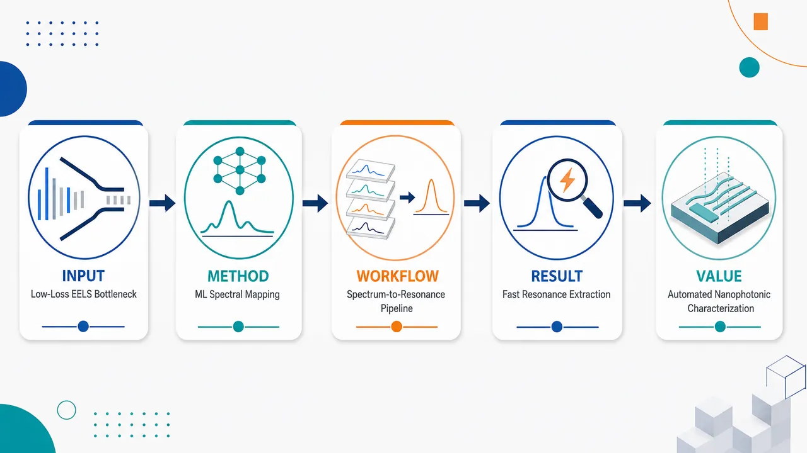
研究问题低损失 EELS 谱中包含纳米光子共振的材料与结构信息，但传统解析往往依赖人工判读、峰拟合或物理模型反演，流程慢、效率低；核心问题是如何从复杂谱线中快速、自动地识别并提取纳米光子共振特征。创新方法提出一种面向低损失 EELS 表征的高效机器学习策略，把原始或预处理后的 EELS 谱作为输入，让模型直接学习谱形与纳米光子共振信息之间的映射；Aha 点在于用数据驱动模型替代逐条人工拟合，将谱学解析转化为快速预测任务。工作流程输入低损失 EELS 光谱数据 → 对谱线进行机器学习可用的整理与特征表达 → 训练或调用模型识别谱中低能损失峰与共振模式 → 自动提取纳米光子共振相关材料、结构信息 → 输出可用于表征的共振参数或分类结果。关键结果论文声称该策略能够高效解析低损失 EELS 数据，并在纳米光子共振案例中实现快速信息提取；相较传统人工或模型驱动分析，预期提升表征速度和自动化程度，但摘要未给出准确率、误差、速度倍数等定量指标。应用价值该研究可服务于纳米光子材料、等离激元结构和电子显微谱学的高通量表征，帮助研究者更快从 EELS 谱图中获得共振模式、材料响应和结构特征，减少人工分析负担，推动自动化纳米尺度光学表征。核心概览
该论文面向低损失 EELS 纳米光子共振表征，提出机器学习策略，以从谱数据中高效提取材料与结构信息。
方法要点
- 研究对象是低损失电子能量损失谱（low-loss EELS）中的纳米光子共振信号。
- 使用机器学习方法对谱学数据进行分析与信息提取。
- 目标是从 EELS 谱中快速提取与共振相关的材料信息和结构信息。
- 以纳米光子共振作为案例研究来验证或展示该策略。
- 具体模型类型、训练数据来源、特征构造、验证流程等摘要未详述。
关键结果
- 摘要明确称该方法是一种“高效”的机器学习策略。
- 该策略用于低损失 EELS 表征，能够服务于纳米光子共振相关信息的快速提取。
- 提取的信息包括与共振相关的材料属性和结构信息。
- 是否达到定量精度提升、速度提升幅度、泛化能力或与传统方法的对比结果，摘要未详述。
创新性判断
- 可能的新颖点在于将机器学习系统性用于低损失 EELS 中纳米光子共振的快速表征，而不仅是常规谱峰识别或人工拟合；但摘要信息不足，无法确认其相对已有工作的具体突破。
- 若该策略能直接从谱学数据反推出材料和结构参数，其创新性可能体现在“谱学数据到物理/结构信息”的高效映射；但具体任务形式和模型细节摘要未详述。
- 以纳米光子共振作为案例，说明该方法可能面向纳米光子学中的快速表征与数据驱动分析，具有应用导向的新意；但是否具备通用性摘要未详述。
-
15
📊 含图深析
📄 摘要：针对海洋大气环境中碳钢腐蚀速率实测数据稀缺，结合 CTGAN 数据增强与 PINN。条件表格生成对抗网络扩充训练集，PINN 引入物理约束以提升预测精度、泛化能力和可解释性，目标是缓解传统黑箱机器学习在腐蚀预测中的局限。
💡 亮点：CTGAN 扩增稀缺腐蚀数据，PINN 约束碳钢海洋大气腐蚀速率预测。它将小样本材料退化建模与物理可解释机器学习相结合。
📖 展开分析 + 配图
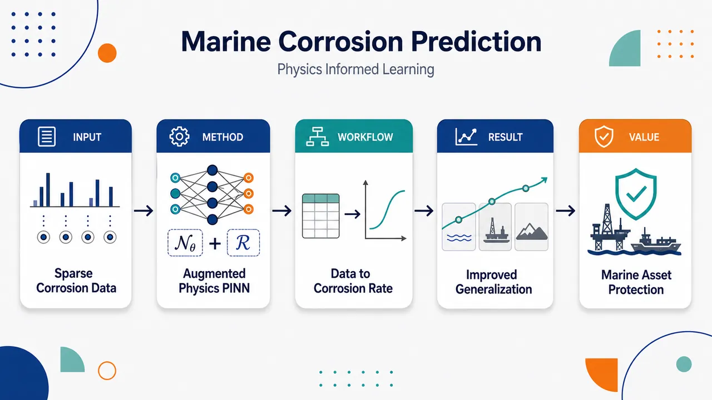
研究问题海洋大气环境中碳钢腐蚀速率受盐雾、湿度、温度等多因素影响，实测腐蚀数据稀缺且环境差异大；核心问题是如何在少量数据条件下准确预测碳钢腐蚀速率，并提升模型在不同海洋环境中的泛化能力。创新方法将物理信息神经网络 PINN 与数据增强结合：一方面用神经网络学习腐蚀速率与环境变量之间的复杂非线性关系，另一方面引入腐蚀机理相关的物理先验约束，减少纯数据驱动模型的盲目拟合；同时通过数据增强扩展有限腐蚀样本，形成“物理约束 + 扩增数据”的双重支撑。工作流程输入海洋大气环境参数与有限实测碳钢腐蚀数据；对稀缺样本进行数据增强，生成更丰富的训练样本；将原始数据、增强数据和物理约束共同注入 PINN；网络学习环境因素到腐蚀速率的映射；最终输出碳钢在目标海洋大气条件下的腐蚀速率预测结果。关键结果论文表明该方法用于海洋大气碳钢腐蚀速率预测，目标是提高预测精度并改善跨环境泛化能力；主要发现是物理信息约束与数据增强的结合有助于缓解腐蚀实测数据不足问题。具体误差指标、提升幅度和对比模型结果在所给内容中未详述。应用价值可为海洋工程设施、港口结构、船舶构件、近海平台等碳钢材料的腐蚀风险评估提供预测工具，帮助在缺少长期暴露试验数据时估计腐蚀速率，支持材料选型、防腐维护计划和结构寿命管理。核心概览
该论文属于材料腐蚀预测与科学机器学习方向，研究用物理信息神经网络结合数据增强预测海洋大气中碳钢腐蚀速率。
方法要点
- 采用物理信息神经网络（PINN）进行碳钢海洋大气腐蚀速率预测。
- 引入数据增强以缓解实测腐蚀数据稀缺问题。
- 方法目标是在预测精度与跨环境泛化能力之间取得平衡。
- 具体网络结构、物理约束形式、增强策略和训练细节：摘要未详述。
关键结果
- 摘要表明该方法面向海洋大气碳钢腐蚀速率预测。
- 摘要明确其关注点是提高预测精度并改善跨环境泛化。
- 是否显著优于传统机器学习、纯数据驱动模型或经验模型：摘要未详述。
- 具体性能指标、数据规模、测试环境和误差数值：摘要未详述。
创新性判断
- 可能的新颖点在于将物理信息神经网络与数据增强结合，用于海洋大气碳钢腐蚀速率预测这一数据稀缺场景。
- 相比纯数据驱动模型，该方法可能尝试利用物理先验提升泛化能力；但物理先验的具体形式摘要未详述，因此创新程度无法充分判断。
- 相比常规腐蚀预测工作，其潜在贡献可能是同时考虑“实测数据稀缺”和“跨环境泛化”，但是否已有类似方法对比，摘要未说明。
-
16
📊 含图深析
📄 摘要：构建用于 PP 与 PE 薄膜紫外激光微加工的 PINN 框架，输入 (r,z,t) 输出温度场 T(r,z,t)。网络通过自动微分约束轴对称热方程，包含温度依赖 cp(T)、k(T)，并用 E(T)、线膨胀系数 αL(T)、ν(T) 进行热-机械后处理，支持代理建模、反设计和材料识别。
💡 亮点：PP/PE 紫外激光微加工被建成带温度依赖热参数的 PINN 正反问题。它把温度场预测、工艺反设计和材料参数识别放入同一热-机械框架。
📖 展开分析 + 配图
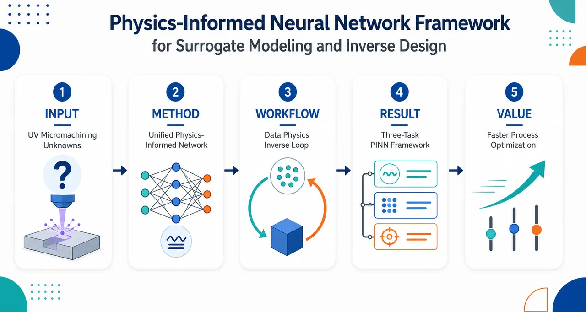
研究问题聚合物薄膜紫外激光微加工过程涉及激光能量沉积、热响应与材料去除等复杂物理机制，传统模型难以快速预测加工结果，也难以从目标形貌反推工艺参数或识别未知材料参数；核心问题是如何用一个可嵌入物理规律的模型同时解决正向建模、工艺反设计和材料参数反演。创新方法提出统一的物理信息神经网络 PINN 框架，把观测数据与控制方程残差共同写入训练损失，让神经网络不仅拟合数据，还遵守激光微加工物理规律；Aha 点在于同一个 PINN 模型既可作为快速代理模型预测加工响应，又可反向优化激光工艺条件，并把未知材料参数直接设为可学习变量进行逆 PINN 识别。工作流程输入聚合物薄膜紫外激光微加工的观测数据、工艺参数、物理控制方程与边界/初始约束；PINN 通过数据误差和物理残差联合训练，学习加工过程响应；训练后进入三条输出路径：正向预测加工结果、根据目标结果反推工艺参数、将未知材料属性作为网络参数反演识别。关键结果论文表明该 PINN 框架能够覆盖三类关键任务：紫外激光微加工代理建模、目标导向的工艺反设计、基于逆 PINN 的材料参数识别；结果强调物理约束神经网络可把有限观测数据与控制方程结合，用于聚合物薄膜激光加工的建模和反问题求解，但摘要未给出具体精度提升、误差数值或对比基准。应用价值该研究可为聚合物薄膜激光微加工提供快速虚拟试验平台，减少大量试错实验和高成本数值仿真；可用于按目标微结构形貌自动寻找激光参数，并从加工响应中识别材料热物性或加工相关参数，服务于柔性电子、微纳制造、薄膜器件加工中的工艺优化与材料表征。核心概览
本文将物理信息神经网络（PINN）用于聚合物薄膜紫外激光微加工，面向代理建模、工艺反设计与材料参数反演识别，属于物理约束机器学习在激光制造/微加工中的应用研究。
方法要点
- 采用 PINN 框架，将观测数据与控制方程共同纳入模型训练。
- 用 PINN 构建紫外激光微加工过程的代理模型，以近似复杂物理过程。
- 将训练后的模型用于工艺参数反设计，即根据目标加工结果反推工艺条件。
- 使用逆 PINN 方法进行材料参数识别，即通过观测结果反演未知材料参数。
- 研究对象为聚合物薄膜的紫外激光微加工过程。
关键结果
- 摘要明确称该框架覆盖三类任务：代理建模、工艺反设计、材料参数识别。
- 摘要表明该方法结合了观测数据与控制方程，体现了物理约束建模思想。
- 具体预测精度、反设计效果、材料参数识别误差、实验或仿真验证细节，摘要未详述。
创新性判断
- 可能的新颖点在于将 PINN 统一用于聚合物薄膜紫外激光微加工中的三个任务：代理建模、反设计和材料识别，而不仅是单一正向预测。
- 相比纯数据驱动模型，其潜在优势可能在于引入控制方程约束，提高物理一致性与参数反演能力；但摘要未提供对比实验，实际优势无法确定。
- 在激光微加工领域，尤其是聚合物薄膜 UV 激光加工场景中应用逆 PINN 识别材料参数，可能具有一定应用创新性；但是否为首次或显著优于已有方法，摘要未详述。
-
17
📊 含图深析
📄 摘要：研究连续介质力学 PINN 中边界条件实现方式对正问题和反演可靠性的影响。针对隐式几何边界，分析精确边界施加策略，强调良定问题解对边界数据连续依赖，因此边界处理差异会影响依赖高效前向模型的反演结果。
💡 亮点：隐式几何上的边界条件被精确嵌入 PINN，用于连续介质力学问题。该工作直指 PINN 反演的薄弱环节：边界误差会系统性污染前向解。
📖 展开分析 + 配图
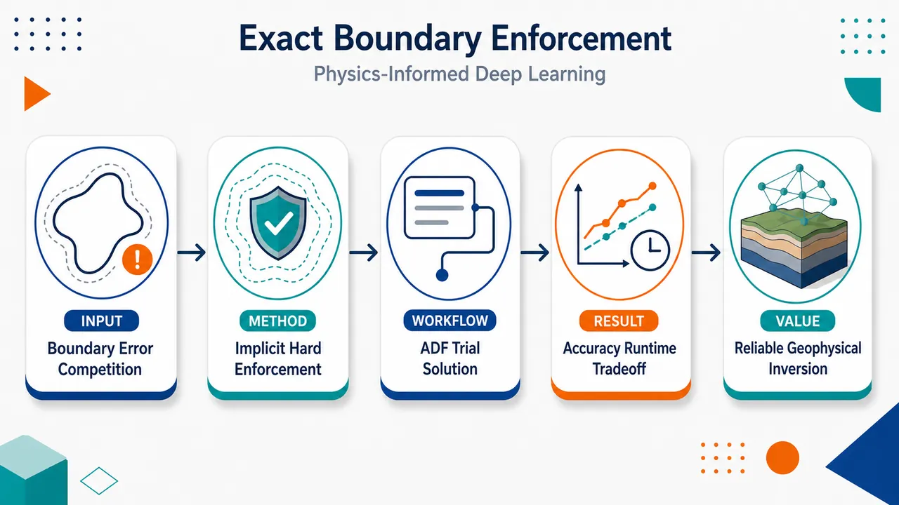
研究问题PINN 求解连续介质力学初边值问题时，复杂边界上的 Dirichlet、Neumann/牵引条件常以损失项软约束实现，导致 PDE 残差与边界残差在训练中竞争；边界条件只能近似满足，误差会沿适定 PDE 解传播，削弱二维动态平面应变、地下断层/界面等前向模型及后续反演的可靠性。创新方法提出将边界条件直接嵌入 PINN 解结构的隐式几何硬约束方案：用 R-function 构造复杂边界的近似距离函数 ADF，将边界划分为多个隐式片段；用反距离权重的广义跨有限插值在整条边界上精确插入边界数据；对 Neumann/牵引条件，用归一化 ADF 作为法向距离坐标做方向 Taylor 展开，让网络自由给出边界函数值，同时用 γ[D𝒩^γ−h] 强制法向导数/牵引精确成立。Aha 点是：不是在损失里惩罚边界，而是把复杂隐式边界和牵引条件“写进”网络输出公式。工作流程输入为二维动态平面应变 PDE、域内采样点、隐式边界片段 Γᵢ、对应边界条件和初始条件；先为每个边界片段构造平滑 ADF γᵢ，并用 R-function 组合复杂几何；再计算反距离权重 wᵢ，形成跨有限边界插值；Dirichlet 片段直接插入给定值 gᵢ，Neumann/牵引片段用网络值 𝒩 与法向 Taylor 修正项构造边界数据；最终输出形如 Σuᵢwᵢ + 𝒩∏γᵢηᵢ 的试探解，使训练项在边界自动消失，只需主要优化 PDE/本构残差，得到满足边界条件的连续场解。关键结果实验比较显示，PINN 求解一阶平面应变公式化比二阶公式化具有更高相对精度；软/硬边界配置存在清晰精度—时间权衡：全软边界通常相对误差更低但训练时间更长，全硬边界减少边界损失竞争、训练更快，但最终精度可能较低；说明硬约束能保证边界精确满足，却不必然带来最低全域误差，性能受 PDE 公式化、边界类型和硬/软组合共同控制。应用价值该方法为复杂隐式几何上的连续介质力学 PINN 提供更可靠的边界实施工具，尤其适合地下断层、材料界面、自由边界、牵引边界等难以用简单网格表达的场景；可提升地球物理前向模拟中边界物理的一致性，为火山、地震、实验室断层等反演任务提供更可信的前向模型，并帮助研究者在精度与训练成本之间选择合适的软/硬边界组合。第一部分：核心概览 (Overview)
该研究聚焦PINN 在连续介质力学初边值问题中的边界条件实施误差，提出基于隐式几何、近似距离函数、广义跨有限插值的硬边界 enforcement 方案，尤其面向二维动态平面应变中的任意隐式边界牵引条件。核心贡献在于把 Dirichlet/Neumann/traction 条件嵌入网络解结构，实现边界精确满足，并系统比较软/硬边界组合对精度与训练时间的影响。其领域位置处于 PINN 边界条件精确实施、隐式几何建模、地球物理反演前向模型可靠性三者交叉处。
---
第二部分：结构化快速回顾
《Exact Boundary Enforcement Along Implicit Geometries for Physics-Informed, Deep Learning Problems in Continuum Mechanics》（None，）
背景
连续介质力学中的适定 PDE 解对边界条件连续依赖，边界实施误差会影响前向模型可靠性，进而影响反演。地球物理场景中，地下断层、界面、结构等关键系统特征常表现为边界条件，因此需要高效且准确的 PINN 前向模型。
方法
采用 PINN 框架，将 PDE、边界条件、初始条件写入多目标损失；同时引入基于 R-function theory、approximate distance functions (ADFs) 和 transfinite interpolation 的硬边界实施。Dirichlet 条件通过边界数据插值，Neumann/traction 条件通过方向 Taylor 展开和法向导数归一化实现精确嵌入。
结果
摘要给出的核心经验结果为：一阶平面应变公式化比二阶公式化获得更高相对精度；边界 enforcement 配置存在精度—时间权衡。全软边界更准确但训练更慢；全硬边界训练更快但精度较低。
讨论
硬边界减少边界损失竞争，改善约束满足的确定性；软边界保留更强拟合自由度，但多目标损失中 PDE 与 BC 项会相互竞争。边界硬/软组合不只是数值实现细节，而是影响最终相对误差和训练时间的建模决策。
局限
可用正文未包含第 4–6 节完整实验细节，无法核验制造解形式、网络层数、采样点数、训练轮数、具体误差表、运行时间表和统计显著性。已给文本也未报告 P 值、置信区间或重复实验统计。
结论
基于隐式几何的边界精确实施可用于连续介质力学 PINN，尤其适合复杂边界和牵引条件；但硬 enforcement 并不自动带来最低误差，实际性能取决于 PDE 公式化、边界类型、软/硬组合和训练成本。
---
第三部分：逐章节冷凝解析 (Section-by-Section Condensing)
Abstract
- Boundary enforcement directly affects inversion reliability
适定连续介质力学问题的解对边界条件连续依赖，因此边界数据 enforcement 的微小变化会影响依赖前向模型的反演可靠性。摘要明确指出：*"Solutions to well-posed problems in continuum mechanics are continuously dependent upon prescribed boundary conditions."* 这一点使 boundary implementation techniques 成为 PINN 前向模型可靠性的核心变量，而非单纯工程细节。
- Implicit boundary interpolation is used to compare soft and hard enforcement
核心方法是将边界数据插值到隐式边界表示上，并在不同软/硬边界配置下评估 PINN。摘要表述为：*"By interpolating boundary data over implicit boundary representations, we measure the performance of a physics-informed neural network across different configurations of soft and hard boundary enforcement."* 这里的关键创新对象是 implicit boundary representations 与 boundary data interpolation 的结合。
- Target physics is elastodynamic plane strain with arbitrary implicit boundaries
目标问题是弹性动力学平面应变，并且方法覆盖任意隐式定义边界上的牵引条件。摘要中给出范围：*"We target the problem of elastodynamic plane-strain and present a method of hard-enforcement of traction conditions over arbitrary, implicitly-defined, domain boundaries considering both first and second order formulations of the governing equations."* 这说明方法不是只处理简单矩形域 Dirichlet 条件，而是面向 continuum mechanics 中更难的 traction boundary conditions。
- First-order formulation gives higher relative accuracy
摘要报告的主要比较结果是：一阶平面应变 PINN 相对精度更高。原文为：*"We show that PINNs achieve a higher relative accuracy when solving the first-order plane strain problem."* 这表明 PDE 公式化本身是性能决定因素，不能默认二阶强形式最优。
- Accuracy–runtime tradeoff depends on hard/soft boundary count
训练结果存在清晰权衡：全软 enforcement 更准确但耗时更长，全硬 enforcement 更快但误差更大。摘要写道：*"all soft-enforcement results in greater accuracy with a longer run time, while all hard-enforcement leads to lesser accuracy and a shorter run time."* 这构成对“硬边界一定更优”的直接限定。
---
1 Context and Motivation
- Well-posedness makes boundary conditions mathematically central
连续介质力学 PDE 的适定性要求边界条件与本构律相容；适定问题具有唯一解，并且解对 BC 连续依赖。原文指出：*"sufficient care must be taken to ensure that the prescribed boundary conditions and constitutive laws yield a well-posed problem"*，且适定问题 *"are guaranteed to have unique solutions which depend continuously on their boundary conditions (BC)."* 因此，PINN 的边界实施误差会直接进入解的稳定性链条。
- Geophysical modeling gives boundary conditions practical importance
地球物理建模中，地下结构特征常以边界条件形式出现。关键句为：*"This is particularly important in geophysical modeling where key system characteristics manifest as boundary conditions along subsurface structures."* 因而，可靠反演需要准确实施地下结构边界条件，而非仅在域内部满足 PDE。
- Hazard assessment depends on surface observations and inverse modeling
地质灾害评估与预测依赖地表观测推断地下特征。原文为：*"The effectiveness of geologic hazard assessment and forecasting is critically dependent on the inference of subsurface characteristics drawn from measurements taken at the Earth’s surface."* 典型观测包括 geodesy 与 seismology：*"geodesy, which documents surface deformation through time and seismology, which measures acoustic wave propagation within the Earth."*
- Large-scale monitoring programs rely on modeling and data assimilation
美国地质调查局火山预警和地震减灾项目均依赖模型同化数据到反演解中。原文指出这些测量构成 *"the backbone of both the US Geological Survey’s National Volcano Early Warning System [19] and the National Earthquake Hazard Reduction Programs [24]"*，并且这些项目 *"rely on modeling efforts to assimilate data into reliable solutions to inverse problems."*
- Traditional numerical methods have mature but mesh-dependent boundary treatments
有限差分、SBP-SAT、FEM 对边界条件有不同处理方式。有限差分中 Dirichlet 可直接写入离散解数组，Neumann 可用单边差分或 ghost nodes：*"finite difference methods (FD) often impose Dirichlet boundary data via direct inclusion in a discrete solution array"*，而 Neumann 条件可通过 *"one-sided difference schemes"* 或 *"central difference schemes on ghost-nodes"*。SBP-SAT 通过 penalty weak enforcement 换取能量稳定性：*"imposes boundary conditions weakly through penalty methods in exchange for provable energy stability."*
- FEM naturally handles Neumann but constrains Dirichlet
FEM 的 Neumann 条件在变分形式中自然满足，Dirichlet 条件则约束有限元近似空间。原文表述为：*"In the finite element method (FEM), Neumann conditions are handled naturally and are automatically satisfied when formulating the variational form of the problem, while Dirichlet conditions are treated as constraints on the finite element space of approximate solutions."* 精度依赖函数空间和网格尺寸：*"accuracy of the approximate solution depends on the chosen finite element space and element size."*
- Mesh dependency motivates PINN alternatives for inverse problems
传统方法强依赖网格，高分辨率和反演会带来成本限制。原文指出：*"the methods themselves are limited by their dependence on an underlying computational mesh"*，并且 *"solving inverse problems require additional machinery and can be prohibitively expensive."* 这为 mesh-free PINN 前向模型提供动机。
- PINNs integrate sparse/noisy data with physical constraints
PINN 可同时吸收稀疏或噪声数据，并通过物理约束避免纯数据驱动模型产生非物理解。原文为：*"Physics-Informed Neural Networks (PINN) [46] seamlessly integrates sparse and/or noisy data while ensuring that model outcomes satisfy rigorous physical constraints."* 其目的包括避免 *"observational bias that can lead purely data-driven models to predict physically unrealistic outcomes."*
- PINNs do not generally outperform traditional solvers but offer two advantages
原文明确限制 PINN 的优势范围：*"they do not outperform traditional numerical methods (except in some high-dimensional settings where traditional methods become intractable)."* 两项主要优势是：参数化 PDE 可形成高效 reduced model，且 forward/inverse 可在同一框架求解：*"both forward and inverse problems can be solved in the same computational framework without significant increase to computational load."*
- PINN error theory remains incomplete but active
PINN 缺少传统方法那样稳健的误差理论。原文称：*"PINNs lack a robust error analysis that comes with traditional methods"*，但已有部分有限情形的误差界：*"error bounds have been described for some specific, limited cases."* 应用领域包括 Navier–Stokes、对流换热、固体力学、Euler 方程等。
- PINN customization includes architecture, loss, variational forms, and natural gradients
训练层面的自定义包括激活函数、优化器、网络结构、损失函数结构：*"specifying elements of the network training (e.g., activation functions, gradient optimization techniques, neural network architecture, and loss function structure)."* 降低 PDE 阶数可简化学习问题：*"careful formulation of the loss function to reduce the order of the PDE resulting in a simpler learning problem."* 还出现深度 Ritz、Galerkin、VPINN、FEM hybrid、natural gradient 等方向。
- Recent boundary-exact PINN work is mostly limited by domain or condition type
近期研究包括 soft/hard wave problem、接触力学 3D 前向问题、Dirichlet 条件比较、Fourier embedding Neumann 条件、FEM-PINN domain decomposition。Fourier embedding 方法依赖简单域：*"This method relies on the fact that the normal derivative of the embedding vanishes near the prescribed boundary and is thus restricted to simple domains."* 复杂几何处理仍未完全解决。
- Implicit approximate distance functions enable general hard enforcement
该研究采用 Sukumar 与 Srivastava 的方法，通过隐式近似距离函数插值边界数据。原文写道：*"we implement hard enforcement of boundary conditions by taking the approach detailed in Sukumar and Srivastava [64] which interpolates boundary data using implicitly-defined approximate distance functions."* 这将边界硬实施从简单几何推广到隐式定义几何。
- Multi-objective loss competition motivates hard enforcement
PINN 损失通常包含 PDE、本构律、边界条件等多个项，竞争项的量级会影响最终精度。原文为：*"This yields a complex training landscape where the magnitude of competing loss components may impact final accuracy of the trained network."* 硬边界 enforcement 可移除部分边界损失竞争。
- Target application is laboratory fault experiments modeled by 2D dynamic plane strain
研究动机来自实验室断层实验反演，这些实验是小尺度、高数据密度、真实数据测试环境。原文称：*"laboratory fault experiments ... provide a small-scale, data-rich, environment for properly testing PINN inversion on real data sets."* 这些实验可用二维动态平面应变建模：*"These laboratory experiments can be modeled by 2D dynamic plane strain."*
- Forward problem robustness precedes inverse problem deployment
重点是先解决前向问题可靠性，再扩展到反演。原文为：*"We focus on robust solutions to the forward problem, which is a key step prior to inversions."* 这体现出反演场景下 forward PINN 的边界条件误差不可被忽略。
---
2 Physics-Informed Deep Learning Framework
- PDE analytic solutions are difficult under complex materials, boundaries, and geometry
科学与工程中的运动控制方程常为 PDE，复杂材料、边界条件和几何使解析解难以获得。原文为：*"analytic solutions can be difficult to obtain (due, e.g. to complex material properties, boundary conditions, geometry)."* 因此通常依赖数值方法。
- PINN is a deep-learning PDE approximation framework
PINN 是由 Raissi 等推广的 PDE 求解深度学习框架。原文写道：*"One such method, popularized by Raissi et al. [46], is the Physics-Informed Neural Network (PINN) which is a deep learning (DL) framework for approximating solutions to PDEs."* 这里 PINN 的基本定位是 PDE 近似器，而非纯数据拟合器。
- PINN solutions are analytic, closed-form, continuous, and mesh-free
PINN 输出是连续定义在整个域上的闭式解析近似。原文表述为：*"The DL framework produces an analytic, closed-form solution, which is continuous and defined at every point in the domain (i.e. the solution is mesh-free)."* 这使任意点求值与自动微分成为可能，也与网格方法形成对比。
- Forward and inverse problems share one computational setting
同一 PINN 框架可处理前向和反演问题。原文强调：*"forward and inverse problems can be solved in the same computational setting allowing for efficient forward models to be seamlessly incorporated into inversion efforts."* 这解释了为什么前向模型边界 enforcement 的精度会影响后续反演。
---
2.1 Feed-forward Deep Neural Networks
- Single hidden layer is an affine map followed by nonlinear activation
对输入 x ∈ ℝⁿ，权重矩阵 W ∈ ℝᵐˣⁿ，偏置 b ∈ ℝᵐ，单隐藏层定义为
ℓ(x;θ)=φ(Wx+b)，其中 θ=(W,b)。原文给出：*"A single hidden layer of a neural network can be expressed as ℓ(x;θ)=φ(Wx+b), where θ=(W,b)."* 这是 PINN 网络结构的基本构件。
- Deep networks are repeated compositions of hidden layers
深度网络由隐藏层重复复合得到。原文为：*"Deep neural networks are obtained by repeated composition of hidden layers."* 深度 L 表示隐藏层数，宽度 m 表示每层神经元数；该节假设每层同宽，但指出只要维度匹配可取消该假设。
- Network dimensions are explicitly specified
输入 x ∈ ℝⁿ，输出 ℝᵈ；参数维度包括 (W₀,b₀)∈ℝᵐˣⁿ×ℝᵐ，中间层 (Wₖ,bₖ)∈ℝᵐˣᵐ×ℝᵐ，输出层 (W_L,b_L)∈ℝᵈˣᵐ×ℝᵈ。原文写道：*"then the recursive composition ... defines a feed-forward, deep neural network 𝒩:ℝⁿ→ℝᵈ."* 该定义为后续 u(x)≈𝒩(x;θ) 提供符号基础。
---
2.2 PINN Architecture
- General IBVP is written in operator form
一般初边值问题表示为
ℒ[u;λ]=k in Ω̂，ℬ[u;λ]=g on ∂Ω̂。原文给出：*"Consider the general operator form of an IBVP given by ℒ[u;λ]=k, in Ω̂, ℬ[u;λ]=g, on ∂Ω̂."* 其中 ℒ 是 PDE 算子，ℬ 是边界算子，λ 是参数。
- Boundary may include internal interfaces
域 Ω̂⊆ℝⁿ 的边界包含内部界面。原文写明：*"with boundary (including internal interfaces) ∂Ω̂."* 这一点对断层、材料界面、接触边界等连续介质问题尤为重要。
- PINN approximates unknown solution by a neural network
未知解 u(x) 由前馈深度网络近似：u(x)≈𝒩(x;θ)。原文为：*"The PINN first approximates the solution to the IBVP ... using a feed-forward, deep neural network."* 边界点数为 N∂，内部配点数为 NΩ̂。
- Collocation points are uniformly randomly sampled
内部配点和边界点用于计算损失；采样方式明确为均匀随机采样。原文写道：*"Throughout this work, collocation points are generated from uniform random sampling."* 已给正文未提供具体 N∂ 或 NΩ̂ 数值。
- Loss is a two-term mean-square multi-objective function
总损失为 MSE(θ)=MSEΩ̂(θ)+MSE∂(θ)。原文说明：*"we construct an objective function MSE (based on the mean-square error)"*，并定义 PDE 残差项与边界残差项。该损失属于多目标损失：*"Since our objective function (4) consists of multiple competing loss functions, it is referred to as a multi-objective loss."*
- Soft boundary enforcement only approximately satisfies BCs
边界损失项 MSE∂ 代表软 enforcement，网络输出只近似满足边界条件。原文为：*"The inclusion of loss term (5b) imposes BC through soft enforcement, i.e., the output of the neural network only approximately satisfies boundary conditions."* 由于 PDE 与 BC 损失竞争，边界满足不会精确：*"minimization of (4) entails competition between enforcement of the BC and PDE."*
- Hard boundary enforcement embeds BCs into architecture
另一种方案是将边界条件直接嵌入网络结构，实现精确满足。原文为：*"we may embed the boundary condition into the network’s architecture to ensure exact enforcement of BC, a process known as hard enforcement."* 这正是第 3 节的理论基础。
---
3 Hard-Enforcement of Boundary Conditions
- Trial solutions can vanish trainable terms at boundaries
Lagaris 方法通过构造自动满足边界条件的试探解实现硬边界。例子中若 u(x,0)=u₀(x)、uₜ₍ₓ,0)=v₀(x)，试探解
U(x,t;θ)=u₀(x)+t v₀(x)+t²𝒩(x,t;θ)。原文解释：*"This ensures that U(x,0;θ)=u0(x) and Ut(x,0;θ)=v0(x) exactly, and the trainable term 𝒩 in (6) vanishes at the boundary t=0."*
- Generalization uses transfinite interpolation on implicit sets
硬边界方法可推广到任意拓扑边界区域。原文为：*"This hard-enforcement approach can be generalized to enforce boundary conditions over regions of arbitrary topology via a generalized transfinite interpolation on implicitly-defined sets."* 这将简单时间边界扩展到复杂空间几何边界。
- Theoretical foundation combines Sukumar–Srivastava and R-function theory
方法建立在 Sukumar 与 Srivastava 的边界插值方法及 R-function 理论发展上。原文写道：*"Our contributions are built on the work of Sukumar and Srivastava [64] and the historical development of R-function theory [56, 52, 57]."* 关键工具是 implicit geometry、approximate distance functions 与 R-functions。
---
3.1 Transfinite Interpolation of Boundary Data using Inverse Distance Weighting
- Boundary is partitioned into segments Γᵢ with distance functions dᵢ
有界开集 Ω⊂ℝᵈ 的边界 ∂Ω 被划分为 Γᵢᵢ₌₁ⁿ。距离定义为 d(x,S)=infₛ∈S ||x−s||，并记 dᵢ(x)=d(x,Γᵢ)。原文为：*"The distance from a given x∈ℝᵈ and the set S is defined by d(x,S)=inf... Subscripts are used to denote distance functions for a particular subset of the boundary."*
- Boundary data are interpolated by inverse distance weights
对每个边界片段给定 fᵢ:Γᵢ→ℝ，构造
f(x)=Σᵢ fᵢ wᵢ(x)，其中权重
wᵢ=dᵢ⁻ηᵢ/Σⱼdⱼ⁻ηⱼ。原文称其为：*"the transfinite interpolant"*，并指出其由 *"inverse distance weighting"* 形成。
- Weights form a positive partition of unity and interpolate exactly
每个 wᵢ 是正连续函数，并满足 partition of unity 与 Kronecker 插值条件。原文为：*"each basis function wi is a positive, continuous function which forms a partition of unity (Σwi(x)=1) and satisfies the interpolation condition (wi(xj)=δij)."* 因此边界上可精确恢复指定片段的数据。
- Exponents ηᵢ control differentiability near boundaries
指数 ηᵢ 控制插值函数在边界 Γᵢ 的微分性质。原文写道：*"Exponents ηi provide control over the differential properties of the interpolating function at boundary Γi."* 若 ηᵢ>1，插值函数在 Γᵢ 上可微且法向导数消失至 ηᵢ−1 阶：*"the interpolant is differentiable (with vanishing normal derivatives) up to order ηi−1 at Γi."*
- Exact distance fields are problematic for free-form boundaries and differentiability
精确距离函数对自由曲线/曲面通常需数值迭代，且可能不可连续可微。原文指出：*"distance fields must be computed numerically when working with boundaries defined by free-form curves or surfaces"*，且 *"exact distance functions may not be continuously differentiable."* 等距到同一边界多个点会导致导数不连续：*"any domain point that is equidistant to at least two points on the same boundary will produce a derivative discontinuity."*
- Approximate distance functions replace exact distances
为求解 IBVP，采用闭式、平滑、近边界类似距离的 ADF。原文写道：*"we opt for approximate distance functions (ADF) which have a closed-form expression."* ADF *"behave like exact distances near the boundary"*，同时是 *"smooth, monotonically increasing functions of distance."*
---
3.2 Approximate Distance Functions
- ADFs replicate characteristic properties of exact distance functions
精确距离函数的边界零集性质应由 ADF 复制。原文为：*"distance functions implicitly define their associated boundaries by their zero curve."* 因而 dΓ(x)=0 ∀x∈Γ 是 ADF 需要满足的核心性质。
- Exact distance has unit normal derivative and unit gradient norm
对边界 Γ、内法向 ν，距离函数沿法向方向的一阶方向导数为 1。公式 (8) 给出 Dν_y dΓ(x)=1。原文进一步总结：*"we can conclude that ||∇dΓ||=1."* 这意味着距离函数在边界法向方向局部线性。
- Higher-order normal derivatives vanish at the boundary
距离函数在边界处法向一阶导数为 1，更高阶法向导数为 0。原文解释：*"This property implies that at the boundary Γ, distance function dΓ is linear in the direction of the unit normal ν and thus normal derivatives beyond order one vanish."*
- Normalization up to m-th order is formally defined
ADF ω 若满足
ω|Γ=0，∂ω/∂ν|Γ=1，∂ᵏω/∂νᵏ|Γ=0, k=2,...,m，则称为 m 阶归一化。原文写道：*"the function ω is said to be normalized up to mth order when the following conditions are satisfied."* 这保证 ω 是边界附近的 m 阶距离近似：*"ω acts as the mth order approximation of the distance function near boundary Γ."*
- R-functions allow Boolean construction of implicit geometries
R-function 理论用于从半空间 primitive 的布尔运算构造单个隐式函数。原文总结两点：*"a single implicit function can be computed to represent objects constructed from Boolean set operations on halfspace primitives"*，以及 *"many R-functions preserve the order of normalization of their arguments."* 这使复杂边界组合仍保持 ADF 归一化性质。
- Line segments are obtained by trimming normalized infinite lines
直线段 ADF 可由无界隐式直线与凸裁剪区域构造。原文为：*"an unbounded implicit line (normalized to order 1) can be trimmed using a convex trimming region (also normalized to order 1) to produce an ADF for the segment of the line bounded by the trimming region that is normalized to order 1."* 这为多边形边界提供可操作构造。
---
3.3 Approximate distance to a trimmed line segment
- Line segment geometry is parameterized by endpoints, center, and length
线段端点为 x₁=(x₁,y₁) 与 x₂=(x₂,y₂)，中心 x_c=(x₁+x₂)/2，长度 L=||x₂−x₁||。原文为：*"The line segment joining points x1=(x1,y1) and x2=(x2,y2) has center point xc=(x1+x2)/2 and length L=||x2−x1||."*
- Signed distance to the supporting infinite line is explicitly given
到通过两端点直线的有符号距离为
f=((x−x₁)(y₂−y₁)−(y−y₁)(x₂−x₁))/L。原文称：*"admits the signed distance function ... to the line passing through x1 and x2."* 这是线段 ADF 的基础 implicit function。
- Trimming region is a circle of radius L/2 centered at x_c
线段由无限直线与以 x_c 为中心、半径 L/2 的圆相交得到。原文为：*"The ADF for the line segment is given by the intersection of the infinite line with a circle of radius L/2 centered at xc."* 裁剪函数 t 被定义为 normalized to first order：*"which is normalized to first order."*
- Normalized trimming produces the line-segment ADF
ADF 通过 Shapiro 与 Tsukanov 的归一化裁剪过程得到，涉及 φ=sqrt(f²+((varphi−t)/2)²) 与 varphi=sqrt(t²+f⁴)。原文为：*"The ADF for the line segment is then given by the normalized trimming procedure described in Shapiro and Tsukanov."*
- Example line segment from (0,0) to (1,1) illustrates construction
图 1 展示从 A=(0,0) 到 B=(1,1) 的线段 ADF 构造。图注写道：*"Construction of an approximate distance function for the line segment joining points A=(0,0) and B=(1,1)."* 子图包括有符号距离函数、裁剪函数、最终 ADF：*"a) depicts the signed distance function ... b) depicts the trimming function ... c) depicts the resulting approximate distance function."*
- Resulting ADF is C² outside zero set and normalized at regular points
构造出的裁剪实体继承 f、t 和裁剪过程的微分性质。原文指出：*"Trimmed entity ϕ inherits differential properties from the functions f,t and trimming procedure."* 最终 ADF *"is C² at every point outside of its zero set and is fully normalized at the regular points of the line segment."*
- Linear boundary segments are sufficient for the present domain boundaries
线性边界段 ADF 足以表示当前工作中的域边界。原文写道：*"This demonstrates the construction of ADFs for linear boundary segments which is sufficient for representing the domain boundaries present in this work."* 更一般曲线可用 Bezier ADF 构造：*"ADFs can be constructed for more general curves."*
---
3.4 Transfinite interpolation of normal derivatives
- Taylor series naturally interpolates derivative values
通过 Taylor 展开在边界邻域内同时插值函数值和导数值。原文为：*"Taylor series are a natural choice for interpolating a function’s derivatives at a point."* 一维例子中，若 u(a)=f、u′(a)=f′，则 u(x)=f+f′(x−a)+O((x−a)²)。
- Derivative interpolation extends to higher dimensions using normalized ADFs
高维情形可用相对于归一化边界 ADF 的方向 Taylor 展开。原文写道：*"This approach can be applied to problems in higher dimensions by specifying a directional Taylor series expansion with respect to a sufficiently normalized boundary ADF."* 边界 Γ 由归一化到 m 阶的 ADF γ 表示。
- Boundary-neighborhood representation uses powers of γ
若 u|Γ=f₀ 且 ∂ᵏu/∂νᵏ|Γ=fₖ，则
u=f₀*+Σₖ₌₁ᵐ(1/k!)fₖ*γᵏ+O(γᵐ⁺¹)。原文为：*"u can be represented in a neighborhood of the boundary Γ by..."* 这将法向距离坐标 γ 作为 Taylor 展开变量。
- Normalizers must agree on boundary and remain constant along normals
fₖ* 是关于 γ 的 normalizer，在边界上等于指定数据，但在法向方向应保持常数。原文指出：*"Normalizers should agree with prescribed values at the boundary"*，且 *"they should be constant along the direction normal to the boundary."* 这是保证方向 Taylor 展开有效的关键。
- Normalizer removes normal-direction variation
normalizer 通过线性化 f 并减去法向变化构造：
f*=f−γ[∇γ·J_f]+O(γ²)=f+γD_f^γ+O(γ²)。原文写道：*"A normalizer f* is constructed by linearizing f in the neighborhood γ=0 and subtracting the variation in the normal direction."* 其中 D_f^γ=−J_f·∇γ 是外法向方向微分算子。
- General structure enforces Dirichlet and Neumann data
若 u|Γ=g、∂u/∂ν|Γ=h，则可得
u=g+γ(D_g^γ+h)+O(γ²)。若 Neumann 通常按外法向 n 给定 ∂u/∂n=ĥ，由于 ν=−n，结构变为
u=g+γ[D_g^γ−ĥ]+O(γ²)。原文总结为：*"is a general normalizing structure for interpolating both function values and normal derivatives at boundary Γ."*
---
3.4.1 Dirichlet Conditions
- Dirichlet boundary data reduce to prescribed values
对 Dirichlet 条件 u|Γ=g，边界数据函数就是 uΓ=g。原文明确：*"for the case of Dirichlet conditions u|Γ=g, the general normalizer (22) yields the Dirichlet-specific boundary data function uΓ=g."* 因为只需插值函数值，不需要法向导数扩展。
- Boundary subscript denotes truncated Taylor boundary data
使用边界下标区分边界数据函数与目标函数。原文为：*"we use a boundary subscript to denote a truncated Taylor series."* 这避免将 uΓ 与真实解 u 混淆。
---
3.5 Neumann Conditions
- Neumann enforcement still requires function values on Γ
对法向导数条件，仅有导数值不足以构造边界邻域 Taylor 表达，还需要边界函数值。原文指出：*"For data prescribed on normal derivatives of the function ... we still specify function values at Γ but do so by prescribing values from a numerical approximation."*
- The trainable network supplies boundary function values
网络 𝒩 近似域内部解，并被延拓到边界提供函数值。原文为：*"a trainable network 𝒩 is employed to approximate solutions on the domain interior so that 𝒩≈u|Ω∖∂Ω."* 进一步通过 *"extending the network approximation to the boundary enabling exact enforcement of Neumann conditions."*
- Neumann boundary data function embeds prescribed outward normal derivative
指定 u|Γ=𝒩 与 (∂u/∂n)|Γ=ĥ 后，边界数据为
uΓ=𝒩+γ[D𝒩^γ−ĥ]。原文写道：*"the general form for normalizers (22) yields boundary data uΓ=𝒩+γ[D𝒩γ−ĥ] for enforcing Neumann conditions."* 这使法向导数在边界上精确满足，而函数值由网络自由学习。
- Transfinite interpolation combines ADFs and boundary data to enforce initial and boundary data exactly
该节收束为：有了 ADF 与边界数据函数，跨有限插值可精确实施初始和边界数据。原文为：*"the transfinite interpolation (7) can be supplied with appropriate ADFs and boundary data functions to ensure exact enforcement of initial and boundary data."*
---
3.6 Generalized Solution Form of IBVP
- Generalized solution combines boundary interpolation and vanishing interior network
IBVP 的广义解结构由两部分构成：边界数据跨有限插值项，以及在边界消失的内部网络项。原文为：*"combines transfinite interpolation (7) (to interpolate boundary data) with an interior approximation term that vanishes on the boundary."*
- Boundary partition supports mixed Dirichlet and Neumann conditions
边界划分为 Γᵢᵢ₌₁ᵐ，对应 ADF γᵢᵢ₌₁ᵐ；前 k 个边界施加 Dirichlet：u|Γᵢ=gᵢ，后续边界施加 Neumann：∂u/∂n|Γⱼ=hⱼ。原文写道：*"Consider a boundary partition ... on which some function u is prescribed the conditions..."*
- Approximate solution form enforces all prescribed conditions
解结构为
u≈Σᵢ₌₁ᵐ uᵢwᵢ + 𝒩∏ᵢ₌₁ᵐγᵢηᵢ。原文称：*"an approximate solution form satisfying conditions (25) is given by..."* 第二项在任一边界 γᵢ=0 时消失，因此不会破坏边界插值项。
- Boundary normalizers distinguish Dirichlet and Neumann cases
对 Dirichlet 边界，uᵢ=gᵢ；对 Neumann 边界，uᵢ=𝒩+γᵢ(D𝒩γᵢ−hᵢ)。原文写道：*"normalizers ui are determined from equations (23) and (24)."* 这就是混合边界条件硬 enforcement 的统一公式。
- Available text stops before complete equation and later sections
可用正文在公式 (26) 后截断，第 4–6 节、实验设置、数值结果表格、制造解、训练参数与完整结论未提供；因此无法对这些章节进行逐标题、逐数值、逐引文的证据化解析。
---
第四部分：深度理解与语言支持 (Understanding & Nuance)
1. 术语解析
- Well-posed problem
学术含义不只是“问题定义清楚”，而是满足 Hadamard 意义上的存在性、唯一性、稳定性。语境中强调的是第三点：解对边界条件连续依赖。关键原句：*"unique solutions which depend continuously on their boundary conditions."* 对反演而言，边界误差不会只是局部误差，而可能影响参数识别可靠性。
- Soft enforcement
指通过损失函数惩罚边界残差，让网络“尽量”满足边界条件。微妙之处在于它不是物理上严格满足，而是优化意义上的折中。原文定义为：*"the output of the neural network only approximately satisfies boundary conditions."* 多目标损失中 PDE 项和 BC 项会竞争。
- Hard enforcement
指通过网络输出结构或试探解形式，使边界条件对任意参数 θ 都精确成立。其重点不是训练得更好，而是结构上不允许违反边界。原文表达为：*"embed the boundary condition into the network’s architecture to ensure exact enforcement of BC."*
- Transfinite interpolation
不是普通有限点插值，而是在整个边界片段/连续集合上插值边界数据。这里通过 inverse distance weighting 对多个边界片段的函数数据进行连续混合，使边界上满足相应片段的数据。关键词为：*"interpolating function as the linear combination of prescribed values ... with the basis ... formed by inverse distance weighting."*
- Approximate distance function (ADF)
不是粗糙近似距离，而是具有边界零集、归一化法向导数、较好光滑性的隐式函数。它近边界像真实距离，远离边界则主要服务于平滑插值。原文说 ADFs *"behave like exact distances near the boundary"* 且有 *"closed-form expression."*
2. 疑难查证
- 为什么精确距离函数反而不理想？
精确距离函数听起来最自然，但对 PINN 自动微分并不总是友好。若域内一点到同一边界上的两个点距离相等，最近点投影不唯一，距离函数会出现导数不连续。PINN 的 PDE 残差往往依赖一阶、二阶甚至更高阶导数，距离函数不光滑会污染残差。ADF 牺牲全局“真实距离”精度，换取闭式表达和可微性。
- 为什么 Neumann 条件需要网络值 𝒩？
Neumann 条件只规定法向导数，不规定函数值；仅凭导数无法确定边界上的绝对位移/场值。因此构造硬 enforcement 时，让网络自由提供边界函数值，再通过 γ[D𝒩^γ−ĥ] 修正法向导数。这样既保留 Neumann 问题所需自由度，又保证边界法向导数精确等于给定值。
- 为什么全硬边界可能更快但不一定更准？
硬 enforcement 移除了边界损失项或降低其优化压力，训练目标更少，通常运行更快。但硬结构也会改变函数空间：网络只能在特定 trial solution family 中搜索解。如果该结构导致优化景观更复杂、表达受限或导数项更难学习，最终相对误差可能反而高于软 enforcement。摘要中的经验结论正是：*"all soft-enforcement results in greater accuracy with a longer run time, while all hard-enforcement leads to lesser accuracy and a shorter run time."*
- ηᵢ 的作用为什么重要？
ηᵢ 不只是距离权重的调参项，还控制边界附近导数消失阶数。若要硬 enforcement 不破坏某些法向导数条件，必须选择足够阶数，使内部网络项及其他边界片段贡献在目标边界上以足够高阶消失。原文强调：*"Exponents ηi provide control over the differential properties of the interpolating function."*
---
第五部分：创新评估与关联 (Synthesis & Novelty)
1. 创新性判断
- 从简单边界硬约束推进到隐式几何上的牵引条件硬约束
近年 PINN 边界硬 enforcement 多集中于简单几何、Dirichlet 条件、周期/Neumann 特殊结构或 FEM-PINN 混合。该研究把 implicit boundary representations + ADF + transfinite interpolation + normal derivative Taylor expansion 组合起来，目标直接指向连续介质力学中更难的 traction/Neumann-type boundary conditions。摘要明确创新范围：*"hard-enforcement of traction conditions over arbitrary, implicitly-defined, domain boundaries."*
- 将边界条件实施方式作为 PINN 前向模型可靠性的主变量系统考察
许多 PINN 工作默认边界处理只是损失项设计，而该研究把 soft vs hard enforcement configurations 作为核心实验变量，并观察相对误差与训练时间之间的系统权衡。摘要中的结论为：*"This tradeoff is characterized by the number of hard and soft boundaries."*
- 把一阶与二阶平面应变公式化纳入同一边界 enforcement 比较框架
PDE 公式化会改变自动微分阶数、残差结构、训练难度和边界条件表达。该研究同时考虑 governing equations 的一阶和二阶形式，摘要称：*"considering both first and second order formulations of the governing equations."* 结果显示一阶形式更精确：*"PINNs achieve a higher relative accuracy when solving the first-order plane strain problem."*
- 面向地球物理反演前的可验证前向模型，而不是单纯 benchmark PDE
目标应用链条是实验室断层、二维动态平面应变、未来真实数据反演。该研究解决的问题是：在进入反演前，PINN forward solver 的边界实施是否足够可靠。动机句为：*"We focus on robust solutions to the forward problem, which is a key step prior to inversions."*
- 相对于过去 2–5 年工作的主要补足点
近期工作已处理 PINN 的 hard Dirichlet、简单域 Neumann、Fourier embedding、contact mechanics、VPINN/FEM 混合等，但复杂隐式边界上的牵引条件硬 enforcement 仍不充分。该研究补足三点：
- 任意隐式边界，而非简单矩形/规则域；
- 牵引/Neumann-type 条件，而非仅函数值 Dirichlet；
- 连续介质动力学平面应变，而非低维演示型 PDE。
对应原文限制背景为：Fourier Neumann embedding *"is thus restricted to simple domains"*，而该研究选择 *"implicitly-defined approximate distance functions"* 扩展边界表达能力。
-
18
📊 含图深析
📄 摘要：提出用于一、二、三维瞬态热扩散的 PINN 框架，重点处理噪声边界条件下有限差分精度崩塌问题。在三维、20% 边界噪声条件下，PINN 仍保持约 91% 准确率，而有限差分法显著退化，用于界定噪声热系统中的求解器选择范围。
💡 亮点：在 3D 热扩散和 20% 边界噪声下，PINN 维持约 91% 准确率。结果显示噪声主导热传导问题中，PINN 可比有限差分更稳健。
📖 展开分析 + 配图
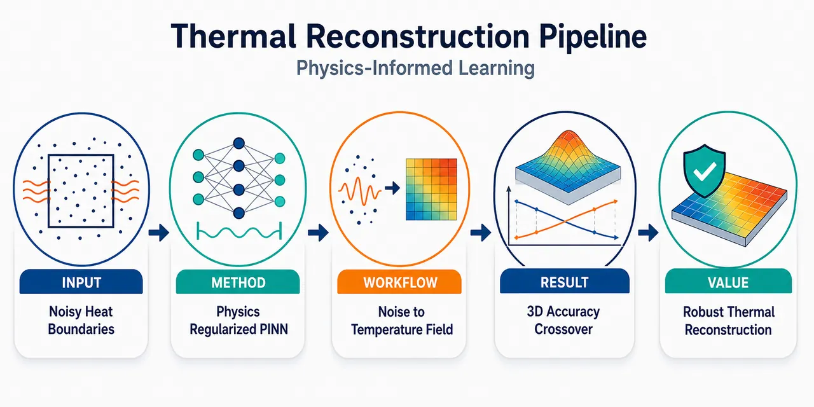
研究问题真实热扩散系统的边界温度常被传感器噪声、随机物理过程和界面热阻污染；论文聚焦“当空间维度从1D升到3D、边界噪声从0升到20%时，传统有限差分法是否会因噪声传播而失效，PINN是否能更稳定地恢复真实瞬态温度场”。画面可呈现为：左侧干净边界热场，右侧含噪边界热场；FDM网格中噪声沿边界向内部扩散放大，PINN连续场被PDE物理约束拉回平滑真实解。创新方法建立统一PINN–FDM对照基准：同一1D/2D/3D瞬态热方程、同一N=50 Fourier解析真值、同一frozen Gaussian边界噪声轨迹、同一评价网格；核心Aha点是把求解器选择从“干净条件下谁更快更准”转为“噪声强度 × 空间维度”的交叉判据。PINN通过自动微分计算神经网络代理的PDE残差，同时约束PDE、边界条件和初始条件，形成物理正则化的隐式去噪，而不是像FDM那样直接对含噪边界做局部差分传播。工作流程输入：三角波初始温度、齐次Dirichlet边界、1D/2D/3D空间域、σ=0/0.05/0.10/0.15/0.20五档边界高斯噪声。基准真值：用N=50 Fourier级数生成解析温度场。FDM路径：显式Euler、隐式Euler、Crank–Nicolson在15点/维网格和60个时间快照上推进。PINN路径：输入时空坐标，LHS采样PDE/BC/IC配点，网络输出温度，自动微分计算热方程残差，Adaptive GradNorm平衡损失，Adam训练6000轮。输出：各维度各噪声下的温度场、相对L2误差、准确率、运行时间、节点效率。关键结果在清洁边界下，PINN相对L2误差为1D 0.276%、2D 0.845%、3D 1.583%，均略优于最佳FDM的0.751%、1.212%、1.646%，但训练时间远慢于FDM。含噪后出现决定性交叉：σ=0.20时，1D最佳FDM约88.61%准确率、PINN 98.06%；2D最佳FDM约71.14%、PINN 95.47%；3D最佳FDM约36.51%、PINN 90.75%。3D 20%噪声是最强视觉结果：FDM温度场严重破碎塌陷，PINN仍保持接近真实热扩散轮廓；同时PINN在3D使用约2.81倍更少时空节点并保持更高精度。应用价值该研究给出工程求解器选择规则：低噪声、规则网格、实时计算场景仍优先FDM；当边界测量不确定性高、系统进入2D/3D高维热扩散时，PINN更适合作为鲁棒温度场重构工具。可用于焊接、凝固、电力电子、AI芯片热管理等含噪热边界场景，尤其适合从污染边界数据中恢复内部真实温度分布；在铜热系统中，20%无量纲噪声对应150 K系统中的30 K边界不确定性，PINN可显著降低边界重构误差。第一部分：核心概览 (Overview)
围绕含噪高维瞬态热扩散，建立了一个系统性 PINN–FDM 对照框架，覆盖 1D/2D/3D、五档边界噪声与同一解析 Fourier 真值。核心贡献在于量化了噪声强度与空间维度共同驱动的求解器交叉点：在 3D、20% 边界噪声下，PINN 保持约 90.75%–91% 准确率，而 FDM 降至约 36%。该工作将 PINN 的价值从“清洁条件下的替代求解器”推进为“高噪声、高维热系统中的操作性标准候选”。
---
第二部分：结构化快速回顾
《Overcoming the Limits of Finite Difference Method; Physics-Informed Neural Network for Noisy High-Dimensional Heat Diffusion》（None，）
背景
瞬态热扩散广泛存在于焊接、凝固、电力电子、AI 芯片热管理等场景，但真实边界条件常受传感器噪声、随机物理过程、界面热阻影响。传统 FDM/FEM 在干净边界下快速且准确，但其数值微分机制会放大测量误差。
方法
构造统一的 1D/2D/3D 热方程基准，采用 N=50 Fourier 级数解析解作为真值；FDM 使用 显式、隐式、Crank–Nicolson 三种格式；PINN 通过自动微分同时约束 PDE、BC、IC。边界噪声采用固定随机种子的 frozen Gaussian noise，噪声水平为 σ = 0, 0.05, 0.10, 0.15, 0.20。
结果
清洁条件下，PINN 的相对 L2 误差分别为 0.276%、0.845%、1.583%，均低于最佳 FDM 的 0.751%、1.212%、1.646%。含噪条件下差距显著扩大：3D、σ=0.20 时，最佳 FDM 准确率约 36.51%，PINN 为 90.75%。
讨论
关键机制来自 PINN 的物理正则化：PDE 残差通过自动微分作用于神经网络代理，而非直接对含噪观测做差分，因此减少噪声放大。FDM 在维度升高时边界噪声传播体积化，误差增长更快。
局限
验证对象集中于线性热方程、规则区域、均匀铜热扩散率、Dirichlet 边界条件和 Gaussian 噪声；PINN 训练成本远高于 FDM，例如 3D 清洁条件下 PINN 用时 893.44 s，显式 FDM 仅 0.011 s。
结论
低噪声、实时计算场景仍适合 FDM；当边界噪声与空间维度同时升高时，FDM 发生严重精度崩塌，PINN 表现出更强鲁棒性和更优节点效率，适合作为高维含噪热系统的优先求解框架。
---
第三部分：逐章节冷凝解析 (Section-by-Section Condensing)
Abstract
- Noise and dimensionality define solver failure regimes
高维瞬态热扩散在含噪边界条件下暴露了经典数值方法的核心弱点：噪声不可避免时，精度会灾难性退化。摘要直接给出问题定位：*"High-dimensional transient heat diffusion under noisy boundary conditions exposes a fundamental limitation of classical numerical methods: accuracy degrades catastrophically where physical noise is unavoidable."* 关键判断不是 FDM 在所有情况下失效，而是在物理噪声不可避免且维度升高时失效。
- 3D 20% boundary noise creates a decisive PINN advantage
最强结果出现在 3D、20% 边界噪声：PINN 约 91% 准确率，FDM 约 36% 准确率。摘要给出明确数值：*"Under 20% boundary noise in 3D, PINN sustains approximately 91% accuracy while Finite Difference Method (FDM) collapses to 36%, a clear decisive advantage."*
- Physical copper case validates engineering relevance
工程案例并非只用无量纲误差，而是使用真实温度单位 Kelvin，在铜热系统中 PINN 将边界重构误差降低 3.3 倍：*"This is further confirmed in a physical copper thermal system, where PINN reduces boundary reconstruction error by 3.3 times under realistic noise conditions."*
- Efficiency crossover complements accuracy crossover
除精度外，摘要强调 3D 节点效率交叉：PINN 在 3D 中使用更少 spacetime nodes，同时获得更高精度。关键句为：*"PINN requires fewer spacetime nodes than FDM in 3D while achieving superior accuracy, exposing the true cost of classical discretization at scale."*
- Solver selection is reframed as a joint noise–dimension problem
求解器选择标准从单纯“谁更准”转向“噪声暴露 + 维度”联合判断：*"the decisive axis is not accuracy alone, but noise exposure and dimensionality jointly."* 这构成该工作的主要学术定位。
---
1 Introduction
- Real heat-transfer boundaries are intrinsically uncertain
瞬态传热支撑多个工程过程，包括 welding、solidification、power electronics、AI chip thermal management；真实边界条件从不完全精确。原文明确指出：*"boundary conditions are never known with complete precision"*。噪声来源包括传感器噪声、aleatoric uncertainty 和 Kapitza thermal resistance。
- Classical deterministic solvers amplify measurement errors
FDM/FEM 在干净条件下仍是标准工具，但依赖数值微分，导致测量误差放大。关键表述为：*"their reliance on numerical differentiation makes them fundamentally susceptible to noise, resulting in error amplification."* 这解释了为何噪声边界对 FDM 特别危险。
- PINN differs structurally through automatic differentiation and physics loss
PINN 将控制方程嵌入损失函数，用自动微分计算 PDE 残差，同时约束 PDE、BC、IC。原文给出机制：*"by embedding governing equations directly into the loss function via automatic differentiation, the network simultaneously satisfies the partial differential equation (PDE), boundary condition (BC), and initial condition (IC)."*
- Physics-based regularization acts as implicit denoising
PINN 的核心优势不是单纯神经网络拟合能力，而是物理正则化提供隐式去噪：*"the physics-based regularization acts as an implicit denoising mechanism."* 该机制在传统方法最脆弱的含噪场景中最重要。
- Precise literature gap: no dimensional noise-scaling benchmark for transient heat diffusion
现有比较多集中于清洁条件准确率，噪声研究多集中在 Burgers、Navier–Stokes、Schrödinger 或稳态/逆问题。关键缺口是：*"no prior work has systematically quantified how noise sensitivity scales with spatial dimensionality for both solver classes in transient heat diffusion."*
- Four explicit contributions establish operational regimes
四项贡献包括：
- 1D/2D/3D 使用相同 frozen Gaussian noise，并发现 3D σ=0.20 下 PINN 约 91%、FDM 36% 的精度交叉。原文为：*"PINN sustains approximately 91% accuracy under 20% boundary noise in 3D while FDM collapses to 36% accuracy in the same regime."*
- 铜系统中 30 K 边界噪声下 PINN 边界误差降低 3.3 倍：*"30 K boundary noise, yielding a 3.3 times reduction in mean boundary error relative to FDM."*
- 3D 中 PINN 使用 2.81 times fewer spacetime nodes：*"PINN requires 2.81 times fewer spacetime nodes than FDM in 3D."*
- 完成 864 个 PINN 配置超参数优化：*"exhaustive hyperparameter optimization over 864 PINN configurations."*
- Operational recommendation is conditional, not absolute
结论性定位是：FDM 适合 clean-data real-time applications；PINN 适合 boundary noise 或 dimensionality 成为限制因素时。原文总结为：*"FDM for real-time clean-data applications, PINN when boundary noise or dimensionality is the limiting factor."*
---
2 Related Work
- Classical solvers dominate clean well-posed forward problems
干净、适定的正问题中，传统网格方法仍具优势。Sharimbayev 等显示 FDM 在 Poisson 方程上相对误差比 PINN 低 约两个数量级（1D）、一个半数量级（2D）。原文为：*"FDM achieves relative errors approximately two orders of magnitude lower than PINN for 1D and one and a half orders of magnitude lower for 2D Poisson equations."*
- FEM can be 100–1000 times faster than PINN in standard BVPs
Grossmann 等发现标准边值问题中 FEM 在 wall-clock time 上优于 PINN 100 到 1000 倍：*"FEM outperforms PINN by factors of 100 to 1000 in wall-clock time."* 这为 FDM/FEM 的工程优势提供背景。
- High-dimensional evaluation can invert the advantage
在 3D 中，将 FEM 解插值到新网格可能比评估训练好的 PINN 慢 2–3 个数量级：*"interpolating FEM solutions onto new meshes in 3D is two to three orders of magnitude slower than evaluating a trained PINN."* 这预示 PINN 的维度优势。
- PINN advantages appear in regimes that stress classical solvers
Khan 等在 spring-mass 系统中发现 FDM 偏差可达 0.80 units，而 PINN 多个时间步匹配精确解：*"FDM deviations reach as large as 0.80 units under identical conditions."* Bueno 等在 2D 热方程中发现 PINN 优于 FTCS 和 ADI，原因是 PINN 同时求解全部时间步，减少序列误差传播。
- Heat-transfer PINN literature remains incomplete for transient noisy 3D forward problems
Oh 和 Jo 研究稳态复合材料热方程，Cai 等处理工业 Stefan 问题和腐蚀传感器数据，但缺少跨维度、定量噪声水平和绝对温度误差。原文指出：*"these noise robustness claims lack systematic quantification of noise levels, comparison against classical methods under identical perturbations, or reporting of absolute temperature errors in physical units across spatial dimensions."*
- Existing noisy heat-equation studies stop short of 3D forward benchmarking
Bajaj 等将 Gaussian process + PINN 用于 1D Schrödinger、1D Burgers、2D heat，其中 2D heat 噪声为 σ=1.0；Zhou 和 Xu 的 data-guided PINN 在白噪声至 25 dB 下收敛快 6–9 倍。但关键限制是：*"neither study extends to three-dimensional systems."*
- PINN noise tolerance is physically grounded but bounded
Wong 等证明在 100% noisy velocity data, SNR 1:1 下，PINN 可媲美使用低十倍噪声训练的 vanilla DNN。Esteves 在 20% corrupted 1D Schrödinger measurements 中达到 <0.2% relative error，而 FDM 因数值微分失败。原文强调：*"FDM fails entirely in the same regime due to noise amplification during numerical differentiation."*
- PINN can fail through reward-hacking under extreme noise
Jekic 等揭示极端噪声下 PINN 可能最小化损失而非恢复真实物理，即 reward-hacking：*"under extreme noise, PINN exhibits reward-hacking, biasing estimates to minimize loss rather than recover true physics."* 这说明 PINN 并非无条件优越。
- Theory links capacity to noise exploitation
André-Sloan 等给出容量条件：dN log dN ≳ Ns η²，用于确保经验风险低于噪声方差。原文为：*"trainable parameters must satisfy dN log dN ≳ Ns η² to achieve empirical risk below noise variance."* 这为超参数搜索和模型容量设计提供理论背景。
- Main literature gap is dimensional scaling for one PDE class
既有噪声研究分散于不同 PDE 或单一维度，混淆了维度效应与问题特异性。关键断言为：*"No prior work establishes how noise amplification scales from 1D to 3D for transient heat diffusion."*
---
3 Methodology
- Framework isolates solver behavior from experimental confounds
比较框架由三部分组成：共同问题形式、并行 FDM/PINN 实现、frozen noise protocol。设计目标是排除实验混杂：*"Each design choice is made to isolate solver behavior from experimental confounds."*
---
3.1 Problem Formulation
- Governing PDE is transient heat diffusion in 1D/2D/3D
控制方程为 ∂u/∂t = α∇²u，其中铜在 25°C 的热扩散率设为 α = 0.00011644 m²/s。原文写明：*"α = 0.00011644 m²/s is the thermal diffusivity of copper at 25°C."*
- Temperature is nondimensionalized
温度场使用无量纲变量 θ = (T − T∞)/(Tref − T∞)，且 T∞ = 0。原文说明：*"The temperature field u is treated as a dimensionless quantity θ = (T − T∞)/(Tref − T∞)."* 物理案例设定 Tref = 150 K。
---
3.1.1 Initial Condition
- Initial condition is a triangular wave
1D 初始温度为三角波，左半区 2x/L，右半区 2(L−x)/L。原文定义：*"The initial temperature distribution follows a triangular wave profile."*
- Higher-dimensional initial condition is separable
2D 和 3D 初始条件通过乘积分离构造：u(x,y,0)=ux(x,0)uy(y,0)，u(x,y,z,0)=uxuyuz。原文为：*"For higher dimensions, the initial condition is constructed as a separable product."*
---
3.1.2 Boundary Condition
- Clean boundary is homogeneous Dirichlet
所有边界采用 u(x,t)=0 的齐次 Dirichlet 条件：*"Homogeneous Dirichlet boundary condition is enforced at all domain boundaries."*
- Boundary noise is additive Gaussian noise
含噪边界设为 unoisy(x,t)=N(0,σ)，噪声水平为 σ∈0.0,0.05,0.10,0.15,0.20。原文为：*"additive Gaussian noise to the boundary condition was introduced."*
- Frozen noise guarantees fair comparison
固定随机种子生成一条噪声轨迹，并在所有方法和维度中复用：*"a single noise trajectory is generated using a fixed random seed and reused across all methods."* 该设计使 FDM 与 PINN 接收完全相同的边界扰动。
- 20% dimensionless noise equals 30 K physical uncertainty
因 Tref = 150 K，σ=0.20 对应 30 K 边界测量不确定性。原文明确：*"σ = 0.20 corresponds to 30 K boundary measurement uncertainty on a 150 K system."*
---
3.2 Analytical Solution
- Fourier series provides analytical ground truth
解析解通过变量分离和 Fourier 级数获得：*"The analytical solution is obtained via separation of variables and Fourier series expansion."* 1D 系数为 bn = 8/(n²π²) sin(nπ/2)。
- Multidimensional analytical solutions use tensor products
2D 解包含双重求和，3D 类似扩展；指数衰减项包含各方向波数平方和。原文为：*"For multidimensional problems, the solution generalizes through tensor products."*
- N=50 achieves machine-precision boundary convergence
级数截断为 N=50，边界残差分别低于 10⁻¹⁷、10⁻³³、10⁻⁴⁹。关键证据为：*"N = 50 terms are employed, at which point residual boundary error falls below 10−17 (1D), 10−33 (2D), and 10−49 (3D)."*
- Analytical solution anchors all error calculations
所有误差均以 Fourier 真值为基准：*"The analytical solution serves as ground truth for all error calculations."*
---
3.3 Finite Difference Method
- Three FDM schemes are compared
FDM 包括 Explicit forward Euler、Implicit backward Euler、Crank–Nicolson。原文为：*"Three finite difference schemes are implemented."*
---
3.3.1 Explicit Scheme
- Forward Euler stability is safely satisfied
显式格式稳定参数 r=αΔt/Δx²，稳定条件为 1D r≤0.5、2D r≤0.25、3D r≤1/6。实验设定 Δx≈0.0714 m、Δt=0.6 s，得到 r=0.0137、0.0274、0.0411，均稳定。原文为：*"all well within stability bounds."*
---
3.3.2 Implicit Scheme
- Backward Euler solves a linear system with Kronecker Laplacians
隐式格式为 (I − rL)un+1 = un。高维离散 Laplacian 使用 Kronecker 积：*"Higher dimensions employ Kronecker products."* 2D 为 I⊗D₂ + D₂⊗I，3D 为三个方向的张量和。
---
3.3.3 Crank-Nicolson Scheme
- Crank–Nicolson is unconditionally stable and second order
CN 格式为 (I−½rL)un+1=(I+½rL)un，具有无条件稳定性和二阶精度：*"This scheme is unconditionally stable and second-order accurate in both space and time."*
- FDM simulation grid and snapshots are fixed across comparisons
所有 FDM 模拟运行 100 time steps，Δt=0.6 s，在 60 个评价时间 t=1…60 s 记录解，空间网格为每维 15 points。原文为：*"solutions recorded at 60 uniformly spaced evaluation times ... on a uniform spatial grid of 15 points per dimension."*
---
3.4 Physics-Informed Neural Network
- PINN baseline contains architecture, sampling, weighting, training protocol
PINN 作为深度学习基准，详细设定网络结构、损失函数、配点采样、损失权重和训练流程：*"PINN is adopted here as the deep learning baseline."*
---
3.4.1 Network Architecture
- PINN maps spacetime coordinates to scalar temperature
网络映射为 uθ(x,t): Rd⁺¹ → R，输入是空间与时间，输出是标量温度。原文为：*"fully connected feedforward neural network mapping (d+1)-dimensional spacetime coordinates to scalar temperature."*
- Inputs are normalized to [-1,1]
所有坐标归一化到 [-1,1]，有助于训练稳定。原文给出：*"Input coordinates are normalized to [-1,1]."*
- Architecture search spans depth, width, activations and initialization
深度范围 2–8 hidden layers，宽度 4–128 neurons；激活函数包括 tanh、GELU、SiLU、Mish；初始化包括 Xavier uniform、Kaiming normal。原文为：*"Activation functions evaluated include tanh, GELU, SiLU, and Mish."*
---
3.4.2 Loss Function
- PINN loss enforces PDE, BC, IC simultaneously
总损失为 Ltotal = wPDE LPDE + wBC LBC + wIC LIC。原文为：*"The PINN loss comprises three components enforcing the PDE, BC, and IC."*
- PDE residual is computed by automatic differentiation
PDE 残差为 ∂uθ/∂t − α∇²uθ 的均方，采用自动微分计算。原文为：*"The PDE residual loss is computed via automatic differentiation."*
- Noisy boundary enters directly into BC loss
BC 损失拟合 uBC，其中在含噪条件下包含 Eq. (6) 的边界扰动。原文说明：*"uBC includes noise perturbations when applicable."*
---
3.4.3 Collocation Point Sampling
- LHS collocation budgets scale strongly with dimension
配点采用 Latin Hypercube Sampling。预算为：
1D：NPDE=3,000，NBC=1,000，NIC=2,000，总 6,000；
2D：30,000，10,000，20,000，总 60,000；
3D：60,000，20,000，40,000，总 120,000。原文为：*"Training points are generated using Latin Hypercube Sampling (LHS)."*
- PDE points are resampled every 100 epochs
PDE 配点每 100 epochs 重采样以改善覆盖；L-BFGS 阶段固定配点以稳定收敛。原文为：*"PDE collocation points are resampled every 100 epochs to improve domain coverage."*
- BC and IC points remain fixed for frozen-noise consistency
边界和初始点全程固定，以保持 frozen noise temporal consistency。原文为：*"boundary and initial conditions points remain fixed throughout to maintain temporal consistency with the frozen noise protocol."*
---
3.4.4 Loss Weighting Strategies
- Equal weighting is the simplest baseline
等权重设定为 wPDE=wBC=wIC=1。原文列为：*"Equal weighting: wPDE = wBC = wIC = 1."*
- Adaptive gradient normalization balances gradient magnitudes
Adaptive GradNorm 每 20 epochs 按梯度范数移动平均更新权重，β=0.7，并对权重施加维度特异性裁剪。原文为：*"Weights are updated every 20 epochs based on gradient magnitude moving averages."*
- Weight clamps are dimension-specific
1D/2D 中 wPDE∈[50,500]，3D 中 wPDE∈[25,750]；BC 多为 [0.1,10]，2D IC 为 [1,50]。这些区间用于防止不稳定：*"weights are clamped to dimension-specific ranges to prevent instability."*
- Adaptive loss-ratio weighting uses PDE boosting
loss-ratio 权重按各项损失占比设置，并用 λPDE=1,10,100 分别增强 1D/2D/3D 的 PDE 项；学习率调度器为 γ=0.99。原文为：*"Weights are set proportional to relative loss magnitudes with dimension-dependent PDE boosting."*
---
3.4.5 Training Protocol
- PINNs are trained for 6,000 epochs with Adam or Adam–L-BFGS
训练长度为 6,000 epochs，Adam 学习率为 5×10⁻³ 或 5×10⁻⁴。混合方案在 epoch 5,400 切换到 L-BFGS，即总 epoch 的 90%。原文为：*"the optimizer switches to L-BFGS at epoch 5,400 (90% of total epochs)."*
- Weight decay applies only to hybrid configurations
L2 regularization / weight decay = 10⁻⁴ 仅用于 Adam→L-BFGS 混合配置。原文为：*"L2 regularization ... is applied exclusively to hybrid configurations."*
- Divergent configurations are pruned after epoch 400
若 epoch 400 后总损失超过 16.0，训练提前终止；结束时恢复最佳模型。原文为：*"Training is terminated early if total loss exceeds 16.0 after epoch 400."*
---
3.5 Hyperparameter Optimization
- Grid search covers 864 configurations
超参数搜索规模为 864 configurations，覆盖深度、宽度、激活、学习率、优化器、初始化、损失权重策略。原文为：*"A systematic grid search across 864 configurations were conducted."*
- Optimal models minimize relative L2 error on identical FDM validation grid
最优配置按解析解上的相对 L2 误差选择，使用与 FDM 相同的 15-point spatial grid 和 60 temporal snapshots。原文为：*"evaluated against the analytical solution at the same 15-point spatial grid and 60 temporal snapshots used for FDM validation."*
---
3.6 Error Metrics
- Three metrics quantify global, maximum, and relative error
使用 L2 error、L∞ error、relative L2 error。原文为：*"The methods are evaluated against the analytical solution using three metrics."*
- Evaluation point counts grow from 900 to 202,500
总评价点数为 M=900 (1D)、13,500 (2D)、202,500 (3D)。原文为：*"M denotes the total number of spatiotemporal evaluation points: 900 (1D), 13,500 (2D), and 202,500 (3D)."*
- Accuracy is defined from relative L2 error
准确率定义为 (1 − Erel) × 100%。原文为：*"Accuracy percentage is defined as (1 − Erel) × 100%."*
---
3.7 Computational Environment
- Experiments run on NVIDIA Tesla P100 with deterministic CUDA
计算环境为 NVIDIA Tesla P100-PCIE-16GB GPU，使用 PyTorch 并启用 deterministic CUDA。原文为：*"The experiments were conducted on an NVIDIA Tesla P100-PCIE-16GB GPU using PyTorch with deterministic CUDA operations enabled."*
- Reproducibility uses fixed seeds across all stochastic components
随机种子固定于网络初始化、配点采样和噪声生成。原文为：*"fixed random seeds across all stochastic processes: network initialization, collocation sampling, and noise generation."*
---
4 Experiments
- Experiments progress from validation to robustness analysis
实验分四阶段：解析解验证、FDM 基线、PINN 超参数优化、噪声鲁棒性分析。原文为：*"The experimental campaign is structured into four sequential phases."*
- All phases share grids, snapshots, and noise trajectories
统一空间网格、时间快照和 frozen noise trajectories，以消除混杂变量。原文为：*"All phases share identical spatial grids, temporal snapshots, and frozen noise trajectories."*
---
4.1 Experimental Design
4.1.1 Phase 1: Analytical Solution Validation
- Fourier ground truth uses N=50 and 15ᵈ grid
解析解使用 N=50 terms，在 15ᵈ 空间网格与 60 temporal snapshots 上评估。原文为：*"Reference solutions are computed using the Fourier series formulation ... with N = 50 terms."*
- Finite Fourier representation has Gibbs-related IC error
t=0 三角波初值近似最大误差为 8.1×10⁻³，原因是有限 Fourier 表示的 Gibbs 现象。原文为：*"N = 50 yields a maximum IC approximation error of 8.1 × 10−3, consistent with the Gibbs phenomenon."*
- Boundary residuals reach machine precision
t>0 的边界残差分别为 ≤10⁻¹⁷、10⁻³³、10⁻⁴⁹。原文为：*"Boundary residuals at t > 0 confirm machine-precision satisfaction of homogeneous Dirichlet conditions."*
4.1.2 Phase 2: FDM Baseline
- FDM clean baselines use σ=0 across dimensions
三种 FDM 格式均在 σ=0 清洁边界条件下运行，建立基线精度和效率。原文为：*"The three finite difference schemes are executed under clean BC (σ = 0) across all dimensions."*
4.1.3 Phase 3: PINN Hyperparameter Optimization
- 864 configurations are dimension-distributed
搜索分布为：1D 144 个配置，2D 384 个配置，3D 192 个配置，总计 864。原文表述为：*"The 864-configuration grid search is distributed across dimensions."*
- Early stopping is disabled for unbiased architecture comparison
超参数阶段不启用 early stopping，以避免不公平筛选。原文为：*"Early stopping is disabled during this phase to ensure unbiased architectural comparison."*
4.1.4 Phase 4: Noise Robustness Analysis
- Noise levels cover five intensities
噪声水平为 σ∈0.0,0.05,0.10,0.15,0.20。原文为：*"Solvers are evaluated under five noise levels."*
- Experiment count is 45 FDM runs plus 15 PINN runs
FDM 实验数为 3 schemes × 3 dimensions × 5 noise levels = 45；PINN 为 3 dimensions × 5 noise levels = 15。原文直接给出：*"FDM: 3 schemes × 3 dimensions × 5 noise levels = 45 experiments"* 和 *"PINN: 3 dimensions × 5 noise levels = 15 experiments."*
- Validation against clean analytical solutions measures recovery from corrupted BCs
所有含噪实验仍对照干净解析解，衡量从污染边界恢复真实温度场的能力。原文为：*"directly measuring each solver’s ability to recover the true temperature field from corrupted boundary data."*
---
4.2 Statistical Validation
- Adaptive GradNorm is statistically compared against equal weighting
为检验 Adaptive GradNorm 是否优于 equal weighting，每个维度在 σ=0.10 下各训练 10 independent random seeds，总计 60 training runs。原文为：*"training both strategies under 10 independent random seeds at moderate noise (σ = 0.10) for each dimension, yielding 60 training runs in total."*
- Mann–Whitney U test avoids distributional assumptions
显著性使用 Mann–Whitney U test，零假设为 equal weighting 表现等同或更好。原文为：*"a non-parametric test requiring no distributional assumptions."*
---
4.3 Computational Efficiency Metrics
- Efficiency includes time, memory, and node ratio
记录 wall-clock execution time、peak GPU memory consumption、discretization efficiency。原文为：*"wall-clock execution time, peak GPU memory consumption, and discretization efficiency ... are recorded."*
- PINN timing includes training and inference
PINN 时间包括训练和验证推理；推理小于总运行时间 1%。原文为：*"PINN times include training and validation inference; inference contributes less than 1% of total runtime."*
---
5 Results
- Results cover architecture, clean accuracy, noise robustness, and efficiency
结果按四个维度展开：最优 PINN 配置、清洁条件精度、噪声鲁棒性和计算效率。原文为：*"results across four dimensions of analysis: optimal PINN configuration identification, clean-condition accuracy benchmarking, noise robustness characterization, and computational efficiency."*
---
5.1 Optimal PINN Configurations
- Optimal network complexity scales with dimension
最优结构随维度显著增大：
1D：2 hidden layers × 8 neurons，105 parameters；
2D：6 layers × 64 neurons，21,121 parameters；
3D：6 layers × 128 neurons，83,329 parameters。原文为：*"Network complexity scales with dimensionality."*
- All optimal models use tanh and Adam only
三个维度的最优激活函数均为 tanh，优化器均为 Adam，混合 Adam→L-BFGS 未带来收益。原文为：*"all optimal configurations employ tanh activation and Adam exclusively"*，并补充 *"Hybrid Adam → L-BFGS switching offered no improvement in any dimension."*
- Adaptive GradNorm dominates loss weighting strategies
所有维度最优损失权重策略均为 Adaptive GradNorm。原文为：*"Adaptive gradient normalization is the superior loss weighting strategy across all dimensions."*
- Clean training losses reach small residuals
最优 PINN 在清洁边界下：
1D：LPDE=2.17×10⁻⁸，LBC=7.78×10⁻⁷，LIC=3.11×10⁻⁵，Ltotal=3.31×10⁻⁵；
2D：3.34×10⁻⁸，7.07×10⁻⁶，2.73×10⁻⁵，4.79×10⁻⁵；
3D：1.81×10⁻⁸，1.40×10⁻⁵，4.30×10⁻⁵，3.94×10⁻⁵。原文概括：*"The PDE residual consistently attains O(10−8) magnitude."*
- Resampling creates visible loss spikes but best-model restoration handles them
1D 和 2D 中 BC/IC 损失出现周期性尖峰，与每 100 epochs PDE 配点重采样一致。原文为：*"BC loss and IC loss exhibit periodic spikes consistent with PDE collocation resampling every 100 epochs."*
- 3D training has high-frequency oscillations but controlled PDE residual
3D 中所有损失出现持续高频振荡，说明高维 loss landscape 对重采样更敏感；但 PDE loss 仍收敛到 O(10⁻⁸)。原文为：*"all loss components exhibit sustained high-frequency oscillations throughout training"*，同时 *"PDE loss converges smoothly to O(10−8)."*
---
5.2 Accuracy Comparison Under Clean Conditions
- PINN has lower relative L2 error in all clean cases
清洁边界下，PINN 相对 L2 误差分别为 0.276%、0.845%、1.583%；最佳 FDM 分别为 0.751%、1.212%、1.646%。原文为：*"PINN achieves superior relative L2 accuracy across all dimensions."*
- Error reductions shrink with dimension
PINN 相对于最佳 FDM 的误差降低倍数为 2.72×、1.43×、1.04×。原文为：*"corresponding to error reductions of 2.72 times, 1.43 times, and 1.04 times."* 随维度升高，优势逐渐减小。
- Explicit FDM is the best FDM scheme under clean conditions
显式 FDM 在所有维度中最准确。原文为：*"Among FDM schemes, the Explicit method consistently achieves the best accuracy across all dimensions."*
- Clean runtime strongly favors FDM
清洁条件下运行时间差距巨大：
1D explicit FDM 0.003 s vs PINN 71.49 s；
2D explicit FDM 0.005 s vs PINN 220.91 s；
3D explicit FDM 0.011 s vs PINN 893.44 s。这支持 FDM 在实时干净数据场景中的优势。
- 3D PINN has higher L∞ despite better L2
3D 中 PINN 的 L∞ error = 0.0866，高于显式 FDM 的 0.0622，尽管相对 L2 更优。原文解释为：*"This indicates spatially localized errors in the PINN solution, likely near boundary regions where the triangular profile induces sharp gradients."*
- PINN boundary errors are linked to soft constraints
图示描述显示 PINN 内部误差较低，但边界附近误差升高，符合 soft-constraint 边界处理特征。原文为：*"PINN error is uniformly lower in the interior but rises near the boundaries, consistent with the soft-constraint treatment of boundary condition."*
---
5.3 Noise Robustness Analysis
- FDM and PINN exhibit fundamentally different degradation regimes
含噪结果显示 FDM 与 PINN 的退化规律完全不同。原文开头为：*"Table 7 reveals fundamentally different degradation regimes between FDM and PINN as noise intensity and dimensionality increase jointly."*
- 1D noise degradation is moderate for FDM and mild for PINN
1D 中，显式 FDM 准确率从 99.25% 降至 88.61%；PINN 从 99.72% 降至 98.06%。在 σ=0.20 下，PINN 仍比最佳 FDM 高约 9.43 percentage points。
- 2D noise creates large FDM degradation but PINN remains above 95%
2D 中，显式 FDM 从 98.79% 降至 71.08%，CN FDM 最佳为 71.14%；PINN 从 99.16% 降至 95.47%。σ=0.20 下 PINN 对最佳 FDM 的优势约 24.33 percentage points。
- 3D noise causes catastrophic FDM collapse
3D 中，显式 FDM 从 98.35% 降至 36.38%，CN FDM 从 98.32% 降至 36.51%；PINN 从 98.42% 降至 90.75%。该数值支撑摘要中的“约 91% vs 36%”结论。
- FDM schemes behave nearly identically under noise
显式、隐式、CN 在含噪边界下准确率几乎相同。例如 3D σ=0.20 时分别为 36.38%、36.38%、36.51%。这说明噪声崩塌不是某个时间格式的偶然缺陷，而是网格差分对边界噪声传播的系统性问题。
- PINN degradation is nonlinear but much slower
3D PINN 准确率在 σ=0.05、0.10、0.15、0.20 分别为 94.37%、94.23%、93.16%、90.75%，下降幅度远小于 FDM。核心机制与前文一致：*"automatic differentiation operating on the neural surrogate rather than corrupted measurements directly."*
---
第四部分：深度理解与语言支持 (Understanding & Nuance)
1. 术语解析
- Frozen noise protocol
字面意思是“冻结噪声协议”，学术含义是：用固定随机种子生成同一组噪声，并在所有方法、维度或实验条件中复用。它不是“噪声不随时间变化”，而是“同一比较条件下噪声轨迹固定”。语境证据：*"a single noise trajectory is generated using a fixed random seed and reused across all methods."* 其作用是保证 FDM 与 PINN 的差异来自求解器，而不是随机噪声样本差异。
- Implicit denoising mechanism
“隐式去噪机制”并不是显式滤波器，也不是先对边界数据做平滑，而是 PDE 残差、BC 损失和 IC 损失共同限制神经网络，使其偏向满足物理规律的函数族。语境证据：*"the physics-based regularization acts as an implicit denoising mechanism."*
- Dimensionality-driven efficiency crossover
指随着空间维度从 1D 到 3D 增加，网格方法的节点数按维度指数增长，而 PINN 的采样/函数逼近成本增长方式不同，导致在某个维度后 PINN 在节点效率上反超。语境证据：*"PINN requires fewer spacetime nodes than FDM in 3D while achieving superior accuracy."*
- Soft-constraint treatment of boundary condition
PINN 的边界条件通常通过损失项惩罚实现，而不是像 FDM 那样在边界网格点上硬性赋值。因此 PINN 可能在边界附近有局部误差。语境证据：*"PINN error ... rises near the boundaries, consistent with the soft-constraint treatment of boundary condition."*
- Reward-hacking
在 PINN 语境中指模型通过降低损失函数取得“表面成功”，但并未恢复真实物理状态。例如在极端噪声下，模型可能偏向某种平滑解以最小化 loss，而不是逼近真实解。语境证据：*"PINN exhibits reward-hacking, biasing estimates to minimize loss rather than recover true physics."*
2. 疑难查证
- 为什么 FDM 在含噪边界下会随维度升高而崩塌？
FDM 的核心操作是局部差分。边界噪声进入边界网格点后，会通过每一步时间推进传播到内部。维度越高，边界面数量和与内部节点的耦合路径越多；3D 中边界是多个二维面，噪声影响体积区域的通道显著增加。即使显式格式满足稳定条件，稳定性只保证数值解不爆炸，不保证噪声不被传播或放大。因而 3D σ=0.20 时 FDM 准确率降至约 36%。
- 为什么 PINN 不直接被边界噪声拖垮？
PINN 同时最小化 PDE residual、BC loss、IC loss。边界噪声只影响 BC 项，而 PDE residual 在整个时空域内施加物理约束。若某些边界点噪声与热方程动力学不一致，模型不会完全逐点追随噪声，因为那会增加 PDE residual 或 IC loss。自动微分计算的是神经网络代理的平滑导数，而不是对噪声观测做差分，因此避免了差分法中的高频噪声放大。
- 为什么清洁条件下 PINN 更准但更慢？
清洁条件下，PINN 通过连续函数逼近和 PDE 正则化可获得较低相对 L2 误差；但训练需要数千 epoch、大量 collocation points 和反向传播。FDM 在规则网格上线性推进，成本极低。3D 清洁条件下显式 FDM 仅 0.011 s，PINN 需 893.44 s，说明 PINN 的优势不是实时训练速度，而是高噪声、高维条件下的鲁棒恢复能力。
- 为什么 PINN 的 L2 更好但 L∞ 更差？
L2 衡量全局平均意义上的误差，L∞ 衡量最大点误差。PINN 可能在大部分内部区域误差较小，因此 L2 优；但由于边界条件是 soft constraint，边界或尖峰附近局部误差较大，导致 L∞ 升高。3D 中 PINN relative L2 = 1.583% 优于显式 FDM 1.646%，但 L∞ = 0.0866 高于 FDM 0.0622，正是这种全局—局部差异。
---
第五部分：创新评估与关联 (Synthesis & Novelty)
1. 创新性判断
- 从“PINN 是否准确”推进到“PINN 何时应替代 FDM”
近 2–5 年 PINN–FDM/FEM 比较多聚焦干净条件、单维度或不同 PDE 的零散基准。该工作将比较维度改为操作性求解器选择规则：当噪声暴露和空间维度同时升高，FDM 的经典优势消失，PINN 的物理正则化优势显现。
- 首次系统量化 transient heat diffusion 中噪声敏感性如何从 1D 扩展到 3D
关键新颖性在于同一 PDE、同一初边值结构、同一解析真值、同一 frozen noise protocol 下比较 1D/2D/3D。以往工作常把维度效应和 PDE 类型差异混在一起；这里直接给出维度缩放证据：FDM 在 σ=0.20 下从 1D 88.61%、2D 71.08% 到 3D 36.38% 迅速崩塌，而 PINN 对应为 98.06%、95.47%、90.75%。
- 将工程物理单位纳入验证，增强实际可解释性
多数 PINN 论文只报告无量纲相对误差；该工作把 σ=0.20 映射为 150 K 系统中的 30 K 边界不确定性，并声称铜热系统中边界误差降低 3.3 倍。这使结果更接近热管理工程中的传感器噪声和边界重构问题。
- 同时提出 accuracy crossover 与 efficiency crossover
创新点不只在“PINN 更抗噪”，还包括 3D 中 PINN 使用 2.81× fewer spacetime nodes。这触及高维网格法的根本成本：维度升高导致 FDM 节点数快速膨胀，而 PINN 以连续函数逼近方式在某些高维设置下获得节点效率优势。
- 大规模超参数搜索提升比较可信度
864 个 PINN 配置、三种损失权重、两种优化器方案、多种激活与初始化，使结论不太可能只是某个随意架构造成。最优结果统一指向 tanh + Adam + Adaptive GradNorm，并通过 10 seeds × 3 dimensions × 2 weighting strategies = 60 runs 的 Mann–Whitney U 检验设计验证权重策略。
- 解决了前人未充分解决的问题
过去工作已经显示 PINN 具有噪声鲁棒性，但缺少以下组合：
- 同一 transient heat equation；
- 1D/2D/3D 系统维度扫描；
- FDM 与 PINN 接收完全相同 frozen boundary noise；
- 解析 Fourier 真值作为统一误差基准；
- 高噪声 3D 场景下的明确阈值证据。
因此，主要新颖性不是提出新的 PINN 架构，而是建立了一个可操作的判别结论：干净低维实时问题优先 FDM；含噪高维热扩散问题优先 PINN。
-
19
📊 含图深析
📄 摘要：提出知识融合自适应 PINN，用于微生物相互作用建模和参数发现。除实验测量外，框架纳入文本、网络结构等辅助知识；在微生物场景中以广义 Lotka-Volterra 方程作为生物约束，改善仅依赖数据拟合方程参数的 PINN 方法。
💡 亮点：微生物 gLV 参数发现中，PINN 同时吸收实验数据、文本知识和网络结构。该思路把物理方程约束扩展为多源知识约束。
📖 展开分析 + 配图
研究问题微生物群落动力学不仅由丰度时间序列决定，还受成对互作、宿主/土壤环境、营养、处理条件等外部语境影响；传统 PINN 只从实验数据发现方程参数，gLV 只靠丰度难以解释上下文变化，LSTM/GNN 又割裂了时间动态、互作拓扑与生物知识。核心问题是：如何把文献文本、网络结构和实验数据共同注入物理方程参数学习，重建可预测、可解释的微生物互作网络。创新方法提出 Knowledge-Inclusive Adaptive PINN（KI-APINN）：把物理方程参数从“固定标量/仅由数据估计”改为“由知识融合表示条件化的函数”。微生物实例 A²G² 将丰度时间序列、统计特征、分类丰富度、PubMed 标题/摘要文本嵌入融合；用 AnchorGNN 通过锚点 taxa 稀疏化互作图，避免全量两两连接；再用 gLV 解码每个菌群的增长率和成对相互作用强度。Aha 点是：文本知识不是普通附加特征，而是直接引导 gLV 参数发现，让生态方程随外部语境自适应。工作流程输入微生物丰度时间序列与社区 taxa 列表；提取丰度统计量和分类丰富度；检索相关 PubMed 文献标题/摘要并用语言模型生成文本嵌入；注意力模块融合丰度、统计、分类和文本语义；AnchorGNN 学习少量锚点 taxa，构建稀疏互作拓扑；gLV 参数头输出增长率与 pairwise interaction matrix；依据 gLV 重建未来/缺失丰度谱；用 BCD accuracy、R² 评估，并将高强度互作边生成微生物网络，用 MetagenomicKG 和文献生态角色验证。关键结果在 6 个真实/模拟、人源/植物相关微生物数据集上，基础 A²G² 即超过 gLV、LSTM 等基线：无外部知识时最高提升 53%，姜根际小群落 BCD 提升 48–53%。加入文本知识后，KI-APINN 最高带来 BCD accuracy 额外 +23%、R² 额外 +47%。成人肠道和部分姜根际处理收益最明显，文本使 gLV-only 的局部增益扩展到更大社区范围；多社区体外肠道和新生儿肠道也有 1–5% 稳定提升。gLV 单独加入并非总有益，说明固定生态方程需要外部知识调节。应用价值该研究为微生物组建模提供一种同时具备预测性能、物理一致性和生态解释性的框架：可从时间序列和文献知识中推断微生物增长率、竞争/促进关系和关键互作网络，辅助理解肠道健康、根际处理、抗真菌干预、新生儿微生物发育等生态机制。KI-APINN 还可推广到其他有物理方程但实验数据稀缺、外部知识丰富的科学系统，用文献和结构知识补足观测盲区。第一部分：核心概览（Overview）
提出 Knowledge-Inclusive Adaptive PINN（KI-APINN）：将传统参数发现型 Physics-Informed Neural Network 扩展为由实验数据、文本知识与网络结构共同条件化物理方程参数的通用框架。微生物建模实例 A²G² 融合丰度时间序列、统计特征、分类丰富度、PubMed 文本嵌入与锚点图神经网络，并以 generalised Lotka–Volterra（gLV） 解码增长率和成对相互作用。该方法在 6 个真实/模拟人源与植物相关微生物数据集上优于 gLV、LSTM、GNN 相关基线：无外部知识时最高提升 53%，加入知识后 BCD accuracy 最高再增 23%、R² 最高再增 47%，同时生成可解释微生物互作网络。
---
第二部分：结构化快速回顾
《Knowledge-Inclusive Adaptive Physics-Informed Neural Network for Microbial Interaction Modelling》（None，）
背景
PINN 能把方程知识嵌入机器学习，但传统参数发现型 PINN 主要依赖实验测量；微生物群落动力学受内部成对互作和外部环境共同影响，单一丰度数据不足以描述上下文依赖变化。
方法
提出 KI-APINN，将物理方程参数设为 knowledge-inclusive representation 的函数。微生物实例 A²G² 包含注意力多模态融合、AnchorGNN 稀疏结构编码、gLV 参数解码，并引入 PubMed 标题/摘要文本嵌入与 MetagenomicKG 验证互作。
结果
在成人肠道、姜根际、体外肠道、模拟肠道、新生儿肠道/呼吸道等数据上评估。基础 A²G² 相比 IMPARO 在姜根际小群落中 BCD accuracy 提升最高 48–53%；知识加入在成人肠道和部分根际处理中带来明显增益，最高 BCD +23%、R² +47%。
讨论
文本知识对肠道微生物最稳定有效，对根际呈处理依赖性，对新生儿呼吸道作用较弱。单独加入 gLV 有时稳定模型、有时无益甚至有害，说明固定生态方程结构不足以覆盖所有生态系统。
局限
gLV 不是微生物动力学的普适描述；多社区管线可能稀释社区特异知识；文本仅使用标题和摘要，未利用全文；模拟数据未加入文本知识；与部分 GNN 方法目标不完全一致，不能直接比较互作网络质量。
结论
KI-APINN 把 PINN 从“仅由实验数据发现方程参数”推进到“由异质知识共同引导参数学习”，在微生物互作建模中同时提升预测性能、物理一致性和生态可解释性。
---
第三部分：逐章节冷凝解析（Section-by-Section Condensing）
Abstract
Physics-informed learning is extended beyond equations
PINN 原本用于把方程形式的知识注入机器学习；该工作把“知识”扩展到文本与网络结构等非方程形式。摘要明确指出：*"Physics-Informed Neural Network (PINN) is a way of including knowledge in the form of equations in Machine Learning methods. Beyond equations, knowledge exists in other forms, such as text and network structure."* 关键创新不只是用 gLV 约束神经网络，而是让 文本知识 与 网络结构知识 参与参数发现。
Auxiliary knowledge sources guide parameter discovery
既有 PINN 参数发现主要从实验数据估计方程参数，缺少外部知识源；新框架通过辅助知识增强参数发现。原文表述为：*"While existing PINN-based approaches discover equation parameters from data, they rely solely on experimental measurements. We propose a new PINN framework that enriches parameter discovery by incorporating auxiliary knowledge sources."* 这里的 auxiliary knowledge sources 包括 PubMed 文献文本与微生物互作网络结构。
Microbial communities are modelled through gLV
微生物群落动力学以 generalised Lotka–Volterra（gLV） 作为生物学基础。摘要给出定位：*"We instantiate our framework for microbiology, where generalised Lotka-Volterra (gLV) serves as a biological foundation for modelling microbial communities."* gLV 的角色是提供可解释增长率和成对互作参数，而非纯黑箱拟合。
Text enriches gLV parameters with external biological context
gLV 本身难以捕捉温度、营养、处理条件等外部影响，文献文本提供跨研究上下文。摘要指出：*"Our framework enriches the gLV parameters using peer-reviewed metagenomics literature, as text provides biological context on external influences that gLV alone cannot capture."* 文本不是简单拼接特征，而是用于引导 gLV parameter discovery。
Network knowledge enables ecological insight
框架显式建模微生物互作网络，并将推断网络与文献记录的生态角色对照。关键证据为：*"We integrate network-based structural knowledge by explicitly modelling microbial interactions."* 以及 *"Our knowledge-inclusive framework infers microbial networks, revealing ecological insights. We validate these findings against ecological roles documented in the literature."*
Empirical gains are substantial
数据覆盖真实与模拟、人源与植物相关微生物群落。摘要给出核心量化结果：*"We evaluate on real and simulated datasets spanning human- and plant-associated microbial communities."* 性能方面：*"Our framework improves over the state-of-the-art by up to 53%, even without knowledge. Knowledge addition yields gains of up to 23% in Bray-Curtis Dissimilarity-based accuracy and 47% in R²."*
---
1 Introduction
Adaptive PINN still relies on narrow experimental slices
Adaptive parameter learning 是 PINN 中重要方向，即从实验数据推断参数而非预先固定。原文指出：*"A particularly important direction within PINNs is adaptive parameter learning, where model parameters are inferred from experimental data rather than fixed a priori."* 但单一实验只能覆盖受控条件下的有限行为：*"experimental data captures only a narrow slice of system behaviour under specific controlled conditions."*
Scientific literature and curated knowledge encode broader context
大量文献、数据库、专家知识记录了跨环境、跨条件、跨机制的信息。关键表述为：*"The broader heterogeneous knowledge accumulated across the scientific literature, curated databases, and domain expertise encodes precisely this wider contextual understanding."* 这构成 Knowledge-Inclusive Machine Learning（KIML） 的理论基础。
Existing PINN lacks knowledge-guided parameter learning
现有方法尚未让外部异质知识指导物理方程参数学习。原文明确界定空白：*"No existing approach attempts to learn physics equation parameters guided by these broader knowledge sources, leaving a critical gap between what the equations encode and what is collectively known about a system."* 该空白正是 KI-APINN 的靶点。
Microbial interactions are central but hard to characterise
微生物是地球上最丰富生命形式，影响宿主健康、生态功能和生物技术。原文指出：*"Microbes are the most abundant life forms on Earth, shaping the chemical and physical properties of every environment they inhabit."* 但互作刻画仍是开放难题：*"characterising those interactions remains a fundamental open problem."*
Microbial dynamics depend on internal and external factors
微生物群落动力学同时由内部成对互作与外部环境塑造。原文概括为：*"Microbial dynamics are governed by both internal pairwise interactions among taxa and external environmental influences such as temperature, nutrient availability, and treatment effects."* 这解释了为何仅用丰度数据会缺失关键因果/上下文变量。
gLV provides interpretable biological structure
generalised Lotka–Volterra equation 是微生物互作建模标准基础，显式编码增长率和成对相互作用。原文写道：*"The generalised Lotka-Volterra (gLV) equation is the standard biological foundation for microbial interaction modelling, encoding pairwise interaction dynamics and growth rates as explicit parameters."* 因此 PINN 框架自然适配：*"a PINN framing is therefore the natural choice since it preserves this biological structure while enabling data-driven parameter learning."*
Abundance profiles lack environmental context
丰度数据只说明“谁在场、数量多少”，不能说明塑造动态的环境条件。原文强调：*"abundance profiles record who is present and in what quantity but carry no information about the environmental conditions shaping those dynamics."* 文献和网络知识因此成为实验数据的重要补充。
Existing microbial modelling methods are fragmented
LSTM 可学时间动态，但网络后验构建且缺乏机制基础：*"Long Short-Term Memory (LSTM) based approaches attempt to capture temporal dynamics from abundance profiles but construct interaction networks post-hoc without any topological or mechanistic grounding."* GNN 建模拓扑但缺少时间动态：*"Graph Neural Network (GNN) based approaches instead model the topology of microbial interactions directly but lack any representation of temporal dynamics."* gLV 方法保留方程结构但主要只用丰度：*"gLV-based methods retain the biological equation structure, mostly estimate the parameters from the abundance data alone."*
No prior method jointly captures time, topology, and context
核心方法学缺口被直接表述为：*"No single method captures temporal dynamics, interaction topology, and contextual knowledge simultaneously."* 该工作试图同时整合 temporal dynamics、interaction topology 和 contextual knowledge。
KI-APINN generalises standard parameter-discovery PINN
KI-APINN 的定义是：物理方程参数不再是固定标量，而是由知识融合表示学习得到的函数。原文给出精确定义：*"physics equation parameters are not fixed scalars but learned functions of a knowledge-inclusive representation formed by fusing experimental data with auxiliary knowledge sources."* 标准 APINN 是无外部知识时的特例：*"standard parameter-discovery PINNs ... emerge as a special case when no auxiliary knowledge is incorporated."*
Framework is model-agnostic
KI-APINN 不限定神经代理模型、融合机制或参数网络。原文指出：*"The framework imposes no constraints on the choice of neural surrogate, fusion mechanism, or parameter network."* 因此适用于存在可估参数方程和异质知识源的其他科学建模任务。
A²G² integrates attention, AnchorGNN, and gLV decoding
微生物实例 A²G² 包含三部分。第一，注意力特征编码器融合丰度、统计参数、分类丰富度、文本嵌入：*"An attention-based feature encoder fuses temporal abundance profile, statistical parameters, taxonomic richness, and text embeddings derived from peer-reviewed metagenomics literature."* 第二，AnchorGNN 用锚点 taxa 稀疏化交互图：*"A novel structural encoder (AnchorGNN) is proposed to capture the topology of microbial interactions at sub-quadratic cost by sparsifying the interaction graph around a learned set of anchor taxa."* 第三，gLV 重建头解码增长率和互作强度：*"A gLV reconstruction head decodes the learned representations into per-taxon growth rates and pairwise interaction strengths."*
gLV limitations are acknowledged and mitigated through conditioning
gLV 并非普适动力学描述。原文指出：*"While the gLV equation is not a universal description of microbial dynamics."* 条件化参数使模型保持生物结构，同时适应上下文动态：*"conditioning its parameters on the knowledge-inclusive representation allows the model to remain faithful to known biological structure while adapting to context-dependent dynamics that the equation alone cannot capture."*
Two pipelines separate global and local modelling assumptions
两种管线分别服务不同目标。多社区管线用于跨社区泛化但可能稀释特异知识：*"The multi-community pipeline enables broad cross-community analysis but may dilute community-specific knowledge through aggregation."* 单社区管线聚焦个体群落，能整合社区特异内外因素：*"the mono-community pipeline provides modelling of an individual community at a time, enabling integration of community-specific internal and external factors."*
Four contributions are explicitly defined
第一，提出模型无关 KI-APINN：*"we introduce KI-APINN, a model-agnostic framework that generalises parameter-discovery PINNs."* 第二，开发 A²G²：*"combining attention-based multimodal fusion, anchor-based sparse graph encoding, and gLV-grounded parameter decoding."* 第三，完成六数据集综合评估：*"covering six datasets across human and plant microbiomes."* 第四，推断并验证生态互作网络：*"we provide biological insights into microbial interaction networks constructed from learned gLV parameters."*
---
2 Results
Results cover datasets, architecture, knowledge integration, and interaction analysis
结果部分组织为数据、模型、性能、知识加入与互作解释。原文概括：*"This section presents the experimental datasets (Section 2.1), summarises the model architecture (Section 2.2), compares A²G² performance with and without auxiliary (contextual) knowledge integration ... and analyses predicted microbial interactions."*
---
2.1 Data overview
Six datasets span mono-community and multi-community settings
单社区管线使用 3 个数据：成人男性肠道 M3、成人女性肠道 F4、姜根际。多社区管线使用体外肠道、模拟肠道、新生儿肠道/呼吸道。原文列明：*"For the mono-community pipeline, we analysed adult male (M3) and female (F4) gut microbiomes, and ginger rhizosphere microbial community data."* 以及 *"For the multi-community pipeline, we analysed in vitro gut microbial communities, simulated gut microbial data, and neonatal gut and respiratory microbiota."*
Taxonomic resolution is dataset-dependent
单社区数据统一采用 family-level taxonomic resolution，符合微生物组研究惯例：*"We used family-level taxonomic resolution for datasets in the mono-community pipeline, consistent with standard practice in microbiome studies."* 多社区中，新生儿数据用 family level，体外肠道和模拟肠道用 species level：*"The in vitro gut microbiome dataset and simulated gut microbiome dataset were analysed at species-level resolution, leveraging the precisely defined species composition of these controlled communities."*
Community size is systematically varied
单社区评估不固定 taxa 数，而是随社区规模变化考察性能。原文定义：*"Community size is defined as the number of taxa included in the analysed community."* 这样能观察稀有 taxa 逐步加入后的表现：*"This incremental approach enabled us to observe performance variation with the sequential addition of rarer taxa."*
Three selection strategies define community size
社区规模通过三种重叠方法变化：top-k 丰度、累计丰度覆盖阈值、最小相对丰度阈值。原文列出：*"Community size was varied using three overlapping approaches: (i) selecting the top k most abundant taxa, (ii) applying cumulative abundance coverage thresholds, and (iii) using a minimum relative abundance threshold."*
Top-k strategy covers gut and rhizosphere with different ranges
成人肠道考虑 5–25 families，姜根际考虑 5–130 families。原文给出：*"For adult gut microbiomes, we considered 5-25 families. For the ginger rhizosphere, we considered 5-130 families."* 更大根际范围源于土壤微生物更均匀、更丰富：*"The extended range reflects the characteristic evenness of rhizosphere microbiome abundance distribution."*
Coverage thresholds differ by ecosystem
成人肠道采用 90% 和 99% 累计丰度阈值，形成 3 个区域；姜根际采用 50% 和 90% 阈值。原文写道：*"For adult gut microbiomes, we partitioned the data using 90% and 99% thresholds."* 以及 *"For the ginger rhizosphere, we used 50% and 90% thresholds."* 姜根际较低 50% 阈值用于适应更均匀的丰度分布：*"The lower threshold (50%) accounts for the more uniform abundance distribution characteristic of rhizosphere communities compared to gut microbiomes."*
Minimum abundance threshold is 0.25%
第三种策略使用 0.25% minimum relative abundance threshold。原文说明：*"we applied a 0.25% minimum relative abundance threshold, established as appropriate for gut and rhizosphere microbiomes."* 该阈值保证落在 top-k 和覆盖阈值定义的 taxa 范围内。
---
2.2 Model overview
KIML combines abundance-derived data and literature
模型通过 gLV equation 描述微生物群落，并使用丰度、统计特征、分类丰富度和文献知识。原文指出：*"models microbial communities through the generalised Lotka–Volterra (gLV) equation, utilising microbial abundance profile, along with derived data and peer-reviewed scientific literature."*
Derived features include statistics and taxonomic richness
丰度数据衍生为统计参数与分类丰富度。原文写道：*"Data was derived from the abundance profile ... in the form of statistics and taxonomic richness."* 这使模型不仅输入原始时间序列，还输入整体分布和分类结构信息。
Text embeddings come from PubMed and language models
文本知识通过检索与社区 taxa 相关的 PubMed 文献，再用语言模型编码。原文说明：*"Text embeddings are generated by retrieving scientific literature from PubMed relevant to the microbial taxa present in the community, and encoding using a language model."* 使用的语言模型引用包括 MiniLM 和 BERT。
Multi-community pipeline provides global view but may miss local context
多社区泛化管线同时建模多个群落：*"The multi-community generalisation pipeline models interactions within multiple communities simultaneously."* 优点是捕捉共享互作和外部影响：*"enabling generalisation across diverse microbial communities by capturing shared interaction dynamics and external influences."* 缺点是可能忽略某些社区独有知识：*"it may not capture contextual knowledge unique to some communities."*
Mono-community pipeline provides local view
单社区管线聚焦一个群落，可建模社区特异环境和外部因素。原文表述：*"the mono-community pipeline focuses on a single microbial community, enabling modelling of community-specific environments and external factors."* 适合研究 taxa 引入等结构变化：*"well-suited for studying structural changes within a community, such as the introduction of new microbial taxa."*
Evaluation uses BCD-based accuracy and R²
重建丰度性能由 Bray-Curtis dissimilarity-based accuracy 与 R² score 衡量。原文写道：*"The evaluation of the modeled communities is measured by Bray-Curtis dissimilarity-based (BCD-based) accuracy and R² score of the reconstructed abundance profile."*
Three core model configurations are evaluated
三种配置包括：无专家知识且无 gLV 参数学习的 A²G²；只由丰度数据指导 gLV 参数学习的 APINN；由文本和丰度共同指导 gLV 参数学习的 KI-APINN。原文列出：*"(a) A²G², which does not use expert-curated knowledge and does not include gLV parameter learning (b) A²G² combined with gLV parameter learning (APINN) guided only by microbial abundance data (c) A²G² combined with gLV parameter learning guided by both textual information and microbial abundance data (KI-APINN)."*
Interaction networks are validated through MetagenomicKG
建模后分析 top microbial interactions，并用 MetagenomicKG 验证。原文指出：*"Once the microbial community interactions are modeled, the top microbial interactions for (a), (b), and (c) are analysed and validated through MetagenomicKG."*
Baselines differ by pipeline
单社区与 IMPARO 比较，多社区与 LSTM 神经基线比较。原文说明：*"For comparison, we use the mono-community pipeline against IMPARO, a non-neural gLV method validated on the same benchmark, and the multi-community pipeline against the LSTM method as a neural baseline."*
---
2.3 Applying A²G² model to mono-community pipeline
A²G² is compared against IMPARO using BCD and R²
单社区管线中，A²G² 与 IMPARO 比较，指标为 BCD accuracy 和 R²。原文开头指出：*"For the mono-community pipeline, our A²G² model was compared with IMPARO using evaluation metrics BCD accuracy and R² score."* IMPARO 不适合跨社区泛化，因此单社区比较最合理：*"comparisons with IMPARO are most meaningful using the mono-community pipeline results, as IMPARO is not designed for generalisation across communities."*
Male gut M3 shows region-specific improvement
在男性肠道 M3 中，≤90% 覆盖区域即 5–10 families，A²G² 相比 IMPARO 明显提升：*"In the ≤90% region (5–10 families), A²G² achieved substantial improvements over IMPARO (9–13% for BCD accuracy, 10–14% for R²)."* 90–99% 区域随规模增加性能下降，并在 20 families 略低于 IMPARO：*"performance degraded with increasing community size, falling slightly below IMPARO at 20 families."* ≥99% 覆盖、25 families 时性能回升：*"At ≥99% coverage (25 families), A²G² performance rebounded, surpassing IMPARO by 12% for BCD and 14% for R²."*
Female gut F4 consistently benefits but gains shrink with size
女性肠道 F4 中，A²G² 在 90–99% 和 ≥99% 覆盖区均优于 IMPARO：*"A²G² consistently outperformed IMPARO across both the 90–99% and ≥99% coverage regions."* 提升幅度为 BCD 3–12%、R² 4–13%：*"with improvements of 3–12% for BCD and 4–13% for R²."* 但社区规模增大时优势减弱：*"the performance advantage diminished with increasing community size."*
Ginger rhizosphere BCD gains are consistently large
姜根际包括 BV138 200× dilution、BV138 25× dilution、Terrazole 1500× dilution、control irrigated group 四种处理。A²G² 在所有处理和覆盖区中 BCD 均优于 IMPARO：*"A²G² demonstrated superior BCD accuracy over IMPARO consistently across all treatments and coverage regions."* 小群落 5–10 families 时 BCD 提升达 48–53%：*"A²G² achieved substantial BCD gains of 48–53% across all treatments at 5–10 families."*
Ginger rhizosphere R² gains are modest with one exception
姜根际 R² 多数情况下 A²G² 优于 IMPARO，但 BV138 200× at 40 families 下降 9%：*"with one exception: BV138 200× treatment showed a slight decline below IMPARO (9%) at 40 families."* 整体 R² 提升较小，仅 2–6%：*"R² improvements were more modest (2–6% range)."*
Overall A²G² improves state-of-the-art without auxiliary knowledge
基础 A²G² 不使用辅助知识却已在不同生态系统表现强。原文总结：*"A²G² demonstrates robust superiority over IMPARO across diverse microbial ecosystems."* 最高增益为肠道 BCD up to 13%、R² up to 14%，姜根际 BCD up to 53%、R² up to 6%：*"achieving consistent performance gains in both gut microbiomes (upto 13% for BCD accuracy and 14% for R²) and across all ginger rhizosphere treatments (upto 53% for BCD accuracy and 6% for R²)."*
---
2.4 Knowledge inclusion through gLV
gLV-augmented A²G² is compared across both pipelines
该节比较基础 A²G² 与加入 gLV 参数学习的 A²G² with gLV / APINN。原文说明：*"This section compares A²G² against its gLV-augmented variant, A²G² (with gLV), across the two pipelines."*
M3 benefits from gLV through stability and recovery
男性肠道 M3 中，gLV 集成降低随 family 增加的性能方差：*"A²G² with gLV exhibited reduced performance variance across increasing families compared to base A²G²."* gLV 修复基础 A²G² 在 20 families 的 BCD 下跌，带来 BCD +8%、R² +7%：*"gLV integration recovered the BCD accuracy drop observed at 20 families ... achieving improvements: 8% for BCD and 7% for R²."* 但并非所有区域都优于基础模型：*"A²G² with gLV did not consistently outperform base A²G² across all regions."*
F4 gains mainly appear in R²
女性肠道 F4 中，gLV 带来稳定 R² 改善，最高 7%：*"A²G² with gLV demonstrated consistent R² improvements (upto 7% improvement)."* 但 BCD 不统一优于基础模型：*"overall BCD accuracy was not uniformly superior across all metrics and regions."*
BV138 200× shows strong but region-specific gLV effects
姜根际 BV138 200× 中，≤50% 覆盖区域在 5–10 families 获益，BCD +1–23%、R² +1–38%：*"In the ≤50% coverage region, gLV improved performance only at 5–10 families (BCD: 1–23%, R²: 1–38%)."* 在 50–90% 区域多数基础模型更好，但 40 families 时 gLV 使 R² 提升 96%：*"except at 40 families, where gLV provided 96% R² improvement."* ≥90% 区域基础模型持续更好：*"In the ≥90% region, base A²G² consistently outperformed A²G² with gLV."*
BV138 25× gLV benefits are narrow
BV138 25× 中，gLV 增益限于 ≤50% 区域，BCD +1–4%、R² +2%：*"gLV benefits were limited to ≤50% coverage regions (1–4% BCD, 2% R²)."* 50–90% 区域基础模型通常更好，只有 70 families 出现 R² +18%：*"except at 70 families (18% R² gain)."*
Terrazole 1500× and control show minimal gLV benefit
Terrazole 1500× 中，gLV 基本无益，仅在 60 families 时 R² 提升 19%：*"gLV integration provided minimal benefit ... except at 60 families in the 50–90% region (19% R² improvement)."* 对照灌溉组仅 5 families 受益，BCD +2%、R² +4%：*"gLV benefits were restricted to 5 families only (2% BCD, 4% R² improvement)."*
Multi-community gLV alone offers almost no improvement
多社区管线中，gLV 集成除新生儿咽喉微生物 BCD +1% 外没有提升。原文总结：*"GLV integration yielded no improvement in the multi-community pipeline ... except for neonatal throat microbiome (1% BCD accuracy gain)."*
gLV alone is not universally adequate
gLV 对肠道有一定稳定性收益，对根际有限甚至有害。原文判断：*"gLV addition shows modest benefits for gut microbiomes versus limited and sometimes detrimental effects for ginger rhizosphere communities."* 这说明：*"gLV dynamics alone may not universally capture the ecological principles governing different microbial ecosystems."* 因而需要文本知识引导 gLV 参数发现。
---
2.5 Knowledge inclusive gLV parameter discovery
KI-APINN enriches gLV parameters with text
该节考察 A²G² with gLV inclusion，其中 gLV 参数由文本增强。原文定义：*"We now consider the KI-APINN; A²G² with gLV inclusion, where the gLV parameters are enriched with text."*
Text source is titles and abstracts rather than full text
文本知识来自相关论文标题和摘要，不使用全文。原文解释：*"we use the titles and abstracts of relevant scientific papers as the source of textual knowledge, rather than full-text articles."* 原因包括摘要浓缩关键信息、标题提供高层语义信号：*"Abstracts are designed to concisely summarise the key findings, methodology, and conclusions of a paper, and titles provide a high-level semantic signal about the subject matter."*
Full-text use is constrained by noise and token limits
标题/摘要被假设更高信噪比；全文受语言模型 token 限制。原文说明：*"We assume that the title and abstract capture the most important information without the noise introduced by full-text content."* 以及 *"incorporating full-text articles is constrained by the token limitations of current language models."*
M3 text integration improves most coverage regions
男性肠道 M3 中，≤90% 区域在 5 families 获益最高 BCD +10%、R² +12%：*"text integration was beneficial at 5 families (up to 10% BCD accuracy and 12% R² improvements)."* 在 90–99% 与 ≥99% 区域，两个文本配置均优于基础 A²G²，BCD +3–11%、R² +2–9%：*"with BCD improvements ranging from 3–11% and R² gains of 2–9%."* 标题+摘要配置最稳定：*"the addition of titles and abstracts exhibited the most stable performance across increasing community sizes."*
F4 text integration is broadly beneficial and stabilising
女性肠道 F4 中，90–99% 区域除 15 families 外文本配置均优于基础模型：*"both text configurations outperformed base A²G² except at 15 families."* 5–10 families 中，文本带来 BCD +2–6%、R² +4–6%：*"At 5–10 families, text addition achieved 2–6% BCD improvement and 4–6% R² improvement."* >99% 区域文本模型修复 15 families 附近性能下降：*"text-integrated models recovered from the performance decline at 15 families."* 标题配置方差最低：*"the addition of titles exhibited the lowest variance across increasing families."*
BV138 200× receives strongest rhizosphere text gains
姜根际 BV138 200× 中，文本效应最强。≤50% 区域 BCD +1–23%、R² +2–47%：*"both text configurations substantially outperformed base A²G², with BCD improvements of 1–23% and R² gains of 2–47%."* 文本将改善范围从 gLV-only 的 5–10 families 扩展到 5–25 families：*"adding text extended improvements across 5–25 families."*
BV138 25× shows moderate text gains
BV138 25× 中，文本收益集中在 ≤50% 区域，BCD 改善 1–4%，R² 最小：*"Text integration showed moderate benefits concentrated in ≤50% coverage region: both text configurations improved BCD accuracy modestly (1–4%), with minimal R² gains."* 高覆盖区域除 40 families 外没有稳定收益：*"In the 50–90% and ≥90% regions, text provided no consistent benefit except at 40 families."*
Terrazole 1500× benefits selectively from text
Terrazole 1500× 中，≤50% 区域文本带来 BCD +3–4%、R² +2–19%：*"both text configurations outperformed base A²G², with BCD improvements of 3–4% and R² gains of 2–19%."* gLV 单独无提升，但文本使 5–15 families 出现收益：*"while gLV alone provided no improvement over base A²G², adding text enabled performance gains at 5–15 families."*
Control irrigated group has minimal text benefit
对照灌溉组中文本改善仅限 5 families，BCD +2–4%、R² +5%：*"improvements were restricted to 5 families only, with BCD gains of 2–4% and R² improvement of 5%."* 高覆盖区域没有稳定收益：*"No consistent benefits were observed in higher coverage regions."*
Multi-community in vitro gut benefits modestly from text-guided gLV
体外肠道多社区数据中，基础 A²G² BCD 82 ± 2.6，text title + gLV 达 83 ± 1.0；global R² 从 0.93 ± 0.02 到最高 0.96 ± 0.02/0.01。表格总结为：*"For the in vitro gut microbiome, text addition consistently improves performance over the base A²G² (1% - 3%), while gLV alone provides no benefit."*
Simulated gut excludes text knowledge
模拟肠道数据中未做文本加入，因为数据为合成性质。表注说明：*"Text inclusion was not done for the simulated gut dataset ... due to its synthetic nature."* 基础 A²G² 在模拟肠道多社区中 BCD 92 ± 1.3、global R² 0.94 ± 0.009、Pearson R² 0.95 ± 0.006；gLV 后 BCD 91 ± 2.7、global R² 0.93 ± 0.02。
Neonatal gut benefits more than neonatal respiratory sites
新生儿肠道中，text without gLV 使 BCD 从 73 ± 4.3 到 74 ± 2.4，global R² 从 0.74 ± 0.09 到 0.77 ± 0.09，community-centered R² 从 0.16 ± 0.16 到 0.21 ± 0.13。原文总结：*"For neonatal gut microbiomes, text integration without gLV consistently improved performance across all metrics (1–5% gains)."* 但新生儿咽喉、鼻腔反应弱：*"neonatal respiratory microbiomes (throat, nasal) showed minimal response to text integration."*
Text benefits are ecosystem- and pipeline-specific
整体结论是文本知识不是普适提升器，而与生态系统和管线有关。原文概括：*"Text integration demonstrates ecosystem- and pipeline-specific benefits."* 肠道最稳定受益：*"gut microbiomes again benefited the most, while respiratory microbiomes (throat, nasal) showed minimal response."* 根际呈处理依赖：*"Text addition under the mono-community pipeline showed treatment-dependent benefits for the ginger rhizosphere."*
LSTM and GNN comparisons are constrained by output mismatch
多社区管线中该方法优于 LSTM，且 LSTM 互作网络通过 LIME 后验聚合构建，不可与 gLV 参数直接网络相提并论。原文指出：*"In the LSTM approach, the interaction network is not evaluated from the model itself and is constructed by aggregating LIME explanations."* GNN 方法未直接比较，因为目标和输出不完全一致：*"our method was not directly compared with the GNN-based approach, as their main objective and outputs are not fully aligned with ours."*
---
第四部分：深度理解与语言支持（Understanding & Nuance）
1. 术语解析
Knowledge-inclusive representation
指把实验数据、文本知识、分类丰富度、统计特征、网络结构等融合后形成的表示。微妙之处在于它不是“额外输入”那么简单，而是用于条件化物理方程参数，即让 growth rates 和 interaction strengths 随上下文变化。对应原文：*"learned functions of a knowledge-inclusive representation formed by fusing experimental data with auxiliary knowledge sources."*
Adaptive PINN / parameter-discovery PINN
传统 PINN 可固定方程参数；adaptive 或 parameter-discovery PINN 指从数据中估计未知参数。该工作进一步扩展为：参数不仅从数据估计，还由知识融合表示驱动。标准 APINN 是无辅助知识时的特例。
Contextual knowledge
这里指丰度时间序列无法直接包含的生物与环境背景，例如温度、营养、处理条件、宿主/土壤环境、文献中报道的 taxa 生态角色。它不同于“标签”或“监督信号”，更接近能解释参数变化的外部语义背景。
Sub-quadratic cost
微生物成对互作若对所有 taxa 两两建边，复杂度通常接近 O(n²)。Sub-quadratic 表示低于平方复杂度。AnchorGNN 通过学习一组锚点 taxa 稀疏化图结构，避免完整 pairwise graph 的计算爆炸。
Bray-Curtis dissimilarity-based accuracy
Bray-Curtis dissimilarity（BCD） 衡量两个群落组成的差异，常用于生态学。转成 accuracy 后，数值越高表示重建丰度谱越接近真实群落。它比单纯 MSE 更符合微生物组成数据的生态解释。
---
2. 疑难查证
为什么 gLV 加入后有时反而降低性能？
gLV 假设群落变化主要由 intrinsic growth 和 pairwise interactions 驱动，即每个 taxon 的增长率与其他 taxa 对它的线性/双线性交互有关。但真实微生物系统常受抗真菌处理、土壤理化性质、宿主免疫、营养流、空间结构等影响。若这些影响未显式进入方程，gLV 可能把外部扰动错误归因到 taxa 间互作，导致参数偏差。成人肠道中 gLV 较有效，说明 pairwise dynamics 与增长率足以解释较大比例变化；姜根际和处理组中 gLV 效果不稳定，说明环境驱动更强或互作机制更复杂。
为什么文本知识能改善 gLV 参数发现？
丰度数据只给出“变化结果”，不说明变化原因；文献文本记录了 taxa 与环境、宿主、代谢功能、疾病、土壤处理之间的已知关系。语言模型把这些语义压缩成嵌入向量后，参数网络可利用这些语义调节 gLV 的增长率和互作强度。例如某些 family 在特定处理或根际环境下常被报道为促生、抑菌、耐药或营养竞争相关，文本嵌入可帮助模型把同样的丰度波动解释为更合理的生态参数变化。
为什么多社区管线可能稀释社区特异知识？
多社区训练需要学习跨社区共享模式，相当于把不同宿主、环境、处理条件下的动态压缩到一个模型中。这样有助于泛化，但会把某个社区独有的强信号平均掉。单社区管线只服务一个群落，更容易利用该群落的专属文献和局部结构，因此在成人肠道和特定姜根际处理中，文本知识可能更明显。
为什么标题和摘要可能优于全文？
全文包含大量方法细节、背景泛述、无关引用、技术噪声和重复信息；标题和摘要通常直接给出研究对象、关键 taxa、环境条件、主要发现。对语言模型而言，短文本更容易在 token 限制内完整编码，也更少引入噪声。因此标题/摘要可作为高信噪比知识源。
---
第五部分：创新评估与关联（Synthesis & Novelty）
1. 创新性判断
从 equation-informed 到 knowledge-inclusive physics-informed learning
过去 2–5 年的 PINN 参数发现研究主要关注从数据拟合未知方程参数，外部知识通常仍是方程本身、边界条件或初始条件。该工作的新颖性在于：物理参数由 heterogeneous knowledge 条件化，而不只是由观测数据估计。标准 APINN 成为无辅助知识的特例，因此理论上是更一般的参数发现框架。
首次系统连接 PINN、gLV、文本嵌入和微生物互作网络
已有 gLV 微生物方法保留生物可解释性，但忽视文献语义；LSTM 方法有时间建模但互作网络多为后验解释；GNN 方法有拓扑建模但缺少时间动力学。A²G²/KI-APINN 同时纳入 temporal abundance dynamics、interaction topology、textual contextual knowledge 和 gLV-grounded parameter decoding，解决了以往方法各自割裂的问题。
解决“丰度数据无法表达外部环境”的长期瓶颈
微生物组时间序列通常只含 taxa abundance，外部环境变量不完整或不可得。该框架用 PubMed 文献嵌入补足外部生态语境，使模型参数能反映跨研究积累的知识。创新点不在于“使用文本嵌入”本身，而在于文本嵌入进入 physics parameter discovery，使 gLV 参数上下文自适应。
AnchorGNN 提供可扩展互作拓扑建模
微生物互作网络的完全 pairwise 建模随 taxa 数平方增长。AnchorGNN 通过锚点 taxa 稀疏化图结构，以低于平方成本捕捉拓扑信息。这对姜根际这类可包含 5–130 families 的高丰富度系统尤其重要。
评估范围比既有工作更广
相关微生物互作建模常集中在人类肠道数据。该工作覆盖 six datasets，包括成人肠道、体外肠道、模拟肠道、新生儿肠道/呼吸道、姜根际植物相关微生物，并比较单社区与多社区两种建模假设。广泛数据覆盖增强了方法学结论的外推价值。
性能提升与生态解释同时出现
无知识基础模型最高已比 state-of-the-art 提升 53%，说明 A²G² 架构本身有效；加入知识后最高进一步带来 BCD +23%、R² +47%，说明外部知识确实能提升参数发现。更重要的是，学得的 gLV interaction parameters 可直接构建微生物互作网络，并通过 MetagenomicKG 与文献生态角色验证，实现预测性能和生物解释的结合。
-
20
📊 含图深析
📄 摘要：围绕油、气、水管道泄漏检测系统，综述并整合从基于质量平衡的确定性流体动力学模型到 ANN 和机器学习分类器的方法演化。框架关注灵敏度、计算成本和硬件可靠性的权衡，用于评价不同 LDS 方案在管道结构完整性监测中的适用性。
💡 亮点：管道泄漏检测被放在统一性能评估框架下，比较物理模型、ANN 与机器学习分类器。核心价值是把灵敏度、算力和传感硬件可靠性同时纳入 LDS 设计。
📖 展开分析 + 配图
研究问题油、气、水管线泄漏检测系统在真实部署中不能只看检测准确率，还必须同时回答：泄漏能否被及时敏感地发现、算法计算成本是否可承受、传感器与硬件是否可靠；核心问题是如何用一个统一框架评估机器学习泄漏检测方案的综合性能权衡。创新方法提出面向机器学习泄漏检测系统的综合性能评估框架，将检测灵敏度、计算成本、硬件可靠性放入同一评价视图中；Aha 点在于把“模型好不好”从单一检测精度扩展为“工程系统是否值得部署”的多维权衡评估。工作流程输入油、气、水管线泄漏检测系统或候选机器学习方案；分别采集或统计检测灵敏度、计算资源消耗、硬件可靠性等指标；在统一评估框架内进行多维对比与权衡分析；输出不同检测系统的综合性能画像和部署优先级判断。关键结果论文给出一个可用于比较机器学习油气水泄漏检测系统的综合评估框架，能够揭示高灵敏度、低计算成本、高硬件可靠性之间的取舍关系；摘要未提供具体量化提升、实验数据或最佳模型排名。应用价值该框架可帮助管线运营方、工程师和安全监测系统设计者选择更适合实际部署的泄漏检测方案，避免只追求高准确率而忽视计算负担和硬件失效风险，从而提升油、气、水管网的安全监控与维护决策质量。核心概览
本文面向油、气、水管线泄漏检测，提出一个用于评估机器学习泄漏检测系统性能的综合框架，重点比较灵敏度、计算成本与硬件可靠性之间的权衡，属于工业管线安全监测与机器学习评估方法方向。
方法要点
- 构建面向机器学习泄漏检测系统的综合性能评估框架。
- 评估对象覆盖油、气、水管线泄漏检测系统。
- 将灵敏度、计算成本、硬件可靠性作为核心评估维度。
- 关注不同性能指标之间的取舍关系，而非单一检测精度评价。
- 具体机器学习模型、数据来源、实验设置与评价指标计算方式，摘要未详述。
关键结果
- 论文明确提出了一个用于机器学习管线泄漏检测系统的综合性能评估框架。
- 该框架用于比较泄漏检测系统在灵敏度、计算成本和硬件可靠性之间的权衡。
- 摘要未详述具体实验结果、模型排名、数值性能或实际案例验证情况。
创新性判断
- 可能的新颖点在于：不只评价机器学习泄漏检测的检测效果，而是将灵敏度、计算成本和硬件可靠性纳入统一评估框架。
- 相比仅关注准确率、召回率等算法性能的研究，该工作可能更偏向系统级、工程部署导向的性能评估。
- 由于摘要信息极少，无法确定该框架是否包含新的数学指标、标准化流程、实验平台或实际管线验证；其创新性强弱仍需全文确认。
-
21
📄 摘要：AutoPot 面向机器学习原子间势的自动化和大规模并行构建。论文强调近量子精度要求训练集中局域邻域接近实际模拟采样，而通用训练集难以覆盖所有应用；因此将训练流程与主动学习等补充策略结合以扩展适用构型空间。
💡 亮点：AutoPot 将机器学习势训练流程自动化并并行化。它针对构型覆盖不足问题，把主动学习纳入势函数构建。
-
22
📄 摘要：面向托卡马克多执行器、长时域等离子体控制，提出 RL4F 离线强化学习代码库与基准，利用历史数据训练控制器，并提供闭环评测环境和基线算法。目标是避免真实装置在线试错的高成本与风险，使不同离线强化学习方法可在统一聚变控制任务上比较。
💡 亮点：RL4F 将离线强化学习用于真实感托卡马克闭环控制评测，覆盖多执行器和长时域任务。统一基准有助于把聚变控制从离散案例推进到可复现实验。
-
23
📄 摘要：提出全局结构量子神经网络用于量子纠错，以减少量子线路所需酉矩阵数量。该设计使训练时间降低 97%，训练完成率最高提升 25%，最终达到 100% 训练成功率，并超过既有研究中的纠错性能，同时增强纠错鲁棒性。
💡 亮点：全局变分量子网络显著压缩纠错训练开销。97% 训练时间降低和 100% 成功率显示其适合噪声量子线路优化。
-
24
📄 摘要：提出比较已训练 GNN 的拓扑框架：把消息传递神经网络在 graphon-信号空间诱导的随机块模型映射到单位 n 球面。构造依赖 cut-distance graphon 空间紧性、Frieze–Kannan 弱正则引理及其 graphon-信号扩展、Lipschitz 连续性。
💡 亮点：该框架用球面嵌入比较不同训练后 GNN 的拓扑结构。它把 graphon 理论与消息传递网络表征联系起来。
-
25
📄 摘要：通过机器学习动力学系统的作用量，减少分子动力学中准确推进轨迹所需的时间步数。方法针对随时间演化的体系，在保持动力学预测精度的同时使用更长时间步，从而降低长时间模拟的积分成本。
💡 亮点：作用量学习把机器学习嵌入分子动力学时间推进，而非仅替代势能面。长时间步仍可保持动力学准确性，为凝聚态长时尺度过程模拟提供加速路径。
-
26
📄 摘要：梯度引导最远点采样 GGFPS 在传统最远点采样中加入分子力范数，用于更高效覆盖构型空间。作者在 Styblinski–Tang 玩具函数和 MD17 分子动力学轨迹上测试，结果显示相较常规采样具有更好的数据效率与模型鲁棒性。
💡 亮点：GGFPS 用力范数引导训练集选点，保留最远点采样的简单性。MD17 测试显示其能以更少数据训练更稳健的化学机器学习模型。
-
27
📄 摘要：针对四旋翼 15–25 分钟续航限制，比较 DQN、PPO 与 SAC 在自主导航中的能耗敏感表现。奖励函数加入每步能量惩罚 wₑ=-0.20 和随电池余量缩放的到达奖励，区别于只看任务成功率的导航评测；文中还指出结构振动能量回收仅约悬停功率的 0.002%。
💡 亮点：该工作把电池余量和每步能耗显式写入无人机强化学习奖励。DQN、PPO、SAC 的对比可用于评估任务成功率与推进能耗之间的真实权衡。
-
28
📄 摘要：利用机器学习原子间势研究 Cu-Ni-Si-Mn 合金中晶界相选择和析出形貌。Mn-free Cu-Ni-Si 中稳定 Ni₂Si 在晶界析出并与力学性能下降相关；加入 Mn 后更倾向形成膜状 Mn₆Ni₁₆Si₇ G 相，并与性能改善相关。计算聚焦相界面和晶界能量对成核路径的控制。
💡 亮点：机器学习势解析了 Cu-Ni-Si-Mn 中 Ni₂Si 与 Mn₆Ni₁₆Si₇ 的晶界竞争。Mn 诱导膜状 G 相析出，为合金晶界强化的原子机制提供依据。
-
29
📄 摘要：MACE-Field 是场感知 O(3) 等变原子间势，学习单一电焓泛函 F(R,E)，通过精确微分得到极化 P、Born 有效电荷 Z* 与介电极化率 α。均匀电场耦合到 MACE 潜在等变特征，标量能量读出内置 Maxwell 互易、声学和规则与晶体张量对称性。
💡 亮点：MACE-Field 用一个可微电焓模型统一预测 P、Z* 和 α。物理对称性由架构保证，使机器学习势可直接处理无机材料电响应。
-
30
📄 摘要：结合机器学习原子间势与深度学习哈密顿量，解析 AgBiS2 中有序结构、阳离子无序稳定性和有利电子性质的微观来源。结果聚焦 Bi-S 网络、局域阳离子偏心以及 AgS4/BiS6 或八面体配位争议，说明结构无序与色散能带边之间的耦合。
💡 亮点：AgBiS2 的无序稳定性和色散带边被归因于 Bi-S 网络主导的结构—电子耦合。机器学习势加深度学习哈密顿量为无铅光电材料的无序工程提供原子级图像。
-
31
📄 摘要：使用 YOLOv8 进行印刷电路板缺陷检测与分类，并集成安卓界面以便现场使用。系统面向电子制造、质量控制和维护场景，通过深度学习自动识别 PCB 故障类型，提高人工目检流程的效率和一致性。
💡 亮点：YOLOv8 被用于 PCB 缺陷定位和分类，并通过安卓端部署提升可用性。该方案展示了视觉深度学习在电子制造质检中的轻量化落地。
-
32
📄 摘要：提出网格图网络代理模型，用于预测二维结构件在任意孔洞几何下的 von Mises 应力场。模型直接基于有限元网格图表示，避免依赖固定图像网格或绝对坐标特征，面向多设计迭代和多载荷场景下的快速有限元替代计算。
💡 亮点：网格图网络把有限元网格作为学习对象，提升对任意孔洞几何的应力场泛化能力。该策略适合结构优化中大量重复 FEA 的快速筛选。
-
33
📄 摘要：DFT 计算预言单层 V2O 在褶皱 Lieb 晶格中形成二维反常磁态。形成能、声子谱、室温从头算分子动力学与弹性刚度验证结构和热稳定性；零净磁化下具动量依赖自旋劈裂，适合低维自旋电子学。
💡 亮点：单层 V2O 被识别为褶皱 Lieb 晶格二维反常磁体。DFT 稳定性检验支持其可作为无净磁化自旋劈裂材料平台。
-
34
📄 摘要：将二维 d 波反常磁体卷曲成纳米管后，二维动量依赖自旋劈裂经维度投影转化为一维、由手性角控制的劈裂。紧束缚模型和第一性原理显示劈裂随手性角近似 cos(2θ) 变化，在节点取向消失、反节点取向极大。
💡 亮点：二维反常磁体卷管后，自旋劈裂可由纳米管手性角连续调节。cos(2θ) 规律把几何手性变成一维自旋能带设计旋钮。
-
35
📄 摘要：第一性原理与理论分析表明二维 Ru2MoSe4 具有受 S4zT 对称性保护的反常磁基态。单轴应变与堆垛构型可打破补偿限制；单层和 AC 堆垛双层出现完全自旋极化电流，并伴随压磁诱导与磁光调控效应。
💡 亮点：Ru2MoSe4 的 S4zT 反常磁态可通过应变和 AC 堆垛转化为全自旋极化输运。该结果直接指向二维反常磁器件的对称性工程。
-
36
📄 摘要：提出以交联点及其相连链为基本单元的聚合物网络模型，处理链长多分散和不规则连接拓扑。相较只适用于单分散、规则连接的模型，该框架放宽网络结构假设，把交联分布与宏观力学响应联系起来。
💡 亮点：该模型从交联点而非单链出发描述多分散不规则聚合物网络。它可分析交联分布如何决定弹性体和凝胶的整体力学性质。
-
37
📄 摘要：利用高分辨激光空间分辨 ARPES 研究七层 Bi2Sr2Ca6Cu7O18+δ，解析出含多个空穴费米口袋的铜氧化物体系。不同费米口袋的能隙呈强烈动量、温度与费米面依赖，高温超导与反铁磁有序在同一多层体系中共存。
💡 亮点：Bi2267 提供了多空穴费米口袋铜氧化物的直接 ARPES 图像。超导能隙与反铁磁有序共存，为检验铜氧配对机制提供复杂但可分辨的费米面平台。
-
38
📄 摘要：多晶锆石型 Gd1-xErxVO4（x=0、0.1、0.25、0.5、0.75）的 XRD 显示均为四方锆石结构且无可检杂相。较小 Er3+ 替代 Gd3+ 引起晶格系统收缩，并调节磁有序和低温磁热响应，用于低温制冷材料筛选。
💡 亮点：Gd1-xErxVO4 通过 Er/Gd 化学替代实现晶格和磁性的连续调节。该系列把稀土离子尺寸与低温磁热性能联系起来。
-
39
📄 摘要：对均匀取向二噁烷基铁电向列液晶进行偏振分辨二次谐波测量，并结合 Jones 矩阵模拟，定量求出二阶非线性光学张量主分量。所得张量满足 C∞v 与 Kleinman 对称性预期，解决取向控制不足导致的系数量化困难。
💡 亮点：均匀取向 FNLC 的 SHG 张量被完整定量解析。该结果把软铁电向列相推进到可设计的二阶非线性光学材料。
-
40
📄 摘要：在有机自由基晶体 TNN·CH3CN 中构筑弱耦合等边 S=1/2 自旋三聚体晶格。三聚体内受挫量子涨落同时产生磁矩和电偶极，三聚体间几何受挫相互作用组织这些自由度，给出不依赖传统自旋-晶格耦合的电子磁电机制。
💡 亮点：TNN·CH3CN 用量子自旋三聚体把磁矩与电偶极内禀绑定。该分子设计展示了电子涨落驱动磁电耦合的有机量子材料路线。
-
41
📄 摘要：面向与 Markov 或非 Markov 环境耦合的开放量子多体系统，构建张量网络框架计算 Lindblad 算符低能谱与稳态。该问题对应非平衡量子相和耗散态制备的基础表征，常规多体模拟难以处理；框架旨在系统分析 Lindbladian 的低 lying 本征结构。
💡 亮点：张量网络被扩展到 Lindblad 谱和稳态求解，可直接分析耗散多体相。该方法为非平衡凝聚态和开放量子系统提供了类似平衡低能谱的工具。
-
42
📄 摘要：论文发布三个互补 Python 包，面向张量网络和量子线路的可视化到代码生成、调试与结构检查。工具针对连通性、指标、收缩顺序、量子门位置和测量设置等易错环节，避免仅依赖后端对象或紧凑符号表达导致的结构错误。
💡 亮点：这些 Python 工具把张量网络和量子线路从后端对象转化为可视化可检查结构。它们适合量子算法与张量收缩开发中的错误定位。
-
43
📄 摘要：在线性自旋波理论中，一维反铁磁链的磁振子由非厄米动力学矩阵描述，常规 Bloch 绕数与对称分类给出平庸体不变量。非 Bloch 框架下定义的新绕数可捕捉有限链中由边界控制的局域磁振子边缘模。
💡 亮点：反铁磁链的磁振子边缘态不能由常规 Bloch 拓扑完整描述。非 Bloch 绕数揭示了厄米自旋哈密顿量中非厄米动力学带来的边界效应。
-
44
📄 摘要：给出周期晶体中轨道磁八极矩的规范不变体表达，并在两个模型中检验：无自旋双轨道轨道磁性模型和含自旋来源磁性的模型。该形式用于刻画高阶磁多极矩及其与轨道反常磁性的关系。
💡 亮点：轨道磁八极矩获得可用于体晶体的规范不变表达。它为区分轨道起源反常磁性和常规自旋磁性提供统一多极矩语言。
-
45
📄 摘要：将任意量子网络表示为经典图，并用网络理论评估通信可靠性，讨论量子互联网在超大规模下的可行性。已有充分条件多限于规则晶格等特殊拓扑；该工作试图给出适用于一般网络的实用通信判据，以判断网络范围内量子通信能否维持。
💡 亮点：作者把量子网络可通信性转化为经典图上的可靠性问题。面向任意拓扑的判据可用于评估未来量子互联网的大规模连通极限。
-
46
📄 摘要：在基于反协调的策略网络相互作用中，作者证明任意全局最优构型都是强纳什均衡，因此存在阻止集体偏离的拓扑屏障。次优状态下，严格个体主义代理会困于停滞均衡；联盟形成或共生可作为推动全局效率的系统催化因素。
💡 亮点：最优网络构型被证明天然抗联盟偏离。相反，次优网络需要共生式联盟才能突破个体理性造成的效率陷阱。
-
47
📄 摘要：采用激光泵浦-探测时间分辨相干磁 X 射线衍射成像，在 100 K 测量 Mott 绝缘体 Sr2IrO4 的反铁磁畴壁迁移。激光诱导退磁期间畴壁速度约 3×10⁶ m/s，远超声速，归因于纯电子自旋对磁结构的贡献而非晶格耦合。
💡 亮点：Sr2IrO4 中反铁磁畴壁在退磁过程中以 3×10⁶ m/s 迁移。超声速运动表明该过程主要由电子自旋重排控制。
-
48
📄 摘要：在水系镍-碘电池中引入 L-苹果酸添加剂，调节电解液溶剂化结构和氢键网络，以提升电池性能。工作聚焦添加剂对水活性、离子环境和界面反应的影响，目标是改善镍-碘体系的循环与电化学稳定性。
💡 亮点：L-苹果酸通过重构水系电解液的溶剂化和氢键网络改善镍-碘电池。添加剂工程为水系卤素电池的稳定运行提供可调变量。
-
49
📄 摘要：在铝掺杂铜催化剂上，金属间电荷重排通过轨道相互作用重构铜表面含氧中间体网络。该调控有利于二氧化碳还原中关键中间体生成和偶联，使稀 CO₂ 条件下乙烯电合成更高效。
💡 亮点：Al 掺杂 Cu 通过电荷重排和轨道作用改变含氧中间体网络。对稀 CO₂ 乙烯电合成的选择性控制，为铜基电催化界面设计提供具体机制。
-
50
📄 摘要：通过激活自组装多层中的 π 电子共轭网络，提高有机太阳能电池效率至 21.1%。工作聚焦多层界面和共轭网络对电荷传输、能级匹配或复合损失的调控，为高效率有机光伏的界面层设计提供结构依据。
💡 亮点：自组装多层中的 π 共轭网络被用于提升有机太阳能电池，效率达到 21.1%。界面共轭激活显示出对有机光伏电荷输运的强控制作用。
-
51
📄 摘要：提出模拟人类少样本力学直觉的强化学习框架，将连续物理观测参数编码为状态，并在相近观测之间进行情节式切换训练。智能体仅用两到三个相似观测即可获得可泛化的力学预测能力，在训练范围之外的宽参数区间保持稳健。
💡 亮点：该框架用情节式切换让智能体从两三个力学观测中学习可迁移规律。少样本泛化机制为物理直觉建模和数据稀缺的科学机器学习提供了可检验范式。
-
52
📄 摘要：EssentialGIN 使用图同构神经网络预测必需基因/蛋白，针对传统中心性指标假阳性高、湿实验成本高的问题。方法聚焦蛋白或基因相互作用图，并结合生物信息以提升候选必需基因筛选的计算准确性。
💡 亮点：EssentialGIN 把 GIN 用于必需基因预测，替代单纯网络中心性筛选。该策略面向生物图上的低成本实验候选排序。
-
53
📄 摘要：面向非机器学习专家，提出结合算法选择速查表与决策支持的半自动求解平台。作者将既有系统分为全自动 AutoML、专家速查表和基于准确性、透明性、数据需求等标准的选择系统三类，并设计面向新手的智能推荐流程。
💡 亮点：该平台把专家规则与选择标准结合，为非专家推荐机器学习方案。相比全自动 AutoML，它强调半自动决策与透明的算法选择依据。
-
54
📄 摘要：针对全球水平辐照度 GHI 的非线性和时变特征，构建经验 Angstrom 方程与循环神经网络结合的预测框架。比较 LSTM、GRU、BiLSTM 及 Angstrom-LSTM、Angstrom-GRU 等六类模型，用于光伏发电、可再生能源系统和智能电网的辐照估计。
💡 亮点：经验 Angstrom 方程与 LSTM、GRU 等循环网络耦合，用于提升 GHI 预测。物理经验公式和深度时序模型的混合方式适合能源气象数据建模。
-
55
📄 摘要：提出半解析框架分析空间离散行波调制环形网络，该类网络呈腔式行为并支持离散时空模式。基于路径间关系的方法仅用单胞即可处理周期网络，可表征单音、多音与多导体环路，并捕捉多模和多频谐波相互作用。
💡 亮点：单胞级半解析方法可处理复杂行波调制环网。它为非互易和时变电磁网络的多频多模设计提供快速计算工具。
-
56
📄 摘要：用高精度张量网络重新研究六方冰 Sₕ 与立方冰 S_c 残余熵是否相等的问题。解析结果仅给出 Sₕ ≥ S_c，数值研究显示二者非常接近；张量网络可直接处理基态简并空间的配分计数，避免蒙特卡洛难以直接采样残余熵的限制。
💡 亮点：高精度张量网络直接计数冰规则基态简并，检验六方冰与立方冰残余熵等价。该结果为经典受挫体系的熵计算提供比蒙特卡洛更直接的数值路径。
-
57
📄 摘要：提出 GTF-Net，用于车辆表面压力和壁面剪切应力的快速预测。模型从采样几何直接构建三平面特征，兼顾全局流场上下文与局部几何细节，目标是在早期造型探索中替代高成本高保真 CFD 的部分表面场评估。
💡 亮点：GTF-Net 用几何感知三平面表示连接车辆形状与表面气动场。它将全局流动信息和局部几何细节结合，可加速早期空气动力学设计。
-
58
📄 摘要：基于 Timepix 混合硅像素探测器网络的实时数据，评估 LHC MoEDAL 实验环境中的快中子、其他强子和高电离粒子通量及特征。这些粒子构成核径迹探测器寻找 Dirac 磁单极时的背景，尤其包括在 NTD 中可能与单极不可区分的粒子。
💡 亮点：Timepix 网络给出 MoEDAL 周围混合辐射背景的实时定量。该分析直接约束磁单极核径迹搜索中的快中子和高电离粒子背景。
-
59
📄 摘要：发布开源 Julia 软件 TNRKit，用于二维和三维经典统计模型及欧氏格点场论的张量网络重整化。软件基于 TensorKit，支持对称性表示、配分函数张量构造，以及 TRG、HOTRG、LoopTNR 等粗粒化方法，并可提取标度维数、中心荷等共形数据。
💡 亮点：TNRKit.jl 将对称性张量、TRG/HOTRG/LoopTNR 和共形数据提取整合到 Julia。它降低了临界现象和格点场论张量网络计算的进入门槛。
-
60
📄 摘要：针对分布式能源大量接入导致的双向潮流、复杂控制与故障扩散风险，提出适用于并网和孤岛运行的多社区有源配电网最优调度策略。摘要指出传统调度在较大规模 ADN 和高 DER 渗透率下计算效率不足，需兼顾运行模式切换与资源分配。
💡 亮点：该调度框架面向多社区有源配电网的并网与孤岛两种运行状态。它针对高 DER 渗透率下传统优化计算负担大的问题，服务于韧性配电运行。